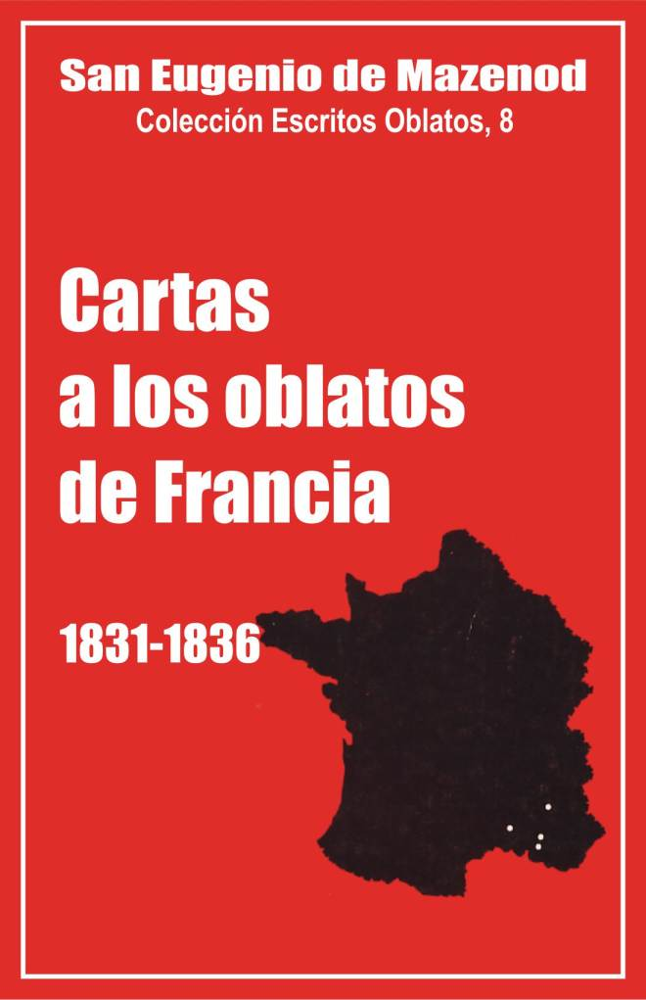

Palo Gordo
2019
Escritos Oblatos: - 01 - 02 - 03 - 04 - 05 - 06 - 07 - 08 - 09 - 10 - 11 - 12 - 13 - 14 - 15 - 16 - 17 - 18 - 19 - 20 - 21 - 22

EUGENIO DE MAZENOD
Colección Escritos Oblatos, 8
Postulación General O.M.I.
Vía Aurelia, 290
Roma 1985
Palo Gordo
2019
1831 - 1832 - 1833 - 1834 - 1835 - 1836
INTRODUCCIÓN
Este octavo volumen de los “Escritos Oblatos” abarca 221 cartas del Fundador, escritas a los Oblatos de Francia desde enero de 1831 hasta finales de diciembre de 1836.
Como para los volúmenes anteriores, ha sido necesario reconstruir la mayor parte de las cartas que siguen, utilizando los breves trozos copiados por Yenveux Y por los primeros biógrafos del Fundador. Pero la preparación de los próximos volúmenes se anuncia más fácil. En efecto desde la carta núm. 491, escrita al Pi Casimiro Aubert el 11 de octubre de 1834, se conserva el original de la mitad más o menos de las cartas de Mons. de Mazenod a los Oblatos. El interés del lector ganará igualmente ya que el Fundador aparece mejor, en toda su espontaneidad y se ve mucho mejor la variedad de problemas que trataba con sus hijos.
La correspondencia de los años 1831-1836 gira casi únicamente alrededor de dos temas: crisis personal del Fundador que se prolonga dolorosamente hasta 1836, esfuerzos para dar nuevo impulso a la expansión de la Congregación y rea vivar su espíritu.
CRISIS PERSONAL DEL FUNDADOR PROLONGADA POR EL ASUNTO DE ICOSÍA
A primeros de marzo de 1831, después de unos meses de descanso en Suiza, el P. de Mazenod vuelve a Marsella y reemprende sin mucho entusiasmo sus funciones de Vicario General. Escribe al P. Mille, el 7 de mayo de 1831: “Es una guerra de pluma que no termina nunca, con todas las potencias de este mundo, grandes y pequeñas, lejanas y cercanas...” En efecto las autoridades civiles locales y parisinas, se muestran siempre muy anticlericales. Numerosas medidas van en ese sentido: disminución del sueldo de los obispos y de los vicarios generales, obligación de quitar la flor de lis de las cruces y de las iglesias, vigilancia de los sermones, oposición a las procesiones, quejas contra las ceremonias religiosas juzgadas demasiado poco solemnes con ocasión de la fiesta del Rey o del aniversario de las victimas de la Revolución de julio de 1830, etc.
Cuando las elecciones de julio de 1831, los padres de Mazenod y Tempier hasta son sospechosos de haber escrito un panfleto contra el Alcalde. Estos iban entonces camino de Friburgo. Enterados de esa grave acusación, vuelven de prisa a Marsella para defenderse. El prefecto Thomas, que será el gran adversario del Fundador en los años 1831-1835, no cree ni él en esa acusación que no tendrá por otra parte consecuencias. Escribe sin embargo al Ministro de Cultos, el 26 de julio de 1831: “Deseo que (Mazenod y Tempier) reemprendan pronto su viaje a Friburgo; porque aunque no hayan escrito panfletos electorales, sigo sin embargo temiéndoles como sacerdotes cuya ausencia seria beneficiosa”.
Pero un acontecimiento más grave ha ocurrido en el mes de mayo. El Consejo del distrito de Marsella había pedido al Gobierno la supresión del obispado de Marsella al fallecimiento de Mons. Fortunato. El anciano obispo, de 83 años, defendió su sede, en primer lugar, animando las cartas de protesta del clero y de los católicos contra ese proyecto, luego, en 1832, proponiendo una solución con creta a Gregorio XVI. Le escribe, el 11 de marzo: “Soy demasiado viejo, Santo Padre, y no puedo esperar prolongue Dios mucho tiempo mi existencia. .. Lo que me aflige, no es el tener que morir pronto, mi peregrinación ha durado de sobra. .. Pero ¿qué será de mi pobre diócesis? Preocupado por ese pensamiento, he aquí lo que Dios me inspira. Que Vuestra Santidad me conceda, no un coadjutor, eso no puede hacerse, no quiero que el Gobierno se mezcle para nada en ese asunto, sino un obispo “in partibus”, que goce de mi confianza, de la de mi clero y de mi pueblo. Durante los pocos días que me quedan, ese obispo me aliviará en el ejercicio de mi ministerio, pero a mi muerte será el lazo de unión de mis ovejas, la esperanza de mi clero, el sostén de todas mis instituciones”.
Temiendo que ese proyecto no cuajara, Mons. Fortunato envía a Roma al P. Tempier. Este presenta personalmente al Papa la carta del Obispo de Marsella y explica de viva voz a las autoridades romanas la situación de la Iglesia de Marsella.
Después de madura reflexión, pero sin consultar al Gobierno francés, el Papa accede a la petición de Mons. Fortunato, convoca al P. de Mazenod y, el primero de octubre, lo eleva al episcopado con el título de Obispo de Icosía “in partibus infidelium”, mientras la Congregación de la Propaganda lo nombra Visitador Apostólico de Túnez y de Trípoli.
Después de tres meses de ausencia, el Obispo de Icosía vuelve a Marsella y reemprende sus funciones. Reemplaza a su tío con frecuencia en las visitas pastorales y las confirmaciones, pero se mantiene bastante discreto. Todo parece posible y el nuevo Obispo juzga suficientemente buenas sus relaciones con el Prefecto y las autoridades civiles de la ciudad.
Cual no fue su sorpresa, cuando a finales de julio de 1833, recibe dos cartas que le conminan vaya cuanto antes a Roma dónde el Papa debe hacerle una comunicación importante.
Con angustia deja Marsella sin saber lo que le espera. Sospecha que el Santo Padre quiera encargarle “alguna misión difícil en alguna región de América” Afirma sin embargo que cuando el Papa habla a un obispo para el bien de la Iglesia será obedecido cueste lo que cueste.
Las autoridades romanas le descubren poco a poco la verdad: el Gobierno francés no lo quiere en Francia. A pesar del clima aparentemente sereno que reinaba en Marsella desde hace un año. Prefecto, Alcalde, autoridades civiles y militares espiaban los gestos del Prelado, desnaturalizaban sus palabras, lo denunciaban a París y lo acusaban de actividades políticas, hasta tal vez de haberse mezclado en el asesinato del comisario central de la policía de Marsella.
En sus informes, el Embajador de Francia en Roma y el Internuncio de París había presionado para que Gregorio XVI llamara al Obispo de Icosía a Roma o lo mandara a África.
Mons. de Mazenod necesitará cuatro meses para disculparse y lograr del Papa el permiso de volver a Francia a principios del mes de diciembre de 1833, en contra de la voluntad del Embajador. “Cárcel por cárcel, escribe el Obispo al P. Tempier, el 8 de septiembre de 1833, prefiero más hacer frente a las amenazas de los Señores Ministros... Sin embargo... me hacen perder mi tiempo, mi dinero y mi salud. ¡Que Dios se lo perdone! pero me fastidian”.
Sigue trabajando entonces junto a su tío, a pesar de no ser reconocido oficialmente como Vicario General de Marsella. En efecto, el Ministro de Cultos había escrito a Mons. Fortunato, el 13 de septiembre de 1833: “Mons. de Mazenod al no haber solicitado ni recibido la autorización del Gobierno para aceptar la colocación de un obispado “in partibus” se halla legalmente según los artículos 32 y 33 de la Ley del 18 Germinal año X, en la imposibilidad de ejercer cualquier función eclesiástica en el reino y de seguir cumpliendo las de vicario general, que han debido cesar desde su instalación como obispo de Icosía. He tenido que ordenar, por consiguiente, al Señor Prefecto de las Bocas del Ródano, suspenda la concesión de cualquier orden de pago para él”.
Esas afirmaciones del Ministro suscitaban el problema en toda su gravedad. Ya no era sólo una cuestión personal entre Mons. de Icosía y el Gobierno, sino una cuestión de principio en el cual la independencia de la Iglesia quedaba ignorada.
Poco después de su regreso a Marsella, en diciembre de 1833, el Obispo de Icosía decide defenderse ante los tribunales. El asunto avanza rápidamente, cuando, a primeros de enero de 1834, el cardenal Bernetti hace escribir desde Roma una carta oficiosa en la cual invita al Obispo a no seguir adelante en ese proceso y a vivir lo más posible en el retiro, conforme a la voluntad expresa del Gobierno. “La norma que hay aquí, escribe el corresponsal romano, es, totalmente independiente de la opinión personal que se tiene de usted. Se os juzga como un obispo con todas las cualidades necesarias para hacer amar a la Iglesia en tiempo de paz, de hacerla temer en tiempos de guerra, de honrarla en ambos casos, hasta con el martirio; pero no os estiman bastante flexible y bastante acomodaticio para gustar en un tiempo que no es ni de paz ni de guerra.
Mons. de Mazenod desistió entonces y se mostró lo menos posible en público. Preside sin embargo algunas ceremonias religiosas en Marsella y realiza algunas visitas pastorales en la diócesis de Aviñón. Es todavía demasiado. Informan de todo a París y el Gobierno toma las medidas necesarias para obligarle a expatriarse borrándolo, como extranjero, de la lista de los electores. El Obispo de Icosía conoce esa medida a primeros de septiembre de 1834 y, sin tardar interpone nueva apelación contra esa decisión; igualmente pone al corriente de la persecución a los Obispos de Francia. Escribe por último a Roma para explicar el motivo de la reanudación de su proceso a pesar de los consejos recibidos.
Mons. Capaccini le contesta inmediatamente en nombre del Papa que renuncie de nuevo. La carta del Prelado hasta contiene algunas expresiones que dejan creer que el Papa está descontento.
Es el momento crucial del drama de Mons. de Mazenod. El tan romano, pare ce abandonado por la Curia, mientras la policía puede en adelante echarlo de Francia en cualquier momento y separarlo de todo cuanto le es querido: su tío Fortunato, Tempier, sus Oblatos, etc. Con razón escribe Rey que el año de 1834 ha sido para el Fundador un año de agonía. Sus cartas a los Oblatos son sin embargo muy discretas sobre ese asunto. Si, durante 4 meses de estancia en Roma, en 1833, escribe 34 cartas al P. Tempier en las cuales cuenta con detalle todas las acusaciones contra él o las gestiones que hace para defenderse, para todo el año 1834 sólo se conservan de él 21 cartas a los Oblatos en las que rara mente trata de sus dificultades personales.
Pasa el invierno de 1834-1835 en Marsella; pero en la primavera, viendo su posición inaguantable, hace nombrar al Sr. F.H. Chalx, Vicario General y parte para l’Osier y Nuestra Señora de Laus. Allí se quedará hasta finales de octubre.
Es entonces cuando el P. Guibert, recientemente nombrado Superior del Seminario Mayor de Ajaccio, va a París para lograr subsidios para ese establecimiento. Como hijo afecto y diplomático avezado, se entrevista con el Rey, la Reina, los Ministros, disipa los malentendidos y los agravios formulados contra el Obispo de Icosía y negocia con habilidad una reconciliación. En enero de 1836, acompañado de su querido hijo y abogado, el Obispo de Icosía presta juramento a Luis Felipe y el Gobierno registra la bula que le había elevado a la dignidad episcopal.
Durante esos tres años de lucha con las autoridades civiles, las reacciones del Fundador son muy diferentes de aquellas de los años 1827-1830.
Está más bien sereno, a veces jovial, con frecuencia hasta enérgico y batallador conforme a su temperamento. Toma sobre todo dos propósitos a los cuales se aferra con firmeza: sumisión a la voluntad de Dios y negativa para ser obispo residencial.
Toma el primer propósito durante su retiro preparatorio para el episcopado en 1832. Escribe al P. Tempier, el 10 de octubre: “La fuerza del Espíritu Santo mantiene más firme mi voluntad precisamente sobre ese punto, y es el fruto que aguardo y espero de mi retiro, es decir que, en esta última fase de mi vida, parece que estoy muy decidido, mediante la sobreabundancia de gracias que voy a recibir, a procurar, con una aplicación asidua, conformarme de tal modo a la voluntad de Dios, que no haya una fibra de mi ser que se aparte de ella conscientemente. Se lo digo llanamente, porque es mi director y, también, para que me lo recuerde, si hace falta, todos los días de mi vida en calidad de mi admonitor”.
No sabía entonces todo el sufrimiento que su título de Obispo de Icosía iba a ocasionarle y, luego, pedirle paciencia y abandono en Dios. No hay duda sin embargo que mantuvo su palabra. Cuando de modo inesperado es llamado urgentemente a Roma, en 1833, escribe al P. Courtés, el 31 de julio: “El Papa será obedecido cueste lo que cueste”. Ve evidentemente la voluntad de Dios en esa llamada del Santo Padre. Al enterarse en Roma de todas las acusaciones contra él y viéndose en la imposibilidad de volver enseguida a Marsella, escribe al P. Tempier, el 24 de octubre:”... no caben pesares cuando se ha obrado lo mejor posible. Dios se sirve hasta del error de los hombres para lograr sus fines. Ignoro lo que me pide; todo cuanto sé, es que gobierna con su sabiduría a los que solo tienen como objetivo trabajar por su gloria. Mi atracción me lleva al descanso. Justamente cansado de la injusticia de los hombres, actuó en consecuencia, porque veo en ello un bien para mi alma, aunque no lograra obtenerlo sino por un momento. Si Dios lo ha decidido de otro modo, dispondrá los acontecimientos e inclinará la voluntad de sus criaturas para lograr sus fines”.
Segundo propósito: negativa a ser obispo residencial. Cuando su consagración, en 1832, el Fundador escribe a los Padres y Hermanos de Billens, el 24 de octubre, que el motivo determinante del consentimiento “de su voluntad a la determinación de su tío ha sido el bien que pudiera resultar para la Congregación”. Cuando su llamada a Roma, en 1833, declara al P. Tempier, el 21 de agosto, que “ha aceptado ser obispo junto a su tío sin ninguna pretensión a la futura sucesión”: “Ya me podían ofrecer la sede de París que les daría las gracias”. Esta decisión se convirtió en negativa categórica cuando Guibert le habla de reconciliación y de designación a una sede fuera de Marsella o, por lo menos, con titulo de auxiliar de Mons. Fortunato. Al hilo de sus reflexiones, en sus cartas al P. Tempier, expone toda una serie de motivos sobre la negativa: deseo de descanso y de vida regular en una comunidad oblata para prepararme a la muerte, impotencia para hacer cualquier bien, ingratitud de los Marselleses, injusticia de los hombres que ha amargado su carácter, cuando “en cierto momento” se sentía capacitado para realizar la obra de los mayores obispos, edad demasiado avanzada, incapacidad “para pactar con el error”, etc. El 25 de agosto, expresa su pensamiento al P. Tempier y explica los motivos profundos que tiene para rehusar una sede fuera de Marsella “con sus gustos actuales” y la posición en que se encuentra con el Gobierno. Sería ir contra su conciencia, contra su felicidad y contra su honor. Desarrolla ampliamente esos tres puntos. Entre los motivos de conciencia que le hacen rehusar una sede, precisa: “Los hombres, siempre injustos en sus juicios, han concluido del hecho de haber realizado en mi vida muchas cosas difíciles allí donde otros habrán fracasado, que soy de carácter emprendedor y que me hacen falta la acción y el movimiento. Es todo lo contrario.
Sí he puesto actividad, si me he puesto en movimiento, si he emprendido cosas difíciles y las he llevado a cabo, es por deber, es que me era imposible negarme a una especie de evidencia que me probaba que tal era la misión que la Providencia me encomendaba; pero en el fondo de mi carácter, siempre he sentido una gran aversión para toda clase de asuntos. Nunca he concebido como se puede dar un paso, hacer la menor gestión, por ambición... En los comienzos de mi ministerio he sacrificado mi inclinación para hacer el bien a los hombres. He tomado medidas inspiradas por el celo para tener celo aún después de mi muerte por aquellos a quienes he asociado a mis trabajos. Serán más felices que yo, y espero que Dios les procurará los consuelos que me han sido negados...”
Desinteresadamente, el Obispo de Icosía afirma que debe quedarse junto a su anciano tío, el P. Tempier y los Oblatos. “¿No se da cuenta todavía, prosigue, que mi honor quedaría tan comprometido como mi felicidad en la nueva carrera a la que me quieren empujar? En primer lugar, todos dirán que he vendido mi adhesión por una sede, que en eso se cifraban todos mis deseos, etc. El mismo Gobierno creyéndome capaz de esa indignidad, creerá comprarme a ese precio y se convencerá de poder exigir unas complacencias que mi conciencia y mi delicadeza se negarán igualmente a concederle...” Por último, concluye que prestará juramento al Gobierno con la condición de seguir como simple vicario general de Marsella o sufragáneo de su tío.
El 26 de agosto de 1835, confirma sus reflexiones del día anterior. Prestará juramento a la condición de quedarse en Marsella: “Si soy más accesible sobre ese punto, confía, es que la buena salud de mi tío y la fundada esperanza que tenemos de conservarlo todavía muchos años, me dan tiempo para respirar y reflexionar sobre lo que tendría que hacer si muriera antes que él, como por poco casi lo he hecho por dos veces y como podrá ocurrirme. Mientras tanto mi posición quedaría determinada convenientemente y mi corazón satisfecho...”
El Gobierno no nombra entonces obispos auxiliares. Conforme a sus deseos, el Fundador prestó pues juramento a título personal y siguió ayudando a su tío como vicario general honorario hasta el nombramiento para la sede de Marsella en 1837.
ESFUERZOS PARA RELANZAR EL DESARROLLO DE LA CONGREGACIÓN
Y PARA REAVIVAR SU ESPÍRITU.
La Congregación, como el Fundador, vivía entonces un período de crisis pocas vocaciones sólidas con muchas salidas, imposibilidad de predicar misiones como consecuencia de la Revolución de julio de 1830, dificultad para fundar fuera de Francia, etc.
Aparentemente, la situación cambia poco antes de 1831 y 1836. Si había habido 4 defunciones y 10 salidas en el período de 1826-1830, constan 2 defunciones (Capmas y Pons) y 13 salidas en el de 1831-1836. El número de los Padres y Hermanos pasa sin embargo de 34 a 39, ya que hay unos 10 ingresos en el noviciado cada año de los cuales cerca de la mitad hacen la profesión.
Entre 1831-1833, el Fundador corresponde sobre todo con el P. Mille, en Suiza. Es allí donde están los novicios y los eclesiásticos, es allí igualmente donde se logra predicar. En Francia, los Padres deben ocuparse como pueden para trabajar en las parroquias. “Soy totalmente de su opinión sobre los inconvenientes del ministerio de las parroquias, escribe el P. de Mazenod al P. Tempier, el 14 de enero de 1831. La necesidad que nos obliga a ello es una pesada cruz para mi y desearía, para todos , no vernos reduciros a ese extremo”. El P. Honorat sobre todo sufre por la inacción. Propone una especie de predicación itinerante, hecha por misioneros aislados, para no atraer la atención: “Lleno de celo por la salvación de las almas, escribe el Fundador al P. Tempier, el 20 de enero de 1831, desearía predicar a los pobres, de pueblo en pueblo, convencido de que su ministerio no sería infructuoso”.
En Nuestra Señora de Laus, el P. Guibert y sus colaboradores acogen a los sacerdotes que van a hacer su retiro y ayudan a los párrocos de los alrededores, invitando al clero a marchar para las misiones de América donde los Obispos piden ayuda. El Superior de Laus apremia igualmente al Superior General a fin de que encuentre nuevos campos de apostolado: “Le hace falta un aliciente al celo de la Congregación naciente, escribe en 1832, el descanso nos sería mortal”. El P. de Mazenod llama entonces sin éxito a varias puertas: En Cerdeña y en el Valés en 1831, en Roma y en Argelia en 1832 y 1837.
Varios Padres insisten para ser enviados a las misiones extranjeras, como Ricard, Touche, Bernard, Tempier. Hasta le parece al Fundador: “que son demasiados los que piensan en ello”. Escribe al P. Tempier, el 21 de noviembre de 1833: “No tengamos demasiada prisa, esperemos en al Providencia... Es verdaderamente una manía querer dar nacimiento a hijos antes de ser núbiles. Comience por llenar la colmena luego enviaréis enjambres”.
Cambia la situación en 1834. Rey escribe que fue para el Fundador un año de agonía, pero la cruz es fuente de vida: el año 1834, se revela de excepcional fecundidad para la Congregación. Se reanuda la predicación de las misiones en todas las diócesis, además dos obras importantes son ofrecidas y aceptadas: el Seminario Mayor de Ajaccio y el Santuario de Nuestra Señora de l’Osier. El P. Guibert es nombrado Superior del Seminario Mayor de Ajaccio y el P. Guigues Superior de l’Osier. Ahí es donde esos Padres darán, en pocos años, toda la medida de su talento y de su celo antes de ser Obispos, uno en Francia (Viviers, Tours y París), el otro en Bytown, futura capital de Canadá.
Esas fundaciones y la reanudación de las misiones traen un renuevo de vida y el Fundador juzga oportuno volver a poner en marcha la Congregación por el buen camino. Insiste sobre dos puntos: Aplicación casi exclusiva al fin principal del Instituto y renovación de la vida religiosa conforme a todos los rigores de la Regla. Casi todas sus cartas van dirigidas entonces a los superiores y tratan de esos temas, para él esenciales. El P. Tempier, Superior del Seminario Mayor de Marsella y del escolástico oblato, sigue siendo el principal confidente: 85 cartas le son enviadas entre 1831 y 1836, 49 al P. Courtés, Superior de la casa de Aix, 31 al P. Mille, Superior de Billens, luego de Nuestra Señora de l’Osier, 18 al P. Casimiro Aubert, maestro de novicios.
En muchas cartas, el Fundador habla de las misiones para recordar que se trata del fin principal de la Congregación. Fija él mismo la agenda de las misiones que se han de predicar, se maravilla de su éxito y de los “milagros” que siempre producen, insiste sobre la preparación seria de los sermones prefiere las misiones a los sermones aislados, hasta a los mismos retiros. Se opone al ministerio con las religiosas y no ve bien el apostolado de la pluma, rehúsa un colegio en Manosque: “Ese establecimiento no entra en nuestras atribuciones, escribe al P. Mille, el 16 de mayo de 1836... apartaría además a algunos de nuestros sujetos, ya tan escasos, del ministerio principal de la Congregación”. El Superior General hace una excepción para los Padres que se ocupan de los novicios o de la enseñanza en el escolasticado y en los seminarios mayores. Se ve entonces obligado a insistir sobre el deber de estado de los profesores y de los educadores, a reprochar al maestro de novicios haber ido a predicar misiones, a censurar continuamente al P. Mille, que en Suiza predica demasiado y no se ocupa bastante de los novicios y de los escolásticos “Sois tan buen misionero como mal Superior”, le escribe el 21 de abril de 1832.
Pero el Fundador quiere sobre todo renovar la Congregación en su espíritu. Recuerda continuamente la necesidad de una buena formación de los novicios y de una observancia estricta de las Reglas por todos los miembros de la Sociedad. En el Calvario “las circunstancias por una parte, las enfermedades por otra, la muerte y otros motivos habían hecho alterar nuestras observancias, escribe el P. de Mazenod al P. Courtés, el 6 de marzo de 1831. Constata las mismas irregularidades en todas las casas. Al maestro de novicios y a los directores de escolásticos pide que estudien todo lo posible a los sujetos, vigilen sobre todo la formación espiritual, la regularidad, el desapego, la meditación de las Reglas y la grandeza de la vocación oblata. A los Superiores encomienda escriban todos los meses, convoquen regularmente su consejo, lleven estrictamente los libros de contabilidad, sean el modelo de sus súbditos.
Después de la visita canónica de Nuestra Señora de l’Osier y de Nuestra Señora de Laus, durante el verano de 1836, escribe al P. Mille, los días 23 y 25 de agosto: “La comparación de lo que ha sido practicado por nosotros con los abusos que nuestros jóvenes superiores locales han dejado introducir en nuestras casas y animado con sus ejemplos, sólo me inspira penosos pensamientos. Los superiores locales, a fuerza de actuar conforme a sus ideas han llegado a rehacer la Congregación. Tanto es así que no reconozco ya mi espíritu en las casas que acabo de visitar, y ¿cómo lo iba a encontrar si nunca se han molestado en consultarme? No os he repetido bastante a vosotros jóvenes superiores, que la necesidad me ha obligado a poneros a la cabeza de nuestras comunidades mucho antes de que estuvieseis preparados para gobernar, que vuestro gran defecto ha sido el de seguir vuestro propio espíritu, en lugar de apoyar vuestra norma de conducta en lo que había sido practicado antes de vosotros. De haber seguido nuestros pasos, no hubieseis introducido tantos abusos que tengo toda clase de dificultades para desarraigar...”
En el verano de 1836, el noviciado pasa de Laus a Aix, luego de Aix a Marsella. El P. Casimiro Aubert se queja de ello. El Fundador le contesta el 26 de septiembre: “La muerte inopinada de nuestro siempre llorado P. Pons y la huida culpable del P. Pachiaudi me ponen en la necesidad de llamarte al Seminario Mayor de Marsella. Por lo tanto el noviciado te seguirá a Marsella. No cambio así de proyecto por inestabilidad de ideas, pero ¿quien puede revolverse contra los acontecimientos más imprevistos? ¿Quién puede resistir al mismo poder de Dios? La marcha de la Providencia es un gran misterio para mi. Nuestro deber es someternos a lo que puede tener de riguroso y de penoso, sin desconcertarnos nunca, aún cuando nos deje en el mayor de los apuros. Cuando no podemos navegar a velas desplegadas, hay que zigzaguear y hacer navegar el barco con sólo unas velas, aunque sea con la más pequeña que se iza encima del mástil y que se llama juanete. Todo cuanto exijo en estas coyunturas penosas y apuradas, es que el piloto mande en la tempestad, es que la tripulación obedezca en silencio y que me ahorren las reclamaciones fuera de lugar en los casos apremiantes en los que cada cual debe hacer su maniobra como puede, en el puesto que le ha sido asignado”.
Estas sabias reflexiones nos describen bien al Fundador con su carácter enérgico, pero también con su perfecta sumisión a la voluntad de Dios.
El Capítulo General reunido en Marsella, en 1837, se dedicará enteramente a la disciplina de la Congregación. Esta recuperará poco a poco su vigor y quedará preparada para en 1841, afrontar los esfuerzos que le serán exigidos por su expansión muy rápida en Europa y otros continentes. Mons. de Mazenod entrenado por la experiencia y los sufrimientos, estará él mismo preparado para pilotar, con mano maestra, y durante 25 años, los dos barcos de la Congregación y de la diócesis de Marsella para la cual será nombrado Obispo en 1837.
Yvon Beaudoin.
377. Al P. Mille, en Billens.
Las economías del Gobierno se hacen a expensas del clero. Que los hermanos escolásticos no descuiden el estudio de las letras y del italiano.
Niza, 3 de enero de 1831.
... Todas las economías del Gobierno se hacen a expensas del clero. En Chalons, para eliminar antes al seminario menor, se le ha pegado fuego y cien alumnos, que ciertamente necesitaba esa pobre diócesis, han vuelto a sus casas. ¿Qué ocurrirá con otros establecimientos? No lo sé, pero no dudo terminen por quitarles todas las ayudas que les proporcionaban.
Veis que pronto nuestros queridos estudiantes serán el único recurso de la Iglesia. Sé que no tengo necesidad de recomendarles estén siempre a la altura de su vocación. Si supierais el lamentable clero que he encontrado, no digo donde, acrecentaríais todavía más vuestro celo.
No me cansaré de recomendar no descuiden jamás el estudio, no digo sólo de la teología y filosofía, sino de las letras también. Hay que combatir los errores del siglo con las armas del tiempo. Cada vez me sorprende más el ver a tantos jóvenes en las filas enemigas escribir tan bien, con tanto arte y talento, para defender la mentira y toda clase de engaños. Hay que hacerse a ese mismo género de combate. Que se sepa bien la lengua, que se ejerciten en su manejo. Será un tiempo bien empleado. Saque fuego de la piedra ; hay que golpear para ello, la chispa sólo la produce el golpe. Pero no pierda nunca de vista que trabajáis para Dios, que la gloria de su santo nombre está interesada, que la Iglesia exige ese servicio de vosotros. Es deciros que hay que sobrenaturalizar vuestros estudios, santificarlos con una gran rectitud de intención, dejando de lado cualquier amor propio, no buscándoos en nada, así los autores profanos pueden elevaros hacia Dios tanto como los Padres de la Iglesia.
Recomiendo al H. Semeria no descuide la lengua italiana que puede sernos muy útil algún día, y los que entre vosotros sepan algo harán bien en no perder lo que saben y perfeccionarse en ello.
378. Al P. Courtés, en Aix.
La regularidad de la comunidad de Billens debería ser imitada en las demás casas. P. Bernard.
Niza, 10 de enero de 1831.
No hubiese dejado Billens, verdadero paraíso de la tierra, donde las virtudes y la vida angélica de todos cuantos la habitan harían la felicidad de mi vida y me consolarían de las imperfecciones y de la poca regularidad de tantos otros que estarían sin embargo obligados a darles el ejemplo. Cuando hablo de regularidad, entiendo la fidelidad en conformarse al espíritu y a la letra de las Reglas, que obligan a trabajar muy seriamente para ser hombres más perfectos y mucho más perfectos que el común de los eclesiásticos.
Me estremezco de no poder recordarlo de viva voz a todos aquellos que no lo comprenden y que se imaginan haber cumplido con toda justicia quedándose a cien leguas de lo que deben ser. Corto sobre este artículo que me aflige demasiado. No puedo hacerme a la idea de que cada cual no se convenza de que debe ponerse absolutamente a la altura de sus deberes. Lo esencial es formar ce en la obediencia y en una indiferencia absoluta para tal o cual empleo, para tal o cual superior; sin eso no sea logrado nada.
... Pienso que este debe tener provisión de sermones, ya que había solicitado tiempo para hacerlos. Temo sin embargo que el tiempo que dedica a la lectura y comentarios de los periódicos no le hayan apartado demasiado de esa ocupación que sin embargo yo había impuesto como obligación. Ruego al P. Bernard aumente su capital.
379. Al P. Mille, en Billens.
Llevar bien las cuentas y escribir la historia de la casa. Fallecimiento del P. Capmas.
Niza, 10 de enero de 1831.
... Os recomiendo llevéis bien vuestras cuentas porque quiero ver claro en ellas. Ocúpese también de escribir exactamente la historia de nuestro establecimiento y anotar día a día los pequeños acontecimientos: por ejemplo, la visita del Obispo, las conversaciones y los asuntos tratados con el diputado de Lausana o tal otro personaje. Casi todo lo que me decís en vuestras cartas puede ser incluido en esas notas. Es un deber que os impongo; póngalo en el número de vuestros deberes ineludibles. Los servicios diarios que prestáis a la parroquia no deben ser olvidados, así como los hechos notables de caridad, de mortificación, de humildad, de fervor de los miembros de vuestra comunidad; pero esta parte debe quedar ignorada de todo el mundo, sólo debe ser manifestada cuando llegue el momento. Infórmeme cuando esté al día y póngase al trabajo inmediatamente. No os doy un simple consejo es una obediencia formal. Deje lo demás, si hace falta, para ocuparse de eso.
... El P. Grassi me ha escrito también en el mismo sentido. Esperemos pues con paciencia y resignación el momento del Señor, pero no dejemos de pedirle con insistencia que seamos dignos de hacer su santa voluntad. Dios quiere llevarnos por el camino de las pruebas y tribulaciones: aceptemos todo de su mano. Necesitamos asentarnos bien en esos grandes principios, porque en este mismo momento estamos amenazados por una gran desgracia. Tal vez a estas horas nuestro querido P. Capmas haya dejado de existir. Recibo hoy una carta que me anuncia que está gravísimo. Sin embargo, en el momento de la salida del correo había recobrado el conocimiento, pero esa pequeña mejoría me deja pocas esperanzas. Juzgue si estoy tranquilo, ¡Y tengo que esperar tres días para tener noticias! Esas grandes penas las siento hasta el fondo del alma. Conocéis al sujeto y comprendéis como yo, que pérdida será para la Congregación si el Señor nos lo lleva. ¡Pero es el Señor de todo y de todos!
13 de enero.
No he querido dejar salir mi carta por el correo de antes de ayer para poder daros las noticias que esperaba hoy de Marsella. No las esperaba sino como son.
Os anuncio pues con dolor que el Señor se ha llevado a nuestro querido P. Capmas el 10 del corriente, a las doce y media, después de una agonía larga y penosa. Me dicen, que no pudiendo hacerse comprender a causa de su extrema debilidad, participaba sin embargo con mucha piedad en los sentimientos que le sugerían. Ha sido enterrado en el panteón del seminario en San Justo. Os ruego le apliquéis vuestro sufragio con todo el fervor del que sois capaces. Pedir a Dios para mi la gracia de una total resignación a los designios de la Divina Providencia. “Dominus dedit, Dominus abstulit”, es deber nuestro añadir: “Sit nomen domini Benedictum”.
380. Al P. Tempier, en Marsella.
Enfermedad del P. Capmas. Sufrimiento del Fundador, pero sumisión a la voluntad de Dios. Testamento de los Oblatos.
Niza, 11 de enero de 1831.
Comprenderá fácilmente, mi querido amigo, la pena que siento por el estado casi desesperado de nuestro pobre P. Capmas. Espero con impaciencia y ansiedad el correo del jueves que probablemente me dará precisiones sobre su suerte. Hay que confesar que la enfermedad y la muerte golpean con una predilección que desconcierta a unos hombres menos sumisos a la voluntad de Dios que nosotros.
No temo hacer esta confesión, porque me parece que estoy bastante hecho a ese hábito de conformidad con los designios impenetrables de la Divina Providencia, aunque no presuma ciertamente de ser insensible a los golpes que a veces parece que nos van a hundir. Si se me ofreciera esa clase de perfección la rechazaría. Y digo más: para mi en cierto sentido es objeto de escándalo cuando la veo encomia da en algunas historias, que se le atribuyen falsamente sin duda a unos hombres a los que se esfuerzan, no sin mentira, en situar fuera de la naturaleza humana y a ¡os que, en mi opinión se calumnian de modo cruel. Jesucristo, nuestro único modelo, no nos dio ese ejemplo. Adoro su conmoción y sus lágrimas ante la tumba de Lázaro y, al mismo tiempo, desprecio y aborrezco el estoicismo, la insensibilidad y el egoísmo de todos aquellos que, al parecer, desearía superar a este prototipo de toda perfección que ha querido santificar todas las situaciones de nuestra triste peregrinación.
Espero pues temblando la noticia que me dará el jueves, y esta vez, lo que ocupa mi pensamiento por completo, es el bien general de la familia, mucho más que cualquier otra consideración o afecto personal. Me preparo para cualquier acontecimiento con la oración y el abandono más absoluto a la voluntad del Señor de nuestros destinos para quien estamos aquí abajo.
Ahí tiene una preocupación más, mi pobre amigo. Si Dios dispone de ese pobre enfermo, os vals a ver en apuros, porque se dirá que es una precaución inútil, hacer testamento en plena salud. No me reprocharán el haber descuidado los avisos convenientes. Al pasar por Ntra. Sra. de Laus, le había recomendado retirara el dinero que tenía disperso con una despreocupación increíble. Me dijo entonces que era su intención dejar parte a nuestra familia. Creo que debo daros a conocer la intención que me ha confiado. Tome las precauciones oportunas para que sus papeles no se pierdan. No tengo inconveniente en atribuirme su propiedad. Aludo a sus sermones, instrucciones, etc. Que nadie los toque y, si se ha cometido ya alguna indiscreción, que pongan todo en mis manos. Los perezosos o los incapaces son gente hábil para vestirse con las plumas ajenas.
Dios quiera haga inútiles todas estas precauciones.
Me impacienta enormemente mi inactividad obligada; si mañana o a más tardar el sábado 15 no recibo carta, procuraré ponerme de acuerdo con el Vicario General y salgo.
381. Al P. Tempier, en Marsella.
Fallecimiento del P. Capmas. Sufragios. Testamento. Inconvenientes del ministerio parroquial. Asociación provenzal para la defensa de la religión católica.
Niza, 14 de enero de 1831.
Esperaba demasiado, mi querido Tempier, la triste noticia que me da en su carta del 11. En cuanto me habló de un peligro sin el consuelo de la menor esperanza, proveyendo lograr me preparaba para eso. Nos vemos pues privados de uno de nuestros mejores sujetos, apto para cualquier clase de ministerio, sencillo y obediente, preparado siempre para cumplir su deber, haciéndolo bien, sin más pretensiones que un niño. ¡Bendito sea Dios! Lo repetimos en la adversidad y en las mayores tristezas como en la prosperidad como y los favores. Lo que incrementa mi pena, es que nuestro querido difunto no haya podido recibir el santo viático. Yo pido a Dios diariamente, en el santo sacrificio, no quedar privado de esa dicha en la hora de mi muerte. Los médicos deberían de habernos prevenido antes del peligro; no hay que avisar cuando un hombre delira; será una lección para estar en guardia otra vez. Sin embargo la comunión que le fue dada el 1º del año habrá suplido la falta del santo viático, y espero que nuestro pobre enfermo habrá recibido de la bondad de Dios, todas las ayudas sobrenaturales y extraordinarias que necesitaba en ese momento supremo. El Señor habrá tenido en cuenta la caridad que le hizo pedir el favor de encerrarse en el Lazareto para prodigar las ayudas de su ministerio a tantos soldados atacados por la enfermedad epidémica de África; ha muerto en el seno de la Sociedad, es una señal de predestinación. Sólo nos queda aplicarle los sufragios a los que tiene derecho y por cuyo medio su alma entrará antes en posesión de ese Dios bueno, tan fiel a sus promesas, que él eligió y que será su recompensa.
Si fuera permitido expresar algún pesar a consecuencia de tan gran pérdida, me quejaría de que haya descuidado hacer lo que le había recomendado a mi paso por Laus y que no dejé de recordar en una, o tal vez en varias de mis cartas de Friburgo. Así es como se pierden bienes y personas. No es que en conciencia no podamos precisamente a falta de disposiciones, considerarnos como los herederos de nuestro hermano, cuando digo nosotros, entiendo la familia. El artículo 23 del par. 1 cap. 1,2, es preciso sobre el particular, pero eso es para la conciencia, porque no será posible hacer valer ese derecho en el foro externo. Basta sin embargo para tranquilizaros sobre muchas cosas… Puede decir por último a los que ha escrito que no deben contar con todo lo que tienen por que el pobre difunto me había dado a conocer positivamente sus intenciones, que no ha podido ejecutar, por haber sido sorprendido por la muerte que estaba lejos de esperar tan pronto. Se lo repito: esa voluntad claramente manifestada y el artículo anteriormente citado le tranquilizan. No sería justo por ejemplo que en un contrato sinalagmático, sólo una de las partes quedase obligada y la otra no tuviese nada que ver.
Soy de su opinión sobre los inconvenientes del ministerio de las parroquias. La necesidad que nos obliga es una pesada cruz para mí y desearía por encima de todo no vernos en ese extremo. Pero, ¿como hacemos? ¿Vamos a dejar a unos hombres, que pueden trabajar, en la ociosidad? Independientemente de otras consideraciones digo que no. Sin embargo con un poco más de virtud, habría medio de~ evitar los inconvenientes; eso lo deben lograr los hombres de conciencia y aferrados a sus deberes. Si se les expusiera a esos peligros en tiempo ordinario, se haría mal, pero cuando no es posible hacer de otro modo, es indispensable hacer de la necesidad virtud. No son unos niños, tienen bastantes recursos con la práctica de su Regla, para mantenerse en el fervor de su santo estado.
Una asociación para defender legalmente la religión católica me parece una casa laudable y muy conforme a la legislación que rige nuestro país. La libertad de opiniones y de prensa debe ser para todos, pero es importante que todos cuantos intentarán escribir sean gente de méritos y capaces de sostener una lucha contra tantos enemigos encarnecidos. No dejó de ver algún inconveniente en que presida ese consejo, sin embargo si de ello resultará un gran bien y tuviera seguridad de que sus colaboradores no se saldrán nunca de la línea del deber y no le comprometerán, se podría exponer a las probabilidades molestas fácilmente previsibles. En cuanto al periódico, ya conoce mi opinión sobre el particular. Hace tiempo hubiese querido saliera; los recursos no son ya los mismos hoy día. Por mi cuenta no puedo dedicar hoy con gusto lo que hubiese destinado hace dos años. Santiago le proporcionará de vez en cuando, algunos artículos, con tal de que quedará fuera de toda…
382. Al P. Tempier, en Marsella.
El Fundador no aprueba los proyectos apostólicos del P. Honorat. Difícilmente se podrá establecer en Cerdeña o Niza.
Niza, 20 de enero de 1831.
Honorat me ha escrito, como lo esperaba, pero no me propongo contestarle porque pienso que se escribe con él. Le transmitirá pues mi opinión sobre lo que me pide. Lleno de celo para la salvación de las almas, desearía predicar a los pobres, de pueblo en pueblo, convencido de que su ministerio no sería infructuoso, buscando solo la gloria de Dios contentándose como retribución con el pan de cada día. Admiro esos sentimientos hermosos, sin que me sorprendan; ese santo sacerdote está a la altura de todas las virtudes de su estado y es capaz de cualquier abnegación, pero no por eso apruebo su proyecto de peregrinación a la Loubesc; además de que no es la época, veo otros inconvenientes.
Estoy fastidiado, más de lo que se puede decir, por los obstáculos absurdos que se ponen en un asunto de orden superior y todo con ventaja para los oponentes. Les hacen falta misioneros y se imaginan tenerlos en abundancia es así como los laicos entienden los asuntos de la religión. Las autoridades eclesiásticas sienten más sus necesidades, pero se hallan en tal dependencia que apenas les queda la facultad de solicitar muy humildemente; llevan la precaución de la servilidad hasta medir las gestiones que hacen en el caso de hacerlo y no decir nada en sus peticiones que pueda contrariar. ¡Juzgue con eso si es fácil valorar unas razones por perentorias que puedan ser! De no tener en vista los intereses divinos, quedaría uno asqueado, pero el no tener nada que reprocharse, me hace estar firme hasta el presente.
383. Al P. Mille, a los novicios y eclesiásticos de Billens.
Los proyectos de fundación en Italia han fracasado; próxima salida del Fundador para Marsella. Fallecimiento del P. Capmas. Prudencia en la correspondencia. Décimo sexto aniversario de la fundación de la Congregación. Huéspedes en Billens. Amistad.
Niza, 24 de enero de 1831.
... Los proyectos de los que os he hablado en mi última carta han fracasado ante las nubes cargadas de tempestades que cubren el horizonte. Así pues, ya no hay razón para que prolongue mi estancia donde nada tengo que hacer. Es lástima, un amplio campo se cierra a nuestro celo y, ¡Dios sabe cuánto necesitaban de nuestro ministerio los que niegan la ayuda que la Providencia les ofrecía! No será nuestra la culpa. He hecho cuanto dependía de mí, sólo lamento encontrar tanta dificultad para hacer el bien en esas circunstancias en que tantas gentes logran hacer el mal, y adorar los designios de Dios, aunque me parezcan muy rigurosos. En esa disposición he tratado de ponerme en la última desgracia que acaba de ocurrimos, porque he sentido vivamente la pérdida de nuestro querido P. Capmas. Al pesar que me ha dejado su prematura muerte, se ha unido al disgusto de no poder rendirle los deberes que desearía no dejar a nadie en tal circunstancia. Los cuidados ciertamente no le han faltado, pero hubiese quedado más satisfecho de haber podido recibir su último suspiro. El Señor parecía habernos enviado a ese sujeto para reemplazar el vacío horroroso de esa pérdida tan dolorosa (P. Suzanne) cuyo segundo aniversario celebramos dentro de algunos días. ¡Ay! Esa ayuda ha sido de poca duración. Si la salud de Mouchel no es un obstáculo para su admisión, hay que esperar que reemplazará a éste por un mayor espacio de tiempo.
... En adelante me escribirá a Marsella. No necesito recordarle que no sería prudente nombrar las cosas por su nombre, porque la persecución contra la religión sigue su marcha. No se ha firmado ni una sola carta, una sola carta en el ministerio de los asuntos eclesiásticos que no sea opresiva para la Iglesia y sus ministros. Y no es nada todavía en comparación con lo que prometen. No es la voluntad lo que les falta, hay que agradecer la intención, en espera de que procedan mejor.
Mañana celebro el aniversario del día en que, hace 16 años, dejé la casa materna para ir a vivir en la misión. El P. Tempier había tomado posesión de ella unos días antes. Nuestro alojamiento no era tan magnífico como el Castillo de Billens y, por desprovistos que estáis de cosas, más lo estábamos nosotros. Mi cama de tijera estaba en el pequeño pasillo que lleva a la biblioteca, que entonces era una sala grande que servía de dormitorio al P. Tempier y al otro que ya no se halla entre nosotros (P. Icard). Era también nuestra sala de comunidad. Una lámpara era todo nuestro alumbrado y, cuando nos acostábamos, se la colocaba en el umbral de la puerta para que nos sirviera a los tres.
La mesa que adornaba nuestro refectorio la formaban dos tablas, colocadas sobre dos viejos toneles. Nunca hemos tenido la dicha de ser tan pobres desde que hicimos votos de serlo. Sin embargo, aquello eran los preludios del estado perfecto en el que vivimos tan imperfectamente. Adrede apunto esta especie de indigencia muy voluntaria, ya que hubiera sido fácil acabar con ella trayendo lo que hiciera falta de la casa de mi madre, para deducir que Dios nos dirigía, desde entonces muy atentamente, sin que pensáramos todavía en los consejos evangélicos que íbamos a profesar más tarde. Practicándolos es como hemos conocido su valor. Os aseguro que no perdíamos nada de nuestra alegría; por el contrario como ese nuevo modo de vivir contrastaba tan al vivo como el que acabamos de dejar, nos reímos con ganas a menudo. Debía este buen recuerdo al santo aniversario de nuestro primer día común, que feliz sería si lo continuará con nosotros!
... Pienso que hay que ser sobrios en esa clase de invitaciones menos en razón de los gastos, que deben ser también calculados en nuestra posición en que razón de la distribución de la casa. No ocurre en Billens como en una casa construida expresamente para una comunidad. En esta se puede alojar a un extraño sin que la comunidad sea molestada en lo más mínimo. Ni se enteran con frecuencia que está bajo el mismo techo, y si se le ve es que se le quiere ver y en horas para ello. En Billens, no podéis introducir a nadie sin que se resienta la regularidad.
Le aconsejo pues que no invite a nadie a alojarse en vuestra casa a no ser el Señor Obispo o algún otro personaje importante. Por eso mismo la distribución de vuestra casa debe servirle de excusa, y no hay que temer aducirla para no hacer ninguna invitación, sino ya uno, ya otro vendrá a distraer a vuestros estudiantes, a apartarlos de sus ocupaciones, de su Regla y a molestarle a Usted mismo al que no debe sobrar tiempo. Tampoco necesito recomendarle que no vaya a Friburgo a no ser por graves motivos, claro está.
25 de febrero.
Acabo de enviar a correos con la esperanza de que se hubiese equivocado esta mañana. Nada, nada de vosotros; estoy verdaderamente enfadado. Paciencia; pero quiero castigarlos por vuestra negligencia terminando mi carta aquí aunque hubiese proyectado contaros algunas anécdotas de Marsella que os habrían divertido. Me duele sin embargo dejar todo este papel sin deciros cuanto os quiero, y que el P. Mille que es el intermediario y a la vez parte integrante de la preciosa familia hace mal en dejarme de estuco, a falta de un alimento necesario para mi corazón. Lo sabéis soy el Padre, y que Padre! Por consiguiente no puedo contentarme con la parte que se le da al superior. Si pudieseis escuchar a la puerta cuando hablo de vosotros, o leer lo que escribo, comprenderíais lo que sois para mí, pero lo sabéis y ante Dios debéis tener encuentra mis sentimientos. Y vuestras virtudes, vuestro desvelo por la gloria de Dios y al servicio de la Iglesia, serán mi gloria y mi consuelo en medio de la asamblea de los santos; mientras tanto gozo en el secreto de mi corazón y os bendigo encomendándome cada vez más a vuestras oraciones y a vuestro recuerdo.
Adiós, cada vez más, mis queridos hijos, ¡que frío debe hacer en Suiza! Me hablan de diez grados en Turín, pero no tienen estufa. Aquí es la lluvia la que cansa. En todas partes hay que sufrir algo.
¡Todo cuanto sé, es que me encontraría bien allí donde estuviera con vosotros!
384. Al P. Tempier, en Marsella.
Los Capuchinos en Marsella deben renuncia a su hábito.
Niza, 27 de enero de 1831.
Creía que los Capuchinos habían desaparecido. ¿Cómo consiente comprometerse inútilmente para complacer el capricho de dos viejos hermanos que no quieren dejar su hábito? No es razonable. No hay que encabritarse contra los acontecimientos y desafiar, sin ventaja alguna para la buena causa, una persecución que nos suscitaría muchas dificultades en asuntos bastante más importantes. Si la autoridad civil o militar echara la mano sobre esos religiosos y los encarcelara, haría bien reclamando. Es inútil exponerse a otras molestias que las suficientemente vejatorias que le ocasionan los deberes de su cargo. Por favor digan al P. Buenaventura que ceda a la tempestad como lo han hecho antes otros cofrades suyos. Si quieren quedarse en Marsella, y ser aprobado allí, que lleve el hábito eclesiástico y que los dos viejos hermanos, si quieren conservar su barba, que la paseen por otros lugares, donde no será motivo de contradicción. Es esa la opinión de Monseñor como la mía. Tome para ello los medios eficaces que le proporciona la autoridad que tiene entre manos.
385. Al P. Mille, en Billens.
Enfermedad del H. Mazet. Apostolado del P. Mille que deberá ser ayudado por otro sacerdote.
Marsella, 20 de febrero de 1831.
... Su estado me apena profundamente y estaba lejos de pensar llegara hasta ese punto. Ahora ¿que’ hacemos? Únicamente los doctores tienen la palabra. Si piensan que los aires de su pueblo natal podrían restablecerlo, habría que pasar por ello, a pesar de los inconvenientes de esa decisión. Los estudios, la piedad, el espíritu religioso padecerán. Por otra parte, corre el riesgo de perecer quedándose donde está, no es posible exponerlo a esa desgracia si se tienen fundadas esperanzas de curación en su pueblo, porque si el mal fuera tan grave que no pudiera escapar de un modo o de otro, no dudaría decir que valdría más terminara sus días en medio de sus hermanos y con todas las ayudas que la religión proporciona a sus hijos. Ahora bien sería importante tomar todas las precauciones necesarias para evitar el contagio y hasta un trastorno excesivo para la comunidad. Espero sin embargo que no tendréis que llegar a ese extremo, y tal vez en este momento ese pobre hijo esté mejor. De haberlo podido trasladar sin peligro, hubiese sido oportuno consultar al Sr. Recamier que es muy buen médico. Seguramente no habréis olvidado tomar esa precaución con el H. Mouchel. Volviendo a Mazet, veo muchos inconvenientes para el viaje, de tener que llegar a ese extremo. ¿Cómo lo encaminaréis? No podría consentir le acompañara uno de los nuestros; habría que estar pues al tanto de algún viajero de confianza que pudiera interesarse por él, cosa difícil de encontrar. Lo mejor que puede hacer es pues curarse donde está.
... Doy gracias al Señor por las bendiciones que sigue derramando sobre vosotros y sobre vuestro ministerio, y me he enterado con mucha alegría de vuestra primera aparición en el púlpito de Romont. Todo cuanto deseo es que sienta el valor de vuestra vecindad y que pongan con frecuencia a prueba vuestro celo, para ello comprendo necesitáis una ayuda, sea para la misa, sea para algunas instrucciones. Si el P. Mouchel recibe el sacerdocio para cuando me lo habéis anunciado, ahí está la ayuda buscada. No le harán esperar demasiado tiempo, y si Dios hace desaparecer ciertos obstáculos, podría enviaros un sacerdote de gran mérito, actualmente superior de un seminario menos.
Una cosa sobre la que quiero volver, el lamentable estado del pobre Mazet. En definitiva, buscad un medio para encaminarlo a su casa para que intente ver si el país natal obraba algún cambio en su cruel enfermedad, pero ¿estará en condiciones para emprender ese viaje solo? Ciertamente una vez en la diligencia no correría riesgo, puesto que podría viajar cómodamente y sin peligro. Pienso que sus padres serían bastante generosos para pagarle el viaje. Si de ningún modo pudiera arriesgarse a emprender solo ese viaje, habría que escribir a su familia para que alguien venga a recogerlo a Ginebra hasta donde lo haríais acompañar poniéndolos de acuerdo sobre el día del encuentro, y además no lo acompañéis sólo hasta Ginebra. Juan podría encargarse de esa buena obra. Mucho me hubiese gustado que el doctor Recamier estuviera al alcance para ser consulta do, sabríamos mejor a qué atenernos.
386. Al P. Courtés, en Aix.
Visita canónica de la casa del Calvario. P. Martín, P. Roger.
Marsella, 6 de marzo de 1831.
Hace dos días que estoy en el Calvario, en contra de los consejos demasiado pusilánimes que intentaban apartarme de ese pensamiento. Tal vez les hubiese hecho más caso si mi conciencia no me impusiera como deber atender el bien de todos. Las circunstancias por una parte, por otra las enfermedades, la muerte y algunas otras razones habían concurrido para desarticular nuestras observancias. Antes de entrar en la casa, he oído a cada uno en particular, he pesado en la balanza del santuario las cosas y las personas, luego Regla en mano he venido a restablecer el orden sin el cual no podía haber entrado. Hay que decir en elogio de todos, que sólo me hizo falta media hora de conversación para dejar cada cosa en su sitio y desde entonces todo va a la perfección.
Sólo el P. Martín que tiene tan poco ánimo como sentido común, encuentra difícil conciliar el trabajo que le han impuesto y la regularidad que exijo. El mundo no se conquistará con tales apóstoles. Me parece que si a los veinticinco años, hubiese actuado así, hubiese pedido a Dios me hiciera morir en un baño tibio para castigarme por tanta cobardía.
Me gusta más nuestro buen P. Roger que estaba tranquilamente en Friburgo y que, a una palabra del Provincial, parte a las 24 horas y llega a Marsella sin ni siquiera saber lo que se quería de él. Era sencillamente para nombrarlo capellán de una pobre comunidad de pecadoras convertidas o a punto de convertirse.
387. Al P. Mille, en Billens.
Firmeza para preservar las cruces. Impiedad en París. Próximas ordenaciones sacerdotales en Billens. Curso de literatura y filosofía.
Marsella, 19 de marzo de 1831.
¡Oh Dios apiñaos alrededor de ese buen Salvador que está en medio de vosotros, deshaceos en amor y atenciones para su persona divina, poned con frecuencia los labios sobre el altar donde descansa y prosternados ante él para rendirle los deberes que le son debidos y testimoniadle hasta exteriormente el deseo de reparar tantos ultrajes como recibe en Francia. No sólo su imagen es profanada, su propio cuerpo acaba de ser pisoteado y devorado por unos monstruos en la Iglesia de San Luis en París. Me estremezco al decíroslo. Hasta eso llegamos con nuestra decepcionante libertad. Nosotros aquí, hemos defendido como debíamos hacerlo el árbol sagrado de la cruz que no sólo querían quitárnoslo, sino que se pretendía arrancar de nuestras propias manos. Dos veces, el Sr. Alcalde nos mandó un miembro del consejo de la ciudad para decidirnos a esa infamia, con el pretexto de que era el único medio de salvar la ciudad de una carnicería. Ya imagináis cual fue nuestra respuesta y con qué indignación rechazamos esa indigna proposición, lo que deshizo el complot de los malos. No me atrevería sin embargo a asegurar que no lleguen a sus fines, si la impiedad sigue siendo protegida. El hecho es que los sacerdotes de Jesucristo nunca serán los cómplices de ese enorme crimen, ni los espectadores de ese nuevo suplicio del Salvador de los hombres.
... En el momento en que os escribo, Monseñor hace una pequeña ordenación de dos diáconos y de un subdiácono en su capilla; para la Trinidad habrá 16 o 17 sacerdotes, pero ni uno para la Santísima Virgen Inmaculada. Paciencia, los que salgan de Billens valdrán cada uno por diez. No puedo deciros con qué dulce complacencia mi espíritu descansa en medio de vosotros. Ahí está verdaderamente el lugar de mi descanso y allí voy con frecuencia. Os recomiendo testimoniéis al P. Mouchel cuánto participo en su felicidad y la satisfacción que siento por el relato que me hacéis de su edificante conducta entre vosotros. Su sacerdocio difundirá nuevas bendiciones sobre una familia capacitada para valorar los beneficios. Pronto por su parte nuestro querido P. Pons concurrirá a aumentar las riquezas espirituales de sus hermanos. Espero que lo habréis recibido a tiempo para que sea ordenado el sábado santo, si Monseñor el Obispo de Lausana hace ese día la ordenación como sin duda no dejaréis de pedírselo. Llegará luego el turno de Dassy y de Ricard, entonces haréis construir una Basílica, porque os harán falta altares en cantidad para satisfacer la devoción de tantos nuevos sacerdotes. Broma aparte, no sé como os arreglaréis. En vuestro lugar levantaría un pequeño altar en el salón de la planta baja donde habíamos depositado la santa Reserva.
Hablemos de negocios. Mucho nos hemos reído del plan presuntuoso del P. Ricard. Más valía proponer la compra de otro castillo, y puestos a ello, elegir el más hermoso, el más amplio y el más caro de Suiza. El dinero no es nada para él, basta inclinarse para recogerlo. No digo otro tanto del de Dassy este es razonable y no dudo en adoptarlo. Hasta pienso que es urgente ocuparse de él. Sólo pongo una condición que dejo a su discreción, porque Usted sólo podrá juzgarla, es que podéis creer razonablemente que no va a quedar turbada vuestra tranquilidad; porque comprendéis que en caso contrario sería imprudente exponerse a unos gastos inútiles, sobre todo cuando estamos agotados por unos esfuerzos anteriores. Tened en cuenta que es importante colocar la puerta de las habitaciones de modo distinto a como las veo en el plano; tienen que estar a tres cuartos o a media distancia del tabique de separación de las dos habitaciones, de suerte que al abrirlas tapen la cama. No veo tampoco que hayáis pensado en la iluminación de los dos pasillos laterales. ¿Se verá bastante poniendo un encristalado encima de las puertas de las dos celdas? Véalo. A falta de eso podríais hacer una pequeña abertura en la parte de atrás, pero comprendo que no queráis introducir el aire del norte en la casa. Vale para hacer los menores gastos posibles. En cuanto al alojamiento del granjero demoradlo. Examinaré el asunto en el lugar, en mi primera visita. Vayamos a lo más urgente, basta por ahora. Ya que estamos en asuntos de finanzas, os diré que es justo que las retribuciones de vuestras misas sean para la casa; pero saldríais perjudicados con las de 15 perras, cuando podríamos proporcionaros de 20. Extenderéis un cheque a mi cuenta cuando tengáis que retirar alguna cantidad.
Me disgusta no hayáis podido vender la calesa. Su valor os habría servido para pagar la construcción de las habitaciones del segundo piso. Cuando llegue la primavera haríais bien en ponerla en los anuncios. El carrocero que le ha construido tal vez la compre si se la dejamos en treinta y cuatro luises. Si el sacrificio de un luis lo llevara a concluir la compra, nos convendría hacerlo, aunque sólo fuese para evitar los gastos del banco si tuviésemos que mandaros el dinero desde aquí donde ciertamente no nos sobra. Conocéis como están las cosas, por eso no temo abuséis de la libertad que os doy para que giréis a mi cargo desde ahora para la necesidades que podéis tener. No hagáis ningún gasto inútil, no hagáis ningún gasto sin que lo haya aprobado. Pero no os privéis de lo necesario. Me habéis hablado de la cuenta del sastre, del zapatero, hay que pagar también al carnicero, y no veo tengáis dinero, los cincuenta escudos de Lausana se han debido esfumarse hace tiempo. Así, mi querido amigo, no dude en girar a mi cargo, haré honor a vuestra orden de pago.
Me queda hablaros de vuestros estudios. Vals a terminar pronto el curso de literatura. No quisiera sin embargo se le abandonara completamente. ¿No podrían ocuparse de ella por lo menos una vez por semana aunque hayan empezado el gran estudio de la filosofía? Vele para que se estudie bien esa filosofía. Me parece que estábamos de acuerdo en que la enseñaría el H. Aubert, pero que Pons y Usted le ayudarían con sus consejos para que esa clase fuera brillante. Creo que es después de Pascua cuando se debía empezar. No tarde mucho. Si a alguien le gusta el latín, claro que si tiene aptitud para él, que lo cultive, Pons podría ayudar a ese hombre de buena voluntad.
En vuestra primera carta hábleme ampliamente de vuestros estudios. Os enviaremos libros en la primera ocasión que podamos.
388. Al P. Mille, en Billens.
Desapego de la familia. Peregrinación de la comunidad de Billens
a la Part-Dieu.
Marsella, 27 de marzo de 1831.
Quisiera daros el ejemplo del desapego no hablándoos más de todo cuanto la naturaleza exige, hasta os confesaré que ese pensamiento me vino un día en la oración, cantidad de ejemplos se me presentaron para animarme en ese propósito. El paño fúnebre que se coloca sobre el cuerpo de las religiosas de ciertas Órdenes, entre otras las Salesas, el día de la profesión, me confirmaba más, en resumen quería el equivalente de un sermón sobre eso anunciándoos que no le daré más noticias de su familia hasta nuestra primera entrevista. No quiero sin embargo sorprenderle y quiero dejarle tiempo para pensar en ello. Pero le puedo decir que todos están bien. No sé cuanto les escribe, pero le aconsejo hacerlo raramente. Temo que se exceda sobre ese punto, sobre todo teniendo sus padres la facilidad de enterarse por mi de cómo está. Existe reconózcalo, un poco de imperfección sobre ese particular. Que los parientes sean exigentes, está claro, y ciertamente lo perdono fácilmente, pero nosotros, sabemos más que ellos, porque hemos estado en mejor escuela. Podría especificar, con más precisión, prefiero dejar las cosas para que reflexione. Sé a quien me dirijo. Para dulcificar lo que puede tener de severa esa doctrina, no me limitaré hoy a darle noticias de su familia, le hablaré también de sus amigos, si se puede dar ese nombre a tanta gente de los cuales ni uno sólo ha sabido imitar su ejemplo.
... Para hacer cumplidos se prodiga demasiado. Me hubiese gustado sin embargo que hubiese conocido a la familia Bremond; me encanta vuestra peregrinación a la Part-Dieu (monasterio cisterciense). Es un bien para una comunidad que gusta edificarse y que sabe aprovechar los buenos ejemplos que le dan. Es hermoso ver a esos piadosos solitarios consagrar su vida a la oración. De cuánta ayuda son para los obreros evangélicos que siguen sin duda alguna su ministerio apostólico al Salvador de más cerca, pero que siempre pueden ganar mucho viendo de cerca el fervor y la renuncia al mundo de esos admirables hijos de San Bruno. Si conocieran vuestras necesidades tal vez sus viñedos podrían proporcionaros el vino del sacrificio.
389. Al P. Mille, en Billens.
Los sermones de la Pasión de dos horas y media. Os habéis excedido en una hora larga. Convénzase de que el auditorio, por mucho que digan los aduladores, y el predicador sufren con esos largos discursos. Tres cuartos de hora un sermón ordinario, hora y cuarto una Pasión: ese es el límite, no se salga de ahí. Veo que tratáis bastante bien la villa de Remont. Sepa sin embargo dosificar, ni mucho ni demasiado poco. Por lo demás conviene que sepan apreciar la ventaja de tener vecinos como vosotros. Espero sean agradecidos, por lo menos en su modo de proceder.
... Creo que siempre habéis rehusado cualquier retribución por los sermones que les habéis predicado. Así hay que hacer cuantas veces tengáis la dicha de anunciarles la palabra de Dios.
Comprendo que la parroquia de Billens os dé mucho trabajo; pero con él ¡cuanto bien hacéis! Lo que pido es que los estudios no salgan perjudicados. Vivimos en un siglo en el que es absolutamente necesario estar en disposición de combatir las malas doctrinas con algo más que con el buen ejemplo. Quisiera que algunos por lo menos se prepararán para la polémica, para lo que los enemigos de la fe tienen tanta facilidad y muestran tanto talento. Cuide de que se hable y se escriba bien. Inventad algún ejercicio que lo facilite. Apoyad las disposiciones de cada uno. Cultivad el latín. Me gustaría que nuestro querido Pons formara discípulos que tuvieran tanto éxito como él. Le encomiendo que anime a los que vea con disposiciones para ello. Espero con impaciencia los detalles que me anuncia sobre los estudios. No le digo más, con la esperanza de reanudar el tema cuando me escriba.
Hay otro punto sobre el cual espero detalles impacientemente. Es el informe sobre el personal de nuestra querida comunidad; hágalos pasar a todos ante mí, que los contemple a gusto, uno después de otro, que los vea tal como son. Estoy tan a gusto con ellos; es como si vinieran para la dirección. Me gusta tanto hablar de ellos, llamados por su nombre. A todos los tengo presentes. Dígaselo con insistencia. En este momento, me los imagino a mí alrededor, ¡no hay distancias para el espíritu!
390. Al P. Mille, en Billens.
Trabajos de acondicionamiento de la casa de Billens. Sueldo de Mons. F. de Mazenod y de los Vicarios Generales. Procesión del 3 de mayo. Que el P. Mouchel se ocupe de los novicios y escolásticos.
Marsella, 7 de mayo de 1831.
... Hay que elegir entre tabiques de ladrillo y de madera. Preferiría los de ladrillo, si no fueran tan anchos y no fuese mucho más caros. Si con la madera tenéis una economía que valga la pena, no habría que dudarlo; entonces convendría cepillar bien las tablas para pintarlas de gris. Pero os recomiendo insistentemente sólo hagáis lo estrictamente necesario, nuestros recursos han disminuido considerablemente. No podemos contar con los bienes de aquel a quien (Mons. F. de M.) le han quitado 12.000 francos de renta que dedicaba a las obras buenas y siempre había considerado la nuestra como eminentemente una de ellas. Por otra parte, Tempier y yo perdemos igualmente lo que siempre hemos empleado para la familia; otras también serán considerablemente reducidas, lo que nos obliga a todos a no tentar a Dios.
... Es una guerra de pluma que nunca acaba, con las potencias de este mundo, grandes y pequeñas, lejanas y cercanas. Es una correspondencia de las más minuciosas y repetida con todos aquellos que deben consultarnos para dejar caer sobre nosotros la responsabilidad de nuestras decisiones; vienen luego los consejos que duran cuatro horas, etc.
Hay que reconocer sin embargo que en medio de ese ajetreo, se experimentan algunos consuelos. Así, os lo contaré para vuestra edificación, el 3 de mayo ha sido un verdadero triunfo para la cruz y se ha debido a la decisión que hemos tomado de honrar siempre nuestro ministerio y no retroceder ante ningún peligro cuando se trata del deber. Era justo, después de haber salvado la cruz del último ultraje, cuando dos veces antes de la llegada de Monseñor, el Alcalde nos había enviado un consejero municipal para suplicarnos la desplazásemos, haciéndonos ver la mina que iba a saltar y la ciudad a punto de ser ensangrentada si nos negásemos a una tan justa petición, era justo no dejar pasar la fiesta de la invención sin rendir un brillante homenaje al Salvador crucificado. Es grato pensar que, mientras en la mayoría de las ciudades de Francia Cristo había sido profanado y su cruz arrancada del centro del pueblo, la nuestra en el centro de una inmensa población dominaba sobre todas las cabezas y se mostraba como en los más hermosos días de su triunfo. Para secundar la piedad de nuestro pueblo y reparar en cuanto nos fuera posible los ultrajes que Jesús nuestro Dios había sufrido en otros lugares, decidimos dar a esa hermosa fiesta todo el brillo posible. En consecuencia, la gran octava fue anunciada en el Calvario, se levantó un arco de triunfo por encima de la cruz, guirnaldas, banderas, tapices adornaban ese santo lugar y polarizaban la atención de los transeúntes encantados de ver los preparativos de una ceremonia tan conforme con sus sentimientos.
El Alcalde y algunos adeptos de una secta enemiga de la religión quedaron desconcertados. En esto, carta sobre carta, visitas y conminaciones de la policía, amenazas y horrorosa ira; para dicha nuestra hemos tenido tiempo después de los gloriosos días de convencernos de las ideas de libertad que deben ser tan nuestras como de cualquier otro. Consecuentemente, respuestas firmes y firme propósito de utilizar nuestros derechos. A pesar de que el Alcalde hubiese escrito que en caso de que Monseñor no renunciara a su proyecto de procesión, lo haría responsable de todos los acontecimientos, la procesión tuvo lugar. Su amenaza tal vez hubiese impresionado a otro, porque la ante víspera había dejado que una banda de bribonzuelos recorrieran la ciudad cantando la Marsellesa y acabaron rompiendo cristales en el barrio de San Juan. Pero nuestra confianza estaba en el Señor y en el buen espíritu de nuestra población. Monseñor quiso asistir a la procesión. Nunca se había visto cosa parecida desde la misión. El orden, la piedad, el entusiasmo total de los fieles. La concurrencia a la cruz duró todo el día y tuvimos dificultades para desalojar el Calvario, hablo del recinto exterior, está claro que la Iglesia estaba también llena, cuando por la noche se la quiso cerrar. No ocurrió nada, sea durante la procesión, sea después que pudiera causar la menor pena; por el contrario, había lágrimas en todos los ojos cuando voces ¡numerables cantaban a gritos esas palabras tan enternecedoras en tal circunstancias; ¡Viva Jesús, viva la cruz! etc. El Venerable pastor. Monseñor Fortunato de Mazenod, obispo, recibió millones de bendiciones, y al que conocéis y que como podéis suponer, había contribuido en algo a ese hermoso día y que, según costumbre había asumido el contencioso y todo cuanto hay de fastidioso en las discusiones con las autoridades, gozaba en el secreto de su corazón de la gloria que para Dios resultaba de ello, de honor para la Iglesia y el primer pastor, de alegría para todos los fieles y estaba encantado por su parte en su rinconcito, quedándose en la oscuridad que desearía fuera más completa, está tan aburrido de los deberes que le impone su posición, que desea descanso.
El uno de mayo Eymar ha hecho su ofrenda al Señor. Estoy muy contento de él y espero que se pondrá sin dificultad a la altura de nuestros queridos Billeneses. Tendrá que ponerse al estudio. Empezará a leer la sagrada escritura en el original, es decir que tendréis un hebraizante en vuestra academia.
Veo con gusto que entre vosotros el estudio, la piedad y en algunos los deberes del ministerio van adelante, me encanta y me edifica a la vez, pero os encomiendo cuidéis a nuestro neo-sacerdote; es esencial que se cuide de sus hermanos, es para el la obra por excelencia, por eso tenga cuidado que lo demás no vaya en perjuicio de los estudios generales. Aprobaría con gusto su proyecto de Congregación de niños de acuerdo con Dassy, pero será en tanto lo juzguéis a propósito, que ni lo demás ni su salud padezcan por ello.
391. Al P. Courtés, en Aix.
A los Padres de Aix les falta consideración para con el Superior General. El P. Courtés debería venir con más frecuencia a Marsella. Horario de la jornada en la casa del Calvario.
Marsella 17 de mayo de 1831.
Nunca podría celebrar bastante el desapego de los sacerdotes de nuestra comunidad. No he olvidado que con ocasión de mi último viaje, Moreau viéndome entrar al coro, después de la oración de la tarde, dejó para el día siguiente el ver me, y el otro día, Bernard sabiendo perfectamente que debía ir a comer a la una, no estuvo en casa a esa hora tanto fue su celo para ir a sus ocupaciones. Hago observar esas cosas de paso para valorar los sentimientos de cada uno y felicitarlos en mi alma por la elevación de sus pensamientos... Sin embargo por santos que sean esos buenos Padres, me gustaría que conforme al artículo XII del párrafo Vil. capitulo I, tercera parte, me dieras a conocer una vez al mes cómo andan.
Es verdaderamente lamentable que el estado de tu salud te haga los viajes tan penosos, si no fuera eso qué gusto y qué ventaja no serían si pudieras venir a conversar conmigo. Cuantas cosas debo dejarte ignorar por no poder escribirlo todo y que desearía sin embargo supieras. Ahora mismo me hallo en gran perplejidad con relación a dos individuos, y en esa materia no me gusta actuar conforme a mis luces, y la opinión de uno más me aliviaría mucho.
... No puedo conservar aquí al P. Martin, porque las ocupaciones que se ha buscado lo apartan de sus deberes principales que están en el cumplimiento de la Regla. Hay que proporcionarles las ayudas necesarias para animarlo.
He olvidado siempre decirte que me parece haber obrado bien estableciendo aquí prima y tercia después de la oración, y maitines y laudes después de la oración de la tarde. Se toca el examen a las 8:30, se hace la oración, y después el oficio. A las 9:30 todo está terminado. Así podemos dedicar a los demás deberes de nuestro ministerio, por la mañana de 6:15 a las 11:30 que se toca sexta, y de 2:10 a las 7 que nos reunimos para la oración.
392. Al P. Mille, en Billens.
Proyecto de una obra de controversia por el P. Pons.
Marsella, 27 de mayo de 1831.
... Parece que el proyecto que me ha sido propuesto por el P. Pons cambiaría algo el plan del que me había dado conocimiento. ¿No hay algo de ligereza en esos diversos proyectos? No es que no apruebe, al contrario, apruebo con gusto la idea que inspira a nuestro P. Pons. Mi temor es que salga perjudicada la comunidad, porque nunca me cansaré de repetir que todo debe ser supeditado a este primer deber. Ante todo tiene que ofrecer a sus hermanos todos los medios que están en su mano para ayudarles a progresar. El menor descuido en es te terreno sería para mí una falta imperdonable. Si se salva este punto esencial, consiento gustoso en que se dedique a refutar y confundir a los enemigos de la Iglesia. Hará a nuestra familia más querida todavía ante los católicos del país.
Sin embargo, os dejo a vosotros el deber de juzgar la oportunidad del proyecto.
El P. Telmon ayudará gustosamente con sus investigaciones a la perfección de la obra, pero será más difícil hacer viajar esos materiales para ponerlos en otras manos y pulirlos. Además no es seguro que Jeancard capte bien o le gusten los puntos de vista de Pons, veo además otras dificultades. No está dicho que la obra no pueda ser perfeccionada por otros distintos de aquellos que han concebido la idea y que la habían elaborado; pero vuelvo a mis temores: que no lo pague el servicio de la comunidad.
393. Al P. Mille, en Suiza.
Envío de los hermanos Eymar y Azan. Consejos para formarlos.
Marsella, 6 de junio de 1831.
Mí intención es que colméis de cuidados a esos jóvenes. Se trata de formar los, de infundirles nuestro espíritu, de inspirarles amor a la familia, sin lo cual no habría nada bueno. Son novatos en todo eso. Tiene que dedicarse a esto ante todo y no encomendar a nadie ese cuidado. Eymard no ha recibido hasta ahora todas las ayudas que necesitaba, no es culpa suya y creo que está en disposiciones de aprovechar todos los motivos de edificación que le deis y que recibirá de sus hermanos, sabe que quiero supla lo que posee imperfectamente, recuérdeselo leyéndole este párrafo de mi carta. Está poco ejercitado en la obediencia y se podría temer se viera tentado de aferrarse a sus ideas. Creo que le falta esa igualdad de carácter que tiene tantos encantos en el trato de la vida, es preciso se ejercite en la renuncia a su propia voluntad, y en la práctica de la santa indiferencia, que es la base de la vida religiosa. Necesita reanudar sus estudios empezando por la base, lo examinaréis escrupulosamente sobre ese punto; por mucho que cueste, hay que reparar las brechas de una educación repetidas veces interrumpida y que necesariamente sufrió bastante por esa alternativa del bien y del mal. En resumen: se requiere, a toda costa, que las personas, sean las que sean, se presten a todo para perfeccionar sus estudios y hacerse así capaces de servir a la Iglesia que se ve atacada en su doctrina por unos hombres a los que no falta habilidad. No me importa que la educación se prolongue. Lo esencial es que nada quede enterrado, que cada cual saque partido de la cuantía de talentos que el Señor le ha regalado, en una palabra: que se creen condiciones para defender la verdad y el sagrado depósito de la fe, no sólo con la oración, sino con la palabra y los escritos, si hace falta. Ha aprovechado mucho sus clases de filosofía y de teología, no importa, os tocará examinar si no conviene repase los autores latinos y que se ocupe a su tiempo de la literatura.
Azan no tiene las mismas facilidades. Ha hecho también estudios malos veréis lo que podéis sacar de él. Dicen que tiene muchas virtudes, en sus manos está la piedra de toque. Aplíquela a todo. Comprendéis que vuestra tarea se ha ce más difícil y que no podréis dedicar tanto como lo habéis hecho hasta ahora a las obras exteriores.
Había olvidado deciros hablando de Azan que por una humildad mal entendida, no estudiaba en el seminario, para no saber contestar y ser así objeto de burla. Le ocurría con frecuencia decir, en plena clase: no comprendo, para pasar por tonto, se consideraba indigno de ser elevado a las órdenes, y gustosamente hubiese consentido en quedarse como hermano la vida entera. Habrá que rectificar todas esas falsas ideas y hacerle comprender que hoy día, el deber de todo soldado de Jesucristo es el de prepararse para todo, según la capacidad y los talentos que el Señor haya querido conceder a cada uno. Dé a esos recién llegados un buen ángel que les ayude en sus nuevas carreras y les hagan gustar en las relaciones que tengan con ellos, conforme a su pequeña misión, todo el valor de su vocación y el encanto de las virtudes que tendrán que practicar. Me daréis de todo eso.
394. Al p. Courtés, en Aix.
Expulsión del P. Gustavo-Leon Reynier.
Marsella, 23 de junio de 1831.
Acabo, mi querido amigo, de cumplir un deber muy penoso, pero cuyo cumplimiento era altamente reclamado tanto por mi conciencia como por la necesidad de la Sociedad. Acabo de despedir a Reynier cuya conducta se había hecho verdaderamente escandalosa con desprecio habitual y confesado de todas las Reglas. Sería demasiado prolijo entrar en detalles sobre eso. Que Dios me perdone, en razón de la pureza de mis intenciones, haber retrasado tanto una medida de estricta justicia para la sociedad, mucho menos que el rigor para el desgraciado afectado. No ha querido hacer nada para desviar el golpe que lo amenazaba, y los sentimientos demasiado humanos que me manifestó en esa terrible circunstancia me dan a entender que haya alimentado secretamente en su corazón el deseo de ver llegar ese tremendo fin, lo que habría sumido a ese pobre hijo en un estado habitual de pecado mortal. Sin embargo celebraba a diario y dio con algún ignorante de los deberes indispensables de nuestro estado para absolverlo en ese hábito criminal, sin hablar de la infracción continua de todas las Reglas y obligaciones, hasta de orden superior.
Me queda ahora averiguar quien es ese confesor inepto para prohibirle para siempre la confesión de los religiosos de la Orden que sea.
395. Al p. Courtés, en Aix.
El clero y los fieles de Marsella están apegados al P. de Mazenod.
Marsella, 17 de julio de 1831.
Se quejan en vuestra comunidad de que no les dais el alimento suficiente. En nombre de Dios, no mida sus estómagos por el suyo; tienen buen apetito, de les lo suficiente para saciarse.
... Es en esas ocasiones que se puede ver si el clero me está apegado.
Es que comprenden mi afecto; se sienten más fuertes cuando estoy con ellos. Pero no sólo es el clero, todos los buenos fieles me han testimoniado una satisfacción extraordinaria y se lo agradezco.
396. Al p. Courtés, en Aix.
Cuidar cuanto antes al P. Bernard.
Marsella, 21 de julio de 1831.
Si es cierto, mi querido amigo, que el P. Bernard está tan enfermo como me lo han dicho, hay que descargarlo inmediatamente de cualquier trabajo, consultar a Astros y seguir puntualmente sus ordenanzas. Si el doctor piensa que el descanso en la campiña puede ayudar para su restablecimiento y que la casa de San Justo, en las cercanías de Marsella y alejada del mar, puede ser ocupada por el enfermo, envíemelo inmediatamente. No hay que dormirse ante esa clase de amena zas: la delgadez excesiva unida a su tos y ¡qué tos! repercute hasta en mí. Si el servicio de la iglesia ha de sufrir, es una desgracia, pero la mayor de todas, es ver a un hombre agotarse y caer en un marasmo mortal. No descuides nada sobre eso. Tal vez se ha tardado demasiado en poner remedio. Escribo dos líneas a Astros.
397. Al P. Mille, en Billens.
Cuidados que hay que dar a los nuevos estudiantes. Devoción a María.
Marsella, 24 de julio de 1831.
Tenéis seis nuevos estudiantes. Es absolutamente necesario que hagáis para ellos lo que se ha hecho para Usted y hasta más; todo el bien futuro depende de eso, sino formaréis buenos sacerdotes, pero no tendréis nunca verdaderos estudiantes. Me comprendéis, es absolutamente necesario que os ocupéis especialmente de ellos, que aprendan lo que los demás saben ya, que haya instrucciones para ellos solos, aunque os convenzáis de que los demás pudieran aprovecharse de ello. Hay cosas que hay que inculcar hasta la saciedad, en lo que se refiere a los principios generales, luego lo que constituye particularmente la ciencia a la que se dedican y deben dedicarse. Conozco gente que ha quedado perjudicada por haber descuidado esos preliminares. Que la experiencia nos enseñe. Reconoceréis que sólo usted puede encargarse de ese cuidado importante. De acuerdo que Ricard os ayude, pero la solicitud principal debe recaer sobre usted, luego hay que cortar otras cosas porque no podéis hacerlo todo. En primer lugar hay que cortar las ideas a Friburgo y algunas de las que ofrecerían una finalidad de utilidad menos real. Quédese lo más posible en su comunidad, guarde únicamente la dirección de los asuntos temporales, que alguien se ocupe de los detalles más minuciosos. Si pudiera encargar a otro de la clase de teología más tiempo tendría para dedicarlo a su asunto. No debe disimularle que nuestros nuevos alumnos esperan encontrar en usted una instrucción sólida, una buena dirección y grandes ejemplos. Espero que no quedarán defraudados.
No olvidemos a la Santísima Virgen nuestra patrona; la creo destinada a apaciguar la ira del cielo con su potente mediación ante su divino Hijo del cual los hombres han despreciado la redención. Hay que lograr que Jesucristo ore hasta por aquellos mismos hoy día tan numerosos por los cuales ha dicho que no oraba. “Non pro mundo rogo”. Ese pensamiento me es familiar, os lo comunico bendiciéndoos y abrazándoos.
398. Al P. Courtés, en Aix.
Firmeza con las autoridades.
Marsella, 27 de julio de 1831.
Apruebo tu reserva. La posición es difícil, pero con sangre fría y reflexión pasarás en medio de los escollos, pero hay que cuidarse de no sacrificar nunca los principios. Por ejemplo, había que haberse opuesto con preferencia al cierre de la iglesia en lugar de cantar una misa de acción de gracias por uno de los mayores crímenes que hayan sido cometidos desde que el mundo existe, cuyas consecuencias inmediatas han trastornado a Europa y al mundo entero. Hubiese sido una mala acción, un pecado, un enorme escándalo, un sacrilegio, una profanación, una monstruosidad. No me sorprende pues que el clero de Aix se haya negado a esa injusta orden, porque no está uno obligado a obedecer cuando los superiores mandan un pecado. Si el Sr. Cal no protestó, como lo ha hecho el Sr. de Suffren falta esencialmente a su deber. Ya es hora que la diócesis sepa a qué atenerse.
399. Al P. Courtés, en Aix.
Enfermedad del Sr. Tavernier.
Marsella, 2 de agosto de 1831.
He quedado anonadado con la noticia del peligro de nuestro amigo Tavernier. No confiando en mis oraciones, he puesto a contribución todas nuestras comunidades religiosas: Capuchinas, Clarisas, Salesas, etc. todas han rezado para ese querido amigo. Espero con impaciencia o por decir mejor con ansiedad noticias, no tarde en dármelas. Adiós.
400. Al P. Tempier, en Marsella.
Alegría de volver a ver a los Padres y Hermanos de Billens. Proyecto de establecimiento en el Valals.
Billens, 19 de agosto de 1831.
Nos hemos sentido felices unos y otros al volvernos a ver, después de un año de ausencia, y una conversación fuera de hora tuvo lugar a pesar mío, pero como arrastrado hasta después de las once... He conocido en ruta a un excelente Valalsiano que podrá serme útil si me decido, estando en el lugar, a hacer algo en su país.
Haga rezar a las santas Capuchinas, para que por mi parte no ponga obstáculo alguno al cumplimiento de la voluntad de Dios y para que nadie se oponga al bien debe operarse por esa vía, pero entreveo grandes dificultades cada vez que se trata de establecer algo nuevo en país extranjero.
401. Al P. Tempier, en Marsella.
Estado de las personas, de los estudios y de los asuntos en la casa de Billens.
Billens, 22 de agosto de 1831.
... El conjunto es de los más perfectos que pueda imaginarse. En la conferencia sólo he visto virtudes. Únicamente, parece que Dassy se deja dominar demasiado por su carácter imperioso y su obstinación cuando tiene alguna idea.
Hablemos un poco de la finca. Es una lástima. No se cosechará nada este año. Se ha sembrado todo, creo que tres sacos de trigo, y se han recogido seis, de los cuales habrá que retirar la semilla antes de repartirlos. Mejor hubiese sido dejar el terreno yermo. No habrá un sólo fruto de la especie que sea. Quedan las patatas y los nabos, y algunas berzas. Nada entiendo del trapicheo que han hecho con sus vacas; han vendido las lecheras para comprar unas más jóvenes que casi nada dan. No he captado todavía ese ministerio, pero sospecho que Mille ha sido engañado por el granjero que sólo mira sus intereses, que no son siempre los nuestros. Mientras tanto, todas las compras de animales que pertenecen en común al amo y al granjero y que deberían hacerse con gastos comunes, han sido hechas con nuestro dinero, lo que aumenta la deuda del granjero sin darle mayores facilidades para pagarla. Sin embargo, no podían dejar de comprar vacas, porque hay que comer el heno, casi única producción de estas regiones, pero desearía ver un resultado en la mantequilla y los quesos para vender y sólo me muestran boñigas. En resumen, estoy muy descontento sin saber a quien echar la culpa positivamente.
Están todos bien. Y de hecho sólo existe aquí la privación del vino que es común para todos los habitantes. Beben de vez en cuando en las visitas. Por lo demás, no se piensa en ello. En cuanto a ordinario, es bueno. Diariamente tienen una sopa, que llena dos veces sus platos, un buen trozo de buey, un plato de berzas con un trozo de saladillo muy dulce y muy agradable para el gusto al cual se añade muy frecuentemente salchichas del país. Eso da tres platos sin contar la salchicha. Otras veces se les da un plato de nabos a la crema y queso para postre. Por la noche, se les da con frecuencia ternera. Por la mañana en el desayuno y por la tarde la sopa está hecha de queso derretido y el pan a discreción. Veis que no es como para quejarse.
Con eso trabajan bien, profesores y estudiantes, cada cual cumple con su deber. Clases de teología dogmática y moral, clases de filosofía, clases de elocuencia sagrada, clases de matemáticas, clases de literatura, clases de historia, clases de geografía sin hablar del canto y de las ceremonias. Imposible de momento hacer sitio al alemán; el día, la semana se hacen cortas. Han repartido muy bien esas ocupaciones, de tal suerte que no se pierde un momento del día.
402. Al P. Tempier, en Marsella. Procesión del 15 de agosto.
Billens, 24 de agosto de 1831.
... ¡Que buen pueblo ese de Marsella! ¡No tiene igual ni de lejos! Si, ese atentado merecía el castigo, que ha sido justamente infligido a los provocadores y, si vuelven, harán bien en dar más fuerte, porque es demasiado odioso que algunos bribones, amparados por la impunidad, insulten la religión y los afectos de una mayoría de 140.000 almas.
403. Al P. Mille, a los novicios y escolásticos de Billens.
Pesar por tener que alejarse de Billens.
Ginebra, 17 de septiembre de 1831.
Nunca llegaré, mis querido hijos, a ese punto de estoicismo de quedar insensible ante la separación de una comunidad como la vuestra. Felizmente no necesito adquirir ese género de virtud pagana que demuestra la ausencia de caridad y la carencia completa de corazón. Nuestros modelos nos proporcionan otros ejemplos, sólo comprendo su doctrina y no podrá imitar otra clase de perfección.
¡Oh cuanto os quiero! Lo siento cuando estoy con vosotros, lo siento cuando estoy lejos, siempre estáis presentes en mi pensamiento y vivís realmente en mi corazón. Ayer y hoy me he unido a vuestros ejercicios. Esta mañana estaba a los pies del divino Maestro durante el oficio de sexta y el examen. Os veía en él, estábamos también, aunque ahora a gran distancia, muy cerca unos de otros. Os escribo probablemente cuando habláis de mí, es la hora de vuestro recreo después de la cena. Me ocupo así en una dulce ilusión. ¿Cómo perder de vista y olvidar la felicidad que sentía cuando me rodeabais y cuando hubiese deseado pertenecer totalmente a cada uno de vosotros? Procuraré convertir en mérito esa cruel privación, resignarme a aguantar porque tal es la voluntad de Dios, eso es lo que tengo que hacer, ya me guardaré de ir más allá.
Dejadme voy a rezar vísperas y completas, maitines y laudes que se prolongarán durante vuestro sueño, velaré así espiritualmente junto a vosotros como Nuestro Señor junto a sus apóstoles, y si no puedo cubriros con vuestras mantas, como ese amable Señor lo hacía con las mantas que los cubrían por lo menos mis miradas no se apartarán de vosotros durante vuestro reposo y esa visión será para mi poderosa ayuda para el fervor, tan ingenioso es el amor, tan poderoso para elevar nuestras almas.
404. Al P. Mille, en Billens.
Retiro de P. Mille. Importancia de su cargo. Estudios. No ha llegado el momento para las misiones extranjeras.
Marsella, 25 de septiembre de 1831.
... La vida de san Ligorio que queréis regalar a los Cartujos. Me gustaría unirme a usted en ese testimonio de agradecimientos indirectos que un primer movimiento de compasión les ha inspirado. Habéis hecho bien en no parecer haberlo comprendido. Si no fuera una simple veleidad, conociendo la necesidad, la podrán remediar ellos mismos. Hay que limitarse a eso. Me alegro muy sinceramente del gozo que habéis experimentado durante el retiro. Nunca me arrepentiré de haber le proporcionado esa dicha, si está convencido, con íntima convicción de que no~ somos nada, pero que podemos mucho con la ayuda de Dios, cuando, desde una perfecta indiferencia, esperamos la señal de la obediencia que nos manifiesta la voluntad del Señor al que servimos, y que se ha comprometido a ayudarnos eficazmente con su gracia, en los diversos trabajos que nos confía. Si renuncia por completo a sí mismo, a sus gustos, a los argumentos mismos que su mente podría sugerirle, logrará cumplir como es debido, el cargo delicado que se le ha confiado. No pretendo minorar la idea que se ha formado de la carga que pesa sobre usted. Al contrario, estoy de acuerdo en que no podría ser más pesada para sus hombros, pero si vive en íntima unión con Dios, reflexionando mucho sobre la importancia de su cometido, estudiando el proceder de aquellos que han logrado acertar en esa tarea, logrará los mismos resultados. Pero tiene que ocuparse de su cargo y repetirse con frecuencia que Dios y la Iglesia y la familia le pedirán cuenta “vilicationis tuae”. Después actúe con toda confianza y corrija suavemente, con experiencia, los pequeños errores que, de paso, vaya descubriendo.
Espero impacientemente la noticia de que el P. Pons se ha puesto a hacer trabajar. Habíamos quedado en que los tratados saldrían en gran formato y que el profesor no esperaría a la clase para saber lo que tenía que decir. No califico el defecto anterior, pero en adelante sería incontestablemente de los más graves. No he cuidado de no hablar de ello en el Capítulo que quería hacer un artículo sobre los estudios, tanto era el valor que le atribuimos todos. Es preciso que el profesor de filosofía obligue algo a sus estudiantes. De todos modos otro los acabará.
Os recomiendo disuadir al P. Ricard de sus proyectos de viaje a ultramar. Eso no es para él; que se contente con trabajar antes de tiempo en la viña del Padre de familia. Que vaya humildemente sin que se pierda su espíritu en un futuro que tal vez no llegará nunca. Aparentemente nada tenía que deciros el P. Tempier cuando os ha hablado de las veleidades que pululan en la cabeza del P. Touche. Ocúpese de sus estudios en Billens y que cada cual se esfuerce en adquirir las virtudes de su santo estado. Se hará uno apto para cualquier ministerio cuando la obediencia determine a cada uno su parte.
405. A los novicios y escolásticos de Billens.
Saludos y oraciones con ocasión del retiro anual.
Marsella, 25 de octubre de 1831.
Os sorprenderíais si no recibís unas líneas mías, muy queridos amigos, con la ocasión de mi sobrino, pero os recuerdo que estoy de ejercicios. Y sabéis que no saldré hasta Todos los Santos. Dejo para entonces la respuesta a la carta de Billens que he recibido ayer. Hoy sólo puedo encomendarme a vuestras oraciones uniéndome á vuestros santos ejercicios.
406. Al P. Mille, a los Padres y Hermanos de Billens.
Unión en la oración. Grandeza de nuestra vocación que es la de los apóstoles. Responsabilidad. H, Bernard. Virtudes que hay que inculcar a los novicios. Asesores de la casa.
Marsella, 1 de noviembre de 1831.
Para daros una prueba evidente de mi buena voluntad, no quiero dejar mis ejercicios sin escribiros por lo menos unas líneas. Con eso veréis, mis queridos, que sois mi primer pensamiento a la bajada de la Santa montaña en la que conforme a la Regla, y conforme al consejo de nuestro divino Maestro, acabo de “quiescere pusillum”. Hasta debo confesar que no he esperado a terminar los ejercicios para ocuparme de vosotros. Frecuentemente me estabais presentes, y no era ciertamente para distraerme. Como por ejemplo, esta mañana, en el recogí miento de los santos misterios celebrados antes de la aurora en la capilla del seminario, incrementabais en mi pensamiento la élite de esos fervorosos discípulos que al amanecer daban gracias a Dios por el gran bien que no ha sido concedido a todos. Ese beso de paz y todas las gracias de la comunión de los santos se han difundido a lo lejos y habrán llegado hasta vosotros, no lo dudo, porque el sacrificio de donde emanan había sido ofrecido para vosotros como para los presentes. Hasta nuestro cadete, el más joven de nuestra querida familia, ese buen Pedro (Aubert), que debe salir hoy de la infancia para tomar las dimensiones del hombre perfecto, me ocupaba deliciosamente.
Sintámonos con frecuencia así juntos, en Jesucristo, nuestro centro común, en el que todos nuestros corazones se confunden y todo nuestro afecto se perfecciona. Muy queridos, este es mi banquete en este hermoso día de fiesta.
Dejo mi habitación para ir al oficio pontifical. ¡Oh con cuanto agrado guardaría mi soledad, pero también San Pedro se hubiese quedado en el Tabor. Le dijeron como a nosotros, que había que bajar a la llanura. El descanso no lo podemos tener y no nos será dado hasta el cielo.
3 de noviembre.
Reanudo mi carta que quisiera, si es posible, saliera hoy. Felizmente vuestra última carta me ha llegado en el momento de mis ejercicios en que Dios me ha hecho la gracia de ponerme en ese estado de indiferencia necesario para no perder la paz ante las contrariedades y las penas de la vida, y sin embargo me parece que mi indignación ha aumentado contra los hombres que, llamados a la perfección y enriquecidos por la bondad divina con los medios más eficaces para lograrla, no respetan su vocación. Estoy lleno de compasión para los pobres pecadores, para esos hombres extraviados que sólo han visto la luz de lejos, que no conocen a Dios y no tienen por consiguiente ninguna idea del encanto y de la dicha que hay en servirlo, amarlo, dedicarse a él, consagrarle su existencia, pero para aquellos que conociendo esas cosas y parecen despreciarlas ¡oh! necesito reflexionar para aguantar su ingratitud y su locura.
He releído nuestras Reglas, durante mi retiro anual, en un gran recogimiento de espíritu, y he quedado convencido de que somos entre todos esos hombres, los más indignos de los favores del cielo, si no estamos penetrados de un agradecimiento capaz de inspirar el heroísmo por la gracia que Dios nos ha hecho. Nada hay en la tierra por encima de nuestra vocación. Entre los religiosos, unos son llamados a una obra buena, otros a otra; algunos están destinados, aún indirectamente, al mismo fin que nosotros. Pero para nosotros, nuestro fin principal, diré casi el único, es el fin mismo que Jesucristo se ha propuesto al venir al mundo, el mismo fin que ha dado a los Apóstoles, a quienes, sin duda, ha enseñado el camino más perfecto. Por eso, nuestra humilde Sociedad no reconoce otro fundador sino a Jesucristo, que ha hablado por boca de su Vicario, y otros
Padres que los Apóstoles. Se dice expresamente. He aquí algunos rasgos de ese cuadro de la eminente perfección que nos piden nuestras Reglas:
“Sacerdotes... firma pietate praediti callentes necessitatem emendationis propiae... serio sanctitati suae incumbere habent... debent vivere in volúntate perpetua perfectionis apicem obtinendi. Habent instare viriliter easdem vías quas tot apostoli, quas tot operarii evangelici... qui tot mora nobis tantarumque virtutum exempla suppeditarunt.
Toti erunt etiam missionarii, que pristinum harunce religiosarum institutionem pietatis ardorem, in pectore suo resuscitent et foveant, necnon istarum et pia ministeria et virtutes, et observantissimae vitae exercitationes, puta consiliorum evangelicorum stutium, amorem solitudinis et silentii, contemptum omnium vanitatum mundi, substractionem a nugis mente religiosa indignis, divitiarum horrorem, carnis et animae mortificationem, divinum officium palam et communiter recitatum. Si quis noster esse voluerit, propiae perfectionis desiderio flagrabit.
Jam dictum est missionarios, quantum humana patitur fragilitas, imitari debere in ómnibus exempla Christi Domini, praecipui Societatis institutoris, necnon apostolorum nostri progenitorem.
Virtutes D.N.J.O. quas menbra Societatis nostrae debent in semetipsis ad vivum exprimere, et quolibet mense peculiarem huius divini Exemplaris virtutem sibi eligent, ut modo prefectiori ad hujus virtutis praxim sese exerceant. Odorem amabilium ejus virtutum... ubique diffundent”.
Me disgusta que Bernardo no aprecie más la ventaja de la vida y de los ejercicios del noviciado. Que no se engañe, ahí está la base de todo el bien que está llamado a hacer. Hay que empezar renunciándose a sí mismo; hay que hacer sitio para que el Señor construya. Nuestro barro no sirve para base del edificio. La abnegación, la humildad, y luego la santa indiferencia para todo cuanto el Señor quiera de nosotros y cuyo conocimiento nos transmite por la voz de los superiores, ese es el tesoro escondido en la soledad del noviciado. ¡Dios mío! que mal se conoce quien espera hacer algo sin eso! El celo más ardoroso sólo producirá humo de orgullo. Lejos de encontrar largo el tiempo consagrado a prepararse, hay que reconocer que no es suficiente para despojarse de los restos del hombre viejo, adornar su alma con tantas virtudes como necesitamos y disponerse así a ofrecer a Dios una ofrenda lo menos indigna posible. Predique la humildad, la desconfianza de sí mismo e inspire un gran deseo de perfección por mucho que le cueste a la naturaleza lograrlo. Es un oficio de paciencia, y con frecuencia sembrado de penas el que os está impuesto. No importa, la obediencia hace fácil lo que seria abrumador para la naturaleza dejada a sus propias fuerzas. Supere el mal con el bien; nunca pierda el ánimo, todos cuantos han ejercitado el mismo ministerio que usted han sentido las mismas angustias. Pida a Dios sus luces, haga pensándolo bien todo cuanto de usted dependa para el éxito, abandónese luego sin turbación, sin inquietud a la divina Providencia que nunca permitirá sean confundidos los que en ella esperan.
...Sin duda el primer asesor no debe presentarse a los pies del segundo cuando llega tarde al oficio. Los cargos son iguales en dignidad, si queréis, pero siempre con la preeminencia del primero sobre el segundo; así que no presiden indistintamente cuando no está el superior, sino que es siempre el primero el que es entonces tan superior del segundo que este no puede hacer nada sin su permiso, como cualquier otro miembro de la comunidad.
407. Al P. Courtés, en Aix.
Comunidad de Aix, Santidad de las Reglas. ¿Es cierto que el P. Courtés sufre de no poder leer el “Avenir”?
Marsella, 4 de noviembre de 1831.
Mí querido P. Cortés: tus dos últimas cartas me han gustado mucho. Quiero comentar aquellas en las que expones las disposiciones de tu comunidad y las tuyas en particular. La que recibí después de mi retiro me ha proporcionado tanto mayor consuelo cuanto que acababa de hacer unas reflexiones muy serias, precisamente sobre lo que tanto te ha emocionado. Tal vez nunca haya apreciado mejor el valor de la gracia que Dios nos ha hecho, y jamás había sentido tanta estima por los medios que nos ha proporcionado en la Congregación para servirle bien y santificarnos.
Los que no aprovechen, cargarán con su culpa. Te ruego que expreses a todos nuestros Padres la satisfacción que he tenido al leer lo que me decías de ellos. Los animo a leer las Reglas con la misma atención con que yo acabo de hacerlo, y tal vez queden sorprendidos de lo que hasta ahora no habían visto.
Me he dicho, meditando nuestras Reglas, que nunca jamás podremos agradecer debidamente a la bondad divina el habérnoslas dado. Porque Dios es indiscutiblemente su autor. Quien las ha escrito no reconoce nada suyo; por eso las puede juzgar con plena libertad como una obra extraña. Pero, ¿por qué hablo de juzgar cuando la Iglesia ha hablado por su Jefe? Subrayo aquí las expresiones de las cartas apostólicas. Reflexiono luego sobre el valor que concede a nuestras obras y a todas nuestras acciones, dado que todas están dirigidas por la Regla; el “sedulo servari praecipimus”, salido del Jefe de la Iglesia, del Vicario de Jesucristo y el “saluberrimi operis” y el “quibusdam legibus afformandis ad pietatem animis adeo opportunis”. No me sorprende en absoluto el “saluberrimi operis”, cuando considero que el fin de nuestro Instituto es el mismo que se propuso Nuestro Señor al venir a la tierra. No sé cuantos pasajes encuentro que me confirman cada vez más sobre la perfección de nuestro Instituto y la excelencia de los medios que nos ofrece para seguir las huellas de Jesucristo y de sus apóstoles. No agotaría nunca este tema.
...Te pido me respondas con sencillez sobre lo que te voy a preguntar. Si estás en falta, confiésalo sinceramente, si se ha exagerado o afirmado en falso, rechaza como sabes hacerlo la inculpación.
Te he dicho que el Sr. Montalembert y el Sr. Combalot, que han venido aquí para explotar la credulidad y la buena fe de sus seguidores, han asegurado dos cosas de ti: que habías renunciado al “Avenir” a la fuerza, con infinito pesar, obligado muy en contra tuya por la obediencia, y que eras un gran partida rio del Sr. Rey. Dejo este segundo asunto para dedicarme al primero, que me interesa más. Si sólo supiera eso por esos Señores, preferiría pensar que han mentido antes de creer que un hombre de tu edad, de tu experiencia, que ha re flexionado sobre sus deberes y que ciertamente no es un imbécil, haya podido descuidarse hasta ese punto ante un joven arrogante de veinte años, que se atribuye la misión de reformar las inteligencias y de regentar al mundo. Era mucho, era demasiado informarle que en efecto había prohibido la lectura de esa obra peligrosa, perniciosa, revoltosa, que se llama “El Avenir”; ¡tanto valía le dieses a leer las actas del Capítulo! Pero manifestarse como unos hombres tiranizados, mostrar una obediencia imperfecta que sólo somete el exterior sin llegar en absoluto al juicio del espíritu y menos todavía de la voluntad, he ahí lo que, aún después de haber ordo a dos Padres que para expresarse de haber caído en la misma falta, me han asegurado que así era, “que estabas enfermo por no poder leer el “Avenir”, son sus expresiones, y el otro que “habías llorado”, son sus expresiones, de “verte obligado a prescindir de esa lectura”, no me lo puedo creer. En todo caso. Maldita sea la obra que ha podido inspirar tan detestables sentimientos a unos hombres que deben tratar de superar otra clase de sacrificios,
Espero de ti una explicación concienzuda sobre ese particular, o para humillarte ante Dios si eres culpable, o para confundir la afirmación, que quiero creer atrevida, de los que te atribuyen esa conducta.
408. Al P. Mille, en Billens.
Infidelidad del H. Saluzzo. Generosidad del H. Sicard.
Marsella, 17 de noviembre de 1831.
... Necesitaba conocer lo que me decís del fervor del retiro por consolarme de la defección de Saluzzo. Lo que siente no son tentaciones; ha sucumbido totalmente por una infidelidad deplorable. Si vuelve, lo espero poco por su resistencia a la gracia del retiro, podrá dar gracias a Dios por esa segunda llamada y le animo sea más fiel que a la primera, si no quiere jugarse su eternidad. “Nemo mittens manum suam ad aratrun, et respiciens retro, aptus est regno Dei”.
(Lc. 9,62). Y observa que el desgraciado, a quien el Salvador dirigía esa sentencia formidable, no decía como Saluzzo que no estaba obligado a seguir lo que era más perfecto, sino que por el contrario, le aseguraba que seguiría al Señor; “Sequar te. Domine, sed permitte mihi primum renuntiare his quae domi sunt” (Lc. 9, 61); sobraba para oír de boca de la verdad misma que por eso mismo no era apto para el reino de los cielos, porque habiendo sido llamado ponía condiciones a su obediencia. Cuando leo esas palabras que por designio manifiesto de la Providencia se inscriben en el Código eterno, tiemblo de la cabeza a los pies, porque veo en ello la reprobación de todos los infieles.
¡Viva Sicard! ¡He ahí un corazón dócil a las inspiraciones de la gracia! ¡Cuánto promete su generosidad! Oh sí, hijo mío, ratifico la promesa que has hecho a tu Dios tan bueno, tan desconocido, y que apenas encuentra discípulos entre tantos hombres rescatados por su sangre.
Abrazo también tiernamente a nuestro querido H. Pedro, a quien he felicitado ya el día mismo de su consagración.
409. Al P. Courtés, en Aix.
F. de Lamennais sale para Roma. Espíritu misionero de Laus.
Marsella, 29 de noviembre de 1831.
Esperamos al Sr. de Lamennais que va a Roma. No creo se le ocurra ir a verte a su paso por Aix; si lo hiciera, no necesito decirte seas amable con él merece toda clase de consideraciones.
... El P. Guibert no pierde el ánimo. Es admirable por su constancia en seguir su empresa. Si todo no estuviera muerto en Aix, os preguntaría si no hay quienes vuelvan la vista hacía América, no digo entre los nuestros, son ya demasiados los que piensan en ello, sino en la diócesis... He ahí abierto un noviciado.
410. Al P. Mille, en Billens.
El H. Mazet es dispensado de sus votos.
Marsella, 8 de diciembre de 1831.
...El sonambulismo de Mazet siendo siempre tan fuerte, ha leído y escrito varias veces en plena obscuridad y habiéndome asegurado los médicos que no curaría antes de los cincuenta años, el Consejo ha visto en esa razón más que suficiente de dispensa. La sentencia ha sido pues dada.
411. Al H. Saluzzo, en Billens.
Obediencia para la comunidad de Nuestra Señora de Laus para estudiar su vocación, bajo la dirección del P. Guibert.
Marsella, 8 de diciembre de 1831.
La conducta del P. Mille para con usted ha sido muy prudente. No debía ceder a los primeros ataques de una tentación cuyas funestas consecuencias para usted preveía. Vuestra vocación había sido juzgada por el Superior del Seminario que era al mismo tiempo vuestro director. Usted mismo estaba tan convencido de que no se había equivocado que después de unos meses de pruebas ninguna duda se había suscitado en su alma, por lo menos no me dijo nada, al contrario, me testimonió su satisfacción a mi paso por Billens. De pronto cambian sus disposiciones y las razones que da son tan miserables que nadie con sentido común puede hacerles caso en absoluto. Sin embargo se trataba nada menos que de renunciar a su vocación. ¿Qué debía hacer un buen director? Precisamente lo que ha hecho el P. Mille.
Ahora persiste en su infidelidad. La sentencia pronunciada de antemano por Nuestro Señor sobre los que miran atrás, una vez que han puesto la mano en el arado, no le asusta, aunque fas razones que aduce sean más o menos del mismo calibre que las que no salvaron al joven del Evangelio de la maldición del Salvador. Es una gran desgracia, pero no está en nuestras manos el impedirla; lamentamos su pérdida, pero seremos inocentes ante Dios cuando hagamos todo cuanto podamos para apartarle de un propósito evidentemente inspirado por el enemigo de nuestra salvación. Consiento pues deje Billens, que se separe de esos ángeles cuya sola presencia era una salvaguarda para su débil virtud. Irá primero a Nuestra Señora de Laus para ponerse hasta nueva orden bajo el manto de nuestra Buena Madre. Es el último recurso que empleo para salvarle. Vaya con un corazón recto invoque con fervor a esa poderosa protectora, pídale conceda al guía que le indicó en ese santo lugar las luces de lo alto y, para usted la sencillez y la docilidad que necesita en esta circunstancia decisiva de su vida. Me inscribirá luego y daré entonces una respuesta definitiva. Pido mientras tanto al Señor le perdone y le ilumine.
412. Al P. Mille, en Billens.
El P. Mouchel admitido a los votos. H. Saluzzo. Rodríguez. Hábito oblato. P. Ricard procurador de la Casa de Billens.
Marsella, 19 de diciembre de 1831.
Comienzo por lo más importante: el asunto del P. Mouchel. Sólo él es culpable del retraso que unas circunstancias, por encima de mi voluntad han puesto al cumplimiento de lo que supongo ser sus deseos; de haber respondido con más sencillez al llamamiento de Dios, de no haber querido discutir con el Señor, no habría juzgado necesario apelar a mi juicio para asentar tantas incertidumbres y decidir sobre tantos incidentes imprevistos, y habría tenido el consuelo de hacer su ofrecimiento a Jesús nuestro Salvador, a los píes del pesebre, en la hermosa noche de su aparición en el mundo. No quiero sin embargo alejarlo demasiado del misterio que habría honrado tanto con su oblación. Jesús es siempre pobre y obediente aún en su manifestación a los gentiles que vienen a adorarlo a Belén; no habiéndose presentado con los pastores podrá colocarse en el cortejo de los magos y ofrecer con ellos oro, incienso y mirra. Comprende que supongo por parte del P. Mouchel las disposiciones indispensables para esa consagración. Bien pensado todo por mi parte, en una palabra, no me opongo o si quiere, para hablar con más exactitud, consiento en su admisión. Ahora ha hecho bien en mostrarle la carta del Sr. Cadus, la cosa está hecha, luego, dice el proverbio, sobran los consejos, pero si quiere saber mi opinión, pienso que, dado el carácter del individuo sus perplejidades, sus penas, habría hecho mejor tirándola al fuego. Ve que sólo le he enturbiado y ese estado de alma me habría disuadido, de tratarse de otro, de dar mi consentimiento porque hablando en general no es así como se debe dar uno a Dios.
No me dice nada de Saluzzo, ¿qué ha hecho con él? Mi carta, me decía la última vez que me ha hablado de él, no le había causado gran impresión. Concluyo que está muy enfermo. Lo compadezco con toda mi alma. Mi último remedio era colocarlo bajo la protección de la Santísima Virgen haciéndole pasar una temporada en Nuestra Señora. ¿Qué hay de él? ¿Ha abierto los ojos? ¿Se ha endurecido? Aunque haya visto el precipicio, pienso que le será útil vaya a Nuestra Señora, a no ser que lo juzguéis tan afianzado que no os dé más preocupaciones.
Déjeme descansar un poco sobre el amable Sicard para consolarme de lo que tiene de penoso el espectáculo de una alma infiel que se debate tan mal contra la carne y la sangre que quieren vencer a la gracia, y a todos esos buenos amigos siempre presentes en mi pensamiento y que viven en mi corazón que Dios los bendiga y a todos cuantos sigan sus pasos.
...Os diré que todas las explicaciones de Rodríguez nos son aplicables y que no conociendo nada más perfecto en la materia como sus diversos tratados, hay que atenerse en general a sus decisiones; sin embargo la cita que está en la dirección sólo se aplica a ese punto particular.
...En cuanto al hábito no puedo decirle nada de momento; lo que es seguro, es que el manteo de paño no forma parte. Es una envoltura que no forma parte del hábito, porque de tener que elegir un manteo, sería un manteo de ceremonia, que no se tendría obligación de dejar en la ante-cámara, así que sin dificultad se puede utilizar indistintamente manteos o levitas según la necesidad, sin embargo como estamos expuestos a viajar y como los manteos son más útiles para el viaje, si se trata de cubrirse, se podría dar preferencia al manteo, sin apartarse en cuanto a la calidad, de las normas de la pobreza.
El P. Ricard se encargará del economato estrictamente, comprende lo que eso quiere decir, porque es necesario que el Superior practique la obediencia y la pobreza como todos los demás. Dirá al P. Ricard que seguramente ha olvidado lo que le había dicho: que cuatro veces al año y con más frecuencia si lo juzga a propósito, pero siempre rigurosamente cuatro veces al año, debe escribirme para cumplir el deber de su cargo y rendirme cuentas.
413. Al P. Courtés, en Aix.
Carta del Papa Gregorio XVI. Un Padre de Ntra. Sra. de Laus enviado a Aix.
Marsella, 7 de enero de 1832.
El Soberano Pontífice ha contestado a la carta que le había escrito de Friburgo, en el estilo conmovedor y paternal de sus predecesores; en cuanto pueda le haré llegar la copia de ese documento precioso para nuestra Congregación. Lo leeréis en comunidad. Quedaréis sin duda tan impresionado como nosotros. El Papa ha querido firmar el breve personalmente, lo que constituye una marca señalada de protección y un favor muy raro que hago notar para consuelo nuestro.
No conozco mayor consuelo aquí abajo que el recibir unos elogios, la aprobación y el ánimo de boca del Vicario de Jesucristo, gobernando así directamente la familia cuyo jefe es, como lo es de toda la Iglesia, señalándole la marcha que debe seguir y poniendo de algún modo el sello de la infalibilidad a su existencia como a sus obras.
Para ser agradecidos, como es deber nuestro serlo, y para responder al mismo tiempo a las intenciones del Jefe de la Iglesia, rezaréis durante nueve días en comunidad un “pater” y un “ave” seguidos de la oración “pro Papa”. Se seguirá luego diciendo en adelante esa oración en la oración de la tarde.
... Comprendo, mi querido amigo, que poco sacarás del sujeto que te he enviado últimamente, no era precisamente una ayuda que pretendía procurarte. Ha habido que sacarlo de Ntra. Sra. de Laus porque su salud padecía a causa del frío penetrante que hace en esa región. Anteriormente estaba convencido de que el clima de Marsella no valía para su pecho. No nos queda pues otra elección, había que llevarlo a Aix. Ha llegado, y a juzgar por su carta, está en disposición de conducirse bien. Espero que no faltará a su palabra, pero esa maldita naturaleza, cuando se hace caso, expone a los débiles a fuertes tentaciones. Ahora bien creo obligado decirte, para tu gobierno, que nuestro querido hermano, es poco seguro sobre ese particular. Es increíble hasta que punto ha llevado antaño las precauciones. Tenía que considerar la muerte como una gran desgracia y haber olvidado que nos abre las puertas del cielo, para imponerse tantos sacrificios para evitarla. Tantas precauciones no han sido tomadas sin notable detrimento para el hombre interior. De modo que las virtudes se han debilitado considerablemente. Ni siquiera sé si había conservado algún rasgo de religioso, por lo menos estaba lejos de apreciar la perfección, como han podido hacerlo todos cuantos sirven de modelo en su género. La práctica ha debido resentirse necesariamente con la influencia de una teoría tan poco conforme al espíritu de Jesucristo... Los lazos de una misma familia se han aflojado, por lo menos se ha obstinado a pasar meses y hasta años sin escribirme. Tal vez me imaginaba estaba prevenido, excusa ordinaria de los imperfectos, mientras que como juez imparcial y benévolo me limitaba a gemir…
Sabes que el fondo es bueno, pero la excesiva estima por la ciencia que tal vez ha preferido la santidad le ha valido una disminución de gracia y de luz; luego su excesivo cuidado por la salud le ha hecho descuidar bastantes cosas que nunca se abandona impunemente. De ahí un estado de imperfección del que es absoluta mente necesario salir si uno no quiere exponerse a caer de más alto.
414. Al P. Courtés, en Aix.
Numerosas ocupaciones del Vicario General.
Marsella, 3 de febrero de 1832.
... No hay que concluir de mi silencio que no me ocupo de lo que te interesa, pero cuando se tienen sesiones de tres horas, repetidas con frecuencia y todo cuando se sigue, cuando hay que organizar, tratar, responder, ejecutar, conciliar intereses tan diversos, sin hablar de la administración ordinaria muy complicada en razón de la aglomeración de nuestra población, etc., no queda verdaderamente tiempo para respirar, menos todavía para escribir.
415. Al P Courtés, en Aix.
Desapego del mundo. Deber de estado.
Marsella, 18 de febrero de 1832.
... No pienso más en ello porque, gracias a Dios, sin ser un San Francisco de Sales ni una Santa Teresa, deseo pocas cosas y deseo débilmente las pocas cosas que deseo. Nunca es hora cuando la figura de este mundo se me aparece como una sombra; me parece que sólo tengo unos días para vivir, y obligado como lo estoy a trabajar de la mañana a la noche, sólo lo hago por deber, con la disposición de un hombre a quien una penitencia de las más penosas le es impuesta por el Señor a quien toda obediencia es debida.
416. Al P. Mille, en Billens.
Sumisión a las decisiones del Santo Padre.
Marsella, 18 de febrero de 1832.
Tiene que haber entre nosotros suficiente sencillez para renunciar a las propias opiniones cuando no van de acuerdo, no digo con la decisión de la Santa Sede, sino con su sentir. No reconocemos otro doctor para enseñarnos, y nos adherimos a su parecer antes de que se pronuncie dogmáticamente.
417. Al P. Courtés, en Aix.
Nuevos obispos franceses. El P. Courtés no puede ser Vicario General de Mons. Rey en Dijon.
Marsella, 11 de marzo de 1832.
Me escriben de Roma en estos términos: “La viudez de tres Iglesias de Francia ha acabado ayer. Unos suspiran, otros murmuran con acidez en cuanto a Ud., estoy seguro, adorara los juicios de Dios sobre esas desgraciadas Iglesias y rezará. La tarde del día del consistorio, un correo vino a anunciar la toma de Ancona por los franceses. Los detalles que nos han dado son horrorosos; hay que remontarse a los siglos de barbarie para encontrar unos ejemplos de tan baja traición o más bien de perfidia tan revoltosa.”
... La propuesta que le ha hecho Mons. Rey excitaría sin duda mi agradecimiento si sólo tuviera en vista darle un testimonio de estima. Me impresiona menos al considerar su posición y las ventajas que esperaba sacar de sus servicios. Ha comprendido perfectamente que lo que le propone es inaceptable. En primer lugar en razón de su salud... No menos dificultades veo por la parte moral. Mons. Rey está instituido por el Soberano Pontífice, pero ¿quién no sabe que esa institución ha sido arrancada por la violencia? ¿No se ha hecho Mons. Rey el instrumento de un Gobierno enemigo de la Iglesia? Asociarse a él sería ante todos una confesión formal de complicidad. La idea misma me horroriza.
418. Al P. Courtés, en Aix.
Negativa para un postulante que no tiene sentido común. El Superior de un Seminario Mayor es normalmente Vicario General.
Marsella, 23 de marzo de 1832.
... El sentido común es una cualidad demasiado indispensable para no exigir la en los sujetos que se presentan. ¿Qué se hace de las buenas cualidades cuando la cabeza falla? La duda sería suficiente para negarnos a la petición del buen Sr. Poét, con más razón después de lo que te ha dicho el P. Jerome. Expresa pues a ese buen joven mis pesares, pero dale el mismo tiempo el motivo que nos decide a no aceptarlo.
Es perfectamente normal que un Obispo sea cual sea, habiendo podido conocer durante años una Congregación que ha trabajado por decirlo así ante sus ojos, deseara enriquecer con ella su diócesis confiándole la dirección de su seminario. Nada más natural luego que dé una señal más especial de su confianza al que ponga a la cabeza de ese seminario y que lo haga su Vicario General. Vería en esa marcha una razón suficiente de dispensa, tomada con la doble consideración del bien de la diócesis y de la ventaja de la Congregación. Sólo quedaría la dificultad del estado de tu salud. Me tranquilizas sobre eso...
419. Al P. Guigues, en Ntra. Sra. de Laus.
Devoción a San José. Colecta en favor de las escuelas de los Hermanos en Marsella, y para la construcción de la Iglesia de San Lázaro.
Marsella, 23 de marzo de 1832.
Muy amable ha sido, mi muy querido P. Guigues, al acordarse de que vivo bajo el patrocinio del gran San José y al no haberme olvidado ante ese santo el día de su fiesta. No se sorprenderá a su vez de que recuerde perfectamente que tiene la dicha de llevar el mismo nombre y de que siempre lo ha apreciado.
Creo su alma muy superior a todas las inteligencias celestiales por encima de las cuales está indudablemente colocado en el cielo.
En esa morada bienaventurada, Jesucristo, María y José son tan inseparables como lo fueron en la tierra. Creo en esas cosas con la fe más firme, es decir tan ciertamente como creo en la Concepción Inmaculada y por las mismas razones, guardadas las debidas proporciones. ¿Os diré un pensamiento que me gusta mucho?: estoy convencidísimo también de que el cuerpo de San José está ya en la gloria y que lo está allí donde debe quedar siempre. Te he dicho de su alma junto a Jesús María: “Super choros Angelorum”. Por eso en vano buscaría sus reliquias en la tierra. No se las presentarán como tampoco las de su santa esposa. De uno y de otro sólo se tienen objetos, mientras la tierra está llena de restos de los Apóstoles, de los santos contemporáneos del Salvador, de San Juan Bautista, etc. A nadie se le ha ocurrido presentar ni siquiera falsas, de esos dos eminentes personajes, lo que considero como un permiso de Dios. Constato el hecho, dele el valor que le plazca. Para mí, es el “Confirmatur” de mi opinión muy firme y de la que hago abierta profesión. Si le va a su piedad, medítela y no dudo la adoptará, quiero decir el conjunto de mi doctrina sobre el archi-santo que veneramos de todo nuestro corazón.
... Espero que la colecta por nuestra escuela será suficiente. Tenía diez mil francos, harán falta más del doble. Sólo el alquiler de la casa costará más de cuatro mil.
La Providencia vendrá en nuestra ayuda, pero ¡qué zancadilla para nuestra Iglesia de San Lázaro! Cuando hemos concebido el proyecto, no esperábamos la desgracia de los Hermanos. No importa, no falta el ánimo, les hemos dado la preferencia porque los miembros vivos de Jesucristo, como son todos esos niños abandonados, debían tener prelación sobre el templo mismo de Jesucristo. Ese buen Señor, que nos inspira y juzga nuestras intenciones no nos abandonará. Estoy comprometido por treinta mil francos. Caerá una lluvia de oro antes de quedar defraudados en nuestra confianza.
420. Al P. Mille, en Billens.
Peligros del cólera en Suiza. Prudencia. El P. Mille es buen misionero pero mal superior. Debe ocuparse de los novicios y de los escolásticos y no de ir a predicar. Falta de caridad entre los hermanos.
Marsella, 21 de abril de 1832.
... Lo primero de lo que quiero hablarle, es del cólera-murbus que los periódicos nos anuncian haber penetrado en Suiza; me preocupa saberos tan cerca del peligro, a tanta distancia de mí. Tenérnosla misma amenaza que vosotros, y no comprendo como no ha llegado todavía a nuestros muros, dada la ausencia total de las precauciones exigidas por la más elemental prudencia. Dios me hace la gracia de no estar ausente en lo absoluto, pero temo por vosotros, porque me habéis probado que vuestro celo no se ajusta siempre a la prudencia. Una gran responsabilidad pesa sobre Ud. y no olvide que la menos imprudencia que comprometa a la comunidad de la que está encargado, le será imputada. En caso de invasión debéis cuidar a los que no son sacerdotes y los mismos sacerdotes deben cumplir los deberes de caridad de su santo ministerio con las convenientes precauciones.
Os cuidaréis de consultarme en las decisiones que tuvieseis que tomar.
Suplid a la insuficiencia de los sacerdotes del país en los alrededores de vuestra casa, en una circunferencia determinada, pero extenderlo demasiado sería tan poco razonable como si os ocurriera la idea de prestar ayuda a París. Os recomiendo de ante mano la moderación y la prudencia, porque la necesitáis.
Ya que trato sobre ese particular, le diré de paso unas palabras sobre sus obras de celo durante las cuarenta horas. ¿Sabe la conclusión que he sacado?
Que es tan buen misionero como mal superior. ¿Se ha enterado si los sacerdotes de Estavayer han abandonado su casa compuesta sin embargo de sacerdotes y de ancianos religiosos para ir a predicar como la ha hecho Ud.? ¿Es que se puede en conciencia dejar su obra específica para abarcar otra aunque mejor en apariencia? ¿Qué decir de la facilidad con la cual interpreta las intenciones del superior, de un modo formalmente opuesto a sus palabras y a su intención bien conocida, ya que existe tal intención? ¡Oh! no, mi querido, no es así como hay que hacer. Es comprender mal la obediencia actuar siempre en sentido contrario a sus prescripciones. Se hace ruido, se atrae uno las alabanzas de los hombres, hasta se hace algún bien, pero se falta a su deber, y entonces ¿que recompensa espera de las obras más brillantes? De veras que me entristece tener que hacerle esas observaciones pero tengo en manos la balanza del santuario. En ella los valores quedan reducidos a la más simple expresión; lo que sobrepasa en el peso del siglo, con frecuencia no pesa nada en aquella que tiene contrapeso de inmenso valor. Simple misionero, todo cuanto ha hecho hubiese sido admirable si lo hubiese prescrito la obediencia, pero superior encargado de la élite de nuestra familia a la que debe cuidar como a la niña de sus ojos, no ha hecho bien, y los que haya consultado han cometido el error excusable por su edad de hacer abstracción de vuestras obligaciones personales para considerar únicamente la cosa, inspirados ellos mismos por el mismo celo que le enseñaba a Ud. mismo.
Una vez por todas piense bien que no le he enviado a Suiza para ejercer el ministerio exterior, sino para dirigir, instruir y cuidar constantemente la comunidad que le ha sido confiada; eso ha sido repetido y explicado demasiadas veces para que sepa la sombra de la duda sobre el partido que debe tomar sobre el particular. Ponga toda su aplicación en edificar con su regularidad a aquellos con quienes tiene que trabajar para hacerlos perfectos. Le devolverán lo que haya hecho por ellos cuando llegados al término de sus estudios, empezarán a trabajar en la viña del Padre de familia; es entonces cuando recogerá lo que haya sembrado ahora; la doble participación que tendrá en todas sus obras le compensará ampliamente del sacrificio que hace y Dios le recompensará precisamente por lo que deja, digo mejor, por lo que hace en virtud de la santa obediencia la única que puede dar valor a todas sus acciones.
¡Cuánto me entristecen esos pequeños altercados entre hermanos! Sé que tratan enseguida de reparar esas heridas hechas a la caridad, pero no se debería caer en esas faltas que hieren siempre una virtud que se debería poseer en grado sumo. Les recomiendo que se estudien a fondo para desarraigar esas pequeñas antipatías que dañan el corazón... Me costará este año no poder veros, pero ¿cómo abandonar el puesto cuando se está amenazado por el cólera?
En su carta del 19 de este mes me habla en primer lugar del cólera-murbus. Espero que el Señor preserve vuestras regiones, pero si esa plaga apareciera. Nunca os daré consejos indignos de vuestra profesión y, sobre eso como sobre todo lo demás, estaremos siempre de acuerdo con Mons. el Obispo de Lausana.
421. Al P. Tempier, en Roma
Disturbios en Marsella con ocasión del paso de la duquesa de Berry.
Marsella, 6 de mayo de 1832.
... Ahora todo está sobresaltado, las sospechas recíprocas alteran la armonía.. Cada dos por tres las tropas hacen demostraciones hostiles. Lo que ha dado motivo a ese estado de cosas en una protesta aislada de las más sorprendentes. A tres hombres se les ocurrió dar el golpe izando una bandera blanca en lo alto del campanario de San Lorenzo. Me pregunto todavía si los que han concebido ese proyecto tan radical no merecen más bien el manicomio que la cárcel donde se les tiene incomunicados.
422. Al P. Tempier, en Roma
Fragilidad del hombre y brevedad de la vida.
Marsella, 14 de mayo de 1832.
... Todo pasa, todo se destruye. Ni siquiera el hombre tiene tiempo para contar sus ruinas, se va antes de haber aprovechado las lecciones que le dan sobre su propia fragilidad. Por eso cuando veo a tantas gentes moverse para hacer un poco de ruido, me inspira gran piedad su debilidad, y aunque a penas llegado a los cincuenta años encontrara en mi mismo dificultades insuperables para formar un proyecto cualquiera que fuere más allá, por hablar así, del día que paso en el espacio girando con la tierra que habitamos. Pero ¿donde me han lie vado mis reflexiones? Volvamos allí donde estáis. En Roma es donde os veo bien asentado no sé porqué; es por una especie de encantamiento.
423. Al P. Mille, en Billens.
Capilla de la casa Oblata de Billens. Los Oblatos pueden dar a conocer sus inclinaciones, pero luego deben obedecer. Peligros de la desobediencia.
Marsella, 30 de mayo de 1832.
... No os preocupéis por la capilla. Es perfectamente inútil que os dirijáis para eso al Nuncio Apostólico. Tenemos el privilegio de establecerla en el interior de nuestras casas. Póngala allí donde la habíais proyectado y celebre sin más la santa misa.
Las observaciones del P. Bernard no me han parecido fuera de lugar si no han ido más allá de los límites señalados en vuestra carta. Nada más justo que manifestar su inclinación, pero también es de ley tener respeto a la prudencia a las luces que Dios da a los superiores. Sería un gran desorden fomentar un amor tan exclusivo por un ministerio determinado que no fuera posible separarse de él, ni siquiera momentáneamente, sin causar perturbación. El superior no puede estar sujeto a ninguna condición. Puede necesitar a una persona para abrir la puerta o para barrer, y la persona debe estar convencida de que se agrada más a Dios abriendo la puerta y barriendo que, si por voluntad propia, predica o confiesa. San Antonio de Padua pasó varios años en la cocina y ni en sueños formulo una queja. Hace falta abandono en el servicio de Dios. ¡Ay! lo digo temblando, nada hay tan común como encontrar grandes pecadores entre los predicado” res, los confesores y todos esos ministros entregados a los caprichos de su voluntad. Los santos se dan entre los obedientes que reciben modestamente su misión en otras condiciones. En nombre de Dios, reflexione sobre estos pensamientos. Quien quiera que seamos, somos unos servidores inútiles de la causa del Padre de familia. Nuestras acciones, nuestros servicios sólo tienen valor cuando hacemos lo que el Señor pide de nosotros. ¡Ay de aquel que desprecie los servicios pequeños porque se cree apto para los más elevados! Su cuenta pronto quedará cancelada. Digo más: pronto cambiará de Señor: Lucifer por Jesucristo. Tenga fe en mi experiencia. Podría citar más casos de los que puedo contar con los dedos. Me he enterado con mucho gusto del éxito de su primera predicación en Friburgo, no cuente sin embargo demasiado con ese género de aplausos. Adiós, mi muy querido y mis muy queridos, que vuestra caridad crezca y sobre abunde siempre más. Os bendigo.
424. Al P. Courtés, en Aix.
Respeto mutuo que debe existir entre los miembros de una misma comunidad. Estado de las casas oblatas.
Marsella, 12 de junio de 1832.
... Si no supiera por experiencia que las comunidades más santas y más fervorosas no están libres de algunas miserias, me sorprendería que puedan dar se entre nosotros encontronazos de amor propio, aunque sean pasajeros. ¡Ay! desgraciadamente es la triste condición de esta naturaleza que es tan difícil de controlar completamente. Sobre esto, harás bien en inculcar el respeto mutuo que deben guardarse y declararás la guerra a ese tono burlón que no pega en hombres como nosotros. Admiro el partido que sacas de esta situación para alejar el peligro de enfrentamiento con ciertas personas. Está visto que no se les puede integrar. Es una dificultad más en el cargo.
... La comunidad del Calvario es excelente, no es posible marchar mejor de como marchan esos buenos Padres. Billens sigue siempre a las mil maravillas y Ntra. Sra. de Laus está también en primera línea de la regularidad. Esta casa ha adquirido gran importancia. El P. Guibert está a la altura del puesto que, gracias a cierto Prelado (Mons. Arbaud. obispo de Gap) es muy difícil.
425. Al P. Tempier, en Roma.
Proyecto de una fundación oblata en Roma.
Marsella, 18 de junio de 1832.
... Le dije en mi última carta que en Roma, como en otras partes, hay que ir preparando el camino si se quiere conseguir algo, basándonos en el pasaje de San Ignacio, que en todas las cosas se ha de poner la confianza en Dios como si no pudiera esperarse nada de los hombres, y que hay que obrar con perseverancia, poniendo en juego todos los medios humanos, como si Dios no interviniera para nada. Sea lo que sea, si espera lograr la morada que desea, puede diferir el abandonar Roma. Sería cosa excelente, pero abrigo pocas esperanzas. Parece que aunque no se rechazara de entrada esa proposición, se deseará ver figurar unos italianos. Conoce nuestras limitaciones sobre el particular. Albini, y es todo, por que Rossi no será nunca presentable sobre todo para impresionar con una regularidad exterior, estando concentradas todas sus virtudes en su corazón. En mi opinión, sólo habría probabilidades de éxito enfocando el asunto sobre los seminarios. León XII lo comprendía, pero el Papa actual que no ha venido nunca a Francia no puede conocer la superioridad de nuestros métodos sobre los practicados en otros lugares. Si se deseara ensayar en primer lugar diócesis de los Estados Pontificios, por ejemplo en Civittávecchia que es creo la diócesis del cardenal Pacca. Si el cardenal Odescalchi fuera todavía arzobispo de Ferrara, podría experimentar ese proyecto, pero hoy día no tiene diócesis. Lo repito, es un asunto serio, pero muy difícil, porque se trata de vencer unos prejuicios de nación y hacer adoptar unos métodos desconocidos cuyos resultados serán inmensos para la regularidad del clero secular, pero que encontrarían demasiado ciertas costumbres para que no se deban esperar grandes obstáculos. No me desconcertaría si hicieran cualquier proposición, lo que más temo es un no seco que no dé lugar a negociar.
426. Al P. Tempier, en Roma.
Las autoridades civiles de Marsella no permiten más las procesiones.
Marsella, 25 de junio de 1832.
... Necesitaba sus consuelos en la aflicción en que me había sumido la prohibición arbitraria de las procesiones después de que todo estaba previsto para que Nuestro Señor fuese honrado como es debido. Ya que lee “La Gazette”, han olvidado subrayar lo que se citaba de la carta del Prefecto y han omitido el ultimo párrafo que anunciaba lo que Monseñor haría como compensación ante la supresión obligada de la procesión del viernes, fiesta del Sagrado Corazón. Ese día celebrara’ una misa en la catedral a la que serán invitadas a comulgar todas las almas fervorosas. Haremos oficiar al Sr. Obispo de Nancy que está aquí desde hace unas semanas y que se dedica con una actividad incansable a todas las obras de predicación o de ministerio a las cuales es invitado.
Tráigame la extensa vida del venerable Pablo de la Cruz, sólo tengo una pequeña muy imperfecta. Si encuentra una vida del B. Leonardo de Puerto Mauricio, procúremela.
427. Al P. Tempier, en Roma.
Peligros de las concesiones en materia de ayuno. Fiesta del Sagrado Corazón en Marsella.
Marsella, 9 de julio de 1832.
En cuanto a mí, veo en todas esas concesiones, que no exige en absoluto la necesidad, un acto de debilidad, un verdadero sacrificio hecho a este siglo anti-cristiano para amansar al tigre. Os diré todo mi pensamiento: se quiere pasar por afable y complaciente y, ahora, una vez que se ha empezado se anda a ver quien dará más dispensas para no quedarse atrás. San Carlos no hubiese actuado así, ni tampoco yo que no soy san Carlos, sino Carlos a secas.
Sabe como han ocurrido las cosas aquí, pero lo que los periódicos no habrán podido deciros nunca, es la belleza, lo enternecedor, lo divino de nuestra fiesta del Sagrado Corazón que celebramos el día que habéis celebrado en Roma la fiesta de San Pedro. Monseñor ha dado la comunión durante dos horas y cuarto. Todos cuantos había en la catedral, y estaba llena, se han acercado a la Comunión. La tarde era magnífica, ¡Ay! hemos hecho lo mejor que hemos podido para compensar a nuestro Salvador del ultraje que había recibido. Adiós, querido amigo, no le escribiré más a no ser que me diga lo contrario.
428. Al P. Courtés, en Aix.
Audiencia del Santo Padre. Lamennais.
Roma, 29 de septiembre de 1832.
Han debido darte, mi muy querido, de Marsella noticias mías. Es una recomendación que he hecho en todas mis cartas. Esperaba para escribir estar asentado en esta capital y al corriente de algunos asuntos que se refieren a las personas que conoce.
Antes de ver a nuestro Santo Padre, tuve conocimiento de sus intenciones; son las que te había dicho. Es su idea, es su voluntad, me lo ha confirmado de viva voz en la audiencia que me ha concedido antes de ayer y que ha durado cerca de tres cuartos de hora, audiencia a la que por una distinción especial me llamó él mismo, diciendo a Monseñor su Maestro de cámara que debía estar en su antecámara y que me hiciera pasar. Es lo que hizo, con gran sorpresa de todos cuantos habían llegado antes que yo y que tuvieron dificultad para pasar por la mañana. El Santo Padre tomó la palabra el primero y me manifestó sus intenciones, hacía la persona por la cual tomaba tanto interés, del modo más amable. Me dijo en propios términos que se ocupaba de buscar los medios más convenientes para lograr el fin que se proponía. Mezcló> en su discurso palabras halagüeñas que pueden satisfacer en la boca del Jefe de la Iglesia, cuando el que las recibe tiene espíritu de fe y ve a Jesucristo en su Vicario. Comprendes que no podía decir nada, aunque comprendiera que había que armarse de paciencia en este asunto como en cuantos se tratan aquí.
... El Santo Padre no anduvo con chiquitas para darme a conocer su juicio sobre las últimas doctrinas del Sr. de Lamennais. Podía sentirme orgulloso de haberme pronunciado en el mismo sentido que el Jefe de la Iglesia.
429. A los Padres y Hermanos, en Billens.
Audiencia del Santo Padre. Condena de Lamennais.
Roma, 11 de septiembre de 1832.
Sentiréis curiosidad para conocer si he visto al Santo Padre. Es de presumir ya que es él quien me ha llamado a Roma. La audiencia que me ha concedido ha durado tres cuartos de hora. Se ha mostrado lleno de bondad para mí y me ha dado a conocer sus intenciones de un modo tan amable como preciso. Os diré, para gobierno vuestro, que me ha hablado con una fuerza sorprendente contra el Sr. de Lamennais. No se le puede condenar con más fuerza y convicción. Me estimaba feliz por haber secundado perfectamente las ideas del Jefe de la Iglesia prohibiendo, como lo he hecho hace dos años, el detestable diario en el que ese hombre peligroso y sus discípulos rabiosos viertes el veneno de sus perniciosas doctrinas. Si la encíclica no basta para reducirlos, el Papa me ha dicho que iría más lejos. Hago votos para que se sometan. Nuestro Santo Padre el Papa ha encargado al cardenal Pacca escribe al Sr. de Lamennais enviándole un ejemplar de la encíclica. Ese Cardenal, que me llena de atenciones y en cuya casa como hoy 11 de septiembre, con nuestro P. Tempier, le ha dicho en nombre del Papa que por consideración no había sido nombrado en la encíclica, pero que supiera bien que el Santo Padre había entendido con ello condenar sus principios. Todo cuanto sabemos hasta el presente es que he recibido el sobre; contestará sin duda pronto; pido a Dios que sea satisfactoriamente.
Lo curioso es que, es a mí a quien el Sr. de Lamennais debe él estar relacionado con el ¡lustre decano del Sacro Colegio, por una carta de recomendación que le di en Marsella para ese gran personaje. A mi recomendación debe él tener un mediador de esa importancia. Recomendando al célebre escritor al Príncipe de la Iglesia más distinguido, y poniendo de relieve sus verdaderos méritos, podéis comprender que tuvo cuidado de decir que estaba lejos de compartir todas sus doctrinas. El Sr. Lamennais pudo leer esa restricción necesaria para tranquilidad de mi conciencia que lo confirmó sin duda en lo que ya conocía, mi alejamiento a causa de esos horribles principios del “Avenir”. Los Obispos de Francia han ido más lejos, porque os habréis enterado que un gran número ha censurado más de cincuenta proposiciones sacadas no sólo del “Avenir”, sino del “Essal” (sur indifference), de una obra del Sr. Gerbet y del “Catecismo del sentido común del Sr. Rohbacher”. Este conocimiento debe poneros en guardia para no adheriros a esos autores antes de que la Santa Sede se haya pronunciado. Ignoro si condenará todas las proposiciones censuradas por los Obispos, pero puedo asegurar que la censura en general ha satisfecho al Santo Padre. Hasta tal punto que el cardenal Penitenciario, dándole cuenta de la adhesión de varios Obispos, habiendo dicho a su Santidad que el Obispo de Marsella había contestado que se dispensaría de juzgar las proposiciones ya condenadas puesto que la censura ha sido ya enviada a la Santa Sede, el Papa le dijo: ¡Oh! sé por su sobrino que es de la misma opinión.
Termino con lo que escribía el año pasado al Sr. Montalembert que se quejaba de mi prohibición de la lectura del “Avenir” en nuestra Congregación que para nosotros, antes de que el Jefe de la Iglesia se pronuncie dogmáticamente por medio de una constitución apostólica “ex cathedra”, su opinión como doctor de esta iglesia a la que él enseña con sus declaraciones diarias sobre puntos de moral o de dogma, es la mayor y la primera autoridad sobre la tierra a la cual nos adherimos de corazón y de mente, sin esperar las promulgaciones solemnes que tantas circunstancias retrasan y hasta impiden. Os lo reitero a vosotros, mis queridos hijos, para que hagáis de este principio la regla habitual de vuestra conducta y que la transmitáis a los que vengan detrás, como la recibís de mí.
430. Al P. Courtés, en Aix.
Numerosas defecciones entre los Religiosos, hasta en Roma.
Roma, 15 de septiembre de 1832.
Mientras tanto para consolarte, te recomendaré que en tiempos del bienaventurado Alfonso María de Ligorio, cantidad de sujetos ingresaron para ser ordenados sacerdotes y se largaron en cuanto se ordenaron. Te diré que el otro día un Prelado, es así como traduzco el nombre que se le da en latín, me decía que la experiencia le ha demostrado que sólo conservaba un tercio de sus alumnos, y que con frecuencia se marchaban después de diez años de estancia. Esta misma mañana el que me aloja desde hace seis años me contaba cantidad de hechos de ese género. Varios de aquellos que había conocido se han marchado o “insalutato hospite” (sin decir adiós) o con pretextos frívolos, y me aseguraba que algunos de los que quedan le causan y le son una carga horrible. De lo cual concluyo que en todas partes hay gran número de miserables, y que sería insensato querer ser eximidos de la suerte que padecen todos los demás. Puedes leer a tus amigos estas reflexiones y estos hechos para consolarlos de la pena que semejantes infamias ocasionan siempre a unas almas rectas, penetradas de la santidad de sus obligaciones. Mientras hablo así no dejo de temblar ante los juicios de Dios sobre tan grandes culpables.
431. Al P. Tempier, en Marsella.
Tristeza y aislamiento en Roma.
Roma, 21 de septiembre de 1832.
Espera sin duda, mi querido amigo, oír mis gemidos. ¿Podría ser de otro modo en el horroroso aislamiento en que me encuentro? Privado de su dulce presencia, alejado de todo cuanto amo, sólo en una ciudad donde nada tengo que ver, y puedo decir, nada que hacer, abandonado a mis tristes reflexiones, cansado de las lentitudes, más aburrido todavía de los obstáculos de detalle en los que ni siquiera hubiese querido pensar, he ahí mi situación; ¿es agradable? Me contestará que cumplo la voluntad de Dios y que eso me basta. De acuerdo en lo referente a la conformidad de la voluntad y del espíritu; pero esa disposición en la que espero estar, no me impide sentir muy vivamente todas las penas inherentes a mi estado. Otro tal vez, los aguantaría fácilmente pensando en unas semanas.
En primer lugar no me viene ese pensamiento; estoy sobre el particular en una especie de apatía y, aunque se presentara, como estoy sólo, desprovisto del encanto y de la ayuda que hubiesen podido procurarme todo cuanto me rodea habitualmente, ese asunto (la consagración episcopal) para mí sólo es, por decir así imponente, severo, silencioso, que únicamente me proporciona, por lo menos en la disposición en que me encuentro, materia para la contemplación y una admiración interior.
432. Al P. Courtés, en Aix.
Pocos buenos sujetos en la Congregación; muchos son ingratos e infieles a su vocación. Billens.
Roma, 25 de septiembre de 1832.
Estas en condiciones ahora de juzgar cual es el agua que bebo en mis relaciones acostumbradas con ciertos sujetos, hombres sin corazón, sin honor, sin delicadeza, sin sentimientos, sin conciencia, para quienes la apostasía es un juego, el perjurio una nimiedad, que no prestan valor alguno a su reputación, pérfidos, ingratos... y a los cuales sin embargo no he dejado de facilitar sin medida los beneficios de todo género y una excesiva benevolencia. Si estuviese permitido arrepentirse de haber querido hacer el bien, lamentaría gustoso mis más bellos años y la aplicación desgraciada de tan grandes pensamientos que el Señor había inspirado a mi corazón sin duda para que fuesen mejor comprendidos y diferentemente valorados. En qué estado de degradación hemos caído! Si San Ignacio sólo hubiese encontrado esa clase de hombres, su obra estaría todavía por hacer; pero qué atletas aparecieron entonces! Cada soldado valía por un ejército! No sigo con mis observaciones, me llevarían más allá de lo que quiero decir, y ni siquiera me permitiría expresarlas si escribiera a otro que no fueras tú.
Podrás sin dificultad destinar a Mil le a Nuestra Señora y avisar a Guibert que lo pones a su disposición. Me agrada que ejerzas tu autoridad de Vicario de la Congregación en todas partes, para que se acostumbren a ver sólo a Dios en la obediencia. Ese modo de obrar es apto para dar vigor a la disciplina. Sólo anunciaré pues desde aquí lo que prescribas. Aquí los que están en mi caso hacen como estoy obligado a hacer, pero todos me han dicho que dejaban a Dios el juicio de ese gran crimen de la apostasía “a religione”: perpetuidad, contrato sinalagmático aceptado por ambas partes, juramento solemne hasta la muerte, etc., hay injusticia, sacrilegio, impiedad...
433. Al P. Courtés, en Aix.
Resignación y obediencia en la espera de su nombramiento episcopal.
Roma, 27 de septiembre de 1832.
...Creo que mi obediencia y mi resignación están puestos a dura prueba. ¡Cuantas veces me ha venido la tentación de marcharme!; casi hubiese visto ven tajas; pero el respeto debido a quien corresponde, la deferencia por la voluntad de Aquel a quien debemos todos someternos, el mérito de ese sacrificio y la ocasión de ofrecer a Dios un homenaje diario de la propia voluntad, superan pronto esos pequeños caprichos de la parte inferior del alma que se subleva...
Roma, 30 de septiembre de 1832.
434. Al P. Courtés, en Aix.
Relaciones con Mons. Rallion, nuevo Arzobispo de Aix.
... Recuerda que tienes algo de severo en tu aspecto y conversación, que pueden hacer creer a los que no te conocen que con ello quieres mostrar oposición y descontento; hay que compensar ese defecto, si lo es, dando los primeros pasos; se concibe que en la posición en que se encuentra el Prelado sea algo susceptible...
435. Al P. Tempier, en Marsella.
Paciencia y oración en espera de ser consagrado Obispo de Icosía, el 14 de octubre.
Roma, 1 de octubre de 1832.
...Sin embargo debo decirle que la decisión de tener paciencia y resignación estaba tomada y que la soledad ha sido para nuestro amigo una fuente de consuelos espirituales y de verdadera alegría interior. Goza con delicias del silencio y de la paz que reinan a su alrededor. Se ocupa lo más santamente posible; sale poco y sólo por necesidad, encontrando en casa todo cuanto le hace falta para alimentar su piedad. Hace sobre todo uso con frecuencia y por largo rato de una pequeña tribuna que da sobre el altar del Santísimo y por tanto, si la voluntad de Dios no fuera que hiciera otra cosa, dedicaría gustosamente a eso todos los días de su peregrinaje, el arcángel San Miguel, al que se había recomendado especialmente el día que la Iglesia celebra su fiesta, lo llevó aquel día a casa del Sr. Cartra con el cual tuvo una larga conversación. En la conversación, ese señor le dijo que estaba muy disgustado por no haber hablado el domingo anterior del asunto del que estaba encargado, pero que al día siguiente se ocuparía de eso en primer lugar y que se proponía sugerir tal cosa: es decir precisamente lo que había sido escrito en cierta carta cuando estaba aquí. Tan verdad es que se debe seguir siempre la máxima que leía ayer en la vida del P. Pablo: que el servidor de Dios, y lo somos todos, pero sobre todo algunos deben seguir las inspiraciones que el Señor les da.
Antes de ayer por la tarde el Papa designó; ayer, la minuta le fue presenta da y la firmó; esta mañana, los dos breves eran transcritos en el pergamino.
Si se interesa por Icosía, póngala en sus dípticos; está en África, como se lo he dicho; la misión de nuestro amigo es para Trípoli, y además Túnez. La delicadeza del Gobierno francés ha sido sin duda motivo de que no se haya añadido Argel. El cardenal Odescalchi ha quedado encantado de la propuesta (le pidió fuera su consagrante); el día ha sido fijado para el domingo 14 de este mes, día en que se celebra en Roma la fiesta de la Maternidad de la Santísima Virgen. Mientras tanto, rece y haga rezar para mí; no olvide recomendar eso a mi madre y mi hermana y a todas las religiosas. Para mayor seguridad, voy a escribir a Billens y a Nuestra Señora de Laus.
436. Al P. Tempier, en Marsella.
Disposiciones interiores en vísperas de la consagración. Icosía seria la ciudad actual de Argel.
Roma, 10 de octubre de 1832.
Me he quedado unos momentos indeciso, mi querido amigo, sobre si debía permitirme interrumpir mi retiro para escribirle. He tomado la decisión de hacerlo como consecuencia del propósito que ya conoce: es bueno mortificarse a sí mismo, pero todavía mejor no imponer a los demás sacrificios o privaciones que no os piden. Sé con qué ansiedad debe esperar noticias mías; seria crueldad dejarle en ese estado. Creo pues hacer bien empleando unos instantes del tiempo libre de mi retiro para entretenerme con usted. Lo que tengamos que decirnos por otra parte no podrá distraer mi espíritu. No es que quiera entrar en detalles sobre mis ejercicios espirituales, estamos a demasiada distancia y es por el espacio de una carta para tratar un asunto como ese. Le bastará saber que Dios está conmigo como de costumbre, es decir que se muestra tal cual es, infinitamente bueno, infinitamente misericordioso, cada vez que me acerco a él; que purifica mi corazón, ilumina mi débil inteligencia, excita y perfecciona mi voluntad; que me encuentro a gusto en su presencia, sea cual sea la impresión que me haga sentir la comunicación de su divino Espíritu al que invoco, como puede pensarlo, es esta circunstancia, con asiduidad y persistencia, sin atreverme a decir con fervor. Así, sea que considere la inmensidad de la bondad de Dios previniéndome desde mi infancia para llevarme a realizar las diversas obras que me ha confiado en el curso de mi vida, sea que medite sobre las operaciones interiores de la gracia, todas tan aptas para excitar mi agradecimiento y mi amor, sea que reflexione sobre mis pecados, mis innumerables infidelidades, que conmoverían hasta las piedras y me indignan a mi mismo el primero, siento siempre que trato con un Padre que está en los cielos, con Jesucristo su Hijo, nuestro Salvador a su derecha, el cual es nuestro abogado, nuestro mediador, que no deja de interpelar por nosotros, con esa poderosa oración que tiene derecho a ser escuchada y que lo es siempre, en efecto, cuando no ponemos obstáculo alguno. Ahora bien, la fuerza del Espíritu Santo concentra más mi voluntad precisamente sobre ese punto, y es el fruto que aguardo y espero de mi retiro, es decir que en esa última fase de mi vida, me parece que estoy bien decidido, mediante una sobreabundancia de gracias que voy a recibir, a procurar, con una aplicación asidua a conformarme de tal modo con la voluntad de Dios, que no haya una fibra de mi ser que concretamente se aparte.
Se lo digo sin rodeos, porque es mi director y, también para que me lo recuerde, si hiciera falta, todos los días de mi vida en calidad de mi admonitor; porque me conoce demasiado para no estar convencido que la magnitud de la dignidad a la que voy a ser elevado, por indigno que sea, no cambiará nada en mis disposiciones interiores ni en mis relaciones de confianza y de sencillez religiosa, con usted en primer lugar y con todos los demás luego en las debidas proporciones. Ya basta sobre ese particular.
Jueves, 11 de octubre.
Si supiera lo que es Icosía, vuestro corazón se estremecería. Su origen se remota a los tiempos fabulosos; se le pretende fundada por veinte compañeros de Hércules que se establecieron en ese lugar cuando la famosa excursión hasta los términos “nec plus ultra”, es decir, del estrecho (Gibraltar). Su nombre griego quiere decir: veinte. Lo más cierto, es que era una ciudad episcopal en la época de oro de la Iglesia de África y que Laurentius, su obispo, asistió al concilio de Cartago del año 419, en calidad de legado de la Mauritania cesariana, su provincia: “Laurentius Icosíanus, Legatus Mauritaniae Coesariensis”, lo que determina casi el lugar de su existencia, y oiga bien, el P. Hardouin (1648-1721) pretende que es precisamente Argel. Y yo tampoco dudo y será sin duda de mi opinión.
No dejaré de hacer la observación al Santo Padre el día que vaya a recibir su bendición. Adiós. Os abrazo. Estoy a las mil maravillas. Puedo ayunar y seguir el régimen en casa. Estamos a jueves, ¡qué cerca está el domingo! Pongo toda mi confianza en Dios.
437. Al P. Tempier, en Marsella.
Grandeza del episcopado. Esperanza de vivir santamente.
Roma, 20 de octubre de 1832.
El Espíritu Santo, invocado por tantas santas almas, hizo acto de presencia ese gran día, y os aseguro que no hay día desde entonces, y podría decir que no hay momento, durante el cual no haga sentir unas inefables impresiones en el alma de aquel que se ha dignado elegir y santificar. No había contado en vano con su poderosa ayuda, porque mi retiro ha sido del todo confiado. Me siento como renovado y con una disposición habitual que no puedo expresar. Toda mi vida había estado penetrado de respeto para el episcopado, lo había considerado siempre con gran espíritu de fe; era por así decir, un instinto de mi alma. De no haberme moderado, varias veces se me habría ocurrido postrarme a los pies de un obispo, como se hace ante el Papa. Hubiese deseado que todos pensaran como yo, para rendir a esos sucesores de los Apóstoles grandes homenajes. Me sentía inclinado a servirles de escabel para exaltarlos más, y he aquí que el Señor me eleva a mí mismo a la cima de esa grandeza y, lo que es más, he aquí que me hace comprender que me quedaba todavía corto sobre lo que hay que pensar de esa plenitud del sacerdocio de Jesucristo. Esta convicción muy íntima de mi alma casa muy bien con el sentimiento de mi propia bajeza, de mi miseria personal y de mi indignidad; pero por eso no tengo menos confianza en ser, por la misericordia de Dios, distinto de lo que era. Conozco más claramente mis deberes y me parece haber logrado, gracias al Espíritu Santo, una voluntad eficaz de cumplir con fidelidad. La ofensa de Dios, ¿que digo? el pensamiento de contristar voluntariamente al Espíritu Santo me parece una monstruosidad imposible en adelante.
La vida no es nada para mí; había pedido a Dios me hiciera morir en presencia de los Obispos consagrantes en cuanto hubiese recibido al Espíritu Santo, si debiera ofenderlo con cualquier falta deliberada. Sin duda tendré que lamentar mucho en el curso de mi vida muchas miserias, pero verdaderamente espero con confianza no ofender más a Dios deliberadamente, por levemente que sea, sí sin embargo, en un sentido, se puede llamar leve lo que disgusta a un Padre tan bueno y a tan gran majestad.
438. Al P. Tempier, en Marsella.
Ultima audiencia del Papa. Privilegios de los Redentoristas concedidos a los Oblatos.
Roma, 24 de octubre de 1832.
… Ha sido muy amable y, sin darme el tiempo de darle gracias, me ha hablado de mi asunto y de todo cuanto se refería a mi título de vicario o visitador apostólico de Túnez y de Trípoli sin obligación alguna de residencia. Agotado ese asunto, le he hablado de la dispensa del ayuno que necesitaríamos a causa del cólera; consintió con gusto, pero me ha dicho que me pusiera de acuerdo con el cardenal Lambruschini que había sido encargado por él de conceder las mismas dispensas al Arzobispo de París y a los demás Obispos de Francia. Está tan bien dispuesto en favor de nuestros Obispos que ha excusado él mismo a esos Prelados por no haber hecho mención de su concesión para no comprometerse pareciendo, ante los mal intencionados, estar en correspondencia con él. He admirado la bondad del Papa... He hecho bendecir mi cruz para el “Via Crucis”. Le he hablado de nuestras peticiones para el Oficio. Le he explicado muy claramente el asunto y le he rogado nos confirme lo que nos había sido concedido por su predecesor León XII. Explicando explícitamente la comunicación de los Oficios, no tuvo la menor dificultad, y tampoco la hubiese tenido, si no hubiésemos restringido esa comunicación a los Ligorianos. Me decía que hablara al Prefecto de la Congregación de los Obispos y Regulares para poner en regla el asunto. Cuando le he mostrado la súplica que llevaba en mano, la ha leído, ha tomado la pluma y escrito al final, de su mano: “die 24 octobris 1832, annuimus juxta petita. Gregorius PP. XVI”. Ahí está terminado ese asunto conforme a nuestros deseos. Me cuidaré de que me den por escrito, con firma del P. Moffa, cuales son los oficios votivos que rezan esos Señores del SS. Redentor. Tenéis los otros en su propio. Ahora, nada más tengo que hacer aquí, por eso quiero marcharme cuanto antes pueda; como me es igualmente indiferente morir o vivir, aprovecharé el primer vapor que pase.
439. A los Padres y Hermanos de Billens.
El Fundador ha aceptado ser nombrado Obispo sobre toda para ser el protector de la Congregación a la muerte de Mons. Fortunato.
Roma, 24 de octubre de 1832.
Comprendéis perfectamente que esta alta dignidad, que este gran carácter que me han sido confiados, no aflojan en absoluto los lazos que me unen a nuestra Congregación, puesto que por el contrario, el motivo determinante del sí de mi voluntad ha sido la convicción del bien que podría resultar para ella, cuan do (Dios quiera tarde mucho tiempo en ocurrimos) tuviéremos la desgracia de perder al protector que el Señor nos había proporcionado entre los primeros pastores, en la persona de mi venerable tío, el Obispo de Marsella. Circunscritos como lo estamos y todavía poco conocidos, he pensado, y aquellos de los nuestros que he consultado han pensado lo mismo, que sería oportuno presentar en todas partes como responsable de esa pequeña familia ignorada, que acaba de nacer, y que ha tenido que crecer entre espinas, a un obispo, y a un obispo elegido por el Jefe Supremo de la Iglesia, consagrado ante los ojos y por orden suya, en la capital del mundo cristiano, por un cardenal-prefecto de la Congregación de Obispos y Regulares que lo representaba en esa sublime función.
440. Al P. Tempier, en Marsella.
Visita al Embajador de Francia.
... Me marcho sintiendo no haberle hecho comprender su grosería. Por un esfuerzo de virtud me abstuve. Porque no le perdono faltara tan insolentemente a mi carácter; pase por las cuatro visitas que le había hecho siendo sacerdote y sin poder hallarlo; pero en la última he visto lo que era.
441. Al P. Tempier, en Marsella.
Hospitalidad en casa de los Jesuitas de Génova.
Génova, 10 de noviembre de 1832.
...Confieso que estoy algo avergonzado de encontrarme entre ellos como lo estoy; pero tienen el buen sentido de comprenderlo, y de estimar con toda sencillez que sea como soy...
442. Al P. Courtés, en Aix.
Los hermanos escolásticos de Billens vuelven a Marsella.
Marsella, 8 de enero de 1833.
... El testimonio del P. Guibert era de los más satisfactorios bajo todos los aspectos. Les había hecho pasar tres exámenes y les preparaba un cuarto. Me dice: “Esos jóvenes, os aseguro, han emprendido un camino que puede llevarlos lejos, han hecho con el P. Pons progresos admirables, menos en los detalles de la ciencia que en el método, etc. En cuanto a las virtudes, van también de maravilla.” Eso es muy consolador.
443. Al P. Courtés, en Aix.
Ayuda al Arzobispo de Aix.
Marsella, 25 de marzo de 1833.
... Estaré siempre al servicio del Señor Arzobispo de Aix para bien de la Iglesia y su alivio personal a causa de sus achaques…
444. Al P. Guibert, en Ntra. Sra. de Laus.
Felicitación al P. Guibert que ha logrado entenderse con Mons. Arbaud. Próxima ordenación de Casimiro Aubert.
Marsella, 25 de marzo de 1833.
... He admirado los medios que ha empleado para inclinar a ese espíritu difícil a pensamientos más razonables, y encargándose de todo el asunto me ha sacado de apuros y salvado la posición, porque la discusión en el terreno en el que lo había llevado Mons. de Gap sólo tenía una salida lamentable. La razón, los procedimientos y justicia estaban de nuestra parte, la fuerza y la arbitrariedad en sus manos, y las hubiera utilizado dado su carácter y su educación. No ha exagerado en lo que ha dicho a propósito de las doctrinas Lamenesianas. Esos Señores han confundido siempre la estima que tengo para el autor con la que suponían hacía las obras y no hacían distinción alguna de la época. Apruebo también totalmente el plan de conducta que se ha propuesto seguir con él; debería por su parte renunciar a los obstáculos que opone a todas las vocaciones...
... No necesito decirte que todos esos buenos hermanos se recomiendan a sus oraciones y a las de nuestros Padres. Aubert sobre todo me ha presionado para que no olvide su comisión; está de retiro, no he podido negarle los quince días de preparación para recibir el sacerdocio, -del cual es ya tan digno por la perfección de su vida. ¡Que hombre ese hijo! Espíritu, carácter, virtudes, Corazón, todo es perfecto en él. Puede felicitarse por esa conquista y la familia le deberá un agradecimiento eterno.
445. AL P. Courtés, en Aix.
Visita pastoral.
Marsella, 4 de mayo de 1833.
Salgo, muy querido mío, para la visita pastoral de una parte de la diócesis, le dedicaré quince días y, si Dios quiere, no perderé mi tiempo.
El Obispo es misionero por excelencia; conozco mi deber, lo importante es que lo cumpla bien. Si bastara’ la voluntad, no lo pondría en duda, pero hay que merecerla, porque ¡que mayor gracia que cumplir bien con su deber! Para eso muchas oraciones; a vosotros toca ayudarme, mis queridos hijos.
446. Al P. Courtés, en Aix.
Imposibilidad de ir a Aix para la fiesta del Sagrado Corazón.
Marsella, 5 de junio de 1833.
... No puedes dudar del gusto que sentiría pasando con vosotros la Santa Jornada del Sagrado Corazón. Pero diversas razones me obligan sin embargo a no hacerlo. La primera es una visita pastoral anunciada para la víspera y el día siguiente.
447. A los Padres de Billens.
Mal espíritu de algunos Padres de Billens. El Superior es llamado a Francia.
Marsella, 23 de junio de 1833.
... Confieso que la pluma se me ha caído de las manos, cada vez que he querido escribiros. Qué decir a unos hombres que después de tantos años de vida religiosa carecen de las primeras nociones de sus principales y esenciales obligaciones, algunos llegan hasta amenazar con apostatar si no se cambia la obediencia, es decir, si en lugar de prescribirles lo que han de hacer no se les piden sus órdenes para acomodarse a sus gustos... Queréis que os escriba, y mis manos están vacías de bendiciones; sólo tendría que lanzar anatemas. Todos sois culpables, no os libráis ni uno. Es insensata el acta que habéis tenido la temeridad de enviarme a nombre de todos. Hago responsable ante Dios al P. M.
Ha influido su descontento en todos los espíritus y ha encontrado unos hombres bastante imperfectos para dejarse influenciar… Y Ud. prevaricador por debilidad, que sigue el torrente que su cargo le imponía el deber de parar, hoy mismo se deja convencer de que es preciso pactar con esos malos religiosos y proporcionar les los medios de distraerse. ¡Es gran lástima, en efecto, que esos apóstoles tan santos, tan ejemplares, no puedan ya predicar según el capricho de su celo, tan puro, tan sobrenatural! Y como su vocación no le llama a otro género de perfección y como nada tiene que hacer en cuanto no pueda desarrollar su hermoso talento en los pulpitos cristianos, hay que permitirles correr el mundo, hacer pequeños viajes de placer y entregarse en espectáculos escandalosos a toda Suiza que no les agradecerá para nada su curiosidad. Mientras tanto, esa ausencia irregular, y tanto más reprensible cuanto sabéis todos que no lo aprobarían, os coloca en el caso de no poder ejecutar tan prontamente como hace falta, las órdenes que tenga que daros. Estoy decidido a reestructurar vuestra comunidad; pero es preciso que sepáis que lo hago a disgusto y a la fuerza; así seréis todos responsables ante Dios de los inconvenientes que podrán resultar de ello. Comienzo por retirar al P. M. Saldrá inmediatamente en cuanto reciba mi carta... Os daré a conocer el destino de los demás sucesivamente... Espero que esta carta sea leída en comunidad para que les conste a cada uno de mis descontentos, y que nadie se libre de los reproches que me creo obligado a hacer para tranquilidad de mi conciencia.
448. Al P. Courtés, en Aix.
El Papa llama a Roma a Monseñor de Mazenod.
Marsella, 31 de julio de 1833.
... Ahora no puedo dejar de decirte una cosa que te sorprenderá mucho.
Voy a salir para Roma. El Papa acaba de poner mi obediencia a prueba. No digas a nadie nada de ese viaje antes de que el público quede informado, y aún entonces no dirás que hago ese viaje por orden del Papa. Temo, mucho más de lo que puedo expresar, los efectos de la confianza que me testimonia el jefe de la Iglesia. Quiere que salga sin dilación para una comunicación importante que quiere hacerme personalmente y aduce para decidirme acuda prontamente a su invitación mi afecto bien conocido para nuestra santa religión. No contento al transmitirme sus intenciones por boca del Cardenal Prefecto de la Propaganda, ha encargado a otro Prelado que está en los asuntos más delicados, y cuya amistad conmigo conoce, me apremia por su parte, en su nombre para que apresure mi salida. No he duda do ni un minuto en obedecer, pero lo que el corazón me dice es que me van a encargar de alguna misión difícil en alguna región de América. Los familiares que han debido ser informados de mi asunto se pierden en conjeturas. Yo, no veo otra salida. EL Papa hablando a un Obispo para bien de la Iglesia será obedecido cueste lo que cueste. Insiste en la oración por mí. Te abrazo.
449. Al P. Tempier, en Marsella.
“Angustia” del Obispo de Icosía a la salida de Marsella.
Niza, 8 de agosto de 1833.
Siempre he sentido mucha angustia cuando he tenido que alejarme de todos vosotros, mis queridos amigos, pero esta vez mis previsiones tenían escasas compensaciones para razonar mi dolor. Dejarle a Ud. mi querido amigo, en un estado de salud tan poco satisfactorio y sobrecargarle con todos los detalles que asumía diariamente, dejar a mi venerable tío con sus ochenta y cinco años, desaparecer cuando llega mi sobrino, y precisamente cuando necesitará de mi para ser dirigido; y luego Billens y Aix tan difíciles los dos... ¡Paciencia! Todo debe ser santificado por la obediencia sobrenatural. Se trata del bien de la Iglesia.
Después de haber dicho: “Si fieri potest transeat a me calix iste” añado: “fíat voluntas tua”.
450. AL P. Tempier, en Marsella.
Belleza del recorrido siguiendo la Cornisa de Niza a Génova.
Génova, 12 de agosto de 1833.
... En mi vida he hecho un viaje más agradable y no creo sea posible en parte alguna del mundo, hacer un recorrido tan encantador como el viaje de Niza a Génova por la llamada Cornisa, que ofrece a todo lo largo un hermoso y excelente camino. Es algo mágico, imposible de describir. No dejáis nunca la orilla del mar, cuadro continuo que os encanta, pero a cada vuelta en las sinuosidades de todos esos golfos, gozáis de una nueva escena a la vista de las laderas sembradas de grandes pueblos, de gran número de pequeñas ciudades construidas en la playa, cuyos edificios se ven de lejos, siempre coronados de hermosos campanarios y de Iglesias muy altas. No se cansa uno de repetir que es hermoso hasta que se ve a Génova al fondo del cuadro coronando el más bello espectáculo del universo.
... Nada parecido tenemos en nuestra gran ciudad de Marsella, a pesar de todo cuanto intentamos; hago la triste reflexión recorriendo este bello edificio (la Iglesia de Finale). Ah! defienda bien en sus planes que tengan mucha altura nuestras dos Iglesias; que se cierren los ojos sobre cuanto tenemos; todo es horroroso en ese género en Marsella. Ni un sólo pueblo en toda la rivera de Génova que no nos supere en cuanto tenemos dicen de más hermoso.
451. Al P. Tempier, en Marsella.
El Superior General de los Somascos juzga mal a los Jesuítas.
Livorno, 13 de agosto de 1833.
Una palabra más, mientras voy de camino, mi querido amigo; le he escrito desde Génova, pero pienso no se enfadará de recibir unas palabras desde Livorno.
A bordo, me he encontrado en el mismo camarote con el Superior General de los Somascos que vuelve a Roma. Mucho hemos hablado ya. ¿Lo creerá? A juzgar por el jefe, están en esa Congregación, con relación a los Jesuitas, con las mismas prevenciones que en tiempos de Fra Paolo. Los acusa sobre la moral, como para hacer sonreír de lástima; esos pobres Padres se han mantenido en un relaja miento subversivo de todos los principios. Y, ante mí afirmación contraria, pronto unos ejemplos también fundados como los proporcionados antaño por Port-Royal y consortes: “Padre, tengo que hacer tal restitución. ¡Bah! no está todavía a la muerte, entonces será él momento de pensar”, y así; ¡y son esa clase de patrañas las que dicen a un Obispo de 1833! No hablo de los libros prohibidos que entregan como premio, recomendando no se diga. Eso produce lástima y horror, porque si unos jefes de Ordenes hablan de esas calumnias y alimentan con ellas sus Congregaciones, ¡que bien puede esperar la Iglesia de ellos!
452. Al P. Tempier, en Marsella.
Viaje de Livorno a Roma. Llegada de Civitávecchia la tarde del 15 demasiado tarde para celebrar la misa.
Roma, 16 de agosto de 1833.
Antes de lavarme, voy a seguir dándole, mi querido amigo, el itinerario de mi viaje hasta esta capital.
Nos embarcamos a la una en Livorno para salir inmediatamente (14 de agosto). Salimos a las seis, Me resigné a observar un ayuno riguroso con la esperanza de poder celebrar el día siguiente, por lo menos a las tres o cuatro de la tarde, pero fue inútil mi abstinencia, sólo llegamos al puerto de Civitávecchia a las tres y media. Eran más de las cinco cuando nos dieron la entrada; eran las seis cuando dejamos las aduanas, policías, etc. Seguía sin embargo en ayunas; por lo demás no tengo gran mérito en eso, porque de haber comido a bordo hubiese estado a la muerte como todos los demás a causa de la mar gruesa que movía nuestro barco. Me quede acostado casi todo el tiempo sobre mi camastro, en el que mis huesos eran molidos, seguía espiritualmente lo que se hacía en Marsella. Me decía: a tal hora este celebra, a tal otra aquel, a las diez y media el oficio pontifical. De haber estado en Marsella, hubiera celebrado esta misa. ¡Por grande que fuese mi dolor, por la privación que sentía, dije una vez riendo: ahora comen en el obispa do! ¡Obediencia, obediencia cuanto cuesta a veces lograr tu mérito!
Al día siguiente subimos al coche hacia las seis, para llegar a la cuatro a la gran ciudad de Roma.
453. Al P. Tempier, en Marsella.
Modo de llevar el viático a los enfermos de Livorno. Visita a Monseñor Frezza.
Roma, 17 de agosto de 1833.
... En Livorno, fui testigo de un espectáculo religioso que volvió a abrir mis llagas. Sabe cuanto lamento el modo indigno como se lleva en Marsella el santo viático a los enfermos y con frecuencia ha tomado parte en mi pena. ¡Pues bien! he aquí como se debería hacer en Livorno. Cuando el enfermo no apremia, se espera el atardecer. Entonces el Santísimo llevado por un sacerdote revestido de capa y paño humeral sale majestuosamente de la Iglesia bajo palio de cuatro varas si no es de seis. Va precedido por lo menos de unos cuarenta cofrades con hachones en la mano, seguido de un sacerdote que lleva el palio que servirá en la escalera, acompañado de un pueblo inmenso que reza en voz alta el “miserere”. Al toque de campana se iluminan todas las ventanas desde el primer hasta el cuarto piso. Son unas lámparas, unas velas, unas candelas de candelabros y, en las cercanías de la casa del enfermo, ocho a diez parientes o amigos avanzan, antorcha en mano, ante el Santísimo y se unen al cortejo. Mientras al enfermo, los asistentes se paran a la puerta y rezan en voz alta las letanías de la Santísima Virgen y otras oraciones. La vuelta se hace del mismo modo, con la diferencia que en las cercanías de la Iglesia se canta el “Te Deum”. Confieso que da gusto y que no puede uno dejar de indignarse cuando se le compara con lo que se hace entre nosotros.
... No sé si sacará la misma conclusión que yo, le diré por el primer correo lo que hay de ello. De antemano estaba molesto, más de lo que estoy ahora y Dios quiera que no lo esté todavía más después. Adiós. Olvidaba decirle que he venido a alojarme esta mañana a San Silvestre; los hoteles, las casas de comida y todo ese ruido se me hace inaguantable. Aquí estoy tranquilo y perfectamente alojado.
454. Al P. Tempier, en Marsella.
Visitas a Monseñor Frezza, al Cardenal Pedicini, a Monseñor Mals y al Señor de Tallenay. Intriga del Gobierno Francés que teme la influencia política de Monseñor, de Mazenod. Falsas acusaciones.
Roma, 20 de agosto de 1833.
Le he escrito, mi querido Tempier, por el correo de antes de ayer. Desde entonces he vuelto a ver a Mons. Frezza con quien hablé largo rato con la cordialidad mutua que conoce; pero no siento al encargado de comunicarme lo que tenía que decirme el Santo Padre, me propuso pasara por casa del Cardenal Secretario de Estado para enterarme de ello. Comprendí lo suficiente para no equivocarme sobre el asunto en cuestión y fue razón de más para mí esperar las órdenes del Santo Padre que deseaba mi llegada con tanta impaciencia.
Ayer domingo, no he salido en todo el día. He celebrado la misa en el altar de mi consagración, lo que hago a diario y pido a Dios no sea indigno del sublime carácter y de la elevada indignidad que allí he recibido, de honrar siempre mi gran ministerio con una valentía verdaderamente apostólica que nunca me deje ceder por debilidad a las potencias del infierno o de la tierra que sacan hoy día de allí sus inspiraciones.
Esta mañana he ido a la Trinidad del Monte. He visto a la Superiora de las Religiosas del Sagrado Corazón y a la Señora de Cariolis en espera del final de una reunión (congreso) que me impedía ver al cardenal Prefecto de la Propaganda, que he encontrado visible a la salida de la casa de las Religiosas y que me ha cogido con su acostumbrada bondad. De él he recibido la confirmación de mis sospechas del sábado, es decir, que soy víctima de una intriga gubernamental y la cosa me ha sido asegurada luego por Mons. Maís, secretario actual de la Propaganda que he visto al bajar. Había recibido por fin una carta que fue entregada ayer por la tarde al Papa. Todo esto es sólo una intriga del Gobierno Francés que quería suprimir la diócesis de Marsella y que temía mi influencia en el país. Pobre Gobierno que ignora las obligaciones que tiene conmigo precisamente a causa de esa influencia que teme tan poco a propósito. Se ha quejado el Papa, lo ha amenazado con llevarme ante los tribunales porque había sido hecho Obispo sin él haberlo pedido, ¡Si hubiese sabido esa pretensión antes de partir! ¡Hubiese provocado yo mismo la solución de esta cuestión y hubiésemos visto si, bajo nuestra actual legislación, no es factible ser obispo cuando podría, si me pareciera bien, hacerme musulmán! ¡Con vejaciones de esa clase quieren esos Señores atraerse al clero! Acaban de decirme que la “Gazette du Midi” cuenta otros hechos que prueba que se intenta molestar sobre todo la administración eclesiástica de Marsella. Eso unido a lo que se hace en otros lugares, prueba el sistema que se desearía adoptar, es decir la supresión de esa sede antigua con aprovio de una inmensa población eminentemente católica. Parece hecho adrede que parta precisamente cuando os sería útil trabajase con vosotros para la defensa de nuestras libertades. No se limite a consultar a los abogados tímidos que abundan en provincia; escriba a París a los Hannequin y a los Berryer. No se deje ni yugular ni abatir. Antes de partir debíamos escribir una carta de protesta por el indigno procedimiento de Lazareto, privado de un capellán. Es preciso que las vejaciones no nos hagan descuidar nuestro deber. El Ministro tiene que reprocharse el no haber contestado al Obispo sobre un asunto tan importante. Hay que escribirle de nuevo haciéndoselo observar cortésmente, pero con claridad que una casta tan precisa, sobre un asunto así no debía haber quedado sin respuesta.
Acabo de leer el artículo de la “Gazette du Midi”, donde se cuenta el despropósito del Sr. Fotuol. Ese hombre quiere hacer el pequeño Manuel. ¡Qué vergüenza que una ciudad sea administrada tan brutalmente por unos extranjeros! ¿No sería oportuno escribir al Ministro para quejarse de que en un momento en que sería tan importante atraerse todo cuanto hay de honesto y religiosa, exasperan con sus vejaciones provocativas la mayoría de la población y colman de asco al Cíe ro con el cual sin embargo, el Gobierno tiene más obligaciones de lo que se piensa? Se espera aquí a la Señora Duquesa de Berry; me creerá sin dificultad si le digo que no daré un paso para verla.
En ausencia del Señor Embajador, he ido a ver al Secretario de Embajada, el Sr. Caballero de Tallenay que me ha recibido decentemente. Por él me he enterado que el Sr. Sainte-Aulalre y el Sr. Latour-Maubourg se han ocupado mucho sucesivamente del Obispo de Icosía. No sé cuantas notas se han intercambiado a ese propósito. El Sr. de Brogiie, a pesar de los sentimientos religiosos que el Sr. Thomas le atribuye, se ha atrevido a contestar al jefe de la Iglesia el derecho de nombrar a quien le plazca como Obispo. Parece que le han contestado con prudencia y razón, pero vuelven continuamente a la carga no sabiendo cómo hacer; han presentado a ese pacífico Obispo como jefe de carlistas con reuniones políticas en el Obispado, etc. ¡Poco le conocen esos embajadores y ministros clarividentes! Si como falsamente creen, el Obispo fuese el jefe de los carlistas, tal vez el asunto del 30 de abril les hubiese dado mayores preocupaciones. Ese pretendido jefe dejará pasar a la Duquesa de Berry sin siquiera pensar verla. En su vida ha participado en complot alguno. Ciertamente esas gentes que temen a su propia sombra le haría arrepentirse a uno de haberles hecho más bien de lo que se merecen.
455. Al P. Tempier, en Marsella.
Monseñor Fortunato debería escribir al Ministro de Cultos a propósito del viaje a Roma del Obispo de Icosía.
Roma, 21 de agosto de 1833.
... Creo que estaría bien que mi tío escribiera el Ministro que el Sr. de Mazenod, su Vicario General, Obispo de Icosía, habiendo sido llamado a Roma por el Papa, se suponía que su ausencia sería de corta duración, pero como fuese posible estuviese obligado a demorar su regreso a una quincena, le pedía el beneplácito en caso de que su sobrino no pudiera hacer de otro modo. El Ministro aprovechará tal vez eso para abordar la cuestión que resolveríamos dado el caso. ¿Cree ras por casualidad que, ya que le ha complacido al Papa hacerme Obispo para vigilar las misiones de Túnez y de Trípoli, lo hubiese aceptado de no haber visto en eso un modo de aliviar a mi tío pronto nonagenario de las penosas funciones de su ministerio? ¡Ah! ¿No les diré que no; pero que se tranquilicen, es sin pretensión funciones de su ministerio? ¡Ah! no les diré que no; pero que se tranquilicen, es sin pretensión alguna a la futura sucesión de su sede. Ya podrían ofrecerme la de París que no la aceptaría. Mal me conocen, si están convencidos que busco otra cosa que el descanso. Deme pronto sus recados, porque me decidiré después de la audiencia sobre lo que tengo que hacer. Adiós.
456. Al P. Tempier, en Marsella.
El cardenal Bernetti nada tiene que decir al Obispo de Icosía. El Maestro de Cámara del Papa no contesta a la petición de audiencia. Sentido que se da’ en Roma a las dispensas de los votos.
Roma, 24 de agosto de 1833.
... Recuerda las expresiones de la carta de la Propaganda; parecía que la religión iba a sufrir un enorme prejuicio con el menor retraso. Su Santidad tenía una comunicación íntima y muy importante que hacerme de viva voz. Apelaba a mi afecto conocido por nuestra santa religión. Salgo contra viento y marea con la prontitud del soldado en tiempos de Napoleón. No estando libre el mar, voy por tierra, a pesar del calor excesivo y lo mal que me van los coches. Llegado a Génova, pareciéndome demasiado lenta la vía terrestre, me embarco. Desafío el mal tiempo, hago el mayor sacrificio de mi vida de esa clase. No celebro el gran día de la Santísima Virgen, a pesar de haber guardado el ayuno durante treinta horas con la esperanza de no verme privado de esa dicha. Llego a Civitávecchia, sólo paso una noche y salgo al día siguiente de madrugada; a penas llegado a Roma, me presento a Mons. Frezza, encantado, maravillado de verme antes de haber recibido mi respuesta; aquella misma tarde avisa de mi llegada al Secretario de Estado, porque aquella misma mañana habían manifestado inquietud por no haber recibido nada de mí. Parecía que al siguiente día el Cardenal tan impaciente, en cuya oficina, sea dicho entre nosotros, creo que se han embrollado las cuestiones más sencillas, debía de haberme llamado. No, ni siquiera le habla al Papa de mi llegada tan esperada, tanto es así que por la tarde del domingo el Papa habla de mi respuesta con Mons. el Secretario de la Propaganda que ignoraba, así como el Santo Padre, que estaba en Roma desde la ante-víspera.
... Su Eminencia me hace saber que si tengo algo que comunicarle puedo entrar, que él nada tiene que decirme de particular... Desde entonces he visto una vez al Encargado de Asuntos de Francia que no me ha disimulado lo que comprendía conocía yo; he hablado a ese propósito como debía, pero estoy tan aburrido que paso días enteros sin salir.
… Un prelado romano me ha hablado de una decisión verdaderamente notable, que ha sido dada después de varias discusiones basadas en los informes de todos los generales y procuradores generales de las Ordenes religiosas, que prueba que la secularización y con más razón las dispensas no destruyen... de tal suerte que cuando esas gentes ingresan en sus Cuerpos, no están obligados a hacer un nuevo noviciado ni a emitir de nuevo sus votos, sino que deben ser admitidos después de una prueba suficiente y un retiro. ¿Hace falta algo más para reconocer que las secularizaciones y las dispensas no son concedidas sino a “duritiam cordis” y la conclusión final no es que esas gentes son dignas de compasión cuando perseveran en esa especie de apostasía?
457. Al P. Tempier, en Marsella.
Espera de la audiencia del Papa. Aburrimiento.
Roma, 27 de agosto de 1833.
…Nada más tengo que decirle hoy. Nadie tiene la culpa, menos todavía el Papa, pero el hecho es que no lo he visto todavía, así que he invertido más tiempo en la espera de la audiencia que en mi viaje para venir a Roma. Mons. Maí y Mons. Frezza están muy apenados de ese contratiempo inexplicable. Mons. Frezza hablará esta tarde al Papa de ese curioso incidente. Mientras tanto, me aburro más de lo que puedo expresar. Si no conociera Roma, aprovecharía ese tiempo libre para visitar sus bellezas, pero ni siquiera tengo ese recurso. No hay nada que no haya visto diez veces.
458. Al P. Tempier, en Marsella.
Audiencia del Papa. El Obispo de Icosía es acusado de haber sido hecho obispo sin el consentimiento del Gobierno y, sobre todo de ser un jefe carlista, opuesto a Luis Felipe.
Roma, 28 de agosto de 1833.
... El Papa sólo me ha recibido a mí y a los ministros. He quedado largo rato con su Santidad, ¡Pues bien! después que el Gobierno hubiera hecho unas reclamaciones inútiles sobre mi elevación al episcopado, ya que no podía negar a la Santa Sede un poder que utiliza a diario, han levantado otra batería y han hecho saber confidencialmente, que siendo reconocido que era un jefe carlista y que reunía a miembros de ese partido en el obispado, se verían obligados a llevarme ante los tribunales; que sería el objeto de una nota oficial si el Papa no proveía, que esperaban eso de su prudencia porque repugnaba infinitamente al Gobierno el verse obligados a ese extremo de llevar a un obispo ante los tribunales. El Papa, en su buena fe y para evitarme ese deshonor, me ha llamado. Si me hubiesen dicho porqué, comprende que hubiese contestado adecuadamente, y como jamás he hecho gestión alguna, jamás dicho una palabra en favor del carlismo, ya que el carlismo existe, considerando que mis principios son que el clero tiene bastante con defender su fe sin mezclarse en política, yo mismo hubiese provocado el ataque, seguro de salir victorioso. Ya que estoy aquí, llegaré hasta el final...
459. Al P. Tempier, en Marsella.
Será fácil defenderse de las acusaciones de orden político. Sus principios en esta materia. Retiro del P. Pons a su regreso de Suiza.
Roma, 31 de agosto de 1833.
... Había en efecto que tomar aliento después de la sesión de la mañana del miércoles. Espero, necesito reflexión y luz, pido a Dios me ilumine, lo necesito tanto más que la política humana parece colocarse en contra de las inspiraciones del Espíritu Santo.
1 de septiembre.
Reanudo mi carta el primero de septiembre y empiezo por trasladarme a Marsella, porque no aguanto en Roma, por muchas que sean las consideraciones que tienen la bondad de concederme. El siempre excelente cardenal Pacca, decano del colegio cardenalicio, ha venido a verme ayer, porque, me decía, no aguantaba más sabiendo que estaba en Roma y viendo que no lo encontraba nunca en su casa. Me ha invitado a comer hoy. He celebrado con vosotros la fiesta de San Lázaro y la de los Santos Obispos de la diócesis, porque pienso que sigo todavía como vicario general a pesar de las pretensiones o de los caprichos de algunos Carbonari. Conocemos mejor que ellos las leyes de la Iglesia y todo cuanto nos reservamos hacer es discutir con ellos las de la policía. Veremos cómo defienden ante los tribunales que mantenía reuniones carlistas en el obispado. Ese esperpento ha podido tener efecto ante el Papa que me veía ya en el banquillo y que se ha apresurado demasiado para librarme de esa ignominia; pero ese me asusta poco. Los Jacobinos de Marsella rabiaban al ver a dos obispos allí donde no querían ver ni uno; aparentemente han tramado todo eso, y el Gobierno se ha apresurado a aprovechar ese pretexto para librarse de mí, a quien no tiene por que temer, ya que los principios que profeso le son más ventajosos que perjudiciales, habiendo enseñado siempre que el clero no debe comprometerse en las colisiones de los partidos políticos, siendo nuestro ministerio un ministerio de paz y de reconciliación. El Prefecto de las Bocas del Ródano lo sabe bien, le he dicho más de una vez y debe saber también que nuestra conducta ha sido conforme a nuestros principios, testigo el 30 de abril. Voy a saber esta semana cual es definitivamente la decisión de Roma. Si lesiona mis derechos, mi independencia de ciudadano francés o mi delicadeza, me marcho y voy a provocar el ataque con el cual el Gobierno amenaza al Papa, sin haberme nunca hecho saber absolutamente nada.
... No será suficiente hacer unas observaciones a Pons. Cuando llegue ciertamente merece una buena penitencia. Que haga pues un retiro durante el cual le prohíbo la celebración de la misa, y sólo le apruebo a usted para confesarlo durante ese retiro.
En verdad ¡qué conciencias! Que aprendan que no se juega con Dios ni con los compromisos más sagrados conforme a los caprichos de su imaginación. Si no saben la amplitud de sus obligaciones, enséñeselos, y que lloren mientras tanto ante Dios haberlos ignorado cuando debían conocerlos, o mejor todavía que lloren amargamente haberlos desconocido. Aquí no veo esas cosas. Tales individuos son relegados a pueblecitos para formar una miserable comunidad de tres que guardan la casa. No se le ocurre a nadie decir que se han hecho misioneros para tal o cual cosa. Sólo se conoce la obediencia y nadie se mueve, tenga 60 u 80 años. Ni siquiera se tiene en cuenta la salud. Acaba de morir uno porque la obediencia lo mandó enfermo; marchó a sabiendas de que no volvería, por eso Dios con cede curaciones milagrosas a su invocación.
No hay dos caminos, si tal y cual han perdido todo principio, no podemos ser prevaricadores para tratar con tino su locura. Léales sin miramientos este pasaje de mi carta. Hemos sido demasiado cobardes por exceso de bondad.
... Nuestros escolásticos me han confirmado lo que me había dicho un sacerdote, es que se daban banquetazos bajo cualquier pretexto, sin preocuparse de los apuros de la familia y de las dificultades que tenemos para procurar a su casa las cosas necesarias para la vida; es verdaderamente deplorable.
460. Al P. Tempier, en Marsella.
Primera entrevista con el cardenal Bernetti, secreto de Estado.
Roma, 5 de septiembre de 1833.
... He estado cerca de una hora con el Ministro que ha sido de lo más amable conmigo. Lo he encontrado convencido que era una falsa acusación la que me hacían; ahora todos lo ven. Me ha confirmado cuanto me habían dicho otros. Les enviaban notas amenazadoras para conminarlos me llamaran a Roma, que si no sería llevado ante los tribunales acusado de carlismo… El Papa juzgó en su sabiduría que había que evitarme ese peligro. ¿Qué me dices de la astucia de esos Señores?
461. Al P. Tempier, en Marsella.
El Obispo de Icosía nunca se ha ocupado de política.
Roma, 8 de septiembre de 1833.
Paso los días sin salir; cárcel por cárcel, prefiero ensayar con la que me amenazan los Señores Ministros, hasta que me lleven ante los tribunales. Mi crimen, os lo he dicho, es que pretenden, que he presidido reuniones carlistas en el obispado. Comprendéis lo poco que me preocupa una acusación tan absurda. Tengo ganas de acabar y para eso, tengo que volver cuanto antes; llegado el momento, me cuidaré de prevenir a los Ministros que voy a ponerme a su disposición. Ciertamente, no tengo razones para sustraerme a su investigación más minuciosa. ¡Yo que nunca me he mezclado en política por principios acusado de presidir reuniones carlistas! Es muy divertido. Me hacen más honor de lo que merezco; me sobra y supera mis fuerzas al cumplir mis deberes en el puesto eminente que ocupo en la Iglesia.
Deseo a esos Señores no tengan nunca enemigos más temibles que yo. Sin embargo, con esa clase de bromas, me hacen perder mi tiempo, mi dinero y mi salud. ¡Que Dios los perdone! Pero me pone de mal humor.
462. Al P. Tempier, en Marsella.
Proyecto de establecer un seminario en Roma para las diócesis suburbicarias. Obediencia.
Roma, 12 de septiembre de 1833.
... He propuesto por mi parte otro plan, más útil para la Iglesia, y del cual las almas sacarían mayor provecho. Espero esta tarde en casa al cardenal Odescalcchi que se ha citado, para proponerle un plan de otra clase que renovaría en pocos años todo el clero de los obispados suburbicarios, pero ¿Cómo hacer gustar aquí cualquier proyecto nuevo? Ya no está el Papa León XII. He aquí en dos palabras mi proyecto: sería formar en Roma, en la casa de San Alejo que todos codician, un seminario mayor como los de Francia para reunir allí los clérigos de la cinco diócesis suburbicarias de las que la mayor parte de los sacerdotes están en verdadero estado de degradación, que sume a los pueblos en una ignorancia crasa y los libra a todos los vicios. Sería la más bella institución que se haya hecho desde siglos y cuyas consecuencias serían inmensas; lo comprende sin que desarrolle mi pensamiento, pero ¿querrán comprenderlo? Si el cardenal Odescalchi, uno de esos obispos de los peor favorecidos en cuanto a clero, quiere secundarme, veremos sucesivamente a todos los demás obispos suburbicarios y si esos cinco primeros Cardenales se unen para pedir al Papa ese establecimiento, no creo pueda negarse a ello. Ve desde donde está a quien propondría para dirigir ese seminario mayor no me precio ser escuchado; por lo menos tendré el mérito de haberlo propuesto, no digo concebido, porque ese pensamiento me ha venido de Dios durante la santa misa.
13 de septiembre.
El cardenal Odescalchi ha pasado ayer cerca de dos horas conmigo. Está encantado de mi proyecto, pero he comprendido que acogía mejor la primera parte que la segunda, ya que me decía que encontrarían más fácilmente en Roma un buen profesor para cada rama de la enseñanza que cinco dispersos en cada diócesis. Le he hecho observar que se necesita otra cosa que profesores para curar una llaga tan inveterada, y que era absolutamente necesario emplear para ese remedio hombres experimentados en ese trabajo. Lo ha comprendido, pero haría falta que siguiese yo mismo ese proyecto que no será admitido tan fácilmente por los demás, de los que algunos no conocen y por consiguiente no pueden apreciar el valor de nuestros seminarios, el cardenal Pedicino por ejemplo.
Voy a poner mis ideas por escrito y procuraré expresarlas con el vigor que Dios me da algunas veces. Necesitarán al menos un año para discutirlo. ¡Si vieran con mis ojos! Nada conozco de más útil, más indispensable en cuanto a establecimiento. Quisiera estar ocho días en su lugar y ya estaba resuelto el asunto. Veo con frecuencia a Adinolfi, sabe lo experto que es en esa materia.
... Cuando uno no se abisma en la obediencia, no se vale para nada, por muchas que sean sus virtudes y sean cuales sean los talentos que se tengan.
463. Al P. Tempier, en Marsella.
Tercera entrevista con el Secretario de Estado: acusaciones del Gobierno contra el Obispo de Icosía.
Roma, septiembre de 1833.
El cardenal Secretario de Estado, a quien he visto por tercera vez, y al que siempre he encontrado tan amable y tan perfectamente bien, había tenido la bondad de sacarme una copia de una pieza curiosa que le llevaré; no ha temido hacer me esa confidencia, hasta dejándome en manos el escrito; ni un pelo de su cabeza cree una palabra de lo que contiene contra mí. El Cardenal por otra parte, está muy decidido a hacer justicia en lo que se refiere a mí. El Santo Padre, que como sabe, se inclina siempre a lo más benigno, se ha pronunciado sin embargo sobre ese punto con mucha energía. En cuanto a mí, sé ahora positivamente cuales son las acusaciones del Gobierno contra mí.
El Gobierno, por lo que se dice el Sr. duque de Broglie, estaba descontento de mí, aún antes de que fuese obispo, a causa de mi hostilidad sin equívocos al presente estado de cosas en Francia. ¿Conoce, querido, alguien en el mundo que se mezcle menos en esas cosas que yo? No importa, añade el Ministro. Está todavía más descontento desde que soy Obispo, porque el Obispo de Marsella, no pudiendo ocuparse de los asuntos de su diócesis en razón de su edad avanzada (que le ha llegado sin duda desde que soy Obispo), su sobrino dirige la diócesis a su modo, con tanto más peligro para el Gobierno cuanto que el carácter episcopal aumenta su influencia. ¿No es bonito todo esto? Sigamos, “siempre creciendo”, en absurdos y mentiras. Añaden que presidía en el Obispado una sociedad conocida con el nombre de “Sociedad del Obispo”, en la que sólo se trataba de política, y de política hostil para el Gobierno. ¿Conoce otra sociedad política en el Obispado que la del buen Sr. Fayol, que se duerme después de la comida con el periódico que no ha tenido el tiempo de acabar de leer? Es mucho, pero no es todavía nada, sigamos. En esa pretendida sociedad, se ha llegado al extremo de abrir una suscripción en favor de algunos condenados, por el asesinato de un comisario de policía realizado por los enemigos del Gobierno. ¡Pues bien! ¿Esperabas eso? La conclusión es natural. No hay horca bastante alta para un monstruo como yo; si soy culpable de todas esas amenidades, lo menos que pueden hacer es echarme. Por eso, sigue el Ministro, “in genere”, no está bien que un Vicario General sea al mismo tiempo Obispo; es lamentable que la Iglesia piense de otra forma, y que hay actualmente hasta cien obispados en los que así están las cosas. Pero no se podía tolerar además que el obispo de Icosía fuese Vicario General de Marsella, que ese obispo había llevado las cosas tan lejos que el ministerio público (fiscal) se vería obligado a llevarlo ante los tribunales y pedir contra él penas criminales. Podría decirme o cualquiera otro podría decirme lo que he hecho, a no ser que sea un crimen ir semanalmente al Hospital para confirmar, porque es eso, creo todo cuanto hago desde que soy obispo. Pero tranquilícese, el Sr. Ministro tiene tanto respeto para el episcopado, que, como aquí se trata de un obispo, asegura que el Gobierno lamentaría llegar a ese extremo. Por eso, después de haber recibido una extensa carta, muy detallada, del Sr. Ministro del Interior y Cultos, insiste ante la Santa Sede para que el Santo Padre obligue a dicho obispo a residir en Roma, o bien lo mande a las misiones.
Es muy sencillo. He ahí una pequeña injusticia al modo de los turcos. Acusado, luego culpable, luego colgado, apaleado o quemado. “Ma piano”, nos queda decir una palabrita antes de dejarnos estrangular...
464. Al P. Tempier, en Marsella.
Eugenio de Boisgelin no debe ingresar en el Seminario Menor.
Roma, 2 de octubre de 1833.
... No me cabe la idea de meter a Eugenio en el Seminario Menor, aunque sólo fuese por el acento; no está permitido hoy día a un hombre de la buena sociedad tenerla mal, no puede creer el daño que eso hace en el mundo.
465. Al P. Tempier, en Marsella.
El Obispo de Icosía retrasa su salida de Roma. Que Mons. Fortunato escriba al Rey.
Poco tengo que decirle hoy, mi querido amigo, pero si no el escribiera podría preocuparse del efecto que me ha debido causar su carta del 28 de septiembre[1].
No le disimularé que he quedado profundamente contrariado por su contenido, más porque retrasaba mi regreso junto a la familia que por la pena que pongan obstáculos al ejercicio de mi ministerio. Si con eso no atacaran los principios de la fe católica o la disciplina de la Iglesia, me alegraría por el contrario de ese acontecimiento, el más feliz que me pueda ocurrir y que me procuraría ese descanso que tanto deseo desde hace tanto tiempo, pero infinitamente más desde que veo la impotencia de hacer el bien, aún sacrificándome. He pagado mi tributo a la Iglesia. Al retirarme podría decir, como San Pablo, que no me he enriquecido realizando mi ministerio, ya que no he aprovechado de un denario de lo que se concede a los que sirven a la Iglesia.
He recibido la plenitud del sacerdocio, lo que constituye para mí y para toda la Iglesia el más hermoso testimonio que la he servido bien; me queda ahora dedicar, para mi santificación personal, los dones del Espíritu Santo que he recibido con tanta abundancia y de los cuales no he sacado todavía el provecho que hubiese querido.
Los hombres podrían pensar que estaba todavía en una edad en que se puede hacer algo para ellos. Habiendo decidido Dios de otro modo, por el permiso que concede a los malos de prevalecer, lo aprovecharé para mi provecho personal, así lo espero de su misericordia; francés o romano, me será lícito elegir un retiro.
Llego de la embajada donde he prometido al Sr. Encargado de Negocios que esperaría al Sr. Embajador para hablar con él. Ya había escrito a París que estaba decidido a salir, por considerar falsos todos los cargos de la acusación, sobre los cuales deseaba ser juzgado si había necesidad de ir a defenderme ante los tribunales. Sería verdaderamente poco honorable para el Gobierno ver esfumarse todos los cargos en la discusión. Es mejor para todos que ese asunto se arregle. Una carta al Rey por parte de mi tío me parece lo más conveniente, por las razones que os he alegado. Suplico a mi tío no se preocupe de tantas contradicciones, y tampoco usted, se deje abatir por la tristeza. Hay que ser probado en este mundo, confieso por mi cuenta que si mi honor no estuviera comprometido por tantas calumnias, y si la religión no tuviera que sufrir en sus principios, abandonaría todo y no aconsejaría ninguna gestión.
466. Al P. Tempier, en Marsella.
Daños a los derechos de la Iglesia.
Roma, 10 de octubre de 1833.
... No quiero ocultar que cuanto ocurre es un gran escándalo y que desde Bonaparte la Iglesia no había recibido, en su independencia y los derechos imprescindibles que ha recibido de su divino Fundador, una herida parecida.
467. Al P. Tempier, en Marsella.
Visita al Embajador. Carta del Sr. Thiers, Ministro del Interior. Aniversario de su consagración.
Roma, 12 de octubre de 1833.
… No habrá dejado de hacer observar a los abogados que ha consultado que todo cuanto es contrario a la carta constitucional está abrogada por la carta. Ahora bien el decreto de Bonaparte, que hace una aplicación tan arbitraría y tan falsa del artículo 17 del Código Civil, es diametralmente contraria al artículo que dice que cada uno goza del libre ejercicio de su religión.
Es de fe que el Papa tiene el poder de hacer obispos en toda la Iglesia; él sólo ha podido restringir esa facultad por las concesiones que ha querido hacer en los diversos concordatos. Es así como ha consentido que sólo se preconicen para la diócesis de algunos reinos los sujetos que le serían presentados por los soberanos de esos estados; pero se ha reservado siempre elevar al episcopado, con unos títulos “in partibus”, a cualquier sacerdote que juzgara útil consagrar para el bien y el servicio de la Iglesia. Es ese un atributo que tiene por su primacía, que es de derecho divino. Es un artículo de fe católica. Ahora bien, el decreto de Bonaparte pone obstáculos al ejercicio de ese derecho de primacía, sea exigiendo un permiso previo de la autoridad civil, sea castigando con una pena enorme al católico que reconociera ese derecho del Jefe de la Iglesia y se sometiera a ello. Por consiguiente ese decreto está opuesto al artículo de la carta que asegura a cada uno el libre ejercicio de su religión; por consiguiente está abrogado por la carta y el Gobierno quisiera hacerlo revivir de una manera ilegal.
... Examinará si le conviene enfrentaros a los cargos absurdos que me imputan y sobre los cuales sólo deseo ser juzgado. Creo soñar cuando me hablan de ello. Pues bien, si, yo que por gusto, por sistema, nunca me he metido en política, yo, que no tengo relaciones, ni siquiera de sociedad, con nadie, sino el obispado, absorto en los deberes de mi estado, esclavo de la mañana a la tarde, y cuyas, acciones están al descubierto, ¡pues bien! es a mí a quien pintan ante el consejo del ministerio como jefe de los monárquicos de Marsella, suscitando disturbios y fomentando la discordia de los partidos. Sabía ya, por la carta del Encargado de Negocios ante el Papa, que el Sr. de Broglie estaba furioso contra mí; el embajador acaba de decirme que el Ministro del Interior no lo estaba menos, que se había deliberado si no me harían detener, pero que habían temido los disturbios que esa medida podría ocasionar. ¿No inspira eso lástima e indignación a la vez?
He visto pues al Embajador esta mañana; hemos tenido una conferencia de hora y media. Estaba tan imbuido de la idea que le habían dado de mí en París, que tenía dificultad para convencerse de que yo fuera otro hombre... Para probarme la importancia que el Gobierno atribuía a mi alejamiento, me ha confesado que si persistiera en volver a Marsella, se veía obligado a enviar un correo extra ordinario para evitarlo, como se había enviado uno aquí para pedir mi llamada a Roma. ¿No es para reírse? o más bien, lo diré de nuevo ¿para indignarse? Porque Dios sabe, y usted y todo el mundo, se ha habido alguna vez una calumnia con menos fundamento.
Cuando se piensa, que uno se ha portado como lo ha hecho para quedar fuera de todos los partidos, es verdaderamente para descorazonarse verse perseguido así, cuando pensándolo bien, los que me persiguen deberían estarme agradecidos.
... Me inclino a su opinión más por complacencia que por convicción, porque le está permitido a un hombre honesto, a un obispo rechazar con fuerza una calumnia tan atroz como la de pagar a unos asesinos. Voy a tratar de escribir esa carta en el sentido indicado por el Embajador, será el cien mil escrito que hago desde que estoy aquí, me fastidia todo eso más de lo que puedo expresar.
Pasado mañana es el aniversario de mi consagración; ¡que alegremente voy a pasar esa fiesta que hubiésemos celebrado en familia para compensar el no haber podido festejar el día mismo de esa gran fecha de mi vida! Esta pobre vida ha estado a merced de grandes contradicciones; mis amigos saben que si he sido siempre estimado; a veces estaría tentado de creer que valía más que mi siglo en un sentido que podría defender sin menoscabo de la humildad, pero no me quejo, he hecho algún bien y la Iglesia lo ha juzgado favorablemente, es todo cuanto me hace falta como recompensa en espera de la misericordia de Dios.
468. Al P. Tempier, en Marsella.
Invitación al optimismo.
Roma, 17 de octubre de 1833.
... Tenéis así la ventaja de poder gozar del placer de la sorpresa, cuando, en contra de vuestra espera, las cosas van mejor de lo que habías previsto. Es una compensación de la pena que se siente cuando se vive bajo esta impresión negra. El que ve las cosas de color de rosa se ahorra esa pena, pero también siente con menos viveza la dicha que esperaba; por otra parte, si se ha equivocado en su esperanza como no estaba del todo seguro, el golpe presumido posible no lo aterra, de eso concluiría con gusto que vale más para la paz de su alma y su tranquilidad inclinarse hacía el color de rosa que hacia el negro.
... La teoría que profeso, y que inculco a los demás, es que el clero debe quedarse fuera de los partidos para no comprometer su ministerio.
469. Al P. Tempier, en Marsella.
El Obispo de Icosía sólo desea el descanso. Reliquias de Santa Agueda y de Santa Filomena.
Roma, 24 de octubre de 1833.
... No hay porqué tener pesares cuando se ha hecho lo mejor posible. Hasta del error de los hombres se sirve Dios para llegar a sus fines. Ignoro lo que me pide, todo cuanto sé, es que gobierna con su sabiduría a los que sólo tienen el propósito de trabajar por su gloria. Mi atracción me inclina al descanso. Justamente cansado de la injusticia de los hombres, actuó en consecuencia, porque veo en ello un bien para mi alma, aunque tuviese que lograrlo sólo para un tiempo.
Si Dios lo ha decidido de otro modo, dirigirá los acontecimientos e inclinará la voluntad de sus criaturas para llegar a sus fines.
En cuanto a mí me retiraría con gusto al Seminario de Marsella, donde podría ser de alguna ayuda para los jóvenes eclesiásticos que hay que educar en el conocimiento y la práctica de las virtudes de su estado; seguiré proporcionando a los enfermos los consuelos de mi ministerio y viviré olvidado, como lo deseo en el fondo de mi alma...
... Nosotros que invocamos al Señor debemos consolarnos de todo pensando que somos invisiblemente guiados por su Providencia. El Oficio de este día nos muestra que las pruebas son buena señal y nos dejan la esperanza de ser agradables a Dios.
… Despejaré un rato mi cabeza contándoos que he ido ayer a celebrar la misa al monasterio del “Bambino Gesú” donde se celebraba la fiesta de “Gesú Nazareno”. Esa visita piadosa había sido decidida el otro día en el Convento de las Damas inglesas muy piadosas, con Mons. Genovesi, mi coasistente en al consagración de Mons. della Genga. Muy contento he quedado de mi peregrinación, a esa Iglesia situada cerca de Santa María Mayor. Mi confianza había sido estimulada por el relato de un milagro de primer orden realizado hace pocos años por la virtud del divino Salvador invocado bajo esa denominación y ese lugar. Sería muy largo haceros el relato. En esa misma iglesia se había depositado el cuerpo de Santa Agueda, joven mártir de 10 a 12 años, a la que habían roto los huesos en la persecución de Diocleciano. Su precioso cuerpo ha sido encontrado últimamente en el cementerio de San Ciríaco con una ampolla encerrando su sangre y una inscripción que lleva la señal del martirio y el nombre de la santa.
Si Dios realiza tantos milagros por la intercesión de esa santa mártir como los ha hecho con otra encontrada también hace pocos años en las catacumbas, se podrán admirar doblemente los designios de la Providencia que se reservaba manifestar su poder y la gloria de esas santas después de tantos siglos. De la que le quiero hablar es de otra joven mártir, llamada Filomena, cuyo traslado al reino de Nápoles ha sido una serie ininterrumpida de prodigios. Eso consuela un poco de la malicia de los hombres y tranquiliza contra el poder que parece haber sido otorgado en nuestros tiempos al infierno y sus agentes. Al regreso de mi estación, he pasado por la Secretaría de Estado y por la casa del Sr. Embajador de Francia.
470. Al P. Tempier, en Marsella.
Sumisión a la voluntad de Dios.
Roma, 28 de octubre de 1833.
Procuro, querido amigo, mantenerme cada vez más en los principios que le exponía en mi última carta, es decir que se debe reconocer en la marcha de los acontecimientos y hasta en la dirección de la voluntad de los hombres una dirección superior de la Providencia que gobierna todo con su sabiduría. “Attingit ergo a fine usque ad finem fortiter, et disponit omnia suaviter” (Sa.8,1), y que las criaturas que ponen su confianza en Dios y que lo invocan en sus necesidades no son olvidadas ante él, “scimus quoniam apud te sumus computati” (Sap. 15,2). Necesito eso cuando me siento contrariado por no haber seguido tal inspiración que creía ser mejor que tal otra decisión contraria a la que me habría decidido, sea por deferencia por la opinión de los demás, sea por cualquier otra razón, sobre todo cuando se derivan unos inconvenientes difíciles de remediar. Si no me agarrara a esos principios, sentiría mucho no haberme marchado el día que os dije.
471. Al P. Tempier, en Marsella.
Hay que esperar la respuesta del Sr. Thiers y la opinión del P. Tempier antes de dejar Roma. Cómo ayudar a los Padres jóvenes.
Roma, 29 de octubre de 1833.
... Hay que esperar necesariamente la respuesta del Ministro; y si este aconseja lo contrario de lo que es mi único deseo, ¿en qué posición voy a quedar? Ve pues, mi querido amigo, que necesita pensar mucho antes de darme su opinión. No es que no tenga que dármela, al contrario. Es muy importante para mi conocerla, pero como la distancia en que estamos, no puedo hacerle ni objeciones ni observaciones y sólo me queda el partido de conformarme con lo que me dice, es esencial que rumie su opinión, que hasta la discuta con alguien de buen juicio, que tenga su propia opinión y que no se deje llevar por la de usted, como es Callhol cuyo buen juicio aprecio infinitamente, aunque sea joven, y cuyo modo de ser moderaría el defecto del cual no sabe siempre defenderse y que arranca en usted de una cualidad, la prudencia, quiero decir de pesar demasiado las dificultades y de intimidarse por el temor de no poder superarlas; tenga bien en cuenta que no le digo esto como reproche, sería bien injusto, sino como una norma de conducta que debemos seguir para estar menos expuestos a equivocarnos.
... En los cambios de sujetos hay que considerar siempre si no se perjudicará la obra que tiene a su cargo el que se cambia... Nada mejor como cambiar a Pelissier, quien poco tiene que hacer en Marsella, pero dudo tenga fortaleza para aguantar la soledad de Billens; tiene una vocación demasiado reciente para esa prueba. No lo sería si la casa estuviese bien montada, porque no se puede pensar que cualquier permanencia sea indiferente para todos; por ejemplo, no se comprendería eso aquí, donde no se considera como acto de virtud hallarse bien allí donde se colocan, eso emana de la fuente y a nadie se le ocurre pueda poner se en duda.
Ha hecho muy bien al hacer cambiar de aires al angélico Aubert; espero que sea sólo un alivio que ha querido darle y no un remedio necesario. Sigo en ascuas con relación a ese hijo, temor de que su salud sufra a causa del gran trabajo que realiza. Hay que dispensarle diariamente de parte del oficio de coro. A los profesores se les dispensa en todas partes. Sólo hay un artículo formal de la Regla que me molestaría. Por eso os propongo ese “mezzo termine”, dispénselo de Maltines y Laudes cinco o seis veces por semana y otras tantas veces las dos primeras horas. Estoy encantado que Vincens se mantenga, algunos como él os vendrían bien.
Sacuda sin misericordia a Gignoux. Qué pena que con tanto talento se deje llevar a esa misticidad ociosa que acabará por hacerle perder la cabeza, que neutraliza mientras tanto todos los medios que tendría para hacer el bien.
Cuidado con desanimar a Marcelino; no hay que hacerle sentir demasiado su mediocridad, se le incapacitaría para todo; tiene buenas cualidades, que se le ponga en condiciones de utilizarlas bien.
472. Al P. Tempier, en Marsella.
Proyecto de establecimiento en Roma de un seminario para la diócesis suburbicarias.
Roma, 31 de octubre de 1833.
... Conozco demasiado las dificultades que existen aquí para hacer rodar unos engranajes poco complicado, para preciarme ver el éxito del hermoso proyecto que les he propuesto para sus diócesis suburbicarias; sólo he hablado hasta ahora con el cardenal Odescalchi y el cardenal Decano que han quedado encantados y que me pidieron pusiera por escrito lo que les proponía. Lo he hecho en una pequeña memoria de diez páginas, bien razonadas, que les presentaré cuando vuelvan. Creo que tendré que contentarme con unos elogios que se darán a mi concepción, y el mérito de haber deseado la ejecución. Sin embargo como en los medios de ejecución presento la aprobación de algunos sujetos, bueno es que sepa que tendré que contar a la fuerza con Guibert, Albini y Telmon, además de los demás que se estimarán necesarios, no menos de seis en total.
En mi plan, se debe enseñar todo en casa; teología dogmática, teología moral, derecho canónico, sagrada escritura, historia eclesiástica; han organizado la propaganda así; no se puede hacer menos; además todo cuanto se refiere a las ceremonias, deberes de parroquia, etc. Si, por milagro, se realizara mi sueño, tendríais que hacer un corto viaje a Roma, para ayudarme a regularizar todas estas cosas. Pero sería demasiado hermoso, y no hay que contar con ello.
... En resumen aunque desee vivamente ver multiplicarse mis relaciones con aquellos que amo de corazón, sin embargo ese sentimiento es tan dulce en mi alma que no podría quejarme, ni siquiera censurar; me gusta en mis amigos tan dignos de serlo, todo lo que son como cuanto hacen; es un río que desborda sin estragos y cuya abundancia de aguas es sólo apta para regar y fertilizar…
473. Al P. Tempier, en Marsella.
Quejas contra el P. Tempier y Mons. Fortunato que no han defendido bastante al Obispo de Icosía ante el Gobierno.
Roma, 5 de noviembre de 1833.
…Muchos asuntos tienen sin duda alguna, pero ninguno tan importante como el mío. No se concibe lo haya tratado como lo ha hecho. Ha puesto en ello una inacción y una falta de energía inexplicable. Se le creería estupefacto y cegado. Dejemos de lado lo que se refiere a mí personalmente, aunque se tratara del Obispo de Marruecos o del más insignificante de los hombres, el Obispo de Marsella no puede dejar pasar sin condenarla la barbaridad de la carta del Ministro de Cultos. Si no sabía cómo contestar a esa carta, debía haber consulta do a hombres que tuviesen ideas, había que haber escrito a París, e ir allí si era necesario antes de pasar siete semanas sin contestar a una carta como la del Ministro. Se imponía una reclamación sobre el atentado a la jurisdicción episcopal, protestar fuertemente contra la aplicación de decretos y artículos de la ley contra los cuales la Santa Sede ha protestado y que no pueden ser reconocidos por ningún Obispo católico, había que demostrar que esa carta fuese considerada como no avenida, porque atenta contra los derechos del episcopado y se opone a los principios católicos, y por consiguiente a la misma constitución. No siempre se tienen tan hermosas tesis que defender, pero ciertamente no contestar nada, no decir ni una palabra, ¡es un poco fuerte! Que el primer día haya quedado alelado por la audacia del golpe que le daban, lo concibo, pero que la reflexión no le haya hecho moverse, no lo comprendo en absoluto.
Su carta de hoy me decepciona. Veo que no ha reflexionado todavía sobre ese asunto, que sigue titubeando. No comprendo cómo se ha convencido para insistir sobre las razones políticas, no es asunto suyo. Su adversario es el Ministro de Cultos que ataca vuestros derechos y los ataca apoyándose en unas leyes contrarias a la religión católica cuyo defensor nato es Ud. en su diócesis. Vos, Obispo de Marsella, a quien le quitan su Vicario General. Dios quiera que mi carta llegue a tiempo para que no cometáis esa nueva metedura de pata.
Por lo demás todas mis observaciones son sin amargura, las hago porque le debo la verdad; pero por encima de todo debo reconocer la voluntad de Dios a la que me someto de espíritu y de corazón. No por eso dejo de amarlo aunque se haya equivocado, no os acuso de que me hayáis desatendido cosa imposible en vosotros. Os ha faltado vista; es una desgracia, tened en cuenta que la cosa me aflige moderadamente en cuanto me pongo ante Dios.
Os abrazo a todos bien tiernamente y os encargo los respetos y las amistades acostumbradas. Habréis visto en la carta de mi madre cuán partidario soy de la opinión de mi tío para la carta al Rey, que no era presentable sino en la suposición que había hecho en su primera carta a la cual contesté entonces.
476. Al. P. Tempier, en Marsella.
Muerte repentina de un Padre Lazarista en San Silvestre.
Roma, 16 de noviembre de 1833.
Los Padres Lazaristas acaban de perder a uno de sus mejores sujetos, de muerte repentina. Antes de ayer, sale de casa con buena salud, predica en Montecitorio con celo; después del sermón entra en su cuarto, donde conforme a la buena costumbre de esos Señores, se pone de rodillas para adorar a Dios y probablemente ofrece la predicación que acaba de terminar, fue el último acto meritorio de su vida constantemente regular, es en ese momento cuando ha sido herido, y se puede decir cuando ha muerto las armas en la mano, porque no ha dado más señales de vida fuera de un resto de respiración durante las pocas horas que ha sobrevivido.
474. Al P. Tempier, en Marsella.
Notas del Obispo de Icosía al Secretario de Estado y a Mons. Frezza.
Roma, 9 de noviembre de 1833.
... Mis notas han gustado mucho, sea en la Secretaría de Estado, sea a Mons. Frezza. Todos han reconocido que he puesto el dedo en la llaga y debidamente razonado. Mi trabajo no será inútil; protestarán para salvaguardar los derechos de la Santa Sede.
475. Al P. Tempier, en Marsella.
El P. Tempier no debe aconsejarse de los PP. Jeancard y Courtés, sino más bien del P. Guibert o de la abate Calhol.
Roma, 14 de noviembre de 1833.
... No tuve nunca como consejero a Jeancard ni siquiera a Courtés; el prime ro vale para exponer bien lo que se le haya explicado, pero en los asuntos no vale nada, no examina nunca nada en su verdadera óptica; exagera tantos las cosas como las personas, lo acomoda siempre todo en el sentido que le impresiona; en una palabra tiene todo cuanto hace falta para desviar el buen camino a quien lo escucha, porque le gusta su razonamiento y tiene mucho arte para dar curso a sus ideas. Tampoco Courtés me inspira mayor confianza; también se deja llevar de la exageración y es siempre pesimista. Si Guibert tuviera algo más de experiencia del mundo y estuviera avezado en los negocios, he ahí al que le daría ventajosamente su opinión; con él se puede razonar, ve el pro y el contra, puede sugerir algunos medios para actuar en un asunto que conoce, pero no hablo de él ya que no esta a su alcance. El que más confianza me inspira es Calhol; había contado que templaría lo que reconoce que tiene de sombras el prisma a través del cual ve a primera vista las cosas difíciles; pero parece que se ha dejado influenciar por el ambiente que respiráis todos, y no me ha respondido esta vez a mi esperanza. Paciencia, no volvamos más sobre eso, reparad únicamente el tiempo perdido.
477. Al P. Tempier, en Marsella.
Próxima salida de Roma. El P. Bernard no está bastante formado para ser enviado a Argelia.
Roma, 21 de noviembre de 1833.
Cuando la naturaleza intenta prevalecer sobre los pensamientos sobrenaturales, siento mucho no haberme marchado cuando lo había decidido. Dos enormes meses de diferencia, ¡que penitencia! Si Dios no acudiera en nuestra ayuda sería para rabiar. Sin embargo aguanto mi mal con resignación, pero lo siento mucho... Voy a ocuparme sin embargo seriamente de mi salida. He esperado bastante, como me había comprometido a hacerlo, la respuesta del Ministro. Me ha parecido perfecta la carta de mi tío al Papa en cuanto al fondo como a la forma, el latín es encantador.
Bernard no podría ser elegido. Ese sujeto no esta formado en absoluto y no basta el no encontrarse bien en Billens, para mandarlo cumplir una misión lejana, que sólo se pueden confiar a hombres probados y muy seguros. No nos apresuremos demasiado, esperemos la Providencia… Es verdaderamente una manía querer dar nacimiento a unos hijos antes de ser núbil. Empiece por llenar la colmena luego enviaréis enjambres.
478. Al P. Tempier, en Marsella.
Ultima audiencia del Papa. Nota de la Santa Sede al Gobierno Francés sobre el asunto de Icosía.
Roma, 26 de noviembre de 1833.
He sido recibido por Nuestro Santo Padre el Papa, el viernes 22, y llevó su bendición apostólica. Me recibió inmediatamente después del Cardenal Secretario de Estado que le presentó en esa audiencia la nota que el Santo Padre envía al Gobierno a propósito de mi asunto. El Papa la leyó dos veces y la aprobó. Ha debido ser entregada ayer al Sr. Embajador que probablemente recibirá hoy explicaciones de viva voz, porque había pedido una audiencia para este día, antes de haber recibido la nota. Veré a su excelencia mañana o pasado mañana, cuando sin embargo, esté seguro de ser recibido, porque después que fui rechazado, no he vuelto a poner los pies en su casa. Había hecho pedir a la Sra. Embajadora a que hora podría verla; esa Señora contestando a mi cortesía como no se podría esperar ni siquiera de gente de la calle, me hizo saber que sus apartamentos no estaban todavía preparados para recibirme. Comprenden que con semejantes amabilidades no se expone uno a nuevas afrentas. Son tragos de difícil digestión. Por lo demás quedo de sobra compensado de esas impertinencias por todas las consideraciones que todos los romanos y los extranjeros tiene para mí. Ya que me ha dado a su intención, si algún nuevo obstáculo no se opone a ello saldré el 1 o el 6, y, como lo desea iré a casa de mi madre a Aix, hasta que me indique el día de mi llegada a Marsella.
He recibido comunicación de la nota dirigida al Gobierno. Es totalmente a mi favor; ponen de relieve mi complacencia excesiva y todos los procedimientos que he puesto en este asunto.
479. Al P. Dassy, en Ntra. Sra. de l’Osier.
Felicitaciones por el bien que ha empezado a hacer en Ntra. Sra. De L’Osier. No agotarse.
Marsella, 25 de abril de 1834.
Me alegro, mi querido amigo, del bien que ha empezado a realizar, pero doy menos valor a las felicitaciones y elogios que le han sido prodigados. Poca cosa es eso para mí; lo que veo de real, es el apuro en que le va a poner el proyecto que le ha manifestado el Sr. Obispo de adjuntarle unos sacerdotes de su diócesis en la próxima ordenación.
… Mientras tanto, le ánimo a que no pierda el espíritu de su Regla, examínese diariamente sobre cómo la observa, sin eso se arrepentirías de su aislamiento, y el ministerio que ejerce con celo sería para Ud. un motivo de disipación. No se prodigue demasiado en el trabajo, comprenda que no puede abarcar todo cuanto se propone, hace falta moderación en todo.
480. Al P. Courtés, en Aix.
Los Oblatos se establecen en Ntra. Sra. de L’Osier.
Marsella, 1 de mayo de 1834.
Ya Ntra. Sra. de L’Osier es un establecimiento importante para nosotros. La Providencia ha llevado las cosas hasta ahora de modo verdaderamente admirable, pero hay que combinar muchas cosas para no descontentar a la administración y al clero; esa es una gran preocupación para mí.
481. Al P. Tempier, en Marsella.
Deseo de ayudar a lo Obispos.
Ntra. Sra. de Laus, 22 de mayo de 1834.
...He encontrado aquí, entre otros a un sacerdote de la diócesis de Valencia. Me decía que el Obispo no ha visitado su valle desde hace dos años. Mi tío no está tan atrasado. Eso me inspira el deseo de ser de algún modo misionero entre los Obispos mis colegas.
Desearía que todos aquellos que están impedidos para cumplir la función esencial de la visita pastoral y administración del Sacramento de la Confirmación en las regiones difíciles de su diócesis, me las dejaran a mí, mientras sea todavía joven, es decir, mientras Dios me conserve la salud, unos diez años. Y es que siento gran compasión por esos pueblos privados de una ayuda a la que tienen derecho y que es necesaria para su santificación.
Adiós, os abrazo.
482. Al P. Courtés, en Aix.
Próxima visita a Aix. Visita Pastoral en la Diócesis de Avignon.
Marsella, 17 de julio de 1834.
Una palabrita, mi querido Courtés, aprovechando el paso del P. Pons. Me he enterado con pena que sufres con tus calenturas habituales. Esos huéspedes inoportunos se establecen como dueños en nuestros pobres cuerpos. Si no podemos expulsarlos, intentemos por lo menos educarlos para podes vivir con ellos.
Me propongo pasar dos días con vosotros al ir al Valle de Durance, voy para administrar el Sacramento de la Confirmación en lugar del pobre Arzobispo de Avignon que no puede dejar su cuarto. Quince a veinte años hace que no se ha visto un Obispo por esas regiones; ¿cómo negarse a procurar a los fieles las ayudas a las que tienen derecho? Sé que no estoy estrictamente obligado a ese acto de caridad; pero me parece que existe una especie de solidaridad en el episcopado. Quisiera tener una salud mejor para hacer más, pero esa irritación que afecta mi garganta me impide necesariamente predicar ya que apenas puedo hablar unos instantes seguidos.
483. Al P. Tempier, en Marsella.
Visita pastoral en la diócesis de Avignon.
Valle de Durance, 7 de agosto de 1834.
... Con toda evidencia parece que Dios ha aprobado mi decisión. No me resiento en absoluto de la incomodidad que me ha cansado tanto tiempo. En todas partes he hecho como siempre suelo hacer sin más cansancio que el que siempre he sentido en semejante ocasión.
... ¡Sólo era un Obispo Africano, pero era Obispo! ¿Qué sería del primer pastor? ¡Ay! Cuanto se podría decir sobre eso.
484. A los PP. Guigues y Dassy, en Ntra. Sra. de L’Osier.
Establecer una perfecta regularidad en la nueva comunidad.
Marsella, 18 de agosto de 1834.
... Os enviaré al P. Vincens que entra hoy mismo de ejercicio para hacer una oblación el lunes. Hago un gran sacrificio como eso. Había contado con él para ayudar el Maestro de Novicios y prepararse, en la regularidad del noviciado, para ser Superior en Billens.
Que el P. Guigues comprenda bien las obligaciones de su cargo. Si no establece una perfecta regularidad en su comunidad, será el responsable ante Dios y la Sociedad. No autorizó ninguna interpretación. Que la Regla sea Observada en todos sus puntos y por todos. Si la afluencia de los extraños enturbia el orden, que se tomen precauciones para mantener a pesar de todo la regularidad. Quedarán más edificados de esa fidelidad que de las cortesías excesivas que ocasionan una pérdida de tiempo considerable y un gran desorden. Me tendréis al corriente de todo y me consultaréis con frecuencia. El P. Dassy facilitará, con su obediencia y su celo por la regularidad, el trabajo del Superior. Trabajarán juntos para poner los fundamentos sólidos de un establecimiento que no podrá prosperar y honrar a nuestra Congregación, si no se establece sobre esas bases. Piense por otra parte que el P. Vincens al cual os voy a mandar sólo lleva un año entre nosotros; el relajamiento, o lo escandalizaría o lo llevaría por un camino contrario al que se le ha indicado como el único por el cual se pueden lograr los fines de la Sociedad. Veis, mis queridos hijos, mi solicitud; en nombre de Dios secundad mis deseos; podéis hacerlo, tenéis esa voluntad, poneos a la obra. A pesar de nuestra pobreza en cuanto tengamos sacerdotes, os mandaré uno más.
485. A P. Guiges, en Nuestra señora de L’Osier
El Obispo de Grenoble está contento de confiar el santuario de Nuestra Señora de l’Osier a los Oblatos. Asistentes del superior. Consejos.
Marsella, 3 de septiembre de 1834.
Bajo del altar, mi querido P. Guigues, donde he ofrecido el santo sacrificio en acción de gracias para la feliz conclusión de lo que tanto deseábamos. El P. Vincens os lleva la copia de la carta que el Sr. Obispo de Grenoble acaba de escribirme. Veréis como el Señor de los corazones dirige a su gusto y bendeciréis al Señor conmigo. El agradecimiento que debemos a Dios por ese prodigio no puede expresarse más que con el firme propósito de caminar siempre en su presencia, fieles a nuestra vocación y guardando con rigor nuestras Reglas. Es la responsabilidad que pesa sobre usted, muy querido P. Guigues, nombrado Superior de esa casa y sobre quien descargo, lleno de confianza, gran parte de mi preocupación. Abro el libro de nuestras Reglas para que cada cual se inspire en ellas y sepa el camino que debe seguir. Rechazad los consejos de la prudencia humana. Sólo se da verdadera sabiduría en el cumplimiento de los deberes, y los deberes vienen señalados y sancionados por la autoridad infalible que nos las ha impuesto. Estaos atentos para no permitir que se introduzca el menor abuso. Dios os pedirá cuentas porque sois vosotros quienes ponéis los cimientos de la nueva comunidad y quienes tenéis que irradiar el buen olor de Cristo.
El P. Vincens os secundará admirablemente. Ha sido un modelo de regularidad durante su noviciado y tiene las ideas más justas sobre los deberes de su santo estado. Lo nombro vuestro primer asesor y admonitor. Es un buen consejero, consulte con él. El P. Dassy será vuestro segundo asesor. Ya está constituída vuestra pequeña comunidad. Con la ayuda de Dios, añadiremos más tarde algún nuevo sujeto. Mientras tanto utilice bien, lo que tiene. Ciertamente, el P. Vincens me vendría muy bien para otro sitio. Sin embargo no me pesa dároslo, por el interés que tengo de veros empezar bien y responder a las esperanzas que se han concebido.
Me tendréis al corriente de todo. Hay unas decisiones tomadas para Nuestra Señora de Laus que se aplican a vuestra comunidad, bien en lo que se refiere a la afluencia de peregrinos o bien a los sacerdotes que pueden llegar para hacer ejercicios, o, sencillamente, para visitaros. Recuerden que nunca deben ser de esos complacientes que pierden el tiempo, y vuestra casa tampoco debe ser un hotel abastecido. Cada cual debe dedicarse a sus asuntos con toda libertad. Dupuy podrá dedicarse más al exterior; en cuanto a usted es necesario que adopte una buena costumbre. Quedarán más edificados con vuestra reserva que con una interminable charla, ya que es de esperar que los sacerdotes lleguen constantemente.
También os recuerdo, no pongáis más menú que el acostumbrado entre vosotros. He concretado este punto en mi última visita a Nuestra Señora de Laus.
No innovéis nada que yo tenga que reformar. Nadie debe venir a nuestras casas para darse un banquete. Si a alguien no le gusta la comida es libre para irse a la fonda. Que los platos sean abundantes, pero que no pasen del número prescrito.
Acabo reiterándoos mis más apremiantes recomendaciones para que todo se establezca exactamente como es debido. Mi conciencia me apremia y os paso la preocupación.
Os abrazo con todo el afecto que me conocéis y os bendigo a todos. Adiós.
+Carlos, José Eugenio, Obispo de Icosía.
486. Al P. Courtés, en Aix.
Modo de comportarse con el P. Casimiro Aubert, maestro de novicios y del noviciado trasladado a Aix.
Marsella, 2 y 3 de octubre de 1834.
… Es esencial que el noviciado esté totalmente separado de los sacerdotes que forman el resto de la comunidad. Sólo el Superior debe tener relaciones generales con el noviciado; sólo él puede penetrar en su recinto que debe quedar cerrado para cualquier otro. Los novicios, por su parte, nunca deben salir de su lugar reservado para invadir el resto de la casa; están obligados al silencio más estricto, con todos, menos con el Superior. Si algún sacerdote se descuidara hablándoles, sólo deberán contestar con monosílabos retirándose inmediatamente con cortesía y modestia; pero espero no se pongan a los novicios a esa prueba, una vez informados los sacerdotes de esa prohibición.
Aunque el Superior debe siempre tener el mando de la casa, dejará sin embargo gran independencia al maestro de los novicios en su noviciado y en sus novicios. Se cuidará el maestro de novicios de darle cuenta del estado de su noviciado; y en esas conversaciones es cuando el Superior comunicará sus pensamientos al maestro de novicios, para que sus directivas lleguen a los novicios por su maestro; sin embargo en lo que se refiere al orden general de la casa, los novicios dependen directamente del Superior. Así, cuando tenga que salir de casa o volver, cuando tenga que hacer alguna penitencia en el comedor, etc. pedirán el permiso al Superior.
Dada la situación de la casa y para quitar cualquier pretexto a los novicios para recorrerla, desearía se buscara algún medio para avisar al Superior sin buscarlo en sus dependencias. Por ejemplo, se pedirían los permisos a la salida de algún ejercicio común presidido por el Superior, después del examen para lo que se refiere al comedor.
El maestro de novicios tiene que dedicarse por completo a su cometido. Por consiguiente nunca se le debe apartar de su ocupación habitual junto a los novicios a los que debe, por así decirlo, incubar como la gallina incuba sus pollitos.
Si alguna vez el Superior quiere darle algún trabajo, el maestro de novicios deberá cambiar con él el tiempo para que el noviciado que es, hablando con propiedad, su único cometido, no sufra. Lo mismo digo para el caso en que el Superior quiera encomendar algo a un noviciado; siempre deberá ponerse de acuerdo con el maestro de novicios y dejarle libertad plena para que haga todas las observaciones que juzgue son deber de su cargo.
Para que los novicios no tengan nunca ocasión de tener relaciones fuera del noviciado, me gustaría que su lencería estuviese aparte y en un recinto.
No me preocupa se les ocupe en la sacristía, a no ser que se haga una para ellos. Con nuestros privilegios podemos hacerlo.
Todos los libros ascéticos u otros que podrán ser útiles para los novicios estarán a disposición del maestro de novicios. Será también el depositario del papel, tinta, etc., que harán falta a los novicios.
Todas las cartas de los novicios pasarán por las manos del maestro de novicios.
No se admitirá nunca a nadie sin prevenirme. Por lo menos una vez al mes se me dará cuenta de todo. En caso de duda se me consultará.
Los oblatos que he enviado con los novicios son considerados como novicios; creo necesario reforzar con ese medio su educación religiosa. Tendrán con los sacerdotes de la casa la misma relación que los simples novicios; en una palabra, serán considerados como novicios.
Te recomiendo veles por la salud del maestro de novicios que siendo todavía muy joven, y consultando más su celo que sus fuerzas, podría fácilmente agotar sus energías que no son demasiado sólidas.
Me alegra lo que me dices del P. Aubert. De sobra lo conocía para no estar convencido que te daría satisfacción en todo. Por su parte, me ha comunicado su satisfacción por tus buenos procedimientos y me ha asegurado su propósito de ser el más respetuoso de tus sujetos. Puedes con toda confianza abrirte a él en las preocupaciones que otros te den. No puedes imaginar las virtudes que tiene en su hermosa alma y cuan precoz y seguro en sus juicios.
487. Al P. Casimiro Aubert, en Aix.
Envío de dos italianos que no parecen aptos para el noviciado.
Marsella, 2 y 3 de octubre de 1834.
Por casualidad estaba en el Calvario cuando me encontré con los dos italianos que han llegado. Después de una larga conversación con ellos, he sacado la conclusión de que uno no tiene bastante capacidad y poca virtud el otro. El P. Albini con quién los he dejado, te los manda para que des un juicio definitivo.
No quisiera te dejaras engañar, por eso te escribo esta tarde. En primer lugar no creo sea posible admitir al que tiene poca inteligencia. Ha estudiado muy mal, ha sido despedido del colegio de los Jesuitas precisamente por su falta de éxito en los estudios. Es un profesor de la ciudad quien los ha hecho terminar de prisa en poco tiempo. Tiene además gran dificultad para expresarse. Creo que no vale para nosotros.
El otro tiene mala facha, una sonrisa socarrona, una afectación en el atildamiento que deja suponer que se cree un adonis. Creo que no tiene idea de las virtudes religiosas y bien podría ser que se presente por cálculo. Lo que me confirmaría en ese juicio es que el compadre lleva ya ocho días en Marsella sin haber pensado presentarse en el noviciado. Me ha confesado que antes de informarse había querido satisfacer su curiosidad, que la ha llevado a ir hasta Tolon. Lo he asediado a preguntas y le he hecho confesar que había ido al teatro, aquí, y en Tolon. Parece que no se privaba de ese gusto en Niza. Es cierto, que me ha dicho que no creía fuese tan malo como yo se lo dejaba entrever. Pero, pero, pero, con esas disposiciones ¿qué vocación es esa? 0 cuando se permite uno tantas cosas ¿no es de temer este dañado hasta la médula de los huesos? Cuanto más pienso en ello, más temo, todo bien pensado, que sería imprudente probar ventura.
Ese joven tiene más de veinte años, no es un imbécil; si ha calculado su ingreso entre nosotros, sabrá disimularlo mejor de lo que ha hecho, sobre todo después de haber visto el efecto de las confesiones que le he arrancado. En resumen, consideraría como un milagro logre adquirir las virtudes religiosas y mucho temo que la introducción en el noviciado de un joven vicioso, y sobre todo sin sombra de fervor, sea nocivo para aquellos que tienen tan gran necesidad de bue nos ejemplos. A pesar de todo no decido absolutamente su exclusión. Si te sientes con ánimo de emprender su conversión y cuentes con un milagro, podrás ensayar, pero estate en guardia, no te fíes y sobre todo no pienses en admitirlo antes de un mes de prueba muy seria.
A ese propósito, quiero decirte que cuando te encuentres con impúdicos, el año de noviciado no basta para admitirlos a los votos, aunque hayan pasado el año sin caídas. Ese vicio no está muerto cuando se le ha adormecido. Y si ha estado demasiado arraigado, si sobre todo se ha llegado hasta desordenes que implican complicidad, tales como la fornicación y el adulterio, hace falta triple virtud para garantizar el futuro.
488. Al P. Guigues, en Nuestra Señora de l’Osier.
Cómo acoger y ayudar a los sacerdotes. Consejos.
Marsella, 6 de octubre de 1834.
... Será importante se ponga de acuerdo con el P. Vincens sobre el modo de hacer los ejercicios a los eclesiásticos y a los sacerdotes que vengan para eso a vuestra casa. Me he enterado con dolor, pero sin sorpresa, que las disposiciones de algunos sacerdotes de la vecindad habían cambiado para con vosotros. Os recomiendo hagáis como si no os hubieseis dado cuenta de nada, sigáis con las mismas atenciones sin corregir sin embargo nada de lo que les sorprende, es decir ser cada vez más regulares, siempre más apartados de la disipación, del género que han adoptado; a la larga, os ganaréis el sufragio hasta de aquellos que ven en vuestra conducta, una censura muda de la suya. Recordad que hay que compensar vuestra juventud, y diría vuestro aspecto aniñado, con mucha gravedad exterior que no excluye la cortesía.
Pienso que habéis arreglado hace tiempo lo del hospedaje, y que el precio de lo que os cuesta está fijado, de suerte que nadie pretexte ignorancia. El sentido común os lo impone, como ley, tanto como la prescripción que os he podido hacer.
Os recomiendo llevéis bien las cuentas para mandarme un ejemplar por lo me nos cada semestre.
Nunca os recomendaré bastante cultivéis la benevolencia de Monseñor.
489. Al P. Guigues, en Nuestra Señora de l’Osier.
El éxito del apostolado en l’Osier se debe a la regularidad.
Marsella, 9 de octubre de 1834.
Como usted he bendecido al Señor por las gracias concedidas a la casa de l’Osier. Por usted me he enterado con gran satisfacción que la devoción del santuario aumentaba y se perfeccionaba. Es una gran recompensa que Dios concede a vuestro celo y a vuestra abnegación. La regularidad interior y vuestra fidelidad a la Regla os han atraído esa gracia que apreciáis. Seguid sin cansaros, pero lograd, por intercesión de la Santísima Virgen, que salgamos de la infancia en la que tantas desgraciadas circunstancias nos han retenido.
490. AL P. Guigues, en Nuestra Señora de l’Osier.
Agradecimiento para Mons. Bruillard. Consejos para la predicación.
Marsella, 10 de octubre de 1834.
... Me admira cuanto me decís. Dé gracias a Dios y a la Santísima Virgen, y seguid haciéndoos dignos de esa poderosa protección con una vida ejemplar que extienda a lo lejos el buen olor de Jesucristo y pruebe abiertamente que hay todavía hombres que en medio de la desmoralización que ha contagiado hasta el mismo clero, han sabido comprender los caminos de ese divino maestro y seguir fielmente sus consejos.
No podrías mostrar demasiado agradecimiento al Sr. Obispo de Grenoble que ha colmado la medida de los buenos procedimientos con vosotros. Conservad siempre con él las relaciones de confianza que su bondad sabe apreciar y sabed probarle que no tiene, en su diócesis, sacerdotes más sacrificados que vosotros. No basta con serlo es preciso que lo sepa. Le debéis ese consuelo.
Mis oídos como los de Monseñor sufren por lo que tiene de desagradable el acento de algunos de nuestros Padres; estoy tanto más molesto cuanto que si hubiesen seguido mis consejos cuando eran jóvenes, sobre todo cuando los llamé a Suiza, podían haberse corregido mucho, pero después de todo, cuando el fondo es bueno, prescindo de la corteza; no perdono tanto lo que se refiere a la forma, es decir la corrección del estilo, el gesto, la recitación, etc., sobre ese particular no pueden poner el pretexto del endurecimiento del órgano. Es simplemente falta de aplicación, despreocupación, rutina. Hay que ser inexorable sobre eso.
Guigues me ha contado las cosas más consoladoras sobre la situación de su comunidad con relación al Sr. Obispo de Grenoble que ha hecho grandes elogios de él y de sus cofrades a todo el clero reunido para los ejercicios. Hasta le ha dado carta blanca para ir al noviciado si lo querían. ¡Es verdaderamente maravilloso!
He escrito ampliamente al P. Courtés que ha debido comunicarte mi carta; ha tenido la atención de acusarme recibo. No necesito ninguna recomendación, lo haré a tus novicios y oblatos para que se pongan seriamente a la obra de su perfección que sólo se realiza en la obediencia a aquellos que Dios ha encargado de dirigirlos.
Adiós, mi tío espera mi carta a pie firme, corto. Te abrazo muy tiernamente.
+C. José Eugenio, Obispo de Icosía.
Dame noticias de la clerina de Courtés.
492. Al P. C. Aubert, en Aix.
Conducta del novicio Roucou. Frecuencia de la comunión.
Marsella, 14 de octubre de 1834.
Por olvido no te he dicho que dejaba a tu disposición las comunicaciones; confesarás sin embargo que, juzgando por lo que me dices de las disposiciones de esos Señores cuando han llegado a Aix, merecían la supresión que había decidido. Sobre eso, te recomiendo seas muy severo.
La comunión semanal supone que van por el camino de la perfección de su estado. Si se desviaran no se les podría conceder.
... La conducta de Roucou en las circunstancias que me citas es digna de los mayores elogios. Cuando se hace un acto de esa clase, poco debe costar ir a grandes pasos por el camino de su vocación. Tiene la prueba de que la asistencia de Dios, no le faltará nunca, si no es por su culpa. Y tengo la confianza de que no se hará nunca culpable de eso. ¡Oh cuanto me gustan las almas generosas!
491. AL P. C, Aubert, en Aix.
Salida para Gemenos. El Obispo de Grenoble, bien dispuesto para los Oblatos, permitirá a los sacerdotes que lo desean el ingreso en la Congregación. Consejos a los novicios.
L.J. C. et M. I.
Marsella, 11 de octubre de 1834.
Voy a salir para Gemenos, mi querido Aubert, a pesar de los chubascos que caen de vez en cuando, y te envió dos palabras por una persona que vuelve a Aix. Es para decirte que no te perdono los detalles que te proponías darme cuando mi carta te distrajo de ese asunto siempre muy interesante para mi.
493. Al P. Guibert, en Nuestra Señora de Laus.
La Congregación acepta la dirección del Seminario Mayor de Ajaccio. Él P. Guibert será el Superior de los Oblatos de Córcega.
Marsella, 18 de octubre de 1834.
No es sólo hoy cuando lamento, mi querido amigo, verme obligado a estar se parado de aquellos que la Providencia me ha dado como consejeros en al administración de la familia.
No quisiera decidir nada sin oírlos a todos; me siento inclinado a ayudar mi juicio con sus luces y con los buenos consejos que le inspira el celo que tienen por la prosperidad de la familia y el bien de la Iglesia en el ejercicio del ministerio que abarca.
En estos momentos, más que nunca, me hubiese gustado entretenerme especialmente con usted antes de tomar una decisión que debe tener las mayores consecuencias, pero que no admite demora. Tengo que contestar enseguida, y aún así temo falte tiempo de recibir la carta que debe decidirme, no sobre un cambio, sino más bien sobre un verdadero trastorno en nuestras casas.
Un amplio horizonte se abre ante nosotros, tal vez estamos llamados a regenerar al clero y a todo el pueblo de Córcega. El Obispo nos llama para dirigir su seminario, y está dispuesto a confiarnos las misiones de su diócesis; se toma o se deja. Este último partido sería indigno, por poco que pudiésemos hacer; sería desesperante, si realmente nos encontrásemos en la imposibilidad de responder a la apremiante invitación que colma nuestros deseos. La verdad es que podemos aceptar el ofrecimiento por el cual hemos suspirado, y que no se nos haría nunca más si nos negásemos ahora. Pero, para realizar esa tarea, nos va a costar los mayores sacrificios. No podré explicarme nunca en una carta.
¿Cómo repetir, en efecto, lo que desde hace seis días es el objeto de mis conversaciones habituales con el único asistente que tengo a mano? Lo he pensado todo, rumiado todo; me he hecho todas las objeciones, he considerado todos los inconvenientes, y he tenido que concluir que hay que pasar por encima de todo y sacrificarlo todo para no tener que reprocharnos habernos cerrado la puerta que la Providencia nos abre.
Pero ¿a quien mandar para fundar ese establecimiento importante? Hacen falta profesores, hace falta sobre todo un superior muy capacitado. Sólo tenemos en usted, mi querido, quien reúna en la Sociedad las cualidades aptas para desempeñar esa fundación. Lo digo ante Dios y después de haber agotado las combinaciones de todo género. Siento demasiado el vacío que dejará en otros lugares; pero lo repito, la fundación no puede hacerse sin usted. Me dispensará de probárselo; su modestia se opondría aún cuando el espíritu de obediencia que le invade no se lo impidiera como un deber.
Vamos a estar desmembrados por un año; nadie lo sentirá tanto como yo, pe ro es una necesidad que hay que aguantar en vista del bien inmenso que debe resultar de ello.
Adiós, pida a la Santísima Virgen por usted, para mi y toda la familia luz, fuerza y continua asistencia. Le abrazo y le bendigo.
+Carlos José Eugenio, Obispo de Icosía.
494. Al P. Courtés, en Aix.
Ejercicios anuales. Citar con frecuencia las palabras de la Regla.
Marsella, 21 de octubre de 1834.
Deseo que en las pláticas de retiro, especialmente en el noviciado, se citen a menudo y textualmente las palabras de nuestras Reglas para acostumbrar al res peto que cada cual debe profesarles y para que sepan bien sabido que es el Código que señala nuestros deberes. Es el primer retiro general al que asisten nuestros noveles, es importante que les cause gran impresión: intente lograr ese buen resultado …
495. Al P. Aubert, en Aix
Ejercicios anuales del P. Aubert y de los novicios.
Marsella, 21 de octubre de 1834.
Querido amigo, espero una ocasión, tal vez se presente mañana. De todos modos voy a escribirte dos líneas para contestar a tu carta de hoy.
Veo te gustaría hacer ejercicios, pero no veo cómo podrás siendo como eres el director de todos cuantos los van a hacer contigo.
Me parece bien que no cuenten contigo y que ni siquiera quedes encargado de la plática que consentías dar, pero ¿las confesiones y los consejos que no podrás negar a tantos principiantes? ¿Es que esa ocupación tan seria no te llevará todo el tiempo? ¿Cómo piensas eso? Después de madura reflexión y a pesar de lo que he podido escribir antes al P. Courtés, creo que te será más fácil librarte unos días de tus ocupaciones en otra ocasión para recogerte totalmente, en lugar de intentar un retiro al mismo tiempo que todos los que diriges.
Sólo veo un medio: sería empezaras un día antes que los demás, que sería sólo para tú, y siguieras tres días después, es decir el día de Todos los Santos, el domingo y el día de los difuntos. Estando tu gente ocupada esos días casi todo el tiempo en la Iglesia, podrás fácilmente hacerte reemplazar. Creo que es lo mejor que puedes hacer.
Esos cuatro días, con lo poco que aproveches durante el retiro de los demás, te darán ración suficiente, puedes, te lo autorizo, contentarte con eso.
... He escrito al P. Courtés que deseo que quien dé las pláticas apoye con frecuencia en el texto de nuestras Reglas que debe citar puesto que son el Código de la Congregación. Ese método acostumbra al respeto para esas Reglas e inculca mejor los preceptos.
496. AL P. Courtés, en Aix.
Prudencia en la elección de los candidatos para el noviciado.
Marsella, 30 de noviembre de 1834.
Nada me molesta tanto como despedir a la gente después de las ceremonias de ingreso en el noviciado. ¿Porqué no tomarse el tiempo necesario, para formar un juicio razonable sobre ellos? En el caso no hay duda de que no se debe admitir a ese joven. El proyecto que os proponía Vincens no me parece tan absurdo como a vosotros. Esa opinión tiene buena base.
497. Al P. Courtés, en Aix.
Sufragios para la Señora d’Ethienne.
Marsella; 4 de diciembre de 1834.
Hace ya tiempo, mi querido amigo, que ha fallecido la respetable señora d’Ethienne. Mucho he sentido la pérdida de esa excelente cristiana por quien siempre he tenido estima singular. Había podido apreciar sus virtudes y las raras cualidades que la dotaban. Te encomiendo no la olvides en los sufragios que concedemos a nuestros amigos y bienhechores difuntos. Aunque sólo fuese por el primero de esos títulos, tiene derecho; podría ser también que el debiéramos nuestros sufragios por razón del otro título. No puedo decirte nada sobre el particular, obligado por una justa delicadeza, sin embargo infórmate con prudencia y muchos miramientos si esa santa persona no habría dejado por escrito o recordado antes de morir el interés que tenía por la gran obra de la misión. Comprendes lo delicada que es la cosa, porque fuesen cuales fuesen sus buenas intenciones, si no ha escrito ni dicho nada, no existen pruebas de su deseo de hacer algún bien a los misioneros, y si ha manifestado su voluntad, no habría que aparentar temer que sus herederos, que son tan honestos y a los que estimo y quiero más de lo que pueda expresarse, puedan descuidarse y no conformarse escrupulosamente.
499. Al P. Honorat, Sup. de la Comunidad del Calvario, Marsella.
El P. Honorat es invitado a calmar sus “furores”.
Marsella, (1834-1835).
... Quisiera de una vez por todas, mi querido P. Honorat, que calmara sus furores cada vez que no estén de acuerdo con usted. Aquellos de nuestros Seño res que le han pedido ayer de mi parte el libro de teología que necesitaba el P. Telmon para preparar su clase han vuelto escandalizados ante su modo de negarlo. No se fijó en que había un novicio entre ellos. Hoy la emprende con el P. Sicard por haberle pedido de mi parte las prendas que necesita. ¿Cree usted de buena fe que esos Padres están obligados a aguantar su mal humor? Le aseguro que han quedado muy poco edificados. El P. Sicard me ha dicho que temió ser golpeado. Le ruego que se modere más. Esas violencias causan muy mal efecto v le perjudican más de lo que puede imaginar.
498. Al P. Guigues, en Nuestra Señora de l’Osier.
Hacer el plan de las misiones.
Marsella, 18 de diciembre de 1834.
Dese prisa en tomar un partido. No se puede dejar unos obreros en suspenso, ni en la incertidumbre a los párrocos que desean misiones. Es preciso también que vuestros párrocos tomen la costumbre de describiros antes. Ya estamos en Navidad y no sabéis todavía si el párroco de Grand Bois os pedirá. ¿Cómo tener unos misioneros a la espera, mientras os apremian de todas partes? Podíamos haber empleado diez misioneros en Laus; juzgue si pueden quedarse con los brazos cruzados. En adelante, disponga todo con anticipación, como lo prescribe la Regla. Sepa con anticipación las peticiones hechas, para determinar con el Obispo diocesano las parroquias a las que le place dar la preferencia. Mida sus fuerzas, calculad los sermones que las demás casas os pueden proporcionar, poniéndoos de acuerdo con quien corresponda; luego dad vuestra palabra y mantenedla, dejando para el año siguiente el trabajo que no podáis hacer en este.
Si me hubieseis avisado, hubiese enviado al P. Guibert; hubiese sido de una ventaja considerable para adiestrar bien a los dos Padres que habéis tenido que mandar sin que supieran lo que es una misión. No lo dudo, volverán muy contentos de su primer ensayo; pero sacarán la conclusión de que pueden salirse del método.
500. Al P. Aubert, en Aix.
Frío intenso. Noticias de la Congregación.
Marsella, 11 de enero de 1835.
No enciendo el fuego de mi cuarto y se está bien desde hace unos días; pero hemos tenido a finales de diciembre unos días tan fríos que necesitaba envolverme en mi manteo para estar en mi mesa; y durante el día, me acercaba de vez en cuando a la chimenea del cuarto de mi tío. Me hubiese gustado que nuestros jóvenes hubiesen tenido entonces la misma facilidad, no para estar todo el día alrededor de la estufa, pero si para calentarse un rato, con permiso cuando el frío los sobrecogía. Esa ayuda me parecía necesaria sobre todo para aquellos cuyos cuartos están al norte. He vivido en uno y se por experiencia lo que cuesta estar privado del sol.
He recibido una carta consoladora del P. Vincens de Ntra. Sra. de L’Osier; el P. Mille, Superior de Ntra. Sra. de Laus, me ha escrito por su parte; el P. Bernard sigue trabajando en Billens y los demás también; acabo de mandar al P. Moreau en ayuda de los cursos (Guibert y Telmon); veis que la sangre circula por nuestro cuerpo. Hágalo saber a la juventud para su edificación. Eso animará su celo, porque hay que hablarles con frecuencia del fin principal del Instituto.
501. Al Sr. Mille Sacerdote, en Ntra. Sra. de Laus, cerca de Grap Altos Alpes.
Escribir todos los meses. Prudencia en las regiones mixtas: no hay que tratar de convertir a los protestantes.
Marsella, 15 de enero de 1835.
No tome a mal, mí querido P. Mille, si le escribo lacónicamente; lo hago muy a pesar mío, pero no doy abasto a los asuntos, y mi correspondencia necesariamente tiene que resentirse. No es motivo para que me prive de sus cartas. Normalmente necesito por lo menos una al mes, sin contar los acontecimientos extraordinarios de misiones, retiros, etc.
Creo que el P. Guibert os ha escrito que estimaba ventajoso para el P. Hermitte salir un poco a las misiones. Ha debido daros su opinión sobre el jefe que haríais bien en elegir. Sea lo que sea lo encomiendo por encima de toda la prudencia. La necesitáis sobre todo en las regiones mixtas que evangelizáis. No intente convertir a los protestantes. Mejor para ellos si aprovechan vuestro paso, pero no los tengas especialmente en vista, el bien particular podría perjudicar al general; sois por otra parte enviados “ad domésticos fidei”. Confórmese con eso. Poco haría falta para despertar una persecución cuyas consecuencias serían incalculables.
Adiós, agradezco a sus colaboradores sus amables cartas. Les contesto abrazándolos y bendiciéndolos así como a Ud.
+ C. José Eugenio, Obispo de Icosía.
502. Al Sr. Guigues sacerdote, en Ntra. Sra. de L’Osier, cerca de Vinsy, Isere.
Los sermones de ocasión no hacen nada; mantenerse en las misiones. Éxito en las diversas misiones predicadas por los Oblatos. Noviciado.
Marsella, 17 de enero de 1835.
He recibido, es cierto, mi querido P. Guigues, una carta del P. Vincens pero me remite para los detalles de su misión a los informes que habréis debido darme. Algo sé, pero eso no puede dispensar al P. Vincens para que haga un relato exacto de todo cuanto se ha hecho, empezando con los desencantos de los primeros días, etc.
Lo que me decís sobre el efecto producido por los sermones de ocasión dados en Grenoble, me confirma en la pauta que siempre he seguido de apartar a los nuestros de ese género del que jamás ha brotado un acto de amor a Dios y menos aún una conversación. Mantengamos nuestras misiones, nuestros retiros y nuestras catequesis. Con esto se comunica la gracia a las almas. Vayamos derechos al objetivo con la sencillez de nuestro ministerio, y dejemos los miramientos humanos a los que buscan cosa distinta de Dios.
Para su ensayo, nuestros dos misioneros deben estar contentos. ¡Qué partido han sacado de ese horroroso pueblo! No es poco consuelo ver cómo el Sr. dirige los caminos de los nuestros, los asiste y realiza prodigios por su santo ministerio. Así es allí donde van. Las cartas que me llegan de los Altos y Bajos Alpes están llenas de maravillas. Aquí en Auriol, donde cuatro de los nuestros predican la misión bajo la dirección del P. Guibert, es como en nuestros tiempos; lo dice todo cuando nuestros dos aprendices renuevan un pueblo como el que me habéis descrito. No dejemos de agradecer a Dios tan señalados favores. Olvidaba citar lo que hacen por su parte en Suiza nuestros tres pobres abandonados. ¿Cuándo podré ir en su ayuda como en la vuestra? Pero, ¿cómo hacerlos? El noviciado prospera; hay dos sacerdotes que saldrán bien armados para hacer la guerra al diablo claro está. La mayoría de los demás han acabado su teología, y estarán preparados para el año que sigue su oblación. Mientras tanto hay que sufrir y tener paciencia, y sobre todo no querer ir más de prisa de lo que nos exige el impulso divino. Conoce las necesidades de su Iglesia y nuestra buena voluntad.
Adiós, mi muy querido, no haga imprudencias que puedan perjudicar su salud. Os abrazo y os bendigo.
+ C. José Eugenio, Obispo de Icosía.
P.D. No he oído decir que los hermanos que me anunciabais hayan llegado al noviciado. Esa prueba es sin embargo indispensable. Los sujetos no pueden ser formados sino en ese molde.
503. Para el P. Vincens.
Milagros obrados por las misiones. Consejos para las Confesiones.
Marsella, 17 de enero de 1835.
Bendigo al Sr, mi querido P. Vincens, por lo que ha hecho por vuestro ministerio y por el de nuestro querido P. Dassy. Ese buen maestro ha querido animaros con las bendiciones con que ha acompañado vuestras palabras. Habréis reconocido como nosotros que su gracia y sólo a su gracia es atribuible el éxito de nuestros trabajos. Ella es la que penetra los corazones cuando las palabras suenan en los oídos, y ahí está la inmensa diferencia entre nuestras predicaciones y la de los predicadores de postín infinitamente superiores en otros aspectos. A la voz del misionero se multiplican los milagros y el prodigio de tantas conversiones es tan manifiesto que el pobre instrumento de esas maravillas es el primer sorprendido, y mientras bendice a Dios, y se alegra, se humilla ante su pequeñez y su nulidad. ¡Qué sanción la de los milagros! ¿Y los habrá mayores que los que se realizan en las misiones, los realizados por Ud. mismo?
No habría tenido las dificultades que me dice, de haber podido hacer sus primeras campañas con algún veterano. La primera sesión con el penitente debe versar sobre dos puntos principales, el 1º y 6º preceptos por ejemplo, desde ese momento emitís vuestro juicio. Os decís: absolveré a este hombre, a no ser que no se enmiende en absoluto. Cuando ese hombre vuelve aunque no lo reconozcáis, si se ha enmendado lo absolvéis en virtud de ese primer juicio que habéis hecho cuando la primera acusación. En cuanto a la contrición que teníais dificultad para inspirarla suficientemente a uno, os habríais librado de esa preocupación de haber practicado nuestro precioso ejercicio del acto de contrición, que es uno de los más poderosos medios, que es propio de nuestra Congregación y que hasta el presente ha sido siempre infalible. Pero tranquilícese, Dios habrá suplido. Adiós, extiendo los brazos hacía Ud. y vuestros compañeros para apretaros contra mi corazón y bendeciros.
+ C. José Eugenio, Obispo de Icosía.
504. Al P. Courtés, sacerdote de la Misión, en Aix, Bocas del R.
Próximas misiones. Dar preferencia a las misiones sobre los retiros. El H. Reinaud no debe ir a la Universidad.
Marsella, 3 de febrero de 1835
He podido, mi querido Courtés, reunir a nuestros Señores para combinar el trabajo con las diversas misiones que nos han pedido. El resultado de nuestra conferencia ha sido que no debíamos dudar en dar la preferencia a las misiones sobre los retiros. Por eso hay que elegir la misión de Peynier, ya que el Párroco la pide, mientras que no es oportuno dar el retiro de Fontvieille, porque predicado por dos misioneros, durante quince días ese ejercicio sólo, produciría un bien imperfecto en una población de 2,500 almas. De meternos en ello importa el resultado, y la cosa es imposible concebida como lo entiende el Párroco de Fontvieille. Si mientras tanto ese buen anciano te ha contestado, puedes escribirle sin temor, que habiéndote dirigido a mí, me había negado a ceder dos misioneros para un simple retiro. Para hacer algún bien en un pueblo tan malo, hace falta que por lo menos tres misioneros den una misión de cuatro semanas. Lo toma o lo deja.
La misión de Auriol ha sido admirable, nuestros Señores han trabajado enormemente, pero están preparados para reanudar.
Si la misión de Fontvielle no se da, los empleare’ sin demora en la diócesis de Marsella que tiene más derechos que cualquier otra al servicio de la Congregación. Sin embargo para no disgustar a nuestros parroquianos de la Misión te mandaré al P. Martín, después de unos días de descanso, para esperar en Aix el día de la apertura que debería ser en Fontvieille o en otro sitio el domingo dentro de ocho días.
Lejos de mi permitir que el H. Reinaud vaya a perder su tiempo en la universidad. Me gusta poco se le haya ocurrido la idea de pedirlo. Pero felicito mucho al P. Andrés por su firmeza en defender los principios que supongo le has inspira do tú. Para confirmarlo en sus buenos propósitos, léele el decreto siguiente que hemos dado este año sobre ese asunto.
“Graviora ubi sunt scandala, eo severioris disciplinae boni aemulatores simus necesse est quamvis igitur atrocissimi sceleris quod perduellium vocant furor in dies augeatur, non continui sanctissimas Ecclesiae leges dilacerare, aut ab aliis nihil haberi sinere possumus. Toto igitur sou robore vigere declaramus hanc Ritualis Rubricam; Negatur sepultura Ecclesiastica morientibus in duello, etiamsi ante obitum signa poenitentiae dederint. Quam his verbis Benedictus XVI, Pont, max explicavit et confirmavit; Morientes in duello etiamsi poenitentiae signa dederint... absoluti sint apud Deum et Sacramentis donentur, privantur nihilominus Ecclesiastica sepultura, ut alii teneantur et ab eo detestabili scelere abstineant, etc.”
Adiós, muy querido, te abrazo.
+ C. José Eugenio, Obispo de Icosía.
505. Al P. Rossi.
Reproches al P. Rossi que vive fuera de la comunidad sin preocuparse de regularizar su caso.
Marsella, 13 de febrero de 1835.
Me ha alegrado, mi querido P. Rossi, la carta que me ha escrito. Le confieso que no veía sin preocupación no diese nunca señales de vida desde que vive fuera de nuestra comunidad. La autorización verbal dada durante mi ausencia me parece concedida a su importunidad y basada en razones poco sólidas. No veo ninguna señal de las relaciones que siempre deben subsistir en tales casos entre los Superiores y aquellos que están canónicamente autorizados a vivir transitoriamente lejos de ellos. Temo por el estado de su alma a la que veo comprometida en todo esto. “Deus non irridetur”. No se juega impunemente con unas obligaciones de la naturaleza de las que ha contraído. Se trata nada * menos que de su salvación.
Tengo el mayor deseo de regularizar todo cuanto hay de defectuoso en su asunto. Hace falta por eso una buena fe y rectitud de su parte, en una palabra que hable en conciencia frente a la eternidad; por mi parte encontrará toda la complacencia compatible con el deber. Responda ante Dios; ¿Puede considerar su petición hecha al P. Tempier como legítima? ¿Estaba para eso en las disposiciones que le imponía su deber? ¿Cree Ud. valedero el permiso que le fue concedido sabiendo que lo había provocado? El motivo sobre el cual se ha basado, ¿es real? ¿No ha sido exagerado? es decir ¿es cierto que su padre y su madre han caído en una miseria extrema desde su profesión? ¿No hay otros medios que la salida de nuestra comunidad para ir a ganar el dinero que provea a sus necesidades? El permiso logrado ¿Os dispensa de todos los deberes de la obediencia? ¿No hay nada que determinar sobre la pobreza? ¿Nada que arreglar de la conducta que debe observar en medio de los peligros en que se halla? No acabaría de preguntar. Lo que demuestra con que ligereza ha actuado y cuanto se engaña si se convence de que está en regla.
En espera de más amplias informaciones, que me escribirá, le autorizo a que darse donde está. Pero sépalo bien mi autorización está fundada en la necesidad extrema de sus padres que supongo no pueden prescindir de las ayudas que les proporciona su trabajo.
Está obligado a utilizar el superávit con moderación y espíritu de pobreza.
No podrá utilizarlo sino conforme a las prescripciones de la obediencia a las cuales debe recurrir.
Es decir que debe escribir de vez en cuando para dar cuenta de su posición y consultarme sobre su interior. Debe exponer lo que hace, si está honorablemente colocado y sin riesgo para el alma, el rendimiento de su trabajo, lo que da a sus padres, cuales son las observancias cuya dispensa cree poder pedir en razón de su posición actual momentánea. En una palabra escriba con la efusión de un corazón penetrado de los deberes de su estado y para probar que verdaderamente por fuerza mayor, en contra de su voluntad, se ve obligado a utilizar un permiso que lo coloca fuera de la esfera que la Providencia le había fijado y de la practica de los deberes que había consagrado libremente y para siempre al Señor. Adiós, mi querido P. Rossi, espero que reconozca en todo cuanto digo, la solicitud de un padre que le ama.
506. Al Sr. Courtés, sacerdote, plaza de las Carmelitas, en Aix.
Proyecto de ir a los funerales de Mons. Raillon, aunque los Vicarios Generales Capitulares no hayan invitado a Mons. Fortunato de Mazenod.
Marsella, 15 de febrero de 1835.
Tengo sumo interés, mi querido amigo, en estar perfectamente al corriente de los honores que se deben rendir a los restos del Sr. Raillon. Los Vicarios Generales Capitulares no han escrito al Sr. Obispo de Marsella que en su calidad de primer sufragáneo debería presidir los funerales. Sea lo que sea de las atenciones que se propongan tener o no con el venerable Decano de los Obispos de Francia, quisiera estar en la ceremonia religiosa no sólo como espectador sino como asistente de verdad. Entérate pues de lo que se debe hacer, cuando y como, etc. Por hoy no te digo más. Adiós.
507. Al Sr. Courtés, en Aix.
El H. Kotterer irá a Aix para su retiro de ordenación bajo la dirección del P. Casimiro Aubert.
L.J.C. et M.l.
Marsella, 1 de marzo de 1835.
Me propongo, querido hijo, ordenar sacerdote al H. Kotterer en la primera ordenación de cuaresma. No me disgusta que ese hijo haga un buen retiro para prepararse, y difícilmente podría encontrar aquí los medios necesarios, a causa de las ocupaciones que ocasiona a nuestros Padres la enfermedad que nos aflige. Te lo mando a Aix, mi intención sería que ingresara en el noviciado para pasar allí ese tiempo en su profundo retiro bajo la dirección especial del maestro de novicios. Te ruego le recomiendes a ese querido ordenado como te lo recomiendo a ti mismo que sea un buen sacerdote tal como le hace falta a la Iglesia.
Te abrazo y os bendigo a todos.
+ C. José Eugenio, Obispo de Icosía.
508. Al Sr. Aubert, sacerdote, en casa del Sr. Courtés, Plaza de las Carmelitas, arriba del Paseo, en Aix, Bocas del Ródano.
La epidemia del cólera proporciona mucho trabajo al clero. Imposible ir a Aix. Principios de vida religiosa que hay que inculcar al H. Kotterer.
L.J.C. et M.l.
Marsella, 10 de marzo de 1835.
Nuestras ocupaciones, mi querido hijo, se multiplican cada vez más. Me he acostado ayer a las 2 de la madrugada. Nuestra solicitud se desvive a causa del recrudecimiento de la horrible enfermedad que asola a nuestra ciudad. Ha habido que prever prontamente a las necesidades más apremiantes. En algunas parroquias, como la Mayor y San Lorenzo. El Calvario presta más servicios que una parroquia; se dirigen con gusto a los misioneros. Yo estoy al servicio de todos los barrios para administrar el Sacramento de la Confirmación a gran número de aquellos que habían descuidado recibirlo; regreso en este momento del hospital, y al regresar hay que enfrentarse con 36 asuntos que fluyen de todas partes. Ahora mismo acaban de llamarme para una pobre mujer que no llegará a mañana. Vuelvo a coger la pluma para expresarte el pesar de no poder acudir a tus deseos que me hubiese gustado tanto satisfacer, pero comprendes que mi puesto está aquí y que debo dar el ejemplo de una santa intrepidez. Vamos a hacer suplicas solemnes. Mañana bajarán ala Virgen de la Guardia para ser expuesta en la Catedral durante tres días. Haremos luego una procesión general del Santísimo cómo podrás leerlo en la pastoral que os enviaré.
Adiós, te ruego des noticias mías a mi madre a la que no tengo el tiempo de escribir. No le digas nada de mis ocupaciones, sería alarmarla inútilmente. Reza por nosotros. Hemos comprobado con ocasión de esta calamidad muchos desórdenes, pero entre esa depravación de costumbres una fe admirable. Me parece imposible que el Señor no se deje conmover.
Te recomiendo muy encarecidamente al hermano Kotterer. Aprovecha el retiro para inculcarle los grandes principios de la vida religiosa, la indiferencia sobre todo, la muerte así mismo, la obediencia alegre, la entrega total a la Iglesia y a la familia, la aceptación de sus hermanos, etc.
Te abrazo de todo corazón, y te bendigo sin medida.
+ C. José Eugenio, Obispo de Icosía.
509. AL P. Casimiro Aubert, en Aix.
Pocos novicios. Voluntad de Dios.
Marsella, 1 de abril de 1835.
Veo con pena que nuestro noviciado va a quedar reducido a un pequeño número de sujetos. ¡Es deplorable! No queramos las cosas de otro modo a cómo Dios las permite.
510. Al Sr. Guigues, sacerdote, en Ntra. Sra. de L’Osier, cerca de Vinay, Isere.
Imposible encontrar religiosas para el Convento de Ntra. Sra. de L’Osier. Éxito de las misiones. Rezar por las vocaciones.
L.J.C. et M.l.
Marsella, 7 de abril de 1835.
Estaba contentísimo, mi querido hijo, con la noticia que estaba a punto de darte y sentía tanta más alegría al saber que iba a ser la solución agradable para vuestro segundo padre, el Sr. Obispo de Grenoble, por el cual conocéis mi profunda veneración y mi agradecimiento. Estaba convencido de haber hecho un descubrimiento maravilloso y meditaba una jugarreta, santificada sin embargo por el motivo que me inspiraba el proyecto, a mi pobre Superiora de la Visitación de la que sospechaba sin razón no haberme designado que creía apta para gobernar vuestro Convento. Pero he aquí que reconozco a tiempo, y sin equivocarme, que esa religiosa, que contaba proponer a las elecciones de vuestro convento, no es en absoluto apta para ser superiora. El Sr. Tempier había sido engañado como yo por algunas apariencias externas, pero después de informaciones serias y detalladas he podido ver que sólo tenía un poco de pico, poco espíritu, poco juicio, ideas de poco alcance, que era escrupulosa, en resumen que no tenía nada de cuanto hace falta a una superiora. Lo que me había engañado sobre ella es que encargada de una clase y no hablamos mal, lo hacía bastante bien, cuando se la veía de paso y en las atribuciones de su cargo. Hay que renunciar pues a toda esperanza por esa parte, mi querido hijo, siento tanta pena como vosotros.
Lo que me decís de vuestras misiones o retiros me encanta y promueve en tu corazón sentimientos del más intenso agradecimiento para el Señor que hace en todas partes maravillas por el ministerio de nuestros queridos misioneros. Los de Ntra. Sra. de Laus han derribado por la fuerza de la virtud palabra de Dios y la poderosa asistencia del Espíritu Santo unas fortalezas inexpugnables, donde el demonio se había atrincherado desde siglos. En la diócesis de Aix y de Marsella, ocurre otro tanto. Todo Auriol se ha convertido con gran sorpresa del Párroco y de los Vicarios que veían caer “mille et decem millia”, a derecha e izquierda y que se ayudaban ellos mismos a conseguir los despojos en el tribunal de la penitencia. En San Julián idénticas maravillas, actualmente en Peynier. Mi querido, la mies está madura, recemos, recemos al Maestro para que me envíe unos obreros porque me los piden de todas partes y sólo puedo decirles que lo siento. En Suiza no podríais creer el bien que hacen vuestros cofrades, sea en el cantón de Ginebra, sea en el cantón de Vaud y en el país de Gex, pero necesitarían tres veces más obreros de los que tienen; ¡y vosotros! ¿Pensáis que no comprendo que no os bastáis en el campo que nuestro buen padre de familia os ha dado a cultivar? Aprémielo para que rece por su parte a Dios que tan bien sirve y tanto ama, para que el celo dirija hacía vosotros a algunos de esos numerosos eclesiásticos a quienes impone las manos y que desearía llenará su espíritu.
Adiós, mi querido hijo, mi corazón se ha apoderado de mi pluma, sólo puedo acabar abrazándoos tiernamente.
+ C. José Eugenio, Obispo de Icosía.
511. Al P. Casimiro Aubert, en Aix
Afecto y cariño mutuo del Fundador y del P. Aubert.
Marsella, 7 de abril de 1835.
Tus cartas, mi buen hijo, y los sentimientos tan tiernos y tan conmovedores que me expresas tan bien, me procurarían demasiado gusto sí la pena que siento viviendo separado de un hijo tan amado y tan digno de serlo, en quien descansan mis más dulces afectos y cuya presencia fue siempre un bálsamo para mí alma, no fuera un correctivo suficiente a las emociones demasiado vivas de mi corazón. Me someto al sacrificio que fas necesidades de la Congregación y por consiguiente de la Iglesia nos imponen, es todo cuanto exige mi deber. No voy más lejos porque no aprendo más en la escuela de Marta, de Magdalena y de Lázaro, y en la de san Juan, san Pedro y del mismo Jesús. Peor para los que no lo entiendan. No me harán ver en el evangelio lo que no hay y leo allí claramente (o que no comprenden y que sentimos, nosotros a las mil maravillas.
Me he encerrado para escribirte y ya por dos veces han intentado molestarme, pero es bastante el silencio que he tenido que guardar cuando el cólera me imponía esa privación con la sobrecarga de trabajo que me daba. Que esperen hoy, no hay riesgos. Otros en mi lugar estarían de recreo o de paso, porque acabamos de dejar la mesa...
Adiós, amado hijo, que el Señor te llene cada vez más de su gracia y de sus bendiciones.
512. Al P. Tempier, en Marsella.
Ceremonia del Jueves Santo en Aix.
Aix, 19 de abril de 1835.
Estaba en el arzobispado para el lavatorio de los pies; ceremonia insípida, desnaturalizada, como lo es aquí. ¿Qué significa lavar los pies a unos monaguillos que se disponen riendo a esa gran conmemoración del gran ejemplo que nos fue dado por el Salvador? Tanto me conmueve cuando lo hago en Marsella, cuanto me ha disgustado aquí.
Asistí al Oficio, luego hice la visita de las iglesias con el Cabildo.
Sabéis que Dios me hace la gracia de oficiar contento todas las funciones de mi ministerio.
513. Al P. Mille, en Ntra. Sra. de Laus.
Consejos para la construcción del campanario. El superior de una comunidad debe ser su modelo. Abertura del seminario mayor de Ajaccio.
Marsella, 2 de mayo de 1835.
Os encomiendo seguir exactamente para la construcción de vuestro campanario las notas del P. Guibert; no os aventuréis, os ruego, de modo que os compro metáis. Nuestras finanzas son miserables, no tiente a Dios. De Antemano rechazo cuanto no sea dictado por la prudencia.
Le autorizo a celebrar antes de la oración, si el servicio del santuario no ha de sufrir; pero cuidado con la disipación, no se crea obligado a pasar el día con los obreros; la comunidad, los fieles y usted, sufrirías igualmente.
Recuerde que debe ser el modelo de todos. Medite con frecuencia sobre los deberes de su cargo; no es poquita cosa; pero tenga cuidado con usted mismo.
El P. Guibert ha llegado a dominar al primer intento. No podrías creer con qué prontitud y qué habilidad ha encaminado su asunto. Ya está dispuesto el seminario, y el 6 de este mes se hará la apertura solemne, probablemente por Monseñor mismo que estará de regreso para entonces. El P. Guibert lo había dejado en Bastia para elegir un local apropiado y tratar con las autoridades. Se sorprenden en Ajaccio al ver terminarse en tan poco tiempo una operación cuyo final no se veía.
514. Al P. Guigues, sacerdote. En Ntra. Sra de l’Osier, cerca de Vinay, Isere.
El P. Gignoux se queda en Ntra. Sra. de Laus. El P. Ketterer va a l’Osier. Imposible sacar al P. Albini de Marsella. Misión de Bourg-d’Oisans. Proyecto de viaje a l’Osier. Que el abate Dupuy escriba. Hermanos Ferrand y Roux.
L.J.C. et M. I.
Marsella, 3 de mayo de 1835.
No sin dificultad, mi querido P. Guigues, me he visto obligado a volver sobre mi decisión con relación al P. Gignoux, pero me ha sido imposible negarme a las reclamaciones del superior de Ntra. Sra. de Laus que consideraba necesario ese único obrero para el funcionamiento de la casa. Aunque en pequeño número sois los más favorecidos en l’Osier, el Laus, Córcega, y sobre todo Suiza son los que sufren. Con razón cada superior defiende su casa, pero también no debéis perder de vista las necesidades generales y el conjunto de la familia a la que tengo obligación de atender. En Córcega, por ejemplo, creía haber proporcionado lo que exigía la importancia de la obra emprendida, y enviando al IT a Guibert, Albini y Telmon, haber cubierto todas las necesidades, pero cuando se ha tratado de ejecutarlo, seis mil italianos que sólo cuentan para su salvación con el P. Albini, han puesto el grito en el cielo, y he aquí que mi conciencia se ha negado a quitarles al hombre de Dios que predica entre ellos una misión ininterrumpida con maravillosos frutos. Sin embargo nos hace falta un tercer director en Córcega y no sé donde hallarlo antes de fin del año escolar. No podéis creer con qué habilidad Guibert ha llevado su asunto, el sólo, porque el Sr. Obispo se había quedado en Bastia mientras Guibert trataba en Ajaccio con las autoridades civiles. Os lo digo, de paso, para su satisfacción. En Suiza, les hacía falta para reponerse vuestro P. Vicens, porque es dejar deteriorarse demasía do tiempo lo moral y lo material bajo el gobierno destructivo de esa ficción de superior que la imperiosa necesidad ha impuesto allí en contra de toda razón. ¿Quiere decir eso que no quiero hacer nada para vosotros? ¡No por Dios! pero quisiera convenceros que tengo más buena voluntad que poder. Dándoos al P. Vincens he sacrificado a Billens, os lo digo sin embargo, y pronto os enviaré Kotterer que ha hecho con éxito sus primeros ensayos en el pulpito, y al que adiestraréis en las restantes ramas de vuestro ministerio mientras comiencen las misiones. Os estima mucho y reconoce vuestra superioridad, también hace mucho caso del P. Vincens y la estima que profesa por el P. Dassy me prometen un perfecto acuerdo y la obediencia indispensable exigidas por las Reglas.
No me decís nada en vuestra última carta de lo que he escrito con una intención fácil de comprender. Ignoraba que nuestros Señores hubiesen ido a Bourg-d’Oisans, pero me he enterado con alegría de las bendiciones que Dios ha derramado sobre sus trabajos. Si el párroco tenía tanto interés en que se quedasen ocho días más, hubiese sido ventajoso prestarse a ello, sobre todo si es cierto que hubiesen completado la obra. Con frecuencia hemos accedido a eso con facilidad. Lo acabamos de hacer en San Julien cerca de Marsella. Sin embargo si estaban demasiado cansados, no les censuro lejos de eso.
Aunque los viajes se me están haciendo insoportables, no sé si resistiré a las ganas que tengo de ir a veros este año. S¡ el Sr. Obispo de Valence contara algo más con mi complacencia y estuviese más penetrado de la desgracia de tantas poblaciones de su diócesis que desde hace 25 años no han sido visitadas por su primer Pastor, me proporcionaría la ocasión rogándome cumpliera mi oficio en algunas montañas que os rodean. Independientemente de ese pretexto para acercar me a vosotros, pudiera ocurrir que me determine el deseo de veros y de visitar vuestro santuario. No dudaría si fuera posible llegar hasta Grenoble para saludar al Sr. Obispo, pero comprendo que no puede ser. Reflexionaré todavía un poco sobre eso.
Dupuy se ha hecho perezoso para escribir, hágale un pequeño reproche amistoso de mi parte; en cuanto a sus cofrades soy yo el que está atrasado, pero ¡tengo tan poco tiempo! Hoy he aprovechado el momento de la misa mayor a la que me ha impedido asistir la lluvia para entretenerme más ampliamente con usted. Le abrazo tiernamente así como a mis otros hijos.
+Carlos José Eugenio, Obispo de Icosía.
P.D. Sus cartas no tienen bastantes detalles y a veces son difíciles de descifrar. Hace tiempo ¿no me habíais hablado de un sujeto que se había presentado para hermano? Lo había anunciado al noviciado. He enviado al Hno. Ferrand a Córcega. Sólo nos queda el Hno. Roux. Es una especie rara, pero necesaria, y cuando se encuentra alguno es importante formarlo bien.
515. Al P. Casimiro Aubert, en Aix.
Dificultades causadas por los malos sacerdotes.
Marsella, 23 de mayo de 1835.
Lejos de esperar algún reposo, mi querido hijo, veo surgir cada día nuevas dificultades que someten mi paciencia y mi afecto a unas pruebas, me atrevo a decir, que superan las fuerzas humanas. Los malos sacerdotes quisieran cansar mi ánimo después de haber engañado mi bondad. Lo lograrían si no me convenciera cada vez más de que los hombres, a excepción de pocos, no vale la pena ocuparse de su bien.
516. Al P. Guigues, en Ntra. Sra. de L’Osier.
El servicio exterior no debe ser continuo. Utilidad de los hermanos. Personal.
Marsella, 27 de mayo de 1835.
Veo con pena que os habéis sobrecargado de trabajo; de ningún modo apruebo ese sistema; tiene el doble inconveniente de agotar a sus súbditos y de mantenerlos demasiado tiempo fuera de casa. Es totalmente contrario a las Reglas mantener ese trabajo exterior continuo.
Dejemos aparte cualquier pensamiento demasiado humano. Si los misioneros de Lyon son llamados que Dios bendiga su trabajo. Pero guárdese bien de abusar de sus fuerzas para sostener la apuesta. En nombre de Dios, hay que volver al interior de la comunidad para renovarse en el espíritu de la vocación, de lo contrario, se acabarán nuestros misioneros; pronto no serán más que unos platillos que aturden.
Sobre Ud. pesa la responsabilidad, mi deber es advertírselo. Ponga mucho cuidado en la estricta obediencia de las Reglas, entre otras cosas la conferencia teológica, acuérdese que es obligatoria.
No os dispenso de darme cuenta de las personas y de las cosas por lo menos una vez al mes. Sobre eso su correspondencia deja mucho que desear. Ignoro totalmente cómo están vuestros sujetos y cómo está Ud. mismo. Le ruego diga a los Padres Dassy y Vincens que sus cartas me causan siempre la mayor alegría; si no les contesto, es para no multiplicar el porte de las cartas que son ruinosas para las casas.
Todavía no he podido enviar a Ajaccio más que a Guibert, a Telmon y al hermano Ferrand, sin el cual me dice Guibert que no hubiera podido abrir su seminario; tan útil le es. ¡Para que después de esto, no se tenga en cuenta a los herma nos! Por eso voy a admitir a la oblación perpetua al hermano Roux. Mandadnos pues algunos de vosotros.
Aprendamos cada vez más a calmar nuestros deseos y a someter nuestra voluntad a la marcha que la Providencia nos indique con los acontecimientos que ella permite o que provoca.
Adiós, os abrazo y os bendigo a todos.
517. Al Sr. Courtés, sacerdote. Plaza de las Carmelitas, en Aix, Bocas del Ródano.
El Sr. Paraudier, puede predicar en la Iglesia de la Misión de Aix. El Fundador irá a Aix para Confirmar. No es partidario del traslado de los Obispos de una sede a otra más importante.
Marsella. 4 de junio de 1835.
No veo ningún inconveniente mi querido Courtés, en que el Sr. Parudier predique en vuestra Iglesia, pero ¿querrá esperar tanto tiempo en Aix para pres taros servicio? Ese buen hombre es poco seguro. Su voluntad nunca ha sido coristante, y en la víspera podría anunciaros su partida, por eso comprometedlo bien y en firme.
Decididamente iré a Aix, el Sr. Bony me ha invitado de parte de los Señores colegas para confirmar el lunes de Trinidad. Debía enviarme algunos ordenados extranjeros, pero como no se hace aquí ordenación de Trinidad, he preferido llegar~ a Aix unos días antes, y ordenar los que juzguen a propósito presentarme. Se echan atrás para los diocesanos ante una dificultad que no lo es para mí. Les he dado a conocer mi opinión, no sé si lo aceptarán. De todos modos hay que prevenir a nuestro Reinaud para que se prepare para el diaconado.
Me propongo llegar a Aix el jueves por la tarde, 11 de junio, y quedarme hasta el miércoles.
Te equivocas si crees que el P. maestro y el nuevo oblato me han informado de la ceremonia que tuvo lugar el otro día en tu casa, sólo me he enterado por ti, ¿Se habrá perdido su carta? Infórmate si han escrito y por qué camino.
Creía que el nuevo Arzobispo había consentido en su traslado, porque tenía idea de que esa clase de nombramientos sólo se hacían públicos cuando el gobierno se había asegurado el consentimiento de los prelados. El sí y el no se dicen pronto. Para que tantas vacilaciones. Presumo que el Sr. Dupont se habrá decidido más rápidamente para Avignon. Es un sistema curioso y muy poco conforme con el espíritu de la iglesia, establecer una serie de ascensos entre los obispos. De algún modo es legalizar un abuso. Los Arzobispos como los Obispos deberían ser nombra dos de una vez y no dejar sus sedes sino para ir al cielo o por razones de utilitas real para la Iglesia.
Adiós mi querido hijo, ves que no cambio. Los abusos me chocan, me entristecen allí donde los encuentro, pero no dejan de subsistir y cuando el Santo Sr. Duclaux decía un día en pleno seminario que Dios me había suscitado para levantar la debilitada disciplina de la Iglesia, debía de haber añadido que en la pequeña esfera donde debía quedar circunscrito, me moría en el trabajo y sería allí mártir. Adiós.
El correo de hoy me trae la interesante carta de Aubert y la del novel Oblato.
518. Al Sr. Guigues, superior de Nuestra Sra. de L’Osier.
Salida del P. Ketterer para L’Osier. Cualidades y defectos de ese Padre. Visita del Fundador en julio.
Marsella, 9 de junio de 1835.
Querido P. Guigues, esta carta le será entregada por nuestro P. Ketterer que va a colocarse bajo su obediencia. Le aseguro que no hacho gran esfuerzo para someterse a ese destino al ser tan de su gusto. Parte con las mejores disposiciones, creo que no se desmentirán. El P. Ketterer está lleno de estima y de afecto para Usted, hace mucho caso de sus otros hermanos, y espero que no se conducirá de modo que gane su amistad, y la de los demás Padres de la casa. Sigo pensando que es el sujeto más apto para vuestra casa. Le recomiendo le cuide bien. Con algún defecto de carácter, es susceptible de buenos procedimientos. Tiene buen corazón y se le puede razonar. Me parece que ha ganado en cuanto al carácter. Debo decirle que no había satisfecho perfectamente a sus maestros en la clase de teología, no que no pudiera cumplir con su tarea si lo hubiese querido, sino porque seguía un sistema que no es, por mucho que él diga, el de un buen estudiante. Concluyó que hay que velar para que siga estudiando teología. Tendría más inclinación para otras ciencias. No descuide las conferencias de teología prescritas por la Regla, no pienso dispensar a nadie en ninguna casa. Cuide eso en su casa.
Acabo de ser invitado para hacer la ordenación en Avignon el 28 de este mes, será pues en los primeros días de julio cuando tendré el placer de ir a abrazarle. No diga todavía nada en el pueblo, es mejor que sólo se sepa cuando haya llegado.
Cuide su mundo este verano. No se puede trabajar todo el año sin descanso en su ministerio.
Adiós, mi querido P. Guigues. Sus cartas son un poco raras. Os abrazo y os bendigo.
+ C. José Eugenio, Obispo de Icosía.
519. Al P. Tempier, en Marsella.
Proceso informativo de la causa de beatificación de Juan Bautista de la Salle, Fundador del Instituto de los Hermanos de las Escuelas Cristianas.
Aix, 18 de junio de 1835.
No se turbe de las insistencias de los Hermanos; sabemos cómo se procede en Roma. Tengo interés en no ser reemplazado por nadie en la dirección de ese proceso. Soy yo el que ha decidido la apertura de esa causa en Roma. Si la corona el éxito que espero, la Congregación de los Hermanos me lo deberá.
520. Al Sr. Tempier, Vicario General, en Marsella.
Actividades apostólicas durante su viaje a Aix y Avignon. Consejos y observaciones sobre los asuntos de Marsella.
L.J.C.
Aix, 23 de junio de 1835.
No habré perdido el tiempo en Aix, querido amigo, ordenación, confirmación general, confirmación en Roque d’Antheron, confirmación en Lámbese, ítem en el seminario menor y en el pensionado de las Hospitalarias, ítem en el de las Ursulinas, ítem en el colegio, sin contar algunos enfermos. Oficio pontifical en San Salvador el día del Corpus, procesión del Santísimo, por último consagración de la Iglesia de los Hermanos Gris. Con eso clausuraré mi misión en la diócesis de Aix, el mismo día de mi salida para Avignon, es decir mañana.
Os escribiré desde esa ciudad, suponiendo que me retengan allí para la confirmación después de la ordenación. Si no me proponen cumplir ese ministerio en espera de su Arzobispo, el lunes me marcharé para L’Osier.
No doy ningún detalle por escrito sobre los asuntos de Marsella porque sería demasiado largo y a fondo perdido. Jeancard discutirá con todos vosotros y haréis lo mejor que podáis. La dificultad de formar un tribunal debe ser bien pesada. En ocasiones como esa se nota la pobreza de nuestra diócesis. Habréis tenido el gusto de ver esta mañana al radiante orador que todavía sólo piensa en el tema que ha discutido con tanto fuego en la larga sesión de ayer. Sin duda no le habrá apura do en absoluto la presencia del Obispo cuya autoridad desafía. Espero se le haya tratado con el desprecio que su conducta merece (asunto Jonquier, párroco de Aygalades y su abogado, el Abate Martín).
Vea si Gandolfe no haría mejor en la Catedral, en el supuesto que os decidáis a colocarlo. Cuide que Callhol y Jeancard asistan a los Consejos.
Adiós, os abrazo, así como a mi buen Tío y Callhol. Abrazo también a mi hermana y a Eugenio.
521. Al P. Tempier, en Marsella.
Acogida calurosa en el seminario de Avignon. Ceremonias Religiosas.
Avignon, 29 de junio de 1835.
Todo son atenciones respetuosas, atenciones de todas clases, solicitud continua del superior del seminario mayor y de todos sus directores, pero es la cordialidad de sus cuidados y todo cuanto puede inspirar una estima lo que se podría creer inspirada por la amistad mejor dispuesta. En todos los ejercicios soy yo el que hace las funciones de superior. La misa la he celebrado siempre en comunidad. El día que hice el retiro y seguí exactamente todos los ejercicios, el superior tuvo interés en que dirigiera la palabra a los alumnos, a lo que no pude negarme. La ordenación que hace tres años no se había hecho ha sido de las más conmovedoras; los Vicarios Generales asistían a ella. Había cuarenta y ocho ordenados, todos muy edificantes, de los cuales siete sacerdotes. El Cabildo vino en corporación a invitarme para que llevará el Santísimo y oficiará en las vísperas del domingo de la ordenación 28 de junio, lo prometí sin dificultad. La procesión ha durado tres horas. Me gusta mucho estar en el seminario. Los que dirigen están llenos del espíritu de Dios y sus alumnos sacan provecho de ello.
522. Al P. Tempier, en Marsella.
Calumnias contra el Obispo de Icosía en algunos periódicos de Marsella. Mons. Fortunato debería protestar públicamente.
Ntra. Sra. de l’Osier, los 13 y 14 de julio de 1835.
Me hubiese gustado ser olvidado por el mundo tanto como me olvido de él. Pero parece ser que el espíritu infernal no quiere darme descanso. Ausente como ahora me persigue con sus calumnias y sigue persiguiéndome con todo el furor del odio que me ha jurado. Debería sentirme orgulloso. Los malos me temen mucho, por inofensivo que sea. Pero no, no es orgullo lo que siento, sino una verdadera confusión por no haber cumplido mi deber en toda su amplitud tratando con miramientos demasiado tiempo a los que tan poco me agradecen hoy día mi excesiva confianza en sus falsas promesas de arrepentimiento.
Por absurdo que sea al artículo que me ha mandado, no hubiese querido se le dejara sin respuesta. Era fácil probar el redactor era un agente de la policía ya que realmente había recibido dirigida a mi una carta del cardenal Pacca y de la que sólo la policía podía haberle informado. Pero exponiendo que el contenido de esa carta estaba llena de benevolencia como lo son siempre las cartas de su Eminencia, acusaríais de evidentes calumnias al indigno autor del artículo, y para que todos pudieran convencerse de la verdad, después de haberla dado en la “Gazette”, habría depositado el original en el secretariado del Obispado con orden de darla a leer al que lo quisiera.
El 14.
Me importa poco lo que los malos hacen contra mí; siento a veces la tentación de sustraerme hasta de la molestia de conocer lo que traman contra mí, no ocupándome en absoluto de los hombres. Sin embargo concibo no sea oportuno entregar la santidad de mi carácter y el honor de mi ministerio a la calumnia y a la maldad de hombres que quieren mancillar mi persona a toda la administración y hasta el mismo Obispo diocesano. Me parece que mi tío debería protestar públicamente… Pero dejo, como de costumbre mi opinión al juicio de los demás y no me preocupo, sin inquietud como sin esfuerzo. Que se actué pues con toda libertad: que se haga mucho, poco o nada, me es indiferente, porque no daría un comino por la opinión de los hombres.
523. Al P. Tempier, en Marsella.
Epidemia del cólera en Marsella. Deseo de ejercer su ministerio con los enfermos.
Ntra. Sra. de L’Osier, 19 de julio de 1835.
Todas sus cartas, mi querido Tempier, son cada vez más aflictivas. Hoy es el relato desgarrador de los desastres ocasionados por el cólera, y tal vez la peste en Tolon, y los mayores temores que os inspira la vecindad de la desgracia a la ciudad afectada. Sobre eso, necesito verdaderamente enterarme a diario de las noticias del país que habitáis, por un periódico tal como la “Gazette”. Espero no os hayáis descuidado en proporcionarme ese triste consuelo. Me causa tanta angustia saberos de nuevo en peligro, que siento ganas de ir a compartirlo con vosotros, para consuelo vuestro y mío. Me retienen aquí con razones bastante artificiosas; espero todavía un poco; ¿que dice mi tío? No toleraría el pensamiento de que pudiera sentirse contrariado con mi ausencia. Dios es testigo que no temo morir del cólera, ni del tifus, ni de la peste, con tal de contraer algunos de esos males cumpliendo los deberes de mi ministerio con los enfermos. Deseo por el contrario, ardientemente ese género de muerte, porque lo creo eminentemente apto para espiar mis pecados; por eso, si voy a Marsella, me tirare sin miramientos en la refriega después de tres días de retiro, para encomendar mi alma a Dios. Realizaré ese proyecto en cuanto ese peligro se haga más apremiante. Si las cosas quedan como están, volveré para la ordenación. En tiempos ordinarios, no me movería de aquí, tanto me gusta esto.
Vamos a rezar todos los días para vosotros; diga a mi tío cuanto sufro por él, por Ud. y por todos nuestros amigos; la desgracia de tantas familias me conmueve profundamente. Una palabra y llego enseguida.
524. Al P. Mille, en Ntra. Sra. de Laus.
Proyecto de ir a Ntra. Sra. de Laus. Oración para pedir el fin de la epidemia del cólera.
Ntra. Sra. de L’Osier, 19 de julio de 1835.
No he renunciado al proyecto de ir a veros, lo pondré en práctica algo más tarde a no ser que las noticias desastrosas que recibo de Marsella me obliguen a volver directamente desde aquí. Sólo ese extremo me privaría del gusto que me prometo al visitaros.
Como el peligro es incesante como de día y noche nuestros Padres están expuestos al contagio de ese mal cruel que no advierte su llegada, al final de cada ejercicio de comunidad rezaréis en común un “Pater” y un “Ave” con el “subtuum” y la oración “Defende”, un “Gloria Patri” a nuestro protector San José y un “Angele Dei”. Todos los días de rito semi-doble, diréis la colecta, etc. Pro “Congregatione et Familia”. Tales son las oraciones que mando se recen en todas nuestras comunidades: añadiréis, en razón de vuestra posición tan feliz a los pies de María, una visita diaria en comunidad al santuario donde recitaréis con el mayor fervor posible las letanías de nuestra buena Madre. Después nos pondremos con confianza en manos de la Divina Providencia, aceptando con anticipación de todo corazón todo cuanto le plazca disponer de nosotros...
525. AL P. Tempier, en Marsella.
Deseo volver a Marsella a pesar del peligro del cólera. Que el P. Tempier se lo permita cuanto antes.
Ntra. Sra. de L’Osier, 20 de julio de 1835.
Su carta del 17, mi querido Tempier, me sume en la consternación. Al panorama de la desolación de tantas familias que me parte el corazón, se une el pensamiento del peligro que corréis, y que es inminente también para los Padres de Aix y de Marsella. Me retienen aquí, y quisiera marchar por Ud. y también por ellos, aunque no necesitáis ser animados. Por mucho que me digan que hice bien afrontando el peligro cuando estaba al pie del cañón, y que sería poco razonable ir a buscarlo estando ausente; que nunca se ha visto a un general dejar Roma o el lugar que habita para trasladarse a las ciudades afligidas por una calamidad; que debo razonar en ese sentido, y no como podría y debería hacer un obispo que tiene que guardar un rebaño; acepto el principio, pero no me puedo decidir a aceptar la consecuencia, de suerte que me hallo en una ansiedad indefinible. Me parece que el honor (no puedo decir de mi ministerio, por que no soy pastor en ningún sitio, sino el carácter que tengo) está comprometido en ese sentido, porque están acostumbrados en Marsella a confundirme con el primer pastor, cuya solicitud me han visto siempre compartir.
Han desconocido todos mis servicios, se ha repudiado mi sacrificio, eso quiere decir que los hombres no me agradecen nada; pero si se concluyera de mi ausencia que temo el peligro, ¿no sería un baldón para mi gran carácter episcopal? ¿Es demasiado humano lo que digo ahí? Me parece que es un pensamiento sobrenatural el que lo inspira, porque poco caso hago por cuanto se refiere a la opinión de los hombres; me han acostumbrado demasiado a su ingratitud.
Tal vez haya algo de más humano en el pensamiento que me preocupa con relación a Ud., a mi tío, y a nuestros buenos amigos. ¿Es que podría exponerme para no correr el riesgo de saberos enfermos sin mis cuidados más asiduos? Habría un mayor peligro para mí, dicen, que para vosotros, porque vivís bajo la influencia atmosférica, mientras que yo no estoy acostumbrado a ella, y sería perder el tiempo ir yo a exponerme sin ningún deber que me obligue a ello.
¡Dios mío, porqué argumentar contra el sentimiento que preocupa a todo mi ser! Tienen razón y mi corazón no puede someterse a las decisiones del espíritu. Cuando estéis en Marsella, me dicen también, ¿sólo estaréis para alivio de los nuestros? No, os negaréis sin medida, y más allá de vuestras fuerzas, a todos los deberes del primer pastor. Os vemos recorriendo todos los barrios de la ciudad; como la primera vez, iréis todos los días al hospital para administrar la confirmación, y en ese caso no os exponéis por los vuestros. Todo eso es cierto, pero estoy empujando hacia vosotros por el impulso de un corazón que conocéis bien.
En nombre de Dios, sáqueme de esta cruel perplejidad, no, no es posible, como la defienden, que la Congregación tenga derecho a oponerse a un sacrificio que no le puede ser provechoso, ya que ha hecho por ella lo que podía esperar de mí, que en adelante le soy casi inútil y que mi muerte sería una gloria para ella y un gran bien para mí, que esperaba expiar con ese sacrificio todos los pecados de mi vida. Diga pues una palabra, una palabrita, y la balanza que tengo en equilibrio a pesar mío se inclinará con todo su peso hacia lo que deseo y que no he ejecutado todavía por escrúpulo, más que por convicción.
Le interpelo, conteste, en conciencia. Me será más fácil precipitarme hacia vosotros que saltar a la cama para montar caballo, como hice cuando la misión de Barcelonnette.
Puesto que nuestros hermanos no están en el momento de ofrecer su ministerio a los pobres fieles contagiados, mi idea era la de sustraerlos al peligro haciéndoles salir de Aix para encaminarlos a Ntra. Sra. de Laus. Me ha parecido pues mal que al P. Courtés se le haya ocurrido, sin prevenirme, exponer la vida de esos jóvenes de quienes respondo ante Dios y ante los hombres, imponiéndoles un servicio temporal en los hospitales de los coléricos. A nadie se le ocurriría censurar que dedicando a todos nuestros sacerdotes al servicio de los coléricos pusiésemos a salvo a los que no podían prestarles ninguna ayuda espiritual. Es una falta tanto más grave cuando que si ahondara bien la cosa, describiría que un pensamiento demasiado humano había inspirado esa determinación ilícita.
527. Al. P. Tempier, en Marsella.
Indecisión sobre la oportunidad de volver a Marsella.
... En todo esto, es notable que se mueva y actué sin convicción sobre la oportunidad de lo que hago; no causándome la menor impresión ninguna consideración humana y no viendo el principio sobrenatural que se puede invocar en mi posición y estado actual de las cosas.
526. Al P. Tempier, en Marsella.
Sacrificio de los Padres de Aix y de Marsella. El P. Courtés no debería dejar trabajar a los novicios en los hospitales de los coléricos.
Ntra. Sra. de L’Osier, 25 de julio de 1835.
Vuestra excelente conducta durante el cólera no borrará la mancha de la indigna cobardía de C., sólo faltaba eso para desmoralizar una comunidad a la que tenía el deber de dar ejemplo de valentía y de abnegación.
Que Dios bendiga a todos nuestros Padres por su admirable pero indispensable abnegación. ¿Podría concebirse otra cosa de unos religiosos consagrados al heroísmo de todas las virtudes? Apruebo con toda mi alma que nuestros sacerdotes se sacrifiquen por la salvación de sus hermanos.
528. Al P. Tempier, en Marsella.
Lucha entre el corazón y la razón sobre la oportunidad de volver a Marsella. Ingratitud de los Marselleses.
Ntra. Sra. de Laus, 31 de julio de 1835.
Comprende, mi querido amigo, en que crueles angustias estoy sumido desde que sé que usted, mi tío y mis amigos vivís bajo la influencia de una epidemia mortífera como la que planea sobre vuestras cabezas. No puedo expresar el estado en que estoy. Podéis creer que desde el primer día que me enteré del peligro, tuve el pensamiento de unirme a vosotros.
Hubo mejoría, por lo menos así me persuadieron las cartas que recibía no du dé pues de que debía terminar los importantes asuntos del nuevo establecimiento. Habiéndose agravado el estado general, salí a pesar de las observaciones o más bien de las reclamaciones de los que me rodeaban. Era siempre el instinto el que me llevaba hacía los objetos, de mi afecto, que sentía de algún modo enfrentarse a la muerte. Os confieso que no me había movido ningún otro sentimiento. Por eso las razones sobre las cuales apoyáis vuestra opinión nunca jamás han hecho la menor impresión en mí. Total, sólo he tenido que optar entre el afecto que me llevaba hacía vosotros y los deberes de otro orden que me mandan velar por el bien general de la familia, es decir entre un sentimiento natural, que usted y los nuestros no queden desprovistos de ayudas espirituales, y una obligación considerada grave por aquellos que piensan que exponerme a la muerte, habiéndome apartado la Providencia del peligro, sería causar un daño a la familia que cree todavía tener necesidad de mí. Ahí está toda la dificultad; existe pues un combate violento entre mi corazón y mi espíritu; este último, no pudiendo dejarse arrastrar como el otro, se resiste a dejarse convencer, ¡Qué cruel perplejidad!
En cuanto a mi posición relativamente a Marsella, está bien clara, mis lazos han sido rotos por mi renuncia y con el nombramiento para el cargo de Vicario General de mi sucesor. No soy el pastor de los Marselleses, no quiero serlo;
¿Qué me importa su opinión? La injusticia de los hombres me ha enseñado a despreciar los juicios inicuos que dan razón a la mentira sobre la verdad. Con relación a Marsella he perdido el tiempo desde hace 12 años; sacrificios de todo género; abnegación total, sin reciprocidad de parte de los habitantes sino la más detestable ingratitud. Hace tiempo que está tomado mi propósito, después del fallecí^ miento de mi muy amado y venerado tío, de conservar mi independencia, librándome de todas la preocupaciones que han minado mi existencia desde tantos años durante los cuales he estado al servicio de todos, hasta de mis más encarnecidos enemigos. No quiero ser el pastor de Marsella, nunca jamás. Estoy en disposición de no ocuparme de la diócesis de Marsella ni de ninguna otra. Vuelvo pues a mi primer dilema: ¿puedo, considerando mis deberes para con la familia, exponerme a una muerte cierta para satisfacer el impulso de mi corazón?
A pesar de cuanto he dicho, si hicieran falta sacerdotes en Marsella para llevar ayudas espirituales a los moribundos, iré encantado a exponerme a ese peligro. Pero ¿sería ese el ministerio que podría realizar estando en esa ciudad? El hecho es que quisiera tener motivo verdaderamente sobrenatural para determinar me, al no ser de ese orden las consecuencias previstas para mi ausencia. Por lo demás, podría ocurrir que en un momento todos mis razonamientos cediesen ante las tentaciones de mi corazón y que me veáis llegar como una bomba.
529. Al P. Guigues, en Nuestra Señora de l’Osier.
Abnegación de los Padres y Hermanos de Marsella y de Aix durante la epidemia del cólera. Novicios y escolásticos a Laus.
Ntra. Sra. de Laus, 1 de agosto de 1835.
... Todo el clero de Marsella, comprendidos nuestros misioneros, se han conducido de maravilla. En Aix, es para clamar venganza. Lo han dejado hacer todo a nuestros Padres, que han hecho prodigios, pero también le hace justicia a los hombres, en espera de que Dios los recompense. Lo verdaderamente milagroso, es que nadie se ha contagiado en tal estado de cansancio. Y nuestros oblatos (novicios y escolásticos no sacerdotes), es imposible decir el heroísmo de su abnegación, porque aquí se trataba de tocar, frotar, enjugar el número siempre creciente de coléricos, repugnantes, despidiendo un olor inaguantable, cuyo sudor frío los inundaba algunas veces literalmente. Su sudor era tan abundante que al cambiarlos, se le hacía caer con la mano como a la salida del baño. Les ha ocurrido a los nuestros que levantando a los moribundos, ese sudor helado deslizándose por la mano y el brazo en sus mangas llegaba a mojar hasta su pecho. El relato de todos esos detalles hace temblar. Ya era hora de apartarlos de tantos peligros, estaban para sucumbir. Sentían ya más o menos algunos signos precursores que no hubiesen tardado en desarrollarse. Cómo no se trataba aquí sino de un alivio momentáneo que se procura con esas fricciones, que no han salvado a nadie, no debía exponer la vida de aquellos que me son confiados y que son por otra parte la única esperanza de la Congregación a cuya conservación debo prever mientras sea su padre; este servicio podía ser hecho por hombres pagados. Otra cosa es tratándose de los sacerdotes y hasta de los diáconos, ¡Que Dios bendiga su celo, que recompense su caridad! Están en supuesto. No dejo de rezar y de hacer rezar por su conservación, pero envidio su suerte y no les hago la injuria de tenerles lástima. ¡Qué felices son al poder sacrificarse por las almas de sus hermanos a los que santifican, a los que salvan, a los que ponen en la gloria, al precio de su vida, como nuestro divino Maestro que murió para la salvación de los hombres! ¡Qué admirables son! Pero también, ¡qué felices son esos queridos mártires de la caridad! ¡Qué hermosa página para la historia de nuestra Congregación! Y no os digo nada comparado con lo que hacen. Después de haberse agotado en el hospital, si vuelven bien entrada la noche para tomar un poco de descanso, se les viene a buscar para llevar la ayuda de su ministerio a los enfermos de la ciudad.
Van, tanto en Aix como en Marsella, con los diáconos quienes, para dar más tiempo para las confesiones, llevan el santo viático y acompañan a la sepultura. El de Aix bautiza a todos los niños del hospital; están siempre dispuestos, mientras que, ¿lo diré? ciertos vicarios, es más ciertos párrocos, enfermos de miedo, no salen de casa; guarde esto último para usted; si se sabe fuera de la ciudad que está asqueada por ello, prefiero sea por cualquiera que no seamos nosotros. Así parece que Dios vela por la conservación de los nuestros. Se puede decir que en Aix la casa estaba asediada y hasta invadida por la muerte. No sólo los que estaban separados de los misioneros por una pared medianera, que vivían pues bajo el mismo techo, han perecido, sino que el ala de la casa que no hemos podido comprar y que da sobre el patio estaba llena de muertos que se veían desde nuestras ventanas y nuestro balcón. Los mismos estaban pues en el centro de nuestra casa, ¡qué presa no ofrecían sobre una familia de veintidós personas amontonadas! ¿En qué proporción debían esperar ser diezmados? Pero el ángel del Señor velaba sobre esos hombres abnegados y sobre sus hermanos a los que servían de égida. No ceso desde hace tres días de bendecir y agradecer al Señor, porque verdaderamente, para mí, eso es prodigioso. Pero mientras doy gracias a Dios por su asistencia a nuestros Padres, y por la felicidad que han tenido de sacrificarse por sus hermanos, no puedo dejar de quejarme o más bien, con más justicia, de reconocer que el Señor me ha castigado por mis infidelidades, enviándome a ejercer a otros lugares un ministerio que me ha privado de la dicha de compartir sus méritos y participar en su gloria. De haber estado en los lugares, no hubiesen logrado que no me sacrificase a la cabeza de los demás. Lejos del foco del mal, me han cogido bien; pero estoy enfermo de pena. Quería marchar de aquí, haciendo caso omiso de todas las consideraciones que me han atado hasta el presente, pero el P. Tempier se ha unido a Monseñor de Marsella para exigir que me quede en Laus donde acaban de mandar novicios y oblatos sin jefe. Compadézcame y rece por mi.
530. Al P. Tempier, en Marsella.
Apego del Fundador al P. Tempier.
Ntra. Sra. de Laus, 1 de agosto de 1835.
No estoy contento de mi posición. ¿Tengo que decíroslo? Aunque sea con frecuencia muy huraño de modo que no se pueda nunca saborear con usted la dicha del abandono, de esas conversaciones a corazón abierto, que hace el consuelo de dos almas tan unidas como las nuestras, aunque no precisamente por su culpa, lo reconozco, pero en razón de su carácter, esté siempre en retraso para conmigo, ¡pues bien! no puedo vivir sin usted. Cuando estoy, no digo separado pues estamos con frecuencia bajo el mismo techo, sino alejado de usted, hecho de menos algo de esencial a mi existencia. Vivo a medias y muy tristemente.
531. Al P. Tempier, en Marsella.
Preocupación por la salud de los Padres de Aix y de Marsella. Abnegación de la comunidad de Aix durante el cólera.
Ntra. Sra. de Laus, 7 de agosto de 1835.
No se vive, mi querido amigo, en estos desgraciados tiempos. El corazón y el espíritu están en un estado de emoción que preocupa, que enturbia continuamente el descanso. Mi único recurso es la oración, me es imposible hacer otra cosa. Fuera de eso, la imaginación no me hace ver sino desgracias y desolación; mis nervios están a veces atacados de modo convulsivo, es decir que me sobresalto involuntariamente ante el pensamiento del mal o de la muerte que temo para las personas que me son queridas. Me he quedado dos días sin sus cartas, ha bastado para estar atormentado por la idea de que tal vez había muerto.
Cuando la primera invasión, como estaba en los lugares, compartiendo los mismos peligros, no me preocupaba de los demás como tampoco de mí. Me parecía que éramos todos invulnerables; ahora que por mis pecados, estoy a cubierta estoy siempre angustiado. Me parece sin embargo que el Señor os guarda, ya que hasta ahora nadie se ha contagiado en ese servicio tan peligroso asumido con heroísmo por nuestros Padres. En Aix sobre todo, es un verdadero prodigio. Jamás se podrá repetir lo que esos buenos Padres han hecho, sea en el hospital, sea en la ciudad. El P. Lagier, que ha estado sublime durante todo ese tiempo de prueba, me decía ayer que se sentían investidos como de una fuerza sobrenatural, y que sentían una secreta unción que les hacía cumplir su santo ministerio con tanto ánimo como alegría. Los misioneros se caían de fatiga.
Cuando, descansando a penas media hora, venían a despertarlos de nuevo diciéndoles ingenuamente: “Venga a confesar esos enfermos”, no dudaban un instante. Es la pura verdad. Los misioneros no dejaban de levantarse de prisa para salvar a esas almas. Por eso ni un sólo enfermo que haya rehusado las ayudas de la religión; todos, por el contrario, reprimían sus gritos de dolor para escuchar al sacerdote, contestar a sus preguntas y recibir los sacramentos. Nuestros misio ñeros estaban inspirados, porque no temían concederles la comunión viéndoles tan bien dispuestos, y ni un sólo enfermo ha devuelto las santas especies. No acabaría sobre ese particular.
532. Al P. Guigues, en Ntra. Sra. de l’Osier.
Votos del P. Lagier y del H. Gibelle. Ingreso en el noviciado del H. Bellon. Que los Padres escriban sus sermones.
Ntra. Sra. de Laus, 13 de agosto de 1835.
... Por mi parte muchas ganas tengo de veros libre de todos esos obreros, porque tengo más interés que nadie para que se quite cuanto antes todo cuanto podría ser nocivo para la perfecta regularidad.
... Aquí tenemos al P. Lagier, que tampoco ha estimado sus fuerzas; va a hacer su oblación para la que se prepara con fervor angélico, y al H. Gibelli que la hará al mismo tiempo, y que es verdaderamente digno de serie asociado. Es un gran consuelo. Dejan su lugar en el noviciado a un joven eclesiástico de Marsella, lleno de candor, de piedad y de talento, que se ha probado ya en el seminario mayor de Marsella y que nos da así una garantía más para su perseverancia. Es una adquisición excelente y el día de Nuestra Señora será verdaderamente un buen día para la familia. El perfume de las virtudes de nuestros Padres de l’Osier debería también atraer alguno de vuestras regiones, pero los quisiera más jóvenes y más manejables que el Padre de quien me habláis. Mons. de Grenoble me habló de un sacerdote que le parecía dispuesto a venir, no estimé a propósito pedirle más información. Estará sin embargo bien que lo conozcáis.
Si tenéis ocasión de hacerme llegar los zapatos que el zapatero de Vinay os habrá sin duda entregado, los recibiré encantado, pero hay que evitar que el porte nos los hagan pagar dos veces. Tal vez podría aprovechar alguna ocasión, pero puede ser que la cosa no sea fácil.
Creo que es bueno sepáis que el párroco de Vif, cabeza de partido de las cercanías de Grenoble, ha escrito al P. Mille para pedirle una misión.
Adiós, mi muy querido hijo, vele para que todos escriban sus sermones en su casa, y no deje de trabajar usted mismo. Es un deber de conciencia que me veo obligado a recordarle bajo pena de pecado para mí si no lo hiciera.
533. Al P. Tempier, en Marsella.
Abnegación de los escolásticos con los coléricos de Aix. Fervor del P. Lagier.
Ntra. Sra. de Laus, 16 de agosto de 1835.
Es bueno rendir justicia a la abnegación de nuestros dos diáconos y a la de nuestros oblatos que se han consagrado al alivio corporal de los coléricos de Aix. Los jóvenes filántropos, que han elogiado tanto, se han eclipsado uno tras otro, y nuestros oblatos de quienes no se ha dicho nada han resistido hasta el final. Sin embargo era como para revolver mil veces la naturaleza, independientemente del peligro siempre inminente .del contagio. ¡Qué infección cuando los limpiaban! ¡Qué horror natural había que aguantar, cuando secando su sudor frío, chorreaba de sus manos en las mangas y hasta mojar su pecho! Pues bien ni uno sólo que haya presumido, ni siquiera ante mí, de lo que es objeto de mi admiración. Aunque haya censurado la idea de dedicarlos a ese penoso ministerio por las razones que os he dado en mis cartas, será una hermosa página para la historia de nuestra Congregación; y nunca se podrá contar lo que todos nuestros Padres han hecho y el modo de hacerlo. El servicio del hospital de Aix ha sido hecho, se puede decir, enteramente por nuestros Padres, porque sólo han aparecido allí un Jesuita y dos Capuchinos; estos últimos sólo se dedicaban al servicio corporal de los enfermos.
A propósito del P. Lagier, os diré que nunca he visto a nadie prepararse al santo acto de la oblación, como él lo ha hecho. Por eso ¿qué fruto no ha sacado? El P. Lagier está en un estado de alegría que no puede reprimir. Nos decía, él que ha sido siempre tan fervoroso, sea en el seminario, sea en la parroquia, que nunca había gozado de una paz y de una felicidad parecidas, que estaba lleno de felicidad y acompañaba esas explosiones de su hermosa alma con una voluntad firme de hacerlo todo por la gloria de Dios, el servicio de la Iglesia y de la Sociedad, allí donde lo empleara la obediencia. Arde por trabajar para la salvación de las almas, pero espera sin inquietud que sus superiores elijan el ministerio en el que lo quieran emplear. Imposible, para decirlo todo en una palabra, encontrar un sujeto más perfecto.
534. Al P. Tempier, en Marsella
Que Mons. Fortunato aproveche el buen entendimiento entre el Gobier no y la Iglesia para escribir al Rey en favor del Obispo de Icosía.
Ntra. Sra. de Laus, 17 de agosto de 1835.
Reflexionando, mi querido amigo, sobre su carta de ayer, es imposible no reconocer que esos primeros pasos han sido dados por orden superior. Luego se debe suponer la intención de acercamiento, y se podría contar con unas disposiciones benévolas, por lo menos en estos primeros momentos.
Pienso pues que no estaría mal que mi tío escribiera personalmente al Rey, para parar la persecución que pesa sobre mí Creo que tendríamos que reprocharnos no haber intentado ese camino para hacer cesar este estado de opresión injusto. Si no se logra nada, será una lástima, pero se habrá hecho todo cuanto la prudencia y la sabiduría indican. No se trata de ver si puede prometerme que me dejen ya tranquilo, sólo pediría llevar una vida como la que llevo desde hace dos meses, durante los cuales rivalizó en exactitud, en todos los ejercicios de nuestras comunidades, con el último novicio; pero ¿no será necesario precaverse contra la posibilidad de una persecución más encarnizada todavía?
535. Al P. Tempier, en Marsella
El Obispo de Icosía no cree haber llegado el momento de escribir al Rey.
Ntra. Sra. de Laus, 20 de agosto de 1835.
Habéis visto, mi querido Tempier, por mi última carta, que abundaba en el sentido de lo que os dice el P. Guibert, sin sospechar que podría preparar los caminos, y que el Rey se haya mostrado tan bien dispuesto.
En cuanto a la carta que me aconsejáis escriba, no lo creo oportuno en estos momentos, porque sería difícil excusarla de bajeza. Cuando me hayan hecho justicia, si se deciden a hacerla, será el momento de agradecer; pero ahora, expuesto a una negativa, arriesgo demasiado. Ese Ministerio me ha enseñado a temer esa clase de reveses; recuerdo todavía la respuesta insolente que dio a mis generosos primeros pasos; no escribiré pues, por lo menos quiero preservar mi dignidad, si soy la víctima de la injusticia y de la calumnia. Os he dicho en mi última carta todo mi pensamiento; si temiera enturbiaran luego el descanso al que únicamente ~ aspiro, lejos de animar a esas gestiones, impediría se hicieran. ¿Qué quiero, después de todo? Absolutamente nada. Aspiro a vivir, como lo hago, en el retiro de una de nuestras casas, distinguiéndome sólo por la cruz pastoral que llevo, sin la cual olvidaría que estoy revestido de un carácter superior al de aquellos que me rodean; lo olvidarían sin duda ellos mismos sin ese signo extremo, al ser mi vida tan sencilla y totalmente igual a la de ellos desde las cinco de la mañana.
Me siento absolutamente incapaz de reemprender una carrera para la cual siento una repugnancia invencible. Hubo un tiempo en que los trabajos de los más gran des obispos de la cristiandad, hasta las obras de aquellos que más han ilustrado a la Iglesia, no me parecían fuera de mi coraje; sólo pedía la ocasión de seguir sus huellas, y emular, si me atrevo a hablar así, su celo. Hoy día, sea que me hallo demasiado viejo para empezar, sea que la injusticia de los hombres haya agriado o cambiado mi carácter, no veo ya las cosas del mismo modo, y sólo encuentro felicidad en la esperanza de terminar mi carrera ocupándome únicamente de mi santificación personal y la de esta familia de la que estoy encargado: y es todavía mucho.
536. Al P. Tempier, en Marsella.
El Obispo de Icosía se niega a escribir al Rey y a su Ministro; no aceptará ser nombrado obispo coadjutor o titular.
Ntra. Sra. de Laus, 23 de agosto de 1835.
¿Qué ha hecho, mi querido amigo? ¿En qué precipicio quiere tirarme? He llegado a puerto, y ¿quisiera entregar mi débil navicella a nuevas tempestades y a tantos escollos, lo que me sería imposible evitar? ¡No, no! la experiencia me ha iluminado. No soy apto para hacer el bien en ese puesto elevado en los tiempos que corren.
Se diría que la Providencia se ha equivocado de siglo haciéndome nacer en este, con las disposiciones, y, si queréis, las cualidades que hacían falta para hacer grandes cosas hace doscientos años. No sé pactar con el error, la mentira y la impiedad. Soy hombre de abnegación; pero la franqueza de mi carácter y mi rectitud en todo cuanto emprendo me impiden andar con rodeos, como necesariamente hay que hacer para triunfar cuando se ha de tratar con gentes que no quieren sinceramente el bien, y que sólo se prestan a él por política.
Evidentemente su amistad le ilusiona esperando conciliarlo todo por un medio desastroso para mí. Mi carrera está acabada; no tengo ni fuerzas suficientes, ni la suficiente flexibilidad para empezar otro trabajo en el que no tardaría en ser colmado con toda clase de penas, compensadas por muy pocos consuelos. Se lo he dicho en mi última carta; he recuperado el gusto de mi antigua vocación. El retiro en nuestras casas, siguiendo la Regla como el último de los novicios, no ocupándome de ningún asunto con el mundo, que no simpatiza conmigo, como tampoco yo simpatizo con él: he dicho lo que me queda por hacer aquí abajo. Así todos nuestros esfuerzos deben llegar a colocarme en una posición en la que nada me impida dedicarme a esas tranquilas ocupaciones, y en la que nadie pueda enturbiar mi descanso. Es lo que me ha inspirado apremiarlos para aprovechar el momento de favor, del que goza mi buen tío, para lograr sencillamente que no vuelva sobre las decisiones severas e injustas que me exponen continuamente a unas vejaciones que sólo podría parar con un proceso, demasiado resonante, para que no desee evitarlo con toda mi alma. Eso es todo, no hace falta otra cosa. Todas mis reflexiones me llevan; a concluir que no puedo en conciencia aceptar una sede si me la ofrecieran. ¡Qué se hubiese propagado de haber dejado entrever lo contrario! Estoy convencido tan firmemente, que sólo una orden formal del Jefe de la Iglesia podría vencer mis justas repugnancias, y entonces quedaría condena do a la vida más desgraciada, y que sería ciertamente abreviada por las violencias que tendría que hacerme continuamente. Esas repugnancias vienen a unirse a las razones de conciencia que deben apartarme de toda sede, lo cual traería necesariamente una doble responsabilidad para mí.
537. Al P. Tempier, en Marsella.
El Fundador no es emprendedor por carácter; si siempre se ha movido, ha sido por deber. Negativa en ser nombrado obispo titular; todo lo más aceptaría ser nombrado Vicario General o sufragáneo de su tío.
Ntra. Sra. de Laus, 25 de agosto de 1835.
Que en París hayan tenido la idea de proponerme para una sede, me perturba y no me deja descansar. Mi repugnancia para entrar en una carrera a la edad de cincuenta y cuatro años, con mis gustos actuales, y en mi posición actual frente al Gobierno y a toda la Iglesia, es insuperable; está interesada mi conciencia, mi felicidad y mi honor. Mi conciencia exige imperiosamente que rechace con todas mis fuerzas la carga: tanto más cuanto que es indudable que, a pesar de toda la buena voluntad del mundo, y si queréis, con el instinto de los deberes del episcopado, y aunque hiciera milagros, no podría nunca lograr resultados satisfactorios. Eso es debido esencialmente a la prevención que se ha logrado difundir en todas partes contra mí. Tengo también otros motivos de conciencia tan poderosos, que los considero equivalentes al voto que hubiese podido hacer de no aceptar jamás una diócesis.
Los hombres siempre injustos en sus juicios han sacado la conclusión del hecho que había hecho en mi vida cosas difíciles en las que tal vez otros hubiesen fracasado que soy de carácter emprendedor y que necesito acción y movimiento.
Es justo lo contrario. Si he sido activo, si me he movido, si he emprendido cosas difíciles y las he llevado a feliz término, es por deber, es que me es imposible negarme a una especie de evidencia que me hacía ver que tal era la misión que me encargaba la Providencia; pero en el fondo de mi carácter siempre he sentido una gran aversión para toda clase de asuntos. Nunca ha pasado por mi cabeza que se pueda dar un paso, hacer la menos gestión por ambición.
El pensamiento de la futilidad de todo cuanto pasa ha sido tan profundo en mí, que me quitaría casi el mérito de renunciar a todas las cosas de aquí abajo por un principio natural. Siempre me ha parecido que debía morir, por así decirlo, al día siguiente; ¿qué valor se puede entonces atribuir, ya a las cosas mismas, ya a la opinión de los hombres? Así habéis podido observar que en medio de una vida muy agitada, cada vez que he podido esconderme, sustraerme a la vista de los hombres, sentarme, en una palabra, en la soledad, me he hallado como en mi elemento, y han tenido que hacerme violencia para arrancarme.
En los comienzos de mi ministerio, he sacrificado mi inclinación para hacer el bien a los hombres. He tomado unas medidas inspiradas por el celo para hacérselo aún después de mi muerte por aquellos que he asociado a mis trabajos. Serán más felices que yo, y espero que Dios le procurará los consuelos que me han sido negados.
No obstante el bien se ha hecho: ¿qué importa la injusticia de los hombres? ¿No he sido yo mismo ingrato con Dios? ¿Quien podría contar mis infidelidades y el abuso que he hecho de sus gracias? Por eso no me quejo de los hombres, aun que observo su injusticia. He pagado mi tributo; ya es hora que cese de violentar mis afectos y mi inclinación. Quiero ingresar en la soledad de la vida privada para no ocuparme sino de mi eternidad y de la dicha de aquellos que me rodean, sin negarme sin embargo a prestar todos los servicios que pueda dentro de mi ministerio, cuando me lo pidan.
¿No ve usted además que mi honor estaría tan comprometido como mi felicidad en la nueva carrera a la que me quieren llevar? En primer lugar, todos dirán que he vendido mi adhesión por una sede, que es eso lo que quería, etc.
Hasta el Gobierno, creyéndome capaz de esa indignidad, creerá comprarme a ese precio y creerá poder exigir unas complacencias que tanto mi conciencia como mi delicadeza se negarían a concederle; y entonces ¿qué ocurrirá? que me acusará de trapacería y de mentira, y que reiniciará su persecución poniendo todavía se de cortapisas al ejercicio de mi ministerio, ministerio que, como sabéis, puede si es necesario pasarse de protección, pero que lucha penosamente y siempre con perjuicio frente a la mala voluntad del poder temporal.
Concluyo pues de nuevo con razón que todo cuanto me hace falta, es quedar me donde estoy, reconocido como tal por el Gobierno, al cual no me niego a prestar juramento, si lo exige, en calidad de sufragáneo o Vicario General de mi tío ya que siempre he tenido como principio, aunque no haya querido creerlo, que los ministros de la Iglesia están únicamente constituidos para el orden espiritual, que deben someterse a lo que Dios permite, mantener la paz por la influencia de su santo ministerio, lejos de hacerse nunca los instrumentos de algún partido sea cual sea, sean legitimistas o republicanos, porque sería comprometer a la Iglesia, cuyo principal deber es defender los intereses.
Mi persistencia en esos pensamientos, hará, pienso, alguna impresión sobre usted y sobre mi buen tío. Es un razonamiento fundado en un principio, al que no es ajeno el justo afecto que le debo y que le he dedicado desde el fondo de mi alma. ¿Y porqué después de que mi conciencia y mi espíritu se han pronunciado no dejaría hablar mi corazón?
Sí, todo cuanto me alejara de un tío tan venerable y tan querido, de usted y de algunas otras personas en muy pequeño número, sería para mí el exilio inaguantable, la condena más rigurosa, el equivalente de una sentencia de muerte. ¿Quién dirá que estoy obligado a tantos sacrificios?
538. Al P. Tempier, en Marsella.
Calumnias del prefecto Thomas. El Fundador podría aceptar el ser nombrado coadjutor de su tío. La reconciliación con el Gobierno debe hacerse sin comprometer la reputación y el honor del Obispo de Icosía. Jeancard en Ntra. Sra. de Laus.
Ntra. Sra. de Laus, 26 de agosto de 1835.
Si han salido de la Prefectura esas atroces calumnias que han irritado tanto al Gobierno contra mí, podría sin escrúpulo insistir sobre la trapacería infame de esos hombres que sólo han podido mentir a su conciencia acusándome sobre todo cuando han protestado, como lo han hecho sea ante mí sea ante mis amigos, que estaban totalmente ajenos a todos los indignos manejos que la maldad había urdido contra mí.
... Si soy más tratable sobre ese punto, es por la buena salud de mi tío y la esperanza fundada que tenemos de conservarlo todavía muchos años, dándome el tiempo de respirar y de reflexionar sobre lo que tendría que hacer si no moría antes que él, como casi lo he hecho dos veces y como podría ocurrirme. Mientras tanto, mi posición quedaría fijada convenientemente y mi corazón satisfecho pudiendo seguir viviendo en mi elemento que es, como sabéis, respirar en el seno de la amistad, y, si Dios disponía de mi tío antes de que terminara mi carrera mortal, podría retirarme a mi soledad con los honores de la guerra antes de tomar posesión, es decir antes de haber contraído el compromiso definitivo que para mi, según el espíritu de fe, fija la existencia del primer pastor en el seno de su pueblo hasta la muerte. Así lo único deseable para mí como para mis amigos es el cumplimiento de ese deseo, que todo considerado, puede formar en conciencia.
Esta reconciliación presenta también alguna ventaja para el Gobierno y, de hecho sólo me compromete a mí ante la opinión pública. Por eso debo ir despacio, porque no puedo por el bien de la paz renunciar a mi reputación y, si no pusiera cierta reserva en mis gestiones, quedaría pronto tachado de ambicioso que vende su honor por una plaza, cuando precisamente temo esa plaza más que la muerte.
Si no he escrito la carta ha sido para evitar ese reproche. Me parecía, que están do ausente, mi tío había hablado por mí en la suya, lo suficiente para que pudieran quedar satisfechos. ¿No tendría el aspecto de ponerme de rodillas, yo que soy el ofendido, yo a quien han calumniado, perseguido, privado de sus derechos? Os confieso que me parecía que sobraba con agradecerle cuando me hubiesen hecho justicia.
La última carta de Guibert deja suponer que habrían discutido ese punto y que habrían convenido escribiera una carta sea al Embajador, sea al ministerio.
No quisiera pues aferrarme a mi opinión, pero desconfío bastante de mi mismo cuando no actuó según mi modo de ver por temor a obrar mal. Os mando pues un borrador de carta; si persistís en creer que debo escribirla, me lo decís y si hay algo que corregir me lo señaláis, guardo una copia.
Jeancard entra en mi cuarto, con gran sorpresa mía. Lo he visto con la mayor alegría. Haremos lo demás, si hace falta. Pero no os preocupéis cuando algún accidente retrasa la marcha de los asuntos. Sus dos últimas cartas son demasiado punzantes, no debéis sorprenderos que vacile cuando se trata de mi conciencia, del honor y del descanso de toda mi vida.
539. AL P. Tempier, en Marsella.
Cartas al Rey y al Ministro de Cultos.
Ntra. Sra. de Laus, 31 de agosto de 1835.
Esta carta, mi querido Tempier, se la llevará Jeancard que de viva voz le dirá todo cuanto hemos tratado juntos. Le entregaré sin embargo una carta, pero no será para reñirle por cierto mal humor del que no ha podido librarse en los últimos escritos de nuestra correspondencia. Comprendo haya podido quedar algo contrariado al verme recalcitrante ante ciertos proyectos que le sonreían; sin embargo los motivos que alegaba tenían un fundamento bueno en la razón y sobre todo en la religión para que se enfadara por mis resistencias. Veo por la carta que recibo hoy que su enfado no ha desaparecido todavía; el laconismo sobre la audiencia de Mons. Garibaldi me lo probaría. Sin embargo debe haber recibido mi carta, salida el 27 de Gap, en la que le transcribía la que me proponía escribir al Rey. Ha salido y estará probablemente en sus manos pasado mañana; espero que quedará satisfecho y ese primer artículo de nuestro asunto quedará pronto termina do a satisfacción nuestra.
Espero recibir pronto una carta de Roma para invitarme a escribir al Rey, por que ciertamente Mons. Garibaldi no habrá dejado de dar cuenta de lo que el Rey le ha dicho en su audiencia, presentándome como un hombre obstinado que no quiere dar los pasos necesarios. No pongo obstinación alguna en todo esto sólo quiero conciliar el honor, la conciencia, mi descanso con las exigencias del Gobierno y los deseos de mis amigos. Así hemos combinado una carta al Ministro en la cual la dignidad de mi carácter no está comprometida y la condición expresada en la carta de Guibert queda cumplida. Relea la carta del 17. Verá lo que ha sido acordado con el Sr. Schmitz, con el Embajador y hasta con la Reina. Es lo que me ha determinado a escribir. Veremos si cumplen con su palabra se dijo en esas diversas conferencias: “Ocho días después, el Obispo de Marsella pedirá al Rey que le dé a sus sobrino como coadjutor. He ahí la base sobre la cual el asunto ha sido discutido con el Sr. Schmitz... He desarrollado igualmente ese plan ante la Reina y ante el Embajador y ha sido aprobado”.
Jeancard le dirá en que sentido consiento aceptar la coadjutoría y no quiero ninguna sede. Si tuviera la desgracia de perder a mi tío, nadie me obligaría a aceptar la sucesión.
540. Al P. Tempier, en Marsella.
Reconciliación próxima entre el Obispo de Icosía y Gobierno.
Ntra. Sra. de Laus, 1 de septiembre de 1835.
Su carta del 30 me pone al corriente de la conclusión de mi asunto. No se puede negar que el Rey ha puesto buena voluntad; porque no ha esperado mi carta que habían debido anunciarle. Creo que convendría lo agradeciese al Rey; ahí es donde el autor está en un aprieto; porque después de todo, es justicia lo que se me ha hecho y se me debe además reparación. ¿Es como para entusiasmarse? La reserva de mis expresiones tal vez chocaría. Espero.
541. AL P. Guigues, en Ntra. Sra. de L’Osier.
Consejos. Servicio del Santuario. Zapatos.
Ntra. Sra. de Laus, 3 de septiembre de 1835.
Me marché con demasiada precipitación para terminar mi visita como quería; había dejado para lo último la conversación particular con el superior, conversaciones habidas con los demás en el curso de mi estancia en L’Osier, y la he tenido. Supla a esa falta recordando todo cuanto he dicho o indicado para el buen orden o la edificación.
Téngame siempre al corriente, en sus cartas, de la conducta de todos sus sujetos y de todo cuanto ocurre en su casa. Me decís que los sacerdotes empiezan a acudir. Que queden edificados de lo que vean entre vosotros. No hay cortesía que valga la escrupulosa exactitud de todas vuestras observancias. Ateneos exactamente a lo que he regulado sobre eso.
Tenemos que rezar el “Dominum messis” para que nos envíe obreros. El método más eficaz para que nos oiga es ser, de verdad, lo que debemos ser. Está obligación pesa sobre nosotros, pero, particularmente y con una responsabilidad terrible, sobre los superiores que están obligados “sub gravi”, a mantener la regularidad en las comunidades con su ejemplo y su autoridad.
En cuanto a lo externo, recordad que la Providencia le ha colocado al servicio de ese santuario para dar una mejor dirección a la devoción de los pueblos. Que su devoción a la Santísima Virgen los lleve a la conversión por vuestro ministro.
Es culpable de que se me desgaste la planta de los pies. Los zapatos que había encargado en Vinay me eran absolutamente necesarios. Estaban hechos, el zapatero había confeccionado una horma expresamente para mí, mucho me temo que haya murmurado por su negativa a recibir su mercancía.
542. Al P. Tempier, en Marsella.
Las cartas del Obispo de Icosía no han satisfecho ni al Rey ni al Ministros de Cultos. Incapacidad de mentir. Descontento del P. Guibert.
Ntra. Sra. de Laus, 14 de septiembre de 1835.
¿A eso pues han llegado todas esas hermosas esperanzas, esas seguridades? Parece que Guibert se ha dejado engañar por gentes más finas y acostumbradas a toda clase de marrullerías. Hasta la misma palabra real falla. No encuentro remedio contra una mala voluntad tan envenenada. Todas las bajezas que me aconsejan sólo servirían para hacerme tan vil a sus ojos como les soy odiable.
¡Que se cumpla mi destino! Será lo que Dios quiera. Estoy muy descontento de Guibert. Esa prisa que tiene de marchar está muy fuera de lugar. ¿Qué son esas frases que pide? Mis sentimientos están expresados como deben serlo en mi carta al Rey, nada de eso tenía que decirlo al Ministro.
Por lo demás, no le pese, su conducta me prueba que no habrían hecho más, aún escribiendo como lo quiere Guibert. No se enfade conmigo. Aunque quisiera conformarme con sus puntos de vista, no podría escribirlo. Que yo sepa nunca he mentido, es una impotencia en mi decir lo que no pienso. Podría firmar lo que ha escrito a su modo para eludir la mentira, pero me siento incapaz de encontrar esos rodeos. Se lo digo sinceramente.
Me habla también de una segunda carta al Rey; pero, ¿cómo casar esas dos cosas, una carta al Rey para agradecerle haberme concedido lo que el Ministro, según dice Guibert, deja para el día del juicio final, y una carta al Ministro en la cual reconocería que no he recibido todavía nada?
Me parecería más sencillo escribir al Embajador para comunicarle mi apuro, pero si Guiber se ha marchado, no sabría ni siquiera donde dirigir mi carta. ¡Oh, cómo me cansa todo eso! Si no fuera por la pena que veo siente por mí, lo enviaría a la porra. No me preocupa la estima de quien sea en el mundo. Desprecio cada vez más todo cuanto se busca en la tierra. Todo cuanto pido es estar en gracia con Dios y esperar la muerte en paz en algún rincón bien retirado, cerca sin embargo de los que amo.
543. Al P. Tempier, en Marsella.
Segunda carta al Ministro de Cultos.
Ntra. Sra. de Laus, 15 de septiembre de 1835.
Mi carta de ayer tarde, mi querido Tempier, le habrá causado pena; me apresuro pues a escribirle también hoy para darle a conocer mi respuesta ulterior; puede creer que Ud. y mis demás amigos tiene gran parte en esta decisión porque no es justo que estén contristados dado su afecto por mí y los deseos que les inspira.
¡Pues bien! me he decidido a escribir al Ministro, cómo no debiera estar sorprendido de todas sus sospechas, injuriosas para mi carácter.
Sin más, le transcribo mi carta, que ha salido ya, espero quede satisfecho.
544. Al P. Tempier, en Marsella.
Ordenación del P, Esteban Semeria. Un novicio tendrá que hacer el servicio militar.
Ntra. Sra. de Laus, 22 de septiembre de 1835.
La ordenación del P. Semeria fue una verdadera fiesta de familia que daba un carácter particular a esta solemnidad en la que la gracia manaba del Padre sobre los hijos, únicos testigos de las maravillas que se realizaban para gloria de uno de sus hermanos con provecho de todos y de la Iglesia de Dios. Al día siguiente la primera misa fue celebrada en el santuario milagroso a las 5 de la mañana conforme a nuestras costumbres para que los que debían acompañarme a Gap estuviesen libres a tiempo para el oficio que debía empezar a las 9. Ese oficio, en honor de San Arnoult, patrono de la diócesis, fue tan solemne como se puede hacer en Gap y seguido de una procesión interminable que acabó por derrengarme al día siguiente de un día de ayuno, habiéndome levantado a las 4 y después de dos horas de viaje. Pero si estaba verdaderamente agotado, la piedad de todo un pueblo, que a mi paso se ponía de rodillas para recibir la bendición, me procuró una compensación de consuelo espiritual más que sobreabundante. El P. Mille hizo el panegírico que me satisfizo. Lo compuso en unas horas por la noche y se lo aprendió. Es prodigioso tanto por la facilidad como por la memoria.
... Tirar alegremente un joven a un abismo de corrupción del cual no puede salvarse sin milagro, arrancarlo para eso a su vocación, hacerle salir de un noviciado en el que vive desde hace más de un año en la inocencia y la práctica de todas las virtudes, por parte de un obispo, ¡es el colmo de la monstruosidad! El asunto es horroroso, diré la palabra, tan criminal, que estoy convencido de que es un juego de su parte y de que habrá enviado en secreto el atestado que no puede negar en conciencia ya que no se trata sino de certificar un hecho en las formas exigidas por la ley. Si fuera de otro modo, sería una jugada digna de los Nerones y Diocleciano.
545. Al Hermano Ferrand, en Ajaccio.
Apego recíproco.
Ntra. Sra. de Laus, 1 de octubre de 1835.
Me gusta leer en su corazón el afecto y el apego que tiene para su padre en Jesucristo, y me alegra asegurarle que es correspondido.
546. Al P. Tempier, en Marsella.
Visita del P. Guibert a Laus. Los libros no deben salir de las casas. Sermones de los Padres de Laus. Clases de literatura.
Ntra. Sra. de Laus, 4 de octubre de 1835.
Habrá visto al P. Guibert a estas horas. Me ha encantado pasar unos días con él. Le doy para el seminario mayor de Ajaccio a dos compañeros: el P. Albini y el P. Sicard. A propósito del P. Guibert, me disgusta contrariarlo, pero le encargo expresamente le quite la filosofía del Sr. Combalot y todos los demás libros que habrá sacado de Laus. Es una norma que me he impuesto y que es conocida de todos, de no permitir que se coja un sólo volumen de la biblioteca de una de nuestras casas para llevarlo a otra sin mi permiso expreso. El P. Mille ha sido fuertemente reprendido por haber contravenido las órdenes precisas que había dado sobre el particular y que le eran conocidas. No han pedido mi permiso. Por eso, no puedo tolerar ese abuso. Que los libros vuelva a Laus. Lo digo muy seriamente encargándole los recupere. Le reitero al mismo tiempo a Ud. mismo la prohibición de disponer de lo que sea sin mi autorización, sea para Córcega, sea para otro lugar. Me cuidaré para que se devuelvan a su biblioteca los libros de física que se han utilizado para el curso que acaba.
Es necesario que el P. Pons dé una clase de literatura a los escolásticos. Aquí el P. Mille, que por cierto tiene mucho trabajo, daba esa clase y no le impedía enseñar teología a toda la comunidad. Así debe hacerse en todas partes.
Hay que estar siempre preocupados para hacer con gusto cuanto pueda ayudar al bien de la Iglesia y provecho de la Congregación. No hay que preguntarse si eso va a acarrear trabajo o malestar. No tendría importancia si se adquiriera la buena costumbre de trabajar siempre con gusto por Dios, sin buscar nada personal. Me parece que esto cae de su peso de tal modo que es superfluo insistir.
Estoy muy descontento de los sermones que predican todos estos buenos Padres de Ntra. Sra. de Laus: son malísimos. Me mato diciéndoles escriban y siempre tienen algún pretexto para no hacerlo. Si predican así en misión, es una pena. El hecho es que...
Es absolutamente necesario que se den por lo menos dos clases de literatura por semana a los escolásticos si no queremos tener unos “apocos” (hombres de poco sentido), incapaces de escribir dos renglones. Los franceses necesitan cultivarse, pero para los italianos es de primera necesidad.
Habría que ver como va lo material: nadie entiende nada. Es el punto que más me preocupa, porque no me gusta mucho meterme en asuntos domésticos y me parece un poco fuera de lugar, en razón de mi dignidad, para entrar en todos esos detalles, pero, ¡cómo no enderezar tantas bobadas que ni siquiera se dan cuenta de ellas!
547. Al P. Guigues, en Ntra. Sra. de L’Osier.
Proyecto de viaje del P. Guigues. Vivir según la Regla, hasta en presencia de los sacerdotes de visita. Escribir cada mes y dar numerosos detalles sobre la vida de comunidad.
Ntra. Sra. de Laus, 8 de octubre de 1835.
Esperaba para escribirte, mi querido hijo, me dieras a conocer tu decisión sobre el viaje que te proponía tu cuñado. Aunque te haya dejado toda libertad sobre el particular, te confieso que estoy contento porque no has dejado tu puesto, pudiendo tratar los asuntos propuestos por escrito. Me hubiese gustado me explicases mejor la clase de servicio que deseabas prestásemos al P. Mil le y yo a tu hermana en la circunstancia, ¿es para intentar conocer si realmente esa joven se cree llamada al estado religioso?
Tu correspondencia está lejos de cumplir las condiciones requeridas por tu posición. No debe pesarte el tiempo que emplees escribiéndome en una palabra con tu correspondencia me debes dar cuenta de todo cuanto se hace en tu casa. No me tienes bastante al corriente de todo cuanto me interesa, sea por lo moral sea por lo material de la casa; el superior debe, una vez al mes, rendirme cuentas no sólo de todas sus operaciones domésticas, sino que debe hablarme cada vez de todos sus sujetos y eso no sólo de modo superficial, sino de modo que esté informado y pueda juzgar todo como si estuviera presente. No puedo dejar ese derecho, sin el cual me sería imposible cumplir con mi cometido.
Te recomiendo mucha amabilidad en la forma, pero mucha firmeza en el fondo, en lo concerniente a la Regla o al espíritu de la Congregación. Que no haya nada pueril entre vosotros. No olvides informarme si se escriben los sermones como lo he exigido a cada uno sin exceptuar al superior. Otro tanto exijo en todas nuestras casas.
Independientemente de la obligación que pesa sobre todos los Padres y sobre ti en particular en calidad de superior, de observar la Regla y ser fieles a todo cuanto he prescrito, el bien que resulte de ello para fuera, es incalculable. Lo veo aquí por experiencia. Andan haber quien admira más la regularidad, el buen orden, la piedad que reina en la casa. Hasta el punto que, de tantos sacerdotes como han pasado aquí semanas enteras, no ha habido ni uno solo que haya querido cosa distinta de lo que come la comunidad los días de ayuno de Regla, es decir que todos se han adaptado a nuestra Regla con un fervor admirable. Todo los edifica: el silencio que reina en la casa, la puntualidad en los ejercicios, el oficio, las pequeñas penitencias del refectorio. Sed pues siempre lo que debéis ser y que jamás la presencia de los extraños os haga modificar en nada ni la Regla, ni los usos. Si en la casa sólo hubiera sacerdotes que viven juntos, como podrían hacerlo los párrocos de la vecindad seríais muy culpable, ante mí, ante la Congregación y ante Dios; aquellos para quienes habríais sacrificado vuestra vida de Oblato se retirarían poco edificados y sin duda engañados en su espera os recomiendo pues una gran rigidez en todo eso. Nada de política y ni de respeto humano. Todos saben quienes sois, sed pues dignos de vuestra vocación y sepan demostrarlo en sus menores prácticas.
548. Al P. Tempier, en Marsella.
Inquietud cuando el P. Tempier no escribe durante unos días. Pesar por la despedida de un criado. Alegría por poder regresar próximamente e Marsella. Felicidad de vivir en una comunidad Oblata, lejos del mundo perverso.
Nta. Sra. de Laus, 9 de octubre de 1835.
Inútil decirle cuanto he sufrido durante varios días. Todo me decía que estaba peligrosamente enfermo. Me conoce bastante para comprender en que estado estaba con ese puñal profundamente clavado en mi alma. Del 25 de septiembre al 6 de octubre he tenido tiempo mara saborear ese martirio. Los últimos días ya ni vivía. Su carta me tranquilizó. No hablemos más de ello; ¡cuanta pena me habría ahorrado con una sola línea de su mano! Pero os perdono a todos. Sólo hay amor en mi corazón. Doy gracias a Dios de haberme sometido únicamente a esa prueba, por desgarradora, por excesiva que haya sido.
¿Cómo me pedís sea activo en una operación en la que sufriría yo tanto de quedarme pasivo? Nunca he causado voluntariamente pena a nadie, ni siquiera a los que me han hecho el mayor mal, ¿cómo podría poner en la desesperación a alguien que me está sinceramente apegado, que lucharía por mí y por mi tío? (se trata de un criado Pascal Testamire). Ciertamente me ha cansado mucho, pero hay que reconocerlo, por su mal carácter más que por una malicia persistente. Sé que ha faltado groseramente a todo el mundo, como me ha faltado a mí, y es lo que más pena me produce; pero es por su carácter, es por defecto de educación y con frecuencia exceso de atenciones. Digo esto, no para excusarlo; ¿quién más que yo censura su conducta? ¿Quién siente la repercusión más vivamente que yo? Pero es para dar a conocer de donde parten esas faltas y dar la esperanza de que no se repetirán más, porque ya va un mes que está cómo lo podríamos desear. Sé que será desgraciado si sale de mi casa. ¿Cómo podría decidirme a hundirlo en la desgracia? ¡Hacer desgraciado a alguien que me ama, yo que no puedo aguantar la idea del sufrimiento en aquellos que me son totalmente indiferentes! Es algo que excede mis fuerzas.
Me da una buena noticia llamándome para la semana próxima. ¿No es demasiada dicha? La saboreo de antemano. Sin embargo, por mucha prisa que tenga por gozar de ella, esperare todavía una señal más expresa, más precisa para llegar junto a vosotros. No es que esté mal aquí. Por el contrario, estoy perfectamente centrado. Estoy a mis anchas con la regularidad de nuestras casas. Los ejercicios de piedad que se hacen en común son totalmente de mi gusto y no me canso de seguirlos con exactitud. El círculo de mis ocupaciones no se extiende más allá de nuestra familia espiritual, que pienso ha aprovechado mi estancia en medio de ellos, he perdido de vista al resto del mundo, esos hombres perversos, malos, con los cuales hay que estar constantemente en contacto saliendo de aquí, y no puedo expresar el alivio que es para mí. Estoy contento de ser olvidado por todos aquellos a quienes sólo debo amar por la gran caridad universal no pido nada a nadie por que estoy satisfecho en sumo grado de la existencia que Dios me ha dado. Pero ¿lo confesaré? ¿Es debilidad? ¿Es imperfección? Según mi modo de ver, ni una cosa ni otra me falta siempre algo, y ese algo es mucho, excesivamente mucho, mientras tenga que vivir separado de quien yo sé.
¡Pues bien! Será en el curso de la semana próxima cuando os volveré a ver, y os apretaré contra mi corazón, y abrazaré a ese buen tío, ese Padre amado a quien mi afecto desea una larga y preciosa vida, cuando os apretaré en mis brazos; pero, ¿no es demasiada felicidad? La saboreo de antemano.
549. Al P. Tempier, en Marsella.
Sacerdotes de ejercicios en Ntra. Sra. de Laus. El Obispo de Gap no permite a sus sacerdotes ingresar en los Oblatos.
Ntra. Sra. de Laus, 13 de octubre de 1835.
La casa de Ntra. Sra. de Laus está llena de sacerdotes que vienen a hacer los ejercicios y que los hacen edificando a todos. Son captados, a su llegada por no sé que impresión que les comunica el aspecto de nuestra comunidad que es obediente, el Obispo a la cabeza; lo que, unido al perfume que se desprende constantemente del santuario de nuestra buena Madre, forma un conjunto encantador de inevitable efecto. ¡Ah, si Mons. de Gap pudiera comprender! Dejaría sin duda de poner un obstáculo insuperable a tantas vocaciones bien decididas. Corita riamos pronto con diez sacerdotes excelentes, impulsados irresistiblemente hacia nosotros por la gracia de Dios. Ahora bien, no sólo el obispo les niega implacablemente el permiso que tiene derecho a exigir sin que ni siquiera les deja hablar cuando se presenta para tratar ese asunto importante: es lamentable.
... A decir verdad, no me hace falta ese hombre ni otro cualquiera para mi servicio. Con lo que no puedo apechugar, es tener entre mis manos la suerte de un hombre que me ha sido afecto, poder hacerlo feliz o desgraciado, y consentir hundirlo en la desgracia. Supongamos a cualquier otra criatura en ese misma posición para conmigo, diría lo mismo, porque sentiría las mismas angustias. Así me ha hecho Dios, y digo bien que ese Dios quien me ha hecho así, porque si recorrieseis toda mi vida, encontrarías no se cuantos rasgos que se refieren precisamente a los sentimientos que tengo hoy día. A la edad de nueve años, por poco me ahogo de dolor al recibir la noticia de la muerte de una hija de mi criada, por la única razón que esa pena hacia desgraciada a mi criada. Observé que esas personas no estaban presentes, estaba yo en Turín y ellas en Aix. Una vez más que ese hombre no sea desgraciado y cedo sin dificultad.
551. Al P. Casimiro Aubert, en Ntra. Sra. de Laus.
Operaciones de la gracia en el alma del P. Aubert. Ocupaciones del Fundador en Marsella.
Marsella, 10 de noviembre de 1835.
Mi querido hijo, siento que mi corazón esté obligado a acudir a la ayuda de una pluma para expresarte unos sentimientos que no pueden expresarse. Felizmente tu dulce alma comprende la mía sin necesidad de hablar, y nada se me escapa de lo que emana de la tuya, que mi amor atrae y une a mí, independientemente de la distancia que separa los cuerpos.
Lo que me dices de las operaciones de la gracia en ti me provoca la más sentida alegría; ¡así es como Dios actúa con sus hijos de buena voluntad! Las profundas impresiones sentidas por tu alma, no sólo servirán para tu adelanto en esos días de fervor en los que el rocío del cielo cae de modo sensible para tu consuelo y tu estímulo, sino también para los tiempos de prueba y de oscuridad suponiendo que el Señor te condene a ello como lo hace a veces con aquellos a quien ama mucho. El recuerdo de las comunicaciones íntimas de la gracia anima entonces; se vive, por así decirlo, de sus provisiones.
... He vuelto a ese torbellino fastidioso tan contrario a mis gustos y que me aparta constantemente de las ocupaciones que más quiero. A penas salido del retiro, que he tenido el consuelo de hacer en el seminario mayor con mis queridos Oblatos, he tenido que hacer y recibir visitas indispensables.
550. Al P. Tempier, en Marsella.
Consejos a los Padres del seminario. Apego a su criado.
Ntra. Sra. de Laus, 17 de octubre de 1835.
... Que los Padres del seminario de Marsella se pongan enseguida a observar la Regla y a trabajar; ha tenido bastantes vacaciones; sobre todo nada de días de asueto; basta con dos al año.
552. Al P. Casimiro Aubert, en Ntra. Sra. de Laus.
Ocupaciones del Fundador.
Marsella, 18 de diciembre de 1835.
Por Dios mi querido hijo, no me reproches nunca el retraso de mis cartas y la lentitud de mi correspondencia; no puede ser de otra forma. Mi vida es un purgatorio continuo, no tengo tiempo ni para respirar. He escrito últimamente a L’Osier una carta comenzada seis veces y que ha quedado quince días encima de mi mesa.
553. Al P. Rossi.
El Padre General no puede conceder dispensas de los votos al P. Rossi. Reproches. Obligación de ir a Ntra. Sra. de Laus.
Marsella, 30 de diciembre de 1835.
Es verdaderamente deplorable, mi querido P. Rossi, verle hasta que punto fomenta en su espíritu una ilusión funesta, ¿cree que se puede burlar de Dios como se burla uno de los hombres? ¿Cómo es que no ve que apóstata en el alma y que las miserables razones que aduce no son más que miserables pretextos completamente impotentes para cubrir, su defección?
Ha hecho votos perpetuos, ha jurado en presencia de nuestro Señor Jesucristo perseverar hasta la muerte la consagración que se unía con Ud., bajo esa formidable garantía.
Si, por desgracia, razones mayores hubiesen ocurrido después de su profesión para pedir una dispensa que se estimara inevitable, tendría que ser con el sentimiento de profundo dolor, con pesar, a la fuerza. ¿Es eso lo que hemos de concluir con su conducta? No ciertamente.
¿Y a podido creer que tendría tan poca conciencia como Ud. y que concluiría, del hecho que por culpa suya es un miembro inútil en nuestra Congregación, que debo consentir en romper ilícitamente y por ende inválidamente unos lazos contraídos para siempre? Sólo de Ud. depende utilizar la medida de los talentos que ha recibido, en la Congregación que le ha adoptado. Peor para ella, si sólo ha adquirido en Ud. un pobre sujeto; no está autorizada por eso a deshacerse de Ud.; era asunto de ella valorarle durante su noviciado; era el suyo, durante ese tiempo de prueba, pesar las ventajas que le ofrecía; no era un niño; sabía lo que hacía ¿Ay de Ud. si el secreto de su corazón ha hecho cálculos sacrílegos? En cuanto a la Congregación, padece las consecuencias de su contrato se cree obligada a guardarle tal como es, no teniendo valor alguno para ella, las razones que aduce.
Su conducta y los sentimientos que manifiesta le puede hacer indigno de ella, por su oposición a los deberes estrictos de su vocación, pero habría aquí materia para su juicio de expulsión que haría recaer sobre Ud. toda la responsabilidad de las horrorosas consecuencias que resultarían para Ud. ya que de Ud. dependería que ese juicio le fuese favorable volviendo a su deber. Que lástima verle por así decirlo tantear en sus tinieblas para agarrarse a todo cuanto la imaginación le presenta... En último análisis, las razones que da no pueden admitirse por ser excesivamente fútiles, y la Congregación respetando muchos los compromisos sagrados y el juramento temible que la ata a sus miembros para dispensarlos sin graves y poderosos motivos, estima que es y sigue siendo miembro de la Congregación, en esa calidad obligado a la obediencia, que ha profesado; en consecuencia le mando vaya a nuestra casa de Ntra. Sra. de Laus; y en el supuesto que se le ocurriera dirigirse directamente a la Santa Sede, con la esperanza de lograr la dispensa que tengo que negarle en conciencia le mando en virtud de la santa obediencia una copia exacta de la presente carta ante la petición que podría tener la desgraciada idea de hacer, porque es esencial que la Sagrada Congregación esté bien informada antes de juzgar.
Comprende, mi querido P. Rossi, que por deber de conciencia no abro ampliamente las puertas de hombre que se muestra tan poco digno de la familia que lo ha acogido y recibido en su seno el día de sus tribulaciones y cuando no tenía por decir así ni casa ni hogar; pero una vez más, no se juega con Dios: “Deus non irridetur”. Ojala pues comprenda por fin toda la extensión de sus deberes y no tarde en cumplirlos. Pido a Dios le bendiga.
+ C. José Eugenio, Obispo de Icosía.
554. Al Sr. Champsaur, Orfeber, para el P. Aubert, sacerdote, en Gap, Altos Alpes.
Consejo para la formación de los novicios y algunos Padres jóvenes. No descuidar las ciencias. Trabajo sobre las Reglas. H. Calmettes. Avisos prácticos sobre la admisión de los novicios.
L.J.C. et M.l.
Marsella, 3 de enero de 1836.
¡Que carta más consoladora mi querido hijo, la que acabo de recibir de ti! Me he trasladado en espíritu a vuestro santuario y he comprendido todo lo que el espíritu de Dios ha podido inspirarte en esta circunstancia. Justo era que ofrecieses tú mismo al Señor a los que habías preparado con tan trabajo. Bendito sea Dios por la confianza que te ofrecen sus buenas disposiciones. Me complace compartirlas, y deseo vivamente que el que aspira a la misma dicha que esos dos hermanos nos dé idénticas garantías e idéntico motivo de alegría. Los detalles que me das sobre tu interior me son muy agradables. De corazón he dado gracias a Dios por la felicidad que te concede; me han parecido bien tus proyectos. Sin embargo, como tu aptitud para las ciencias es un don de Dios, pienso que no debes desperdiciarlo. Ponerlo en segunda línea, si; enterrarlo, sin utilizarlo, no; te aconsejo también que no centres en ti mismo las relaciones con Dios, para saborear sus dulzuras. Haz uso generoso de tus riquezas, compártalas con los demás. Atráelos, empújalos, si hace falta, con la fuerza que te dan la luz y la gracia que has recibido. Y no sólo debes actuar sobre tus escasos novicios, sino sobre todos los que te rodean especialmente sobre aquellos que, adrede, he puesto bajo tu dirección. Sabía que ibas a ser fiel y contaba ciertamente con ese desbordamiento del que quería que participarán algunos de los nuestros. Por eso he dirigido hacia Laus, entre otros al joven P. Reinaud al que no quisiera ver vegetar con la sabia que puede producir si se cuida la planta. No le he disimulado mi intención, ayer mismo le he escrito de nuevo en ese sentido. Creo que no dejará de decírtelo. No obstante, no temas romper el hielo nunca cumplirás mejor mis deseos. Tenme siempre al corriente de lo que hace y de tus pasos. Muy culpable sería si no aprovechara tanto de la gracia de la imposición de nuestras manos como de la solicitud paternal que me ha llevado a enviarlo junto a ti en el sagrado santuario de nuestra Madre a la salida de la ordenación. Del otro no te digo nada. Le podrás hacer bien con dulzura, pero hay que ser firme con todos. Sigue tu trabajo sobre nuestras Reglas. Nunca me he preocupado de lo que podéis pensar sobre ellas. Había que dar con espíritus superficiales o con hombres soberbios como algunos que han pasado para no comprender ni su espíritu ni su alcance. Sería beneficioso dijeras a tu alrededor lo que me has escrito, los profesores lo aprovecharían tanto como los novicios, para vergüenza de los primeros.
7 de enero.
He visto al P. Pons en el intervalo de la reanudación de mi carta. Según me ha dicho, el hermano Calmettes estaría aquí a primeros de febrero. Le podrás pues dar la salida el 1 de ese mes que es lunes, se pondría entonces al corriente de las clases, y aprovechará entonces. Debo respuestas sobre varios puntos de tu última carta. 1º el consejo particular de la casa donde está el noviciado no tiene que deliberar sobre la admisión de los sujetos que deben ingresar en el noviciado; 2º no hay que presentar a ese consejo los sujetos que deben ser admitidos al noviciado. Únicamente conviene presentarlos al superior local que según todas las apariencias será prevenido por su parte por el Superior General de ingreso de un nuevo sujeto en la casa cuyo superior es. El maestro de novicios segura cada vez sobre eso, la dirección que le será dada por el Superior General; 3º mientras que nuestra esfera quede circunscrita como lo está, está claro que debo ser prevenido de las peticiones de admisión antes de que el maestro de novicios responda, este debe ponerme al tanto para juzgar la conveniencia de esa admisión; 4º debo igualmente autorizar cada vez al maestro de novicios para admitir candidatos para el noviciado, por consiguiente el maestro de novicios debe darme cuenta de la conducta del candidato diciendo el juicio que le merece el sujeto que presenta.
Termino aquí mi carta, mi querido hijo, para no perder una vez más el correo, ya no veo y me esperan, no me había sentado sin embargo al volver de la confirmación de un enfermo sino para escribirte esta última página que acabo abrazándote con todo el afecto que te profeso y bendiciéndote así como a toda la comunidad.
+ C. José Eugenio, Obispo de Icosía.
555. Al H. Pedro Aubert.
Dar gracias a Dios por su curación y reanudar la práctica de la vida religiosa entre sus hermanos.
Marsella, 13 de enero de 1836.
Por nada del mundo hubiese querido, mi querido hijo, que me escribieses esa carta que he recibido hoy. Revela una debilidad y una imperfección de la que os creía incapaz. Ciertamente, después de la gracia insigne de su curación no esperaba tan poca generosidad de su parte. No sólo no debía pedirme lo que solicita con tanta insistencia, sobre todo después de la respuesta sabía había dado a su hermano, tanto que ni siquiera se le debía haber ocurrido el pensamiento, tan contraria es la cosa al espíritu de su estado y a todas sus conveniencias. Calme su imaginación y ponga un freno a sus caprichos. El Señor que se ha dignado a escuchar las oraciones de sus hermanos, curándole, sabrá terminar su obra, si no se hace indigno con sus infidelidades. Le conviene reparar las brechas que siempre hace en la piedad una larga enfermedad durante la cual se ha preocupado mucho de su cuerpo, y para eso la presencia ejemplar de sus hermanos servirá más que cualquier otra cosa. Han sido admirables en la asiduidad de sus ciudadanos, en su caridad y paciencia. Han cumplido con su deber, cumpla el suyo. En cuanto a mi lamento profundamente ver que a pesar de todos mis cuidados y todos los medios empleados para formar un buen religioso, se olviden después de años de profesión las primeras nociones de espíritu de ese estado. No digo más. He preferido escribirle para evitarle lo desagradable de una conversación sobre ese asunto que tal vez le habría avergonzado.
Me pide mi bendición, no se la niego, pero es para lograrle de Dios tal aceptación de la negativa que me veo obligado a hacer que hasta olvide haber tenido el pensamiento de pedirme una cosa tan desplazada en todos los aspectos.
P.D. Hay un párrafo de su carta que me ha afectado aunque exprese en él buenos sentimientos. ¿Cómo puede imaginarse que le crea capaz de un pensamiento tan criminal, como tampoco de creer que quisiera robar, blasfemar o ...?
556. Al P. Tempier, en Marsella.
Llegada a París del Obispo de Icosía que prestará juramento a título personal. Visita al Ministro de Cultos y al Rey.
París, 20 de enero de 1836.
Es la pura verdad, desde la fecha de esta carta no me ha sido posible tomar la pluma. El Padre Guibert, tan’ ocupado como yo, tampoco ha tenido el tiempo de escribir porque el incidente último nos ha causado muchas dificultades a causa de las negociaciones que ha habido que emprender y de los mediadores que hubo que emplear. Todo ha terminado con la decisión que he tomado de pasar por encima de la dificultad en lo que podía tener de desagradable para mí, logrando la seguridad de que eso no tendría consecuencias para los demás. No sé si el Ministro y el Rey valorarán la delicadeza y la generosidad de esa decisión, pero no he disimulado al primero que me decidí a ello para no comprometerlo frente al Consejo de Estado y hasta el Consejo de Ministros con los cuales sabía que se había comprometido positivamente, porque es bueno que sepáis que tanto el Consejo de Estado como en el de los Ministros se habían puesto grandes dificultades para llegar a lo que el Rey deseaba por temor a equivocarse favoreciendo a un hombre a sus ojos peligroso como yo. El Sr. Portalis, el Sr. de Latour-Maubourg, el P. Guibert se han dedicado a esa mediación, tratando en mí nombre antes de que yo compareciera.
Todo se ha realizado con mucha reflexión y nobleza. El Rey era exactamente informado tanto de la cuestión suscitada como de los progresos de la discusión, por último de la decisión que creyera deber tomar. Vi al Ministro de Cultos al día siguiente, anteriormente había hablado con el Sr. Schmit. La recepción fue de las más encantadoras. Hasta parecieron atribuir a desgraciadas circunstancias y al choque de las personas. Las prevenciones que tenían contra mí. El Ministro me dio a conocer cuanto deseaba el Rey y el Gobierno la prosperidad de la religión, sabiendo muy bien que es la base de la orden, etc. Me dijo que el Rey me vería con mucho gusto; hasta estaba convencido que me había ya asignado el día de la audiencia, sabía que deseaba verlo antes del día fijado para prestar el juramento. Eso me pareció conveniente. El Ministro me invito para que no tardara en pedir esa audiencia. A la salida escribí al ayudante de servicio que me contesto aquella misma tarde que el Rey me recibiría al día siguiente que era ayer al medio día.
Ayer pues, 22, el Rey que me había hecho ya el favor de no querer diferir ni un día el verme, me mandó un nuevo emisario para anticipar en media hora mi audiencia y eso, como lo vi en el palacio, para que pasara el primero. Tomé la hermosa carroza de alquiler, y acompañado por el P. Guibert y de mi criado me encamine a las Tullerías, donde llegué un cuarto de hora antes que los generales y mariscales de Francia que esperaron pasara. Al medio día, se abrió la puerta del gabinete del Rey y me llamaron. El Rey avanzó hacia mí, haciéndome un cumplido muy gracioso, luego me hizo sentar frente a él, y después de que le expresara en pocas palabras mi agradecimiento me dijo que estaba encantando volviese a él, y aprovechó para contar en muy buenos términos, la historia de los acontecimientos que lo habían obligado a pesar suyo a tomar el cetro para salvar a Francia de la anarquía en la que iba a caer. Cada vez que el nombre de Carlos X se mencionaba con su relato, era siempre de modo conveniente. De vez en cuando decía yo algunas palabras más por no parecer mudo que para interrumpirlo. Le hable del horrible atentado que puso en peligro su vida; habló bien sobre eso; se extendió mucho sobre las buenas intenciones para favorecer en todo la religión; no siempre había hecho todo cuanto quería, pero había grandes obstáculos. Quiere aumentar la paga de los obispos, porque reconoce que es insuficiente.
Por último, ¿cómo repetirle todo cuanto me ha dicho en una conversación de tres cuartos de hora? Olvidaba decirle que, desde el comienzo de la audiencia, me pidió noticias de mi tío y me recordó Palermo.
Hablamos algunas palabras de Marsella, y no me disimuló que le habían presentado al clero como hostil del Gobierno. Le dije la verdad sobre eso. Terminé pidiéndole el permiso de presentar mis homenajes a la Reina. Llamó entonces en voz alta al ujier de su cámara, de modo que todos cuantos esperaban la audiencia pudiera oírlo, y ordeno que se avisara a la Reina de su parte de mi visita, y cuando al dejarlo le recordé que era el lunes cuando debía volver a verlo para prestar juramento, me contestó con mucha amabilidad: “Si, Señor Obispo, es el lunes cuando tendré el gusto de volverle a ver, y recibiré su juramento con confianza”. Pasé al despacho de la Reina, que me hizo sentar junto a ella. Hablamos de mi tío, de la Reina de Nápoles, de la acogida que acababa de hacerme el Rey, de varias cosas más y me marche.
557. Al P. Tempier, en Marsella.
Terminados los asuntos en París. Ordenanza del Rey. Juicio sobre los sacerdotes de París. El P.C. Aubert no debe ir a misión.
París, 29 y 30 de enero de 1836.
Mis asuntos han terminado aquí. No pienso pues prolongar mi estancia. Comprende cuanto me aburro en París haciendo lo que hago; recibir visitas y devolverlas no es ocupación de mi gusto.
La Ordenanza del rey me ha sido entregada ayer. Normalmente debería reclamar contra su contenido, por que no se limita a expresar lo que dice mi carta y la del Obispo de Marsella, sino que expone con toda claridad que he reconocido la irregularidad de mi aceptación del título de Obispo de Icosía antes de haber logrado la autorización del rey. Nunca he reconocido tal cosa, sólo hemos rogado al rey regularizar, es decir pusiera en armonía mi promoción muy legítima con las leyes o usos del reino. No es esa la única cosa de la que tengo que quejarme. Se han mostrado tan poco generosos como noble he sido en mis gestiones y mis procedimientos. No he puesto condiciones, no he querido sólo hablar de mí, pero nadie ignoraba que debía compartir el deseo de mi tío para ser convenientemente colocado junto a él, por lo menos mientras viva, porque no conoce mi secreto que es el querer volver a la vida privada en cuanto lo pueda hacer convenientemente. En cuanto a ellos, hay que decirlo, están todos encantados conmigo y lo dicen en voz alta, sin duda creen atender a todo cuanto permiten esas buenas disposiciones reservándome en sus pensamientos una de las primeras sedes vacantes. ¡Mil gracias por su recompensa para un hombre que no la quiere! No he podido aprovechar ninguna de las ventajas que me daba la extrema benevolencia del Rey, expresada en términos tan emotivos, y con tanta amabilidad, y la opinión que han sacado de mi la Reina y Doña Adelalda, porque mi delicadeza y mi conciencia se negaban igualmente a que dijera una sola palabra sobre esos asuntos. El Sr. Schmit se ha visto obligado a decirme que no había nada de personal, pero que se habían visto obligados a tomar una medida general para poder responder a tantas peticiones. Le he hecho comprender que me molestaba se hablara de un asunto del que no quería hablar y, de hecho, teniéndole en cuenta la buena intención que le había llevado a hablarme de eso, me pareció poco delicado.
He terminado pues mis asuntos, pero el P. Guibert a penas comienza los suyos. Confieso que estoy harto de París y de todo cuanto contiene, sin exceptuar sacerdotes y obispos. No puedo hacerme al género de vida de esos dos últimos.
Es una continua crítica de actos y palabras de todos. ¡Ay de los predicadores, sin exceptuar al Sr. Combalot! La misma noche, se les coloca con habilidad en la cruz, y andan a ver quien golpeará más fuerte para clavarlos a grandes golpes de martillo. ¡Se les da, le aseguro, de lo lindo!
... La idea del P. Mílle de hacer ir en misión al P. Aubert es una extravagancia inexcusable. El P. Aubert conoce de sobra cuales fueron mis intenciones al colocarlo donde está, para no creerse autorizado a obedecer cualquier orden que lo separe de la familia que le ha confiado y de la cual responde se podía haber ayudado a Vif para completar lo que se ha hecho con esperanza de éxito.
558. Al Sr. Courtés, sacerdote, Plaza de las Carmelitas, Aix, B. del R.
Visitas del Rey. Entrevistas con Mons. nuevo Arzobispo de Aix, que parece bien dispuesto para el P. Courtés y del Obispo de Icosía.
L.J.C. et M.I.
París, 31 de enero de 1836.
Aunque Tempier esté encargado, mi querido Courtés, de dar noticias mías a quien corresponda, no quiero pasar más tiempo aquí sin escribirte directamente.
He terminado el asunto que me ha traído a esta capital. Yo soy prelado francés en debida forma. Ya no temo que en un exceso de mal humor cualquier ministro atrabiliario me eche fuera de las fronteras de Francia para no volver más. He ido dos veces al palacio. En la primera audiencia el Rey me hizo sentar junto a él y me guardó tres buenos cuartos de hora. Me habló muy bien sobre todos los asuntos que tratamos e intentó darme unas explicaciones que no habría tenido nunca la idea y el valor de pedirle. La Reina y la Sra. Adelalda han estado también muy amables conmigo, pero el Rey ha estado en la segunda audiencia más afectuoso de lo que se podría imaginar, ha guardado mis manos en las suyas diez minutos, y cuando me marchaba me cogió de nuevo las manos diciéndome una vez más.
5 de febrero
Comprenderá’ lo que es París viendo cuando vuelvo a coger la pluma. Se levanta uno de madrugada, las dos primeras horas las dedico a la religión. AL volver a mi cuarto allí encuentro alguien que ha venido a visitarme, porque en un sitio como este es costumbre presentarse pronto cuando se desea verdaderamente encontrarse con alguien. Antes del mediodía tengo que desayunar para salir yo también porque los recorridos son interminables. Alguien me espera, ya está para hoy. Vuelvo a coger la pluma porque quiero terminar pensando que te decepcionas tal vez sin noticias mías. He visto varias veces al Arzobispo de Aix al que ponen muy al corriente de lo que pasa en Aix. Dudo vaya antes de Pascua a su diócesis. Aquí está muy bien visto y goza de estima, y me ha parecido que desea poner bien en marcha su diócesis. He tenido la ocasión de hablarle elogiosamente del Sr.
Boulard lo que no he podido hacer del Sr. Abel. Lleva consigo a un sacerdote joven que es su Vicario General. Lo creo lleno de méritos. Espero verte antes de la llegada del Arzobispo, no me ha preguntado nada sobre la Misión. Me he limitado a decirle lo que pensaba de ti. Me ha dicho que os habíais escrito varias veces, parecía contento de sus relaciones contigo. Estamos bien en apariencia, porque no sé lo que pasa en el interior. Ha dicho sin embargo a su criado que lo ha repetido al mío que yo le convenía, que mi modo de ser le gustaba. Adiós, os abrazo a todos.
+ C. José Eugenio, Obispo de Icosía.
559. Al P. Tempier, en Marsella.
Servicio prestado a un sacerdote marsellés en París. C. Aubert no debería ir a misión.
París, 17 de febrero de 1836.
... A la negativa del Promotor de concederle el celebret, lo he llevado al palacio del Seños Arzobispo que aceptó solucionar el problema. Me pidió le escribiera y no hemos recibido todavía respuesta. El Sr. Jonjon tendrá con eso un ejemplo para añadir el suyo que creía ser el único. Aquí y en otros sitios no andan con tantas pamplinas.
No le hablo más de la santa locura de Aubert. Fueran cuales fueran los consuelos que haya cosechado en esa misión de chiripa, lo censuraré siempre por haber abandonado su puesto, por haber dejado la casa en manos del sacerdote más joven de la Sociedad, por haber dejado sus novicios sin director, etc. Eso es cosa de Mille que entiende así las cosas y actúa siguiendo la impresión del momento a la que hay que doblegarle todo, pero no me esperaba esa desviación de parte de un hombre, tan reflexivo como Aubert. Hará bien dándole a conocer mi modo de pensar.
560. AL P. Tempier, en Marsella.
Visitas del Sr. Abate Jonjon en París. No quiere renunciar a sus colaboradores.
París, 19 de febrero de 1836.
La visita del Sr. Jonjon ha sido larga. Me manifestó la voluntad de dejarse aplastar bajo las ruinas de Menpenti o de vencer. Me propuso sin embargo iniciar unos arreglos. Le contesté con frialdad que no tenía procuración para ello, pero que si quería saber de mi opinión, creía que el Obispo de Marsella no aceptaría ninguna proposición mientras siguiera asociado a sus amigos. Me contestó que era para él imposible decirles eso. Contesté que con toda facilidad podría encargar a otro de esa tarea. Mi honor quedaría comprometido. Le recordé otros deberes que desgraciadamente coloca en segundo y tercer plano. Expliqué claramente mi pensamiento haciéndole observar que era mío ese pensamiento y que no podía prevalecerse de él. Pero le dije que la razón principal que había decidido al Obispado de Marsella a apartar sus fieles de la casa de Menpenti, no era como calumniosamente lo había repetido para conservar los alumnos en su seminario menor, ya que en la Universidad estaba siempre tras de nosotros quejándose de que superábamos el número legal, sino porque en su calidad de pastor creía su conciencia comprometida, si no se oponía a que las almas que le son confiadas recibiesen su educación en una casa dirigida por dos sacerdotes indignos. Subsistiendo siempre esa razón el Obispo de Marsella no podía cambiar de conducta. No olvidé decir al Sr. Jonjon la parte que tenía de él, añadiendo sin embargo que esas faltas por su naturaleza podrían ser perdonadas con una reparación conveniente, mientras la infamia de sus colegas era irreparable y seguía subsistiendo. El Sr. Jonjon se retiró poco contento del éxito de su visita.
Ha reaparecido esta mañana y me ha hablado en un tono mesurado. Traía una decisión de la Sagrada Penitenciaría que decidía que un confesor podría dar la absolución a un joven que estuviera en una casa de educación como hay tantas en Francia después de la Revolución, en las que los principios que se profesan son francamente tranquilizadores, etc., con tal que el niño se hubiese preservado personalmente, etc. Ese caso atractivamente presentado le da, según pretende, la razón. Se aprovecha de la carta del Sr. Chalx, Vicario General, que le anuncia que no confesaría o no absolvería a sus niños, a no ser que salgan de la casa. He leído fríamente su documento y se le ha devuelto diciéndole que Monseñor no se sorprendería de eso y sabría lo que hay que hacer. Le he preguntado sin embargo cual sería el tribunal competente para juzgar esa causa. -”El Metropolitano”. He rechaza do esa pretensión. ¡”Pues bien!, el público, tengo una memoria preparada que voy a hacer imprimir”. Sin desconcertarme le he felicitado por ese invento; ya que me ha hablado de religión y catolicismo, era una noticia para mi ese nuevo género de apelación; porque hasta el presente había creído que la Iglesia debía ser gobernada por los Obispos. -”Por lo demás. Señor, haga lo que quiera, yo me encargo de transmitir sus palabras; escriba directamente al Señor Obispo si lo juzga a propósito” .
Probablemente es lo que hará. He querido prevenirle. Si le contesta, pese bien todas sus palabras para que no pueda aprovecharse de nada. Ayer me he enterado por boca de un sacerdote de detalles más entristecedores sobre dos colaboradores del Sr. Jonjon. ¡Y un Obispo que debe prohibir la lectura de los libros malos por temor de que sus fieles se perviertan, no podrán prohibir a sus fieles que vayan a colocarse bajo la dirección y recibir las impresiones funestas, que salen de tal monstruo! La Sagrada Penitenciaría no ha contestado a ese caso.
561. Al P. Tempier, en Marsella.
Actividades del abate Jonjon en París. Visita del Fundador al nuevo Ministro de Cultos. Compra de un piano.
París, 26 de febrero de 1836.
No he vuelto a ver al Sr. Jonjon después de su segunda visita. Sé que ha escrito una extensa carta al Señor Arzobispo de Aix, que está molesto por ello. Debe ocuparse de su memoria o trabajar en el ministerio de instrucción pública buscando protecciones. De haber tenido calidad hubiese ido a recomendarle al Sr. Ministro, pero no estoy en condiciones para ello. No dudo de que haya juzgado a propósito contestar a la carta que debía escribir al Obispo de Marsella, cuyos términos ha medido y de que se haya expresado con dignidad, cuando se piensa en ese asunto, es cómo para indignarse.
… Me ha hablado muy sinceramente, y no ha temido profesar abiertamente unos sentimientos profundamente católicos. Este por lo menos conoce el valor de los términos y no me preguntará como hizo el otro a un obispo trasladado a un arzobispado: “¿Cuando se hará consagrar?”, muy sorprendido de la respuesta que le dio el Prelado de que no había nueva consagración al pasar de una sede episcopal a un arzobispado. El P. Guibert estaba conmigo; lo presenté al nuevo Ministro de Justicia que le concedió una audiencia particular para el lunes 29.
... De prisa se ha actuado para comprar un piano y hacer un gasto considerable; mejor hubiese sido consultar a París y procurarse aquí un instrumento de los mejores que no hubiese costado tal vez más caro que el que se ha comprado en Marsella.
... Están aquí en la embajada sobre aviso. No le hablo hoy de la familia. Quisiera que M. se moderara en Ferney. Parece muy irritado con Voltaire. Está bien, pero hay que tener cuidado con no herir ciertas susceptibilidades.
562. Al P. Tempier, en Marsella.
Ocupaciones en París. Consagración de NN. SS. Robiou y Gousset.
París, 8 de marzo de 1836.
No teniendo nada que decirle sobre lo que le interesa, a penas tengo ganas de contarle lo que me ocupa en París. Sabe que el domingo 6 de marzo, el Arzobispo de París, el Obispo de Nancy y yo hemos consagrado a los Obispos de Coutances y de Perigueux, Mons. Robiou de la Trehonnals y Mons. Gousset. A la salida de la ceremonia y después de haber comido en las Carmelitas, fuimos en corporación a asistir a la conferencia del Sr. Lacordalre. El Señor Arzobispo nos expresó el deseo de hacer la sesión más solemne y protestar así contra las aserciones de algunos periódicos que habían hablado mal del predicador. Así en el centro de ese inmenso auditorio de hombres que llenaban la nave central de Notre Dame y la nave frente al púlpito, se levantaba la sede del Señor Arzobispo con el Arzobispo de Aix, el Obispo de Coutances y el Obispo de Perigueux a su derecha, a su izquierda el Obispo de Nancy, el Obispo de Icosía y Mons. Garibaldi, representante del Papa; tras nosotros el Capítulo de Notre Dame al completo y otros eclesiásticos. El Sr. Lacordalre se mostró digno con su elocuencia y el fondo de su discurso, de la gran misión que había recibido.
A la salida de Notre Dame, Mons. de Nancy y yo fuimos a visitar a las Carmelitas de la calle del Infierno; de allí asistimos a vísperas y al sermón en Saint-Jacques donde predica un sobrino del P. Desplaces que está en Marsella en estos momentos. Por la tarde, el Señor Arzobispo nos reunió a los obispos, al Sr. Cardenal y a varios eclesiásticos en el apartamento que ocupa en el Sagrado Corazón, para una comida servida por esas Damas que no ahorran nada cuando se trata de honrar a su pastor. Antes de sentarnos, subimos a la habitación de Mons. el antiguo Obispo de Sisteron para homenajear sus 91 años. Me alegra especialmente con el pensamiento de que mi tío estaba cortado para poder imitar ese ejemplo de longevidad.
¿Qué más decirle? ¡Pues bien! esta tarde nueva reunión de todos los Obispos y Arzobispos, del Cardenal; del Ablegado que ha llegado por fin, de Mons. Garibaldi, de los Sres. Rauzan, Dubosc y Langlois y algunos jefes de Ordenes, etc., en casa del Señor Obispo de Nancy que nos invita a comer a todos. Habrá que repetir esa misma ceremonia el viernes en casa de Mons. Garibaldi, no obstante la cuaresma se hace así de un modo muy civil. Por eso mantengo el rigor de mis colaciones ligeras para el mediodía y oportunamente, si Dios me da vida, el año próximo pasaré algo más canónicamente ese santo tiempo. En esta circunstancia no puedo decentemente enmendar la plana a tantos obispos, ante los cuales puedo decir con más razón de San Pablo que soy un abortivo.
563. AL P. Courtés, en Aix.
Trabajo de los Padres en el pensionado del Sagrado Corazón. Preparación de los sermones.
Marsella, 14 de abril de 1836.
Acabo de tener, mi querido Courtés, una larga conversación con el P. Magnan. Entre las preguntas que le he hecho, algunas tenían como objeto saber cómo se había hecho en el Sagrado Corazón, para reemplazaros en el servicio desagradable que hacíais allí. No me ha sorprendido enterarme que esas Damas no han abandonado el sistema generalmente adoptado por ellas, ni siquiera para contigo. Más me ha sorprendido, que Magnan siga dando cada domingo una instrucción en el pensionado. La medida que creí deber tomar no tendrá pues más resultado que privar a la casa de la muy exigua retribución que esas Damas proporcionaban. Ese estado de cosas no debe prolongarse. Los Jesuitas son los verdaderos directores de esa casa, no veo ventaja alguna en servirles de suplentes.
... Es absolutamente necesario que prepare así unas instrucciones sólidas sobre las grandes verdades de la religión. Es derisorio ver a unos misioneros que no se empeñan en predicar. Si necesita tiempo para componer, que lo tome; pero quiero que él como los demás se pongan al trabajo por mucho que les cueste. No es un consejo que doy aquí, sino una orden formal a la cual todos deben someterse en conciencia.
564. Al P. Casimiro Aubert, en Ntra. Sra. de Laus.
Hermanos escolásticos en el Seminario Mayor de Marsella. Pelissier. El maestro de novicios no debe ir a misiones. Fallecimiento de Mons. Arbaud, Obispo de Gap.
Marsella, 21 de abril de 1836.
No he podido todavía ponerme en comunicación total con nuestros oblatos, pero los veo de vez en cuando y te aseguro que mi juicio sobre ellos, no es tan severo como el tuyo y sobre todo que el de Lagier. Sin duda los hijos no son dechados de perfección, pero son buenos, llenos de buena voluntad; escuchan de buena gana las pequeñas amonestaciones que se les hacen; hablan razonablemente cuando se habla con ellos. Te decía que no estaba tan preocupado sobre los oblatos como nuestro buen P. Lagier. Espero más tarde poder seguirlos de cerca. Creen que encuentran poco estímulo donde están. Lo creo en razón de las ocupaciones del Superior y tal vez por su carácter que no están en condiciones de apreciar.
Pelissier ha sido echado. No encuentro suficiente continuidad en tu conducta para con él. Te has dejado influenciar sin darte cuenta por el P. Mille, que había sentenciado contra él. No tenía porqué juzgar lo que había precedido su regreso, ya que yo había pasado la esponja sobre ello; ¿se podrá decir que lo han proporcionado todos los medios para reparar lo que había de defectuoso en sus relaciones con el indigno Roustan? Casi se le ha sacado de sus casillas. Hay pruebas demasiado fuertes para la debilidad humana. Sea lo que sea, en adelante no esperemos tanto para decidir sobre la vocación de nuestros novicios. Este nos ha dejado protestando de su apego a la Congregación y asegurando que si se hace sacerdote se presentará de nuevo para consagrarle su vida.
Doy gracias a Dios por el bien que has hecho en la misión, pero te repetiré lo que te hice decir por el P. Tempier, que no puedes dedicarte, ni transitoriamente a ese ministerio sin mi expresa autorización. No dudo decirte: es un caso único en los anales de los noviciados que un maestro de novicios deje plantado su rebaño para correr tras los pecadores extraviados aquí y allá. El P. Tempier me ha asegurado no haber dado ninguna autorización para eso y, en efecto, no podía hacerlo. No concluyas de mi observación que esté enfadado, que no sienta afecto por ti por haber actuado de modo positivamente contrario a lo que había determinado. Es así como hay que tomar lo que te digo en conciencia, cumplo con un deber, eso es todo.
Cuando hayas recibido todos los informes necesarios sobre el postulante Armand, podrás recibirlo como novicio, claro está que habrías juzgado durante su probación que sus pensamientos se han sobrenaturalizado y que no sigue un impulso extraño al agregarse a nuestra familia.
Me parece que habría que aprovechar la vacante de la sede para recibir a los de la diócesis que quieran venir y que sólo eran impedidos por la voluntad de hierro del difunto Prelado. Teníamos varias vocaciones más que vacilantes en las cercanías, tu presencia, ahora que la gran batería está inmovilizada acabará por decidirlos. Sopla un poco en las velas para ayudar a la entrada en el puerto, sin afectación sin embargo y sin que se sepa fuera.
Lo que acabo de decirte con relación al noviciado no debe ser obstáculo para comunicarme las observaciones que me prometías. Estaré contento de conocerlas cuanto antes. Ocurre con demasiada frecuencia que por hablar con retraso, pasa el tiempo cuando se decide uno a hablar. Tengo también mucho interés me digas sin demora lo que tengas que decirme sobre los padres Reinaud y Marcelino así como sobre los otros Padres de la casa. Debías de haberlo hecho en tu carta del 7 en la que lo anunciabas. No temas multiplicar las cartas y alargarlas cuando se trata de asunto tan importante.
No he aprobado hayas devuelto a Marsella al hermano zapatero. Si lo juzgaban impropio había que despedirlo, sino guardarlo en el noviciado el año completo. Los novicios sean cuales sean deben quedar bajo la conducta del maestro de novicios hasta su oblación. ¿Qué hará ese hombre en Marsella?, zapatos en provecho de los zapateros que trabajan para la casa. Es lo más ridículo de todo. No se trata de saber si se les puede utilizar suficientemente en la casa del noviciado durante el año de su probación, es necesario que aprendan lo que es el ser religioso y nos sobra un año para eso, pero hay que ocuparse mucho de ellos, cuanto más rudos son, más necesitan cuidados asiduos. Si no pican, fuera y ya está.
565. Al P. Mille, en Ntra. Sra. de Laus. Pocas vocaciones.
Marsella, 23 de abril de 1836.
Bendeciría dos veces a Dios, si además de las conversiones realizadas, hubieses logrado traer algunos sujetos a casa. Me disgusta no poder contestar sino con negativas a las peticiones que me son hechas de todas las casas, es para consumirse.
566. Al P. Guigues, en Ntra. Sra. de l’Osier.
Parroquia de Nuestra Señora de l’Osier.
Marsella, 27 de abril de 1836.
Si Mons. de Grenoble se decide a darnos la parroquia de l’Osier, habrá que elegir a uno que pueda cumplir esas funciones conjuntamente contigo. El P. Magnan sería probablemente a quien preferiría.
... En nombre de Dios, nada de convento de religiosas junto a vuestra casa.
567. Al P. Courtés, en Aix.
Los Oblatos no deben ser capellanes de religiosas. Colaboración con Mons. Bernet, Arzobispo de Aix. Mons. Bruillard, Obispo de Grenoble confía a la Congregación la rectoría de l’Osier.
Marsella, 7 de mayo de 1836.
La reflexión que me haces es justa. Las Damas del Sagrado Corazón tienen su sistema decidido, es de su esencia ser dirigidas por los Jesuitas. Son finas, hábiles, así no habrán ver fuera la contrariedad que sienten, pero ¿es agradable serles impuestos? Me parece esa posición poco conveniente. Sólo una confianza verdadera y sin límites pueden equilibrar las molestias de las relaciones habituales con todas las religiosas.
Sólo unos honorarios convenientes han podido por un tiempo dispensarnos de un punto de Regla que todos tienen interés en observar y sobre el cual no es oportuno hacerles una violencia demasiado prolongada.
Nos hemos enterado por Bicheron, mi querido hijo, que el Arzobispo, había quedado satisfecho de la recepción que le habías hecho el día que vino a tu Iglesia. En cuanto al Señor Arzobispo y a su Vicario General, es esencial que te mantengas para con ellos en esa actitud de respetuosa pero muy íntima confianza. Quedarán halagados uno y otro y tu opinión sobre bastantes cosas que deben conocer mal les será tan agradable como útil.
El Señor Obispo de Grenoble esta decidido a confiar a la Congregación la rectoría de l’Osier. Sigue satisfecho de nuestros Padres a los que quiere tiernamente y favorece abiertamente. Exige le proporcionemos un sujeto más. No podemos negar nada a un Prelado que se muestra de viva voz y por escrito, testigo sus ordenanzas y sus circulares, el protector y el amigo de nuestra obra. Ha rehusado positivamente las ayudas que le ofrecían los misioneros de la diócesis de Belley, contestando que tenía los suyos y sólo lo son desde hace un año, mientras que en Aix estamos desde hace veinte años.
568. Al Sr. Guigues, Superior de Ntra. Sra. de l’Osier, Isere.
Felicitaciones por el buen trabajo de los Padres en el Santuario y en misión. Escribir con frecuencia. Que el P. Guigues redacte él mismo una pequeña obra sobre Nuestra Señora de l’Osier. Reproches al P. Vincens que no ha tenido en cuenta directivas de la visita canónica.
Marsella, 13 de mayo de 1836.
Dupuy, mi querido hijo, me coge de imprevisto; va a marchar por la mañana; no tengo verdaderamente tiempo de recogerme un instante para escribirte.
Sin embargo, quisiera felicitarte por todo el bien que habéis hecho en vuestras misiones de este año y de la dirección que toma con vuestros cuidados la devoción de Nuestra Señora de l’Osier. Desearía poder decir algo a cada uno de vosotros; no sólo al P. Vincens que ha tenido la buena idea de escribirme, sino también a los otros dos que aparentemente no se reprochan el dejar pasar un año entero sin darme señales de vida. Quisiera entrar en detalles interiores que sería útil discutir, pero no lo podría hacer hoy. Únicamente te diré que pienso seriamente darte un colaborador más en detrimento de otras dos casas que se lo habrían disputado y que tienen tanta necesidad como tú. No pienso sin embargo debas cargarle con el título de rector cuando llegue el momento de hacer el traslado. Tú eres quien debe ser revestido de esa cualidad como se hace en Nuestra Señora de Laus.
Te animo pongas mucho orden en las finanzas y que no te permitas ningún gasto sin que lo haya aprobado. Lo exijo de ti rigurosamente como de todos los demás superiores locales. Tomad la costumbre de consultar antes que interpretar. No estoy tan lejos para que no me deje el cuidado de interpretar yo mismo si hace falta.
Todo bien pensado, creo poco conveniente hacer redactar el pequeño libro de Nuestra Señora de l’Osier por un extraño. Seria confesar que no hay nadie en la Congregación capaz de escribir una obrita. La dedicatoria al Obispo no tendría interés si fuese otro distinto de vosotros. Tú, pues, tienes que ocuparte de ese asunto. Después de todo no es cosa del otro jueves. Todo está en ponerse a ello. Lo examinaremos antes de editarlo.
Me doy cuenta leyendo la carta del P. Vincens que ha preferido su modo de ver a las recomendaciones que había expresado con bastante claridad en mi acta de visita para que no pusiera obstáculo alguno a su ejecución. A él le deberemos tal vez ver un día bajo nuestras ventanas, y metido en nuestra propiedad algún bar ruidoso y bastante escandaloso. Es una servidumbre que deberemos a su sabia dirección. Más prudente hubiese sido hacerme caso.
Os enteraréis con alegría que Mons. de Ajaccio me ha hecho donación del convento de Vico. He ahí pues un segundo establecimiento en Córcega que dará sus frutos a su tiempo.
No descuidéis nada para proporcionar sujetos a nuestro noviciado que tiene necesidad apremiante.
Adiós, mi querido hijo, espero no dejar pasar el año sin tener el gusto de visitaros. Os abrazo mientras tanto y os bendigo.
+Carlos, José Eugenio. Obispo de Icosía.
569. Al P. Mille, Superior de Ntra. Sra. de Laus.
Visita del Secretario del Obispado de Marsella a Nuestra Señora de Laus. Casa de enseñanza media en Manosque. Vocaciones. Poner al Superior General al corriente de todas las actividades de la comunidad.
L.J.C. et M. I.
Marsella, 16 de mayo de 1836.
A falta de mi visita, muy querido hijo, recibiréis la de nuestro amigo Callhol que hace un pequeño recorrido para distraerse. No necesito recomendároslo. Es tan de mi familia que debe considerarse en su casa allí donde estamos nosotros. Tempier tiene la última carta que me has escrito. No puedo pues releerla para contestar a cada uno de sus artículos como lo hago ordinariamente. Te diré única mente que veo grandes dificultades al proyecto de enseñanzas en Manosque. No hemos tenido suerte en los ensayos de ese género que hemos hecho. Me siento poco llevado a eso porque de hecho ese establecimiento no está en nuestras atribuciones y porque distraería a algunos de nuestros sujetos, ya tan raros, del ministerio principal de la Congregación.
Ya no me habláis de todos esos hombres de buena voluntad que sufrían a causa del retraso que el Obispo difunto ponía a sus deseos. ¿No vuelve ni uno sólo a la carga ahora que los caminos están abiertos? Esperamos la ordenación de junio para ver si las voluntades de Grenoble son tan inseguras como las de Gap.
Espero que en el futuro no me permitirás que me entere de casualidad de tus operaciones exteriores. No me gusta que se me hagan misterios con lo que conviene que sepa y que los extraños estén mejor enterados que yo de lo que se hace entre nosotros y por los nuestros. Espero que habrás tomado precauciones para que los 10.000 francos de tu presupuesto no recaigan sobre nosotros ni di recta ni indirectamente.
No tengo tiempo de escribirte más extensamente. Salgo de una reunión de párrocos que ha durado tres horas y la noche me hace cerrar las ventanas. Adiós mi querido hijo, saludo y bendigo a toda la comunidad.
+Carlos José Eugenio. Obispo de Icosía.
570. Al Sr. Aubert, Sacerdote, en Ntra. Sra. de Laus.
Amistades. Pesar por tener que dejar al P. Aubert alejado de Marsella.
L.J.C. et M.l.
Marsella, 16 de mayo de 1836.
Aunque sea muy tarde, mi muy querido hijo, no me acostaré sin escribirte una palabrita. No es para decirte que me parece que hace tiempo que no me has escrito, te parecería tal vez demasiado exigente. ¡Es que tus cartas me dan tanta alegría, hasta diré, me hacen tanto bien! Después de todo no está uno perdonado al querer utilizar una propiedad suya; ahora bien sabes que haces uno con migo de corazón y de espíritu, independientemente de los lazos sobrenaturales que nos unen tan estrechamente. Por eso puedes comprender que ya está bien con estar privado de tu presencia y hacer el sacrificio de tu dulce sociedad para bien de la Congregación; no haya que privarme pues demasiado tiempo de la única compensación que mi ternura reclama. Espero pues a más tardar al regreso de Callhol una pequeña y hasta una extensa carta tuya. No esperes pues para escribirme al último momento, y, si no puede ser de otro modo, antes que perder el sueño, escríbeme sólo dos palabras.
Quería todavía decirte algo, pero tengo que entregar mi carta a nuestro viajero que saldrá mañana a las 4 y media antes de que levante. Te abrazo de todo corazón.
+Carlos José Eugenio. Obispo de Icosía.
571. Al P. Mille, en Ntra. Sra. de Laus.
Sistema uniforme de contabilidad y de administración. Convocan regularmente el Consejo de la casa y tener al corriente al Superior General de lo que se dice y decide. Redoblar la regularidad durante la concurrencia de los peregrinos.
Marsella, 18 de mayo de 1836.
Quisiera establecer en nuestras casas un sistema uniforme de contabilidad y de administración que pusiera, como debe ser, al Superior General, al tanto de cuanto ocurre en cada casa, su estado moral y financiero, como si estuviera presente en el lugar. Bastaría para observar la Regla. Haría falta que cada cual se mantuviera en las atribuciones del cargo que ocupa, que los Consejos se tuviesen exactamente, que el Superior me transmitiera finalmente el resultado de sus Consejos, lo dicho por cada asesor y la deliberación común, que las cuentas estuviesen siempre en orden, que fuese escrupulosamente discutidas y que dos veces al año se las mandasen al Superior General.
Los apuros que os crea la construcción del campanario de Ntra. Sra. de Laus me hace desear que los intereses estén bien distinguidos y separados.
En los Consejos, el superior debe dar facilidad a los asesores para que controlen todas las operaciones, y debe escuchar sus advertencias y tenerlas en cuenta porque tiene voz real en el Consejo, y según las Constituciones, en el Consejo se deben tratar todos los asuntos que interesan a una casa, sean de la materia que sean. El superior no sólo debe consultar, sino tener en cuenta la opinión de los asesores, sobre todo si viene avalada por buenas razones. Quisiera que recogieran estas advertencias porque, en caso de necesidad, sirven de aclaración, no sólo en la casa de Laus, si no en las demás y para siempre.
Ya llegan las fiestas de Pentecostés, recomiendo a toda la comunidad, en mi nombre, redoblar la vigilancia para que la concurrencia de tantos extraños no introduzca una especie de disipación exterior que no sería edificante en unos hombres a los que no sólo se les espera ver llenos de celo sino también muy modestos, graves y recogidos. Le suplico, haga a ese propósito apremiantes recomendaciones. Que se demuestre que el religioso, obligado a dedicarse a un ministerio exterior, encuentra en el hábito de la regularidad que ha debido adquirir en el interior de la comunidad, una sobreabundancia de gracias y una ayuda tales que no desmienta ni engañen la espera de los fieles, que exige de él más que de cualquier otro en la acción totalmente sobrenatural de su trabajo obligado.
572. Al P. Casimiro Aubert, en Ntra. Sra. de Laus.
El Superior debe siempre consultar a su Consejo. No abandonar los novicios durante las peregrinaciones.
Marsella, 18 de mayo de 1836.
... Presumo que dará a conocer mis intenciones a la comunidad como sin duda te lo dirán a ti y al P. Gignoux mis observaciones sobre la administración local de nuestras casas. He observado que no hay bastante regularidad en la administración del dinero y, sobre todo, que no se cumple el deseo de las Reglas respecto a las reuniones o Consejos que deben tenerse en tiempos fijos. No sé si es culpa de los supervisores o de los asesores, pero lo cierto es que a esos Consejos, que deberían interesarse por cuanto tocan a lo moral o a lo material de la ~ comunidad no dejan huella alguna porque no hacen nada que valga la pena de comunicar al Superior General al que dejan en la más completa ignorancia de cuanto les afecta. Quisiera que todas las casas se pusieran en regia en todas parte y exijo con toda seriedad que, es este punto como en los demás, se observen las Reglas de las que no pienso dispensar a nadie.
Hay algo muy curioso: me sorprende ver que tan pronto como uno de los nuestros es nombrado superior de una comunidad, se erige en dueño absoluto, dispone de todo, lo compone todo a su modo sin preocuparse de pedirme orientación ni de consultar a los consejeros que le da la Regla. De hecho, nuestro superiores locales se consideran mucho más independientes que el Superior General, que nunca actúa sin oír a los que están a su lado. No actúan así por pretensión, pero se dejan llevar de una especie de inercia, de costumbres que han visto, diría que casi institucionalizadas en otros sitios y así es cómo echan raíces los abusos. Ya es hora de que todo se regularice, y ya que eso no sale de uno, como debería ser, voy a ocuparme personalmente.
No escasean los sacerdotes en Laus. Te recomiendo pues no abandonar a los novicios durante las peregrinaciones. Conozco tu celo y sé lo que te inspira teniendo sobre todo ocasión para ejercerlo. Por eso tomo la precaución de recordar te que tu pequeña familia debe ser vigilada y cuidada esos días más que nunca.
573. Al P. Mille, en Ntra. Sra. de Laus.
Los religiosos deben obedecer y aceptar con humildad las observaciones de sus superiores. Que por su actitud el P. Mille inspire el respeto y la confianza de sus súbditos.
Marsella, 21 de mayo de 1836.
Un religioso que sea virtuoso debe comprenderse que dada cual debe recibir con humildad las observaciones y hasta las reprimendas de sus superiores. Es algo sorprendente que haya que tomar tantas precauciones por miedo a contrariar los gustos, las ideas y, ¿qué diré? hasta las rarezas de las personas. Hay que halagar su amor propio para no entristecerlos ni desanimarlos. ¿Qué clase de virtud es esa? Un poco más de humildad, una idea más exacta de la tan recomen dada indiferencia, estar contento con todo y vivir de veras feliz bajo el suave gobierno de la obediencia, son medios seguros para llegar a la práctica de los primeros elementos de la vida religiosa; que se la inculquen en el noviciado y que en ningún lugar se aparten de ella.
Esfuércese para ganar el respeto y la confianza. Para eso tiene que estar muy vigilante, porque no ha superado suficientemente su edad con aplomo y serenidad en las relaciones con los que viven con Ud. y le tienen por superior. Es un ejercicio como otro cualquiera cuando no se posee por naturaleza. No os imagináis cuánta categoría pierde uno con ciertas familiaridades, con ciertas bromas que «a veces pueden causar risa, pero siempre deterioran la consideración sobre todo cuando uno es superior de sus iguales.
574. Para Courtés, en Aix.
El P. Tempier va a Aix para estudiar el proyecto de compra de la casa de Courteron y para ver cómo los Padres deben conducirse con ciertos miembros de la administración diocesana poco benévolos.
L.I.C. et M.l.
Marsella, 23 de mayo de 1836.
Envío Tempier a Aix, mí querido hijo, menos para terminar después de discutirlo el asunto de la casa de Couternon, que para entenderse contigo sobre esos rumores siniestros que han llegado hasta mí por los informantes del P. Martín. Ese buen Padre, que no sabe nada de nuestras antiguas inquietudes, me habla con indignación de sea maldad qué atribuye a la misma camarilla que ha suscitado ya otras desavenencias, pero yo estoy lejos de estar tranquilo y tu sabes porqué. Hablaréis de eso con Tempier y él me dirá luego lo que piensas de todo eso. Es pe raba me escribieras, no me explico como no lo has hecho. Sabes que debo estar preocupado. No te hablo de la última audiencia. Ha revuelto en mí todo cuanto hay de honesto, justo, delicado; sin embargo acabo de escribir al P. Martín que sólo se deje guiar por tus inspiraciones, y no hable con el corazón en la mano sino contigo y con el P. Magnan a quien he hecho la misma recomendación. A... es demasiado imprudente, habla demasiado, poco juicioso para que se pueda atrever a expresar en su presencia la menor queja, el menor lamento.
Creo que la ocasión es favorable para adquirir esa casa que da sobre nuestro patio, pero no quisiera cargar con una pensión vitalicia de la que me habla Tavernier. Está bien guardada en mano los 7.200 francos de la dote de la mujer, pero quisiera pagar y librarme de los 2.8000 frs restantes. Habla de todo eso con Tempier ha quien he dado una procuración en blanco para que ponga todo nombre si no puede terminar el asunto mañana.
Tempier te hablará también de nuestros asuntos en Córcega y de todo cuanto interesa a la familia. No tengo tiempo de decirte más, pero te abrazo cordialmente y te bendigo con toda mi alma.
+C. José Eugenio, Obispo de Icosía.
575. Al P. Mille, en Ntra. Sra. de Laus.
Hacer respetar las medidas tomadas en el Acata de Visita. No aceptar peregrinos en la cocina. Firmeza con el P. Rossi.
Marsella, 26 de mayo de 1836.
Referente a lo que me pide, le confieso que no me gusta neutralizar por carta las ordenanzas muy prudentes en una Visita. Suponiendo sea necesaria alguna modificación, se le hace en una Acta de Visita subsiguiente; esa es mi máxima. Los motivos que me han determinado a tomar la medida contra la cual reclama son muy serios; han sido estudiados, estando yo presente, y las objeciones que presenta son una simple repetición de lo que se ha dicho y no aprobado. No quiero en absoluto que nuestra casa sea una tasca, ni que nuestro ecónomo sea el proveedor de todos los peregrinos que acudan a Laus. Independientemente de la destrucción rápida de todo cuanto pertenece a la casa. ¡Qué confusión en la cocina, con frecuencia en detrimento de la comunidad! Si queréis montar una cocina aparte, dedicar una sirvienta para el servicio de esas habitaciones y proporcionar cuanto hace falta para recibir a los peregrinos, no me opongo a ello, con tal de que el economato no pierda.
Espero que no se habrá mostrado débil en su entrevista con el P. Rossi. Hay que censurar con indignación cualquier idea de apostasía. Es tan gran crimen que hay que levantarse con energía contra ella ante la menor sospecha de tan execrable prevaricación. Estoy tan penetrado en ese principio que quiero hacer respetar enérgicamente unos votos y unos juramentos hechos y ratificados cien veces en presencia de Jesucristo. Garante de esas promesas sagradas y verdaderamente solemnes, más temibles a mis ojos, precisamente en razón de esta circunstancia, que lo que se llama en la Iglesia unos votos solemnes, hecho en la mayoría de las Ordenes religiosas en el secreto de una sala capitular. Después de haber rechazado, censurado, condenado con fuerza, hasta imperativamente, lo que no puede ser tolerado un momento de la vida, no desapruebo testimoniéis algún interés por la situación de los Padres del individuo.
576. Al P. Courtés, sacerdote. Plaza de las Carmelitas, Aix, Bocas del Ródano.
Consejo de paciencia y humildad para aguantar las dificultades causadas por la autoridad eclesiástica de Aix.
L.J.C. et M.l.
Marsella, 8 de junio de 1836.
Esperaba, querido hijo, todos los días una de tus cartas para escribirte. Siento que en la posición en que estás, lo menos es que te consuele, que te anime sino por mi presencia por lo menos con mis palabras. ¿Quién nos hubiera dicho que después de veinticinco años de trabajos asiduos y de entrega, íbamos a quedar reducidos a la condición de suplentes que esperan misericordia, qué digo, que sólo piden ser colgados? Ese estado violento no puede durar, pero hay que adoptar la máxima del difunto Sr. Emery: hay que alargar la correa para que no se rompa, los hombres pasan. Esa máxima que mi antiguo maestro puso constantemente en práctica es sabia; por opuesta que sea a mi carácter, te animo a adoptarla, o por decirlo mejor, te felicito por seguirla. La Providencia quiere que crezcamos en medio de las dificultades. A penas empezábamos a respirar de un lado cuando nos aprietan de otro. Esperemos: conoces lo que durante años hemos tenido que aguantar en la diócesis de Gap. El Obispo, mientras protestaba de su estima por cada miembro de la Congregación que había hecho y hacia todavía tanto bien en su diócesis, no olvidaba nada para desacreditarla y para destruirla. Reconocía el mérito eminente del superior y me escribía carta sobre carta para que lo retirase porque, decía, era demasiado inteligente para esas montañas, y porque gozaba de una consideración general, pero por eso mismo alarmante. No sabiendo ya como hacer para cansar su paciencia, reducía sus poderes en ese santuario cuando la afluencia de peregrinos y los motivos que atraen en gran número a los pies de la Virgen, hubiese exigido facultades sin límites. Tan poco disimulaba el Prelado el daño que nos causaba que un día se le escapó decir que tendría una hermosa página en nuestra historia. Pues bien gracias a la paciencia cambiaron las cosas antes de su muerte. Tenme siempre al corriente de los menores detalles. Es inútil me envíes a Pelissier, y ruega de mi parte al P. Martín se una a tus ideas, y te facilite el aguantar la carga tan pesada que la Providencia te impone. No te preocupes. A cada día su afán. Hacen falta contradicciones. Espero sean portadoras de una buena noticia. Pero una vez más, reúne tu pequeña comunidad para encomendarle de mi parte rezar más, vencer al mal con el bien, alegrarse de ser humillados, renunciar a toda pretensión, no digo personal, supongo que no existe tal cosa entre vosotros, sino pretensión de cuerpo, prefiriendo la humildad a la gloria cuando Dios quiere hacernos caminar por esa vía. Que nadie se engañe, obrar de otra forma sería pura ilusión.
Adiós, mi muy querido hijo, te bendigo así como a los tuyos con tal de que entren en mi espíritu que es ciertamente de Dios en lo que os mando.
577. Al Sr. Champsaur, Orfeber, Plaza de San Esteban, para el Sr. Aubert sacerdote, en Gap, Altos Alpes.
Numerosas ocupaciones del Obispo de Icosía. Que el P. Aubert cuide su salud; su amor y su fidelidad consuelan al Superior General de la ingratitud de algunos Oblatos. Ocuparse de los Padres jóvenes.
Marsella, 13 de junio de 1836.
Parece ser, mi querido hijo, que el buen H. Bellon no te ha informado de lo que sin embargo ha visto con sus propios ojos, que me ha sido físicamente imposible tener un momento para mí durante su corta estancia en Marsella. Para colmo debo hacer los honores de la ciudad a un Prelado Armenio que me fue recomendado por el cardenal Prefecto de la Propaganda. Había recomendado a ese buen hijo que te explicara todo eso para que no te sorprendieras al no recibir nada de mí en esa ocasión: he hecho mal no diciéndotelo yo mismo, aunque no fuese sino en dos líneas.
Por muchas precauciones que tomes para decirme que no has pasado los límites de la prudencia en los servicios que has prestado a la Iglesia durante la concurrencia, veo desde aquí como han ocurrido las cosas, pero me cuesta creer que hayas guardado la palabra que diste de acostarte antes para reparar el tiempo robado al sueño. Lo habrás hecho un día, y habrás reparado una mala noche con media hora de descanso. No es esa mi cuenta.
Me mimas, mi querido hijo, con todo cuanto me expresas de enternecedor y afectuoso. Ciertamente no hay gran mérito en amar tiernamente a un hijo como tú. Te he prevenido, eso es todo. Lo demás mana de su fuente. ¿Me has dado un sólo momento de pena desde que te he adoptado? ¿Por el contrario no se ha fundido tu alma de algún modo en la mía desde el momento en que se han relacionado y desde ese primer momento ha habido jamás la menor interrupción, la menos nube? Lejos de eso. ¿Podría dejar de valorar un sentimiento que no ha variado ni un segundo cuando tantos ingratos han desgarrados mis entrañas de padre y cuando tan poco hacen por mi aún hoy días después de haberlos colmado de beneficios? ¡Ah, es que no tienen corazón! ¡Y no lo sentiría! Muy bien está, que se lo perdone teniendo en cuenta que hay que tomar a los hombres tal como los ha hecho el pecado de Adán, pero si mis afectos se concentran con más encanto y dulzura sobre tu hermosa alma, si mi corazón descansa en el tuyo que se le pare ce tanto, ¿quien puede sorprenderse?, ¿puede ser de otro modo? No deseaba decir te nunca estas cosas. Pero no me disgusta se me hayan escapado aunque sólo sea para recompensarte de tu amor filial y prometerte un gozo tan digno para una alma como la tuya.
El homenaje que rindes al talento naciente del P. Reinaud me gusta. Aunque sea uno de los que te habla antes, me alegro se sus éxitos con la esperanza de que sean provechosos para la Congregación a la cual debe su existencia siento se haya colocado en el caso de dejar planear sospechas sobre él, que le harían perder estima ante mis ojos, como ante los de muchos. Tiene por lo menos la culpa de no haber hecho nada para hacer desaparecer los temores, que su actitud sospechosa había podido inspirar. No se avergüenza, y ¿que ha hecho para apartar unos pensamientos que pueden herir su corazón y atacar su honor tanto como el nuestro? Veremos cual será el resultado del viaje que le he permitido “ad duritiam cordis”, había sin embargo limitado esa concesión encargando al superior local de la responsabilidad. ¿No será demasiada confianza haberlo mandado solo? Procura utilizar alguna influencia para que Gignoux siga una regularidad razonada, lo lograras con unas conversaciones con él en las cuales trataras sin afectación de la verdadera perfección. No descuides tampoco con los demás esas comunicaciones fraternales y de confianza que siempre producen buen efecto, que terminan por formar un espíritu de familia aún en aquellos que no han tenido el instinto desde el principio. Comprendo que pueda ser más agradable guardar su celda, pero ese apostolado es más ventajoso y más conforme a mi pensamiento. Adiós, muy querido hijo, te quiero y te bendigo.
+ C. José Eugenio, Obispo de Icosía.
578. Al Sr. Guigues, Superior de Ntra. Sra. de l’Osier, Vinay, Isere.
Visita canónica a Nuestra Señora de Laus, próxima salida para l’Osier con los Padres Tempier, Mille y Guibert.
L.J.C. et M. I.
Marsella, 6 de julio de 1836.
Mi querido hijo, por mucho que sea el calor excesivo que nos ahoga, no tengo otro tiempo disponible que este para hacer mi visita a Nuestra Señora de Laus. Había dejado todas las confirmaciones de fuera de la diócesis para septiembre, los párrocos en general no estaban preparados para presentarme los niños antes. Por otra parte, temo algunas comidas en esta época. Así no puedo...
Desde Ntra. Sra. de Laus, 15 de julio.
Tres días hace que he llegado a Nuestra Señora acompañado por el P. Tempier. He empezado mi visita que se terminará pronto; mi estancia en esta casa no será demasiado larga porque quiero estar de regreso en Marsella, para la Asunción, haciéndose demasiado penosos los oficios pontificales para mi tío. Quisiera pasar por lo menos doce días con vosotros. Arregle pues las cosas de tal suerte que la comunidad esté completa para cuando esté en l’Osier. Fijaré el día de mi salida después de tu respuesta. No podrá ser sin embargo sino después del domingo 24. Ahora hay que enterarse cuando el Sr. Obispo de Grenoble pasará por vuestra casa para que no me encuentre con él. Sería demasiado molesto para él, y a mí me distraería de las ocupaciones que me llevan a l’Osier. Sin embargo, no quisiera pasar por la diócesis sin ver al Prelado, así que ponme al tanto de su itinerario. Me propongo pasar por Grenoble a mi regreso. No pongo en dudas que Dupuy esté en su parroquia. El viaje a Lyon no ha podido prolongarse hasta ahora. Sin embargo si estuviera ausente, escríbale vuelva a casa para que nos podamos encontrar. Nos veremos en numerosa compañía porque el P. Mil le quiere visitaros y tal vez al P. Guibert será de la partida. No estoy seguro, no cuentes pues del todo. En cuanto al P. Tempier no hay dudas. Si tienen alguna indicación especial que darme para el coche, o para la ruta a seguir, dámela en tu res puesta. Si hay que dejar la carretera principal antes de Vinay, habría que señalármelo. Quisiera evitar los cumplidos del Sr. Párroco de Vinay. Por otra parte, quisiera acercarme lo más posible de l’Osier en coche aunque sea un carro, porque el sol del mediodía en esta estación no es cosa suave.
Recibo una carta del P. Guibert que me anuncia su salida para l’Osier, se ha apresurado un poco para coger su sitio, porque le hice escribir de Gap el mismo día de mi llegada que tomara el mismo camino que yo, hubiésemos pasado así unos días juntos en Laus y nos hubiésemos encaminado juntos hacía l’Osier. Siempre tiene que haber malentendidos en este mundo para contrariarnos en las cosas más sencillas.
Más prisa tendré en reunirme con vosotros en el momento indicado, es decir, el lunes 25. No tardes ni un día en contestarme.
Adiós, voy a recibir como novicio a un sacerdote ya formado que perseverará, lo espero y que será muy útil. ¿Para cuando aquellos que habían mostrado veleidades en vuestras regiones?
Saludo afectuosamente a toda la comunidad y te bendigo.
+Carlos José Eugenio. Obispo de Icosía.
579. Al P. Mille, en Ntra. Sra. de Laus.
Reflexiones sobre las comunidades de Laus y de l’Osier después de las visitas canónicas de esas casas. Los jóvenes superiores han introducido abusos, tales como “profusión ridícula” en la mesa y viajes de recreo. Poca generosidad de algunos Oblatos.
Marsella, 23-25 de agosto de 1836.
El hecho de comparar lo que antes vivíamos nosotros con los abusos que nuestros jóvenes superiores locales han dejado introducir en nuestras casas y han aprobado con su ejemplo, me causa dolor cuando pienso en ello. Los superiores locales, a fuerza de actuar según sus ideas han llegado a hacer una Congregación nueva; hasta tal punto que ya no reconozco mi espíritu en las casas que acabo de visitar. ¿Cómo estará que a nadie se le ha ocurrido consultarme ni siquiera una vez?
¿No os he dicho varias veces a vosotros, los superiores jóvenes, que me he visto obligado a poneros al frente de las comunidades antes de estar maduros para gobernar, y que vuestro gran defecto ha sido seguir vuestro propio espíritu, en lugar de adoptar una línea de conducta teniendo en cuenta lo que se hizo antes de vosotros? Si hubierais seguido nuestros pasos, no hubieras consentido tantos abusos que ahora me cuesta tanto desterrar.
En nuestro tiempo nos contentábamos con la comida ordinaria que se había acordado y que era más que suficiente. Y nunca se nos ocurría pensar que había que medir el mérito de las gentes que nos visitaban por el número de platos que había que ofrecer. Se suponía que no se iban a quejar de que se les tratase como nos tratábamos a nosotros mismos. Después, nuestras casas se han convertido en unos hoteles de mesa redonda. No se ha tenido escrúpulo en gastar, sin autorización, mucho dinero en manjares superfluos ni se ha tenido cuidado de no escandalizar con una abundancia ridícula. Existe tal reparo para ponerse en regla en este artículo y en volver a nuestras costumbres, que cada año en mis visitas, he tenido que tomarme la molestia de ejercer una vigilancia penosa para que no se pasen por alto la Regla, alegando alguna razón para eludirla. Dirá que mi carta es severa; es cierto. Es que estoy cansado de hacer observaciones ineficaces.
Trabajábamos tanto como podéis hacerlo, sin embargo, nunca se nos había ocurrido la idea de que tuviésemos necesidad de divertirnos. Nuestro esparcimiento consistía en el cambio de ocupaciones, en pasar de las fatigas excesivas de las misiones a la asiduidad de los ministerios de celo en los lugares de nuestra residencia, a las instrucciones ordenadas, al estudio, etc. A vosotros os hacen falta viajes de recreo, recorridos, etc. El Superior da el ejemplo, los demás lo siguen. No se ha usado de su derecho cuando no se ha procurado uno ese inocente recreo. Eso empieza con usted. Nunca me he permitido yo nada parecido. Veinte años hace que visito Laus; ¿cuantas veces he ido a Suiza pasando por Grenoble? Hizo falta una circunstancia particular para decidirme, a los 55 años, encontrándome a algunas leguas de la Gran Cartuja, para ir allí. ¿Qué son todos esos viajes para admirar las bellezas de la naturaleza? ¿Y todos esos motivos de disipación que no les hacen falta a unos hombres tan poco llevados a mantenerse en el espíritu interior? No quiero más abusos. En adelante, nadie saldrá de nuestras casas sin mi permiso especial; y prevengo de antemano que rechazaré todos esos pasatiempos introducidos en contra mía. Desapruebo pues con toda mi energía la peregrinación indiscreta del P. Aubert a la Gran Cartuja. En adelante nada de esas correrías sino aquellas exigidas por vuestro ministerio. Ahí tenéis más de lo que os hace falta, no conocíamos otra cosa en nuestro tiempo.
... Pero me irritaría pronto cuando encuentro unos sujetos que se hacen impropios para los diversos empleos de confianza que desearía darles, sea por falta de virtud sea por no presentar la garantía suficiente en una conducta prudente. Tienes actualmente dos sujetos que estarán disponibles para satisfacer las necesidades más apremiantes, pero ¿cómo están en cuanto a la regularidad? ¿Viven el espíritu de su santo estado? ¿Son indiferentes, preparados para todo? Los había enviado a Laus para que lograsen más fácilmente ser lo que deben ser todos los miembros de nuestra Congregación. ¿Dónde están mis esperanzas? ¿Sería pues tan difícil estar a la altura de sus deberes? Me entristezco a pesar mío cuando considero la escasa generosidad de algunas almas.
Adiós, mi querido P. Mille; te bendigo así como a toda la comunidad.
580. Al P. Courtés, en Aix.
Enfermedad del P. Martin. Podrá descansar en una casa oblata y no en su familia.
Marsella, 24 de agosto de 1836.
Me había escrito el P. Martin para pedirme descanso, me proponía ir a cuidarse a casa de su padre. Lejos de mi acceder a una proposición que nadie debe ría tener idea de hacerme, e iba a contestar como el bienaventurado Ligorio en parecida circunstancia que gracias a Dios la Congregación tiene bastantes casas en diversos climas para que se pueda, sin salir de nuestras casas, encontrar el alivio que se busca. Me informan que está en cama, esperaré haya recuperado fuerzas y entonces le propondré venga a pasar una temporada a alguna de nuestras casas de Marsella donde descansará totalmente y donde podré tener el consuelo de conversar con frecuencia con él. Basta cambiar de sitio para reponerse del género de indisposición que siente.
581. Al Sr. Guigues, Superior de Ntra. Sra. de l’Osier, cerca de Vinay, Isere.
Nuestra Señora de Laus dejará de nuevo de ser noviciado. Envió de un hermano sacristán a l’Osier. Suscribirse al periódico “L’Ami de la Religión”. Nada de viajes inútiles.
L.J.C. et M.l.
Marsella, 25 de agosto de 1836.
Esperaba, mi querido hijo, una carta tuya para escribirte. Aunque tenga prisa, lo haré también hoy porque habiendo mandado a Nuestra Señora de Laus que el P. Aubert baje a Aix inmediatamente con su séquito, sería bueno se lo hicieses saber inmediatamente al antiguo párroco de Chantes para que pueda encaminarse hacia Aix a principios de septiembre. Pienso que os será útil para no decir indispensable tener un hermano sacristán. El que os enviaré no ha termina do del todo su noviciado, pero no juzgo a propósito hacerlo venir a Aix por dos meses. Acabará su tiempo entre vosotros, claro está que lo cuidaréis mucho, se lo encargo especialmente al P. Vincens que le servirá de maestro de novicios; hará su oblación al final del retiro de Todos los Santos.
No me meto hoy en ningún detalle porque no tengo posibilidad. Lo único que me apresuro a deciros es que estimo que el periódico “L’Ami de la Religión”, es muy conveniente para una comunidad religiosa, así que os daréis de baja en el que habéis introducido en vuestra casa sin mi consentimiento, para suscribiros al “Ami de la Religión”. Estoy convencido de que el Sr. Picot os lo proporcionará cinco francos más barato que los demás, si le exponéis que es para una comunidad de misioneros a quienes no les sobre el dinero y que os dirigís a él por consejo mío.
Apruebo tu viaje a Vif por el provecho que piensas sacar de él, pero nada de otros viajes sin que sea informado, a no ser que lo exija vuestro ministerio.
Tratan asuntos junto a mi, imposible seguir. Os saludo afectuosamente.
+Carlos José Eugenio. Obispo de Icosía.
582. Al P. Courtés, en Aix.
El P. Mouchel reemplaza al P. Martin en Aix. Siete horas de sueño para todos.
Marsella, 8 de septiembre de 1836.
No quiero dejar salir al P. Mouchel sin escribirte dos líneas. En primer lugar te recomiendo a ese Padre que es, creo, hombre de deber. Gozaba aquí de la confianza de muchos hombres que se dirigían a él para confesarse; confesaba también gran número de mujeres; así aunque no predicara, era muy útil para esa pobre casa del Calvario, donde hay tanto que hacer y tan pocos sujetos aptos para hacerlo.
... (La obligación de las siete horas de sueño para remediar) la extravagante piedad de algunos hombres que quieren servir a Dios a su modo sin sentido común, en contra de la razón, de la justicia y de una religión ilustrada. ¿Qué lo vamos a hacer? no se pueden curar a los chiflados. Te recomiendo ordenes de mi parte al P. Aubert no duerma nunca menos de siete horas. Ese Padre joven tiene mucha necesidad de sueño, no quiere convencerse de ello, pero es ciertamente así, lo he observado hace tiempo y otros también han hecho la misma observación. No admito excusas. Exijo absolutamente que se someta a esa prescripción.
583. AL P. Mille, en Ntra. Sra. de Laus.
Imposible mandar a un Padre para reemplazar al P. Aubert. Marcha del P. Pachiaudi. Fallecimiento del P. Pons.
Marsella, 15 de septiembre de 1836.
No añada, os lo ruego, a la molestia de mi posición y a la amarga pena de mi alma, lo que deben tener de penoso las quejas que me hacéis llegar todos a la vez, de todas partes. ¿Es culpa mía si no sois más numerosos y si en ese pequeño número hay tan pocos capacitados? Desearía multiplicaros al precio de mi vida, sabiendo el bien que podríais hacer, que se presenta de todas partes y que no se hará por falta de obreros. Pero, una vez más, ¿que puedo contra la locura de la cobardía y la insensibilidad de los hombres? No hablemos más de ese Pachiaudi que tan indignamente ha traicionado a la Sociedad y pisoteado tantos deberes. Sin embargo su deserción deja un vacío que no puedo llenar; pero lo que es más des consolador todavía, lo que me parte el alma y mina mi propia existencia, es el estado desesperado en que se encuentra nuestro excelente, nuestro siempre llorado P. Pons. Lleva cuatro días entre la muerte y la vida y si no hay un milagro no escapa. La clase de enfermedad me tiene además en vilo por todos esos buenos jóvenes hermanos que le prodigan los cuidados más heroicos de la caridad. Tiene nada menos que el tifus más maligno, y todos cuantos lo cuidan, y es toda la comunidad, se resienten más o menos las influencias de ese mal que se lleva a la tumba a nuestro querido y precioso hermano. Así, mi querido, ves, en que desconsuelo me deja esa horrorosa desgracia, soy incapaz de aguantar la menor discusión sobre asuntos sobre todo cuanto la necesidad es evidente, a pesar de nuestras quejas. En dos palabras pues te diré que no podía dispensarme de llamar a Aubert a Aix; por consiguiente, era necesario que los dos o tres novicios que dirige le sigan. ¡Dios mío! Tengo que hablarte también de las misiones; hay dos absolutamente indispensables, una en Carpentras, otra en Fontvieille en la diócesis de Aix. Es probable que me hagan falta para una de esas misiones, por eso habrá que suspender la de la diócesis de Gap. La de Carpentras es para el Adviento; la de Fontvieille para diciembre o enero. Estas advertido. No tengo dificultad alguna en dejar para más tarde cualquier misión de los Altos Alpes; estas dos son de la mayor importancia.
584. Al P. Courtés, Superior de los Misioneros, Plaza de las Carmelitas, Aix.
Grave enfermedad del P. Pons. Falta de sujetos. El P. Reinaud irá a Ajaccio.
L.J.C. et M.l.
Marsella, 16 de septiembre de 1836.
El estado desesperado de nuestro querido Pons me imposibilita para hablarte de otra cosa, porque quiero que sepas por nuestra desgracia. Ayer tarde una mejoría hizo nacer algunas esperanzas que la mala noche que ha seguido nos ha hecho desvanecer. Tenemos pues que resignarnos a perder uno de nuestros mejo res sujetos que tardaremos en reemplazar. Dios lo quiere, todo está ahí; pero el corazón sufre y el vacío se hará sentir.
Esa horrorosa desgracia que considero inminente, unida a la escapada de Pachiaudi, desarreglan todas mis combinaciones. Necesito paciencia, puesto que de todas partes me piden ayuda; acabaré no contestando si no se tiene en cuenta la posición que la Providencia nos hace. De todos modos te prevengo que el P. Reinaud, está destinado como profesor de dogma a nuestro Seminario de Ajaccio. Saldrá con nuestro P. Cuibert que se pondrá en camino a más tardar la semana próxima. Te diré el día fijo cuando haya visto a Guibert al que espero antes de cerrar mi carta. En todo caso te escribiré un día de estos. No sería oportuno viniera Reinaud a Marsella antes de que le llamara. De todos modos le daré el tiempo de ver a su familia, de paso, y de decirme el empleo que debe hacer de la suma que le he prometido para los suyos.
Adiós, te abrazo y bendigo a toda tu comunidad, encomendándome a sus oraciones nuestro querido enfermo tan “benemerite” de la Congregación a la que servía tan bien y con tanta abnegación.
+Carlos José Eugenio. Obispo de Icosía.
585. Al Sr. Champsaur, Orfeber, para el P. Mille, Gap, Altos Alpes.
Fallecimiento del P. Pons. Sus virtudes. Sumisión a la voluntad de Dios. Sufragios.
L.J.C. et M.l.
Marsella, 17 de septiembre de 1836.
El Señor acaba de llevarnos a nuestro excelente P. Alejandro María Pons, a los 28 años, de los cuales 8 de vocación. Ha muerto como predestinado ayer a las ocho de la tarde, asistido por todos sus hermanos que lo habían cuidado con una caridad heroica durante toda su enfermedad cuya malignidad y contagio no ha asustado a nadie. Mi presencia y mis palabras eran demasiado agradables a nuestro querido enfermo para que no me impusiera como deber consolarlo yo mismo hasta el fin. Aunque desde hace cuatro días no podía articular palabra, ha conservado su conocimiento y seguía con fervor todo cuanto se le sugería de edificante. Conforme a nuestra costumbre su confesor, el P. Tempier, le reiteraba la absolución que recibía con alegría. Pienso que había recibido una luz interior que le anunciaba su fin próximo, porque desde las vacaciones, se había dedicado a todas las prácticas de la perfección, viviendo en una regularidad tan exacta que era la edificación de toda la comunidad. Sus conversaciones sólo versaban sobre Dios y no actuaba en todo sino por él.
Es así como el Señor gusta formar sus elegidos entre nosotros, así como los moldea, los perfecciona y cuando están maduros para el cielo, nos los lleva entonces cuando contábamos con ellos para ayudarnos a llevar la pesada carga que nos ha impuesto. Hágase su voluntad. Lo bendigo por el bien que garantiza a mis hijos y le ruego escuche los deseos que expresan sin duda en el cielo, por mí, por nosotros todos y por la Congregación que le ha dado a luz, alimentando y formado para su gloria.
Sabe cuales son los derechos que la Regla concede a nuestro querido difunto, pague su deuda en cuanto recibáis mi carta que acabo aquí para no perder el correo. Os bendigo.
+Carlos José Eugenio. Obispo de Icosía.
586. Al P. Courtés, en Aix.
Que el P. Courtés deje de ser confesor de las Damas del Sagrado Corazón.
Marsella, 18 de septiembre de 1836.
... Los Padres Jesuitas, podrán prestar ese servicio más convenientemente. Todos sabéis que en todas partes son los consejeros natos de esas Damas. Sean cuales sean sus confesores ordinarios, son siempre los verdaderos y únicos directores, en el fondo gobiernan los pensionados como las comunidades. No conviene seamos su doble. Tu posición lo requiere menos que la de cualquier otro. Está bien para Figuieres jugar ese papel ridículo para un canónigo. Estás colocado demasiado alto para seguir siendo el simple capellán de un pensionado de las Damas del Sagrado Corazón, es decir, un distribuidor de absoluciones, porque es del interés de esas Damas reducir a eso al capellán.
Marsella, 22 de septiembre de 1836.
588. Al P. Courtés, en Aix.
El P. Courtés predicará el retiro anual en el Seminario Mayor de Marsella.
Ahora que estás libre de tu convento, quiero dedicarte a nuevas ocupaciones más conformes a nuestra vocación. Sé que eres incansable cuando se trata de anunciar la palabra de Dios y que cumples dignamente ese gran ministerio. Por eso te encargo del retiro de comienzos de curso en nuestro seminario al cual asistirán algunos sacerdotes, los que por ejemplo habrán guardado las iglesias durante el retiro pastoral. Había designado a nuestro buen P. Pons para esa misión . Nadie como tú para reemplazarlo. Te lo advierto con anticipación para que prepares tus materiales. Sabes que ese retiro se da en Marsella, la semana anterior a Todos los Santos. Ya es hora que el clero sepa los servicios que puedes prestar a la Iglesia y que no es necesario acudir a talentos extranjeros para recordarle sus deberes.
587. Al P. C. Aubert, Maestro de novicios, en Aix.
Dolor por la muerte del P. Pons. Demasiadas pocas vocaciones.
L.J.C. et M.l.
Marsella, 20 de septiembre de 1836.
Decía, mi querido hijo, al P. Courtés que tu carta y la suya me han hecho gran bien porque en los grandes dolores uno tiene necesidad de descansar en el corazón de lo que ama. Los decretos de Dios son impenetrables. Deshacen todas las combinaciones que el celo más puro por la gloria de su nombre inspira Dios abre un amplio campo ante nosotros, nos llama a cosecharlo porque está maduro, nos lanzamos obedeciendo a su voz. He ahí que nos quita de las manos la hoz, que su santo nombre sea bendito.
Mis visitas a los diversos barrios para administrar el sacramento de la confirmación me ha dado el tiempo para recibir hoy tu carta. Le contesto inmediatamente ya que apremia el tiempo para el H. Pont. Pido al P. Courtés su opinión, en cuanto la tenga reuniré el consejo para deliberar sobre su admisión. Lo que me dices por tu cuenta es más que suficiente para formar mi convicción. Tiene mi voto. No veo inconveniente en que retrases su oblación, sobre todo si necesita todavía estudiar su filosofía. Habría alguna ventaja en que pasara unos días con sus hermanos antes de comenzar el año escolar, pero si tienes razones más fuertes para diferir, consentiré gustosamente. En cuanto al proyecto de venir a hacer aquí la oblación, tendremos tiempo para pensarlo, tal vez de aquí a entonces Dios tendrá piedad de nosotros. He aquí que nos envía un sacerdote. Si este queda satisfecho podría traer a otro. El Párroco de Chantes llegará sin duda pronto. Es probable que e| Obispo de Digne no negará a Fabre de Jouque el per miso que le ha pedido. Otros tal vez están de camino. Ese de quien me hablas, el Sr. Allard, debería decidirse sin tantas ceremonias. Y ese cobarde Calendre, ¿que es lo que le impide deje de resistir a la voz de Dios? Sabes que teníamos sujetos de sobra en Gap, ya que el Sr. Arnaud me dice que el Sr. Obispo de Digne les había prestado servicio tomando uno de sus neo-ordenandos. Si Calendre dejaba sin más, se le encontraría un reemplazante, pero no ¡ya veréis cómo lo harán Vicario de Gap! Hermosa vocación.
589. Al P. Courtés, en Aix.
Sumisión a la Providencia. A falta de más sujetos que cada Padre haga más.
Marsella, 25 de septiembre de 1836.
La salida de Pachiaudi reduce el Calvario a un mutismo total y sin embargo hay que hacer la oración todas las tardes y predicar cuatro veces los domingos, es decir por la mañana a la Congregación de los hombres, antes de vísperas a la mujeres, después de vísperas el sermón desde el pulpito en la Iglesia, por la tarde el sermón en italiano.
... En cuanto a mí, confieso humildemente que nada puedo contra los decretos de la Providencia. Lo había combinado todo, contando con dos sujetos que me han sido quitados; tengo entonces que replegarme sobre los recursos que nos que dan para hacer frente a unos compromisos sagrados y conformes por otra parte con nuestra vocación. No se me olvida que hay bastantes cosas en suspenso; pero una vez más, no estoy por encima de los acontecimientos. El deber de todos nosotros es hacer lo mejor que podamos, cada cual en su esfera, con los medios a nuestra disposición. Estas pruebas no deben descorazonarnos. ¡Vaya maravilla que el barco marche viento en popa! Los marineros se cruzan los brazos. Pero cuando el viento y el mar son contrarios, es entonces cuando se mueven para arribar felizmente a puerto. Tengamos pues paciencia y buen ánimo; no nos dejemos abatir, ¡Cuantas veces tenemos calma después de la tempestad! Nada de debilidad y buen continente; los hombres pasan, esperemos la hora de Dios.
590. Al P. Casimiro Aubert, maestro de novicios, en Aix.
Reproches al P. Aubert que se ha quejado de haber sido llamado a Aix. Obedecer de grado sobre todo en las circunstancias difíciles. El noviciado será trasladado a Marsella.
Marsella, 26 de septiembre de 1836.
Te diré sin rodeos, mi querido hijo, que censuro mucho la repugnancia que has manifestado hacia el lugar que te he destinado y hacia las personas que lo habitan. Quedé poco edificado cuando me entere que no te habías recatado en decirlo. Por eso tus observaciones sobre la inoportunidad del noviciado me han causado poca mella. He visto en ellas el efecto de unas prevenciones mantenidas como saben hacerlo los buenos abogados que saben buscar razones para defender los malos pleitos.
La muerte inesperada de nuestro llorado P. Pons y la huida culpable del P. Pachiaudi me obliga a destinarte al seminario mayor de Marsella. Por consiguiente, el noviciado se trasladará a Marsella. No cambio de proyecto por inestabilidad de ideas; porque ¿quién puede enrabiarse contra los acontecimientos más imprevistos? ¿Quién puede resistir ante el poder mismo de Dios? Los pasos de la Providencia son un gran misterio para mí. Nuestro deber es someternos en lo que pueda tener de riguroso y doloroso, pero sin apartarnos de ella jamás, aunque nos suponga las mayores dificultades. Cuando no podemos navegar a toda vela, hay que ir bordeando y llevar al barco con algunas velas solamente aunque sea con la más pequeña que ondea en lo más alto del mastelero que se llama juanete.
Lo que yo exijo en esas circunstancias penosas y molestas, es que el piloto dirija en la tempestad, que la tripulación obedezca en silencio y que no me pidan recomendaciones que no sirven para esos casos de urgencia en los que cada cual debe hacer su maniobra como pueda, en el puesto que tiene asignado.
591. Al Sr. Courtés, Superior de la Misión, Plaza de las Carmelitas, en Aix.
El P. Courtés puede venir para asistir a los sermones de retiro pastoral. Obediencias. Encargo para la Sra. Ragusse.
L.J.C. et M. I.
Marsella, 1 de octubre de 1836.
Me apresuro, querido hijo, a contestarte para que estés a tiempo para poner en práctica tu proyecto si persistes queriendo venir a asistir a las pláticas de nuestro retiro. El que los predica, el Sr.Bouet, pasa por entendido en ese misterio, sólo lo conozco por la reputación que tiene, sea en el Delfinado, sea aquí, el Sr. Obispo de Angulema me ha hecho grandes elogios de él. Pienso que no será en un género para presumir. No te lo disimularé: tu proyecto me ha gustado porque quisiera que dieses algún día retiros de esa clase. Muy bien que quieras conocer la marcha, pero cuento con que trataras luego los asuntos como sabes hacerlo.
Ven pues, No estás obligado a los ejercicios del retiro, te limita ras a asistir a las pláticas y limitaciones. Vendrás al Calvario con Honorat y Lagier que dormirán en esa casa por no haber sitio en el seminario que está archilleno hasta las clases transformadas en dormitorios.
Estoy muy dispuesto a conceder el permiso que insinúas a André me pida. Si temieras que cierta timidez o apuro le disuadiera de hacer esa gestión podrás escribirle que me has hecho la petición en su nombre y que he accedido con gusto.
A tu juicio dejo el asunto.
En la extrema necesidad en que estamos, no he podido hacer otros arreglos que los que te he indicado. A eso he llegado cansado de luchar diciendo definitivamente después de habernos agotado durante tres días con Tempier y Guibert combinado algo razonable. Aceptaron inmediatamente mi plan porque realmente era el único viable. Habrás observado que a Martín sólo le doy el título de primer asesor. Es posible que le conteste algo, pero he creído convenía más que sólo reemplazara al superior local temporalmente, eso me dará el tiempo de ver como maniobrará.
Te he rogado preguntes que es lo que se le ofrece en Aix a los Señores predicadores de retiro, no olvides eso. Ahora quisiera que preguntaras a la Sra. de Rogucce, si la Sra. de Castellane tendría apartamentos para alquilar, en Niza.
Tenemos aquí al Sr. y Sra. de Bourbon-Bussé que se proponen ir dentro de unos días a esa ciudad, me gustaría encontrasen alojamiento en una casa de personas conocidas porque son muy piadosos de todos modos ruega a la Sra. de Ragusse me de una carta de recomendación para su hija que entregaría a esa excelente familia.
Adiós, mi cuarto no se vacía, te escribo a trozos, lo que no me impide termine abrazándote.
+ C. José Eugenio, Obispo de Icosía.
Mi madre nada tiene que ver en el asunto de Courteron, A nosotros nos toca pagar los gastos si los debemos, pero hubiese querido que Tavernier decidiera lo que debíamos. No creo que los gastos del procurador contrario puedan estar a nuestro cargo, no puede tratarse sino de gastos de juzgado.
592. Al P. Guigues, en Ntra. Sra. de L’Osier.
Saber distribuir los trabajos según el número de los misioneros.
Marsella, 2 de octubre de 1836.
El cuadro que me trazas de vuestra situación lo tengo muy presente, pero te repetiré siempre que Dios lo conoce mejor que nosotros y que debemos depender de su voluntad.
Arreglaos conforme a vuestros medios, no abarquéis más de lo que podéis y quedad en paz: en eso está la sabiduría.
Por otra parte ¿no habéis prometido algo a Mane? De todos modos has comprendido que necesariamente tenéis que ir a Carpentras y a Fontvieille. Aunque os hayáis comprometido con Mane, hay que dar preferencia a esas dos misiones .
Contéstame inmediatamente sobre todo eso y dime también lo que ha querido decirme el P. Martín, cuando me ha hablado del estado de efervescencia y exaltación en que están los miembros de tu comunidad.
He admitido con gusto al Cartujo que me recomendabas. Está encantado de todo cuanto se hace entre nosotros, y no cesa de repetir que se está incomparablemente más fervoroso que en la Cartuja donde todo lo que brilla no es oro.
Algo de eso había visto.
Adiós, tengo prisa y ya no veo, te abrazo y os bendigo.
+ C. José Eugenio, Obispo de Icosía.
593. Al Sr. Champsaur, Orfeber, Plaza San Esteban, para el P. Mille, en Gal. Altos Alpes.
Predicadores de las próximas misiones.
L.J.C. et M. I.
Marsella, 9 de octubre de 1836.
Salimos, mi querido hijo, del retiro pastoral que ha sido seguido con una edificación notable. Mi primer cuidado es escribirte para recordarte lo que te he dicho ya, que este año hay que suspender las misiones de los Altos Alpes porque, no pudiendo darlas en todas partes, es indispensable dar preferencia por varias razones, por mi conocidas, a otras regiones.
En otras es indispensable ir a Carpentras durante el Adviento, y a Fontvieille, diócesis de Aix, en enero.
He aquí mi plan para el personal te lo doy a conocer con anticipación para que si tienes observaciones que hacer, tenga tiempo de recibirlas.
Quisiera mandar a Carpentras al P. Courtés que está contento de probar sus fuerzas, irás con él y como temo no pueda ser todo lo que su coraje le inspira, aunque el Párroco sólo pide dos misioneros os adjuntare al P. Gignoux. Hermitte y Marcellin guardarán el Laus durante esa misión. La de Fontvieille será predicada por Honorat y tú, pero como Honorat no puede fiarse de su estómago, hará falta un tercero que será Hermitte.
Durante esa misión Gignoux volvería a Laus como guardián y Marcelin iría a L’Osier para echar una mano a esos Padres que no cuentan con ninguna ayuda este año.
El P. Courtés tenía muchas ganas de que no rehusásemos la misión de Castellanne que el Párroco acaba de pedirme. Tendría ánimo para ir, pero ¿cómo combinar ese servicio? Ese buen Párroco me pide cinco a seis misioneros.
594. Al P. Telmon, en el Seminario Mayor de Ajaccio.
Reproches al P. Telmon que ha criticado a la Congregación y no ha tenido consideración con el P. Tempier.
Marsella, 14 de octubre de 1836.
¿Qué has querido hacer, querido, enviando a mi dirección ese montón de insolencias que escribes al P. Tempier? Parece que has pretendido completar la obra, asociándome a la ofensa; así debe ser, ya que para que no me engañe sobre tu intención, acabas tu carta recomendando al P. Tempier me la presente. ¡Ah! ¡Ojala fuese el único ofendido en tu pensamiento como en tu carta! Mi corazón de Padre sabría perdonarte y me contentaría con invocar al Señor para que una terrible palabra del espíritu santo garantizada por la Iglesia a sus Pontífices, no se realizara nunca contra ti; pero ya que me hacen el testigo obligado de las injurias que te permites contra un veterano en el sacerdocio, contra tu superior en el orden jerárquico de nuestra Congregación a quien debes también por otros títulos respeto y agradecimiento, es deber mío reprenderte y hacerte unos reproches ¡ay! demasiados merecidos.
Dejó de lado la falta de consideración y la g roce ría que no sienta mejor en la pluma de un sacerdote que en cualquier otro pero ¿cómo excusar la maldad manifiesta y la intención de herir que se desprende de cada expresión de esa poco afortunada carta? Independientemente de lo que hay de impropio en el papel que te atribuyes, ¿cómo es que no has sentido el ridículo del personaje que desempeñas a tu edad, y con tan pocas virtudes, erigiéndote en maestro, que distribuye censuras, desde ese puesto elevado donde tu orgullo te ha colocado por encima de todos y de todo, según tu modo de ver? ¡Eh! ¿Quién te ha puesto como censor de tus hermanos, de aquellos sobre todo a quienes debes deferencia y respeto en razón de vuestras posiciones respectivas en la Congregación? ¿Con qué derecho te haces el intérprete de nuestras Reglas? ¿No existen en su seno como en toda Sociedad un poder discrecional y un superior a quien únicamente pertenece juzgar lo que es oportuno hacer, permitir o dispensar para el servicio de la Iglesia y el mayor bien de la Congregación? ¿qué desorden se seguiría si cada cual se permitiera así según su capricho, su humor, sus prejuicios y, digámoslo, sus prevenciones levantar la voz para criticar a su aire? ¿En qué Sociedad bien regulada sería tolerado tal trastorno? ¿Cuál sería el superior bastante insensato para aguantarlo? Así, mi querido hijo, nunca censuraré bastante tu conducta en esta circunstancia, es más, si se pudiera reconocer en esta aberración un principio de celo verdadero, aunque desplazado se podría todavía excusar la intención pero no, aquí nada lo revela. Quieres herir, rasgas a dentelladas, juzgas temerariamente a tus hermanos, se diría que te complaces en denigrar a tu madre. Nunca un enemigo ha hablado con menos respeto. Gracias a Dios, tu humor atrabiliario te ciega sobre las virtudes de unos y sobre las excelencias de otro. Estás en un completo error, así Pachiaudi al que elogias sin preocuparte de Congregación que pierde en él un sujeto capacitado para cumplir los ministerios que la Iglesia le había confiado, Pachiaudi la favorece por escrito, dejándole, un homenaje que ella merece ante todos los hombres sensatos y religiosos, dignos de apreciar lo que es y lo que vale, se guarda bien de decir que va a buscar algo mejor, y demasiado sabe que no hay nada mejor que lo que Jesucristo y los Apóstoles han hecho, nada mejor que cuanto uno mismo ha profesado hacer bajo juramento. Pero hace valer unas razones tomadas de sus achaques personales para retirarse a la soledad. De todo corazón deseo que encuentre paz y felicidad; allí, como donde hay hombres habrá miserias y grandes miserias en todo caso tal vez hagamos un intercambio, porque el General de los Cartujos acaba de mandarme a uno de sus protegidos para que los reciba entre los nuestros. Me lo recomienda como un excelente sujeto, tanto en cuanto a las virtudes, como en cuanto a los talentos, pero al que la soledad hubiese vuelto loco, como ha ocurrido otras veces, por lo demás, tranquilízate, nadie está tentado de dar a Pachiaudi el calificativo de apóstata que tantos otros merecen; pensamos que se ha equivocado, que su imaginación enfermiza, cuya debilidad él mismo ha reconocido repetidas veces, lo ha engañado empujándolo fuera de su vocación, pero se le perdona esa inclinación de espíritu, no por ello se deja de estimarlo y de amarlo, y sobre eso como sobre unos cuantos asertos tuyos calumnias gratuitamente a tus hermanos, a tus padres. Es cierto que es justa compensación tus entrañas se conmueven por todas esas almas de élite que han traicionado sus votos y sus juramentos, sea desertando de las Sociedad, sea forzándola con su mala conducta a echarlos. Oyéndote, parece que les prodigamos toda clase de elogios cuando están entre nosotros... No encuentro expresiones para testimoniar hasta que punto esta carta es reprensible, cuán censurable eres por haberla escrito.
¡Ah! si a alguno de tus superiores se le ocurriera reprocharte así tus errores muy reales, ¿qué dirías? ¿Qué gritos darías? Algo de eso sé, y se tendría el derecho y el deber de reprenderte, a todo lo más pecaría por la forma, ¡si tal vez se encontrara alguno capaz de olvidarse hasta hablarte tan mal! con dos pesos y dos medidas seremos malditos de Dios, pero si más bien severos para nuestras miserias, implacables para perseguir y corregir nuestros defectos, compadecemos las imperfecciones de los demás, guardémonos sobre todo de juzgarlos cuando no están confiados a nuestra solicitud. Recemos, seamos humildes, y que la caridad de Jesucristo nos inspire, sin eso se corre el riesgo de ser sólo unos fariseos, muy capacitados para ver la paja en el ojo de sus hermanos y ciegos para descubrir la viga que no hiere a nosotros mismos.
Adiós, mi querido hijo, tu desgraciada carta me ha afligido demasiado para que pueda hablar de otra cosa, hubiese sido sin embargo muy consolador para mí entretenerme contigo a propósito de las maravillas que el Señor obra en esta región que ha confiado a nuestro celo, por siempre tiene que sobreabundar la amargura nunca tengo bastantes penas Dios sea Bendito. Te abrazo.
595. Al P. Courtéz, a Aix.
Pérdida de tres sujetos durante el año. Dificultades del P. Courtés con los Padres de su comunidad. Pereza del P. Pelissier, virtudes del P. Magnan y del P. André. Memoria al Arzobispo de Aix.
Marsella, 11 de noviembre de 1836.
... Por eso ¿quién podría esperarse unos desengaños como los de este año? Eso tal vez pasaría desapercibido en una gran Sociedad, como por ejemplo los Jesuitas, que en 1529 habían perdido o expulsado una tercera parte larga de los su jetos que habían admitido, pero eran 200 de 600. Quedaron suficientes para hacer frente a todo. Mientras que en una familia pequeña como la nuestra la pérdida de tres sujetos en unos meses abre una brecha irreparable.
Nada es comparable a la nulidad de quién me hablas, el P. Pelissier predicando trece minutos sobre un asunto como el Purgatorio, es inefable. Y luego, su pereza para los demás servicios es irritante, viendo con sus propios ojos la urgencia de la necesidad. Estoy pues decidido a devolverlo a Laus. No ha respondido a mis esperanzas; no ha aprovechado su estancia en la ciudad para formarse; volvería a tomar la dirección de las devotas de Gap en el santuario donde su nulidad pasará más desapercibida. Peor es reemplazarlo. No es cosa fácil. Has rechazado ya a varios de tal modo que no se les puede volver a poner contigo. Uno de ellos, sin embargo, podía haber sido útil en Aix o en Marsella donde se trabaja mucho, sea en las cárceles, sea en el Calvario. ¿No será que te desanimas demasiado pronto y que no te dedicas bastante a formar a los sujetos imperfectos o poco capacitados? Lo cierto es que en tu lugar hubiese sido yo más exigente con Pelissier y que no hubiese aguantado su pereza y su falta de celo. Veo con pena lo que me dices del P. Magnan después de los elogios que había merecido de tu parte. Me dices que ha perdido la aptitud que había empezado a adquirir para el trabajo del lugar. Hay que sacar la conclusión de que ese trabajo es impracticable, porque Magnan es de todos los sujetos de la Sociedad el que se ha resignado a él más voluntariamente, el que ha logrado hacer con gusto por espíritu religioso y por deber lo que repugnaba a todos y el que sólo se niega a lo imposible. Digo que si ese excelente sujeto no es apto para cumplir los ministerios que la casa de Aix ha abarcado, hay que renunciar definitivamente a ocuparse de ellos. Ese juicio que das de él es una de las cosas que más me han afligido porque me alegraba hasta entonces de haber encontrado a uno que había sabido tomar su partido por virtud y que, después de todo, tenía la capacidad suficiente para realizar dignamente lo que su celo sincero y muy verdadero le inspiraba emprender.
Ya era hora de que las apariencias engañosas de un trabajo superficial y nulo terminasen. ¿Qué conciencia podía estar tranquila en relación con un servicio como el del P. André? Yo, siempre lo he creído incapaz de hacer nada bueno.
Sólo me he callado cuando se ha hablado de milagros. No nos dejemos deslumbrar más y convenzámonos bien de que la obra concienzuda aunque menos brillante de un sujeto verdaderamente bueno, no digo sólo vale más que todo ese ruido que nos ha aturdido, sino que es la única buena y tranquilizadora.
Me decido, después de haber sudado durante varios días sin encontrar nada que conviniera a Aix, a quitar del Laus a un hombre que dejará un vacío considerable, a causa de su aptitud para las misiones de los Alpes; pero es el único que puede hacerlo bien; claro está que sabrás comprender su carácter, dirigirlo, hacerlo trabajar bien sin atropellarlo. Le gusta la regularidad, tiene celo, pero no hay que engañarse, como todos los misioneros, prefiere el ministerio de las misiones a cualquier otro. Será pues útil que se le dé algún retiro del género de la misión, sea en las cárceles, sea con los incurables. Es a veces arrebatador, porque es elocuente cuando está bien inspirado. Su voz es soberbia y cautiva la atención, pero su estilo no es siempre correcto. En resumen, es un buen sujeto al que le faltan algunas formas.
No contesto a lo que me propones a propósito del P. Dassy. Es cosa absolutamente impracticable, ni pensar en ello.
He quedado contento de tu memoria. Me parece sin embargo que has sido demasiado modesto. Por lo demás, es una vergüenza que después de tantos servicios prestados y de una abnegación tan constante nos obliguen a apologías de esa clase.
596. Al P. Pelissier, en Aix.
Reproches al P. Pelissier que amenaza con dejar la Congregación, si no se le da otro trabajo.
Marsella, 16 de diciembre de 1836.
Su carta me escandaliza hasta lo último y la considero como un olvido de conveniencia y de todo deber. Sus amenazas de apostasía no me asustan en absoluto. Su crucifijo al que pretende consultar debía de haberle dicho que el orgullo le ciega. ¿Y que ha pretendido hacer profesando la obediencia? ¿Será hacer sólo su voluntad? Vuestro Obispo habría podido relegaros a la más pequeña parroquia para pasar la vida entre pastores, que sordos a su voz, os habrían dejado languidecer semanas enteras en una inacción desconsoladora, y yo no tendría el derecho de obligaros a cumplir un servicio de caridad ante unos pobres enfermos, o bien a evangelizar a unos pobres niños, y sin pecado pretende imponerme encargarle de cualquier otro ministerio. Esta petición acompañada de una amenaza de apostasía, está inspirada por el espíritu de revuelta. No se engañe, el número de los culpables no mejorará su causa, ni hará su perjurio menos sacrílego. Después de una encartada así, si no le echo, es por piedad de su alma, y porque llegado al extremo en el que la infidelidad pone a aquellos que quiere imitar, prefiero que los Judas se ahorquen con sus propias manos.
Si me hace caso, haga penitencia de su desvarío, porque ha pecado muy gravemente, y deploro la ceguera de su confesor, si le ha juzgado de manera distinta de como lo hago yo. No le bendeciré, mientras no me entere de su enmienda.
597. Al P. Guigues, superior de Ntra. Sra. de L’Osier, cerca de Vinay, Isere.
Enfermedad del Fundador. Nueva fundación en Ntra. Sra. de Lumieres. Enviar cuanto antes al P. Gignoux a Ntra. Sra. de Laus. Misión de Carpentras.
L.J.C. et M.I.
Marsella, 16 de octubre de 1836.
Dos días ya, querido hijo, que no escupo sangre. No está sin embargo todavía curado el pecho y con dificultad y esfuerzo puedo pronunciar algunas palabras con voz ronca y velada, lo que prueba la permanencia de la irritación. Estoy sin embargo mejor ya que tengo la fuerza de escribirte en ausencia del P. Tempier que no ha vuelto de su pequeño viaje de la diócesis de Avignon, donde lo he enviado para comprar Ntra. Sra. de Lumieres. El Señor Arzobispo ha puesto demasiada insistencia en poseer una casa de nuestra Congregación para que me niegue a asir la ocasión que la Providencia nos ofrece, pero lo he anticipado que era más bien una señal de nuestra buena voluntad que un servicio efectivo, no permitiéndonos nuestro pequeño número de momento tomar nuevos compromisos.
Sin duda estoy contrariado de que el P. Gignoux no esté disponible, lo necesitaba en Ntra. Sra. de Laus dejada demasiado tiempo a dos hombres como los Padres Hermitte y Marcelino Grongnard. No es que no sepa el bien que le pueda hacer al P. Gignoux el ejercicio de nuestro ministerio con unos cofrades que no dejan de prodigarle unas observaciones útiles, pero estamos desgraciadamente en una posición en que debemos acudir a lo más apremiante. Ya que la Providencia ha permitido que haya empezado esa nueva misión, aguantaré, pero no puedo dejar de decirte que no tendrás que comprometerte en el futuro a pasar de una misión a otra sin dar el menor descanso a los misioneros. Hay que dejar siempre un intervalo por lo menos de ocho días para que los obreros respiren.
Lo que me dices de la misión que acabáis me consuela de los temores que me dan nuestros misioneros de Carpentras. No comprendo como con un auditorio parecido han tenido tan pocos frutos. ¿No sería que han querido apoyarse demasiado en los recursos de la elocuencia humana? Hay de aquellos que no se penetran del espíritu de nuestras Reglas sobre eso. Se reducirán a la condición de los predicadores de Cuaresma. Espero sin embargo no sea así y que la semilla de la palabra divina germinará antes del final de los ejercicios. No he podido animarles y guiarlos en esta coyuntura porque me era imposible escribir me he arriesgado hoy a tomar la pluma para sacarte de la pena a propósito del P. Gignoux y eso me cansa hasta el punto de tener que dejarlo. Te abrazo terminando y te bendigo.
+ C. José Eugenio, Obispo de Icosía.
598. Al P. Courtés, superior en la casa del Párroco de la observancia, en Carpentras, Vaucluse.
Enfermedad. Consejos y ánimo.
L.J.C. et M.l.
Marsella, 18 de diciembre de 1836.
Cuatro días, mi querido Courtés, que no escupo sangre, y hoy me siento verdaderamente mejor aunque mi voz no esté todavía del todo bien. Aprovecho de este descanso para darte noticias raías y alegrarme del hecho de que Dios te haya sostenido en las fatigas a las cuales no estaba acostumbrado. He leído con interés lo que me has dicho de vuestra misión hubiese deseado poder animarlos, es ya mucho que os atraigáis un auditorio tan numeroso. Aquellos mismos que no tendrán el valor de corresponder a la gracia que les ofrecéis aprovecharán más tarde cuando esa semilla haya germinado. Hubiese deseado que dieseis el retiro que habéis tenido intención de dar a los hombres. En misión más que en otras cosas hay que actuar con fe y confianza. Después de haber expuesto los deberes, hablar mucho a los corazones, no temáis hacerlo con dulce efusión. Siempre me ha ido bien, y no recuerdo nunca que haya resistido cuando ejercía vuestro ministerio.
No seré más extenso para no abusar del permiso y no atraerme reprimendas. Me contengo para poder celebrar la Misa de Nochebuena, ya son cinco las semanas que llevo privado de esa dicha. He debido contentarme con oírla en mi cuarto. Es lo menos que aproveche mis privilegios en esta larga prueba.
Te ruego digas mil cosas amistosas a tus dos compañeros, debían de haberme escrito durante la misión. Les perdono ese olvido y les abrazo así como a ti bendiciéndoos a todos.
+ C. José Eugenio, Obispo de Icosía.
Saluda afectuosamente a vuestro amable Párroco. Si voy a visitar algún día Ntra. Sra. de Lumieres, resistiré difícilmente el deber de cambiar impresiones con él.
NOTAS
[1] El Fundador había vuelto a ver al Papa, el 2 de octubre y debía dejar Roma el 11. Recibió sin embargo la carta del 28 de septiembre en la cual el P. Tempier le enviaba una carta del Sr. Barthe, Ministro de Cultos, que declaraba al Obispo de Icosía en la imposibilidad de ejercer funciones eclesiásticas en el Reino y que ya no era Vicario General de Marsella. El P. Tempier invitaba pues a su Superior a que se quedara en Roma para no exponerse a ser llevado fuera de las fronteras de Francia por los gendarmes.